| ストーリー作家のネタ帳 イベント編３―人間ドラマ・人間関係の王道プロット15種 | |
| 中村あやえもん | |
| Ayaemo kenkyusyo (2015) | |
ストーリー作家のネタ帳 イベント編３
―人間ドラマ・人間関係の王道プロット15種
中村あやえもん
Copyright © 2015-2016 Ayaemo Research Institute. All rights reserved. Including the right to reproduce this book or portions thereof, in any form. No part of this text may be reproduced in any form without the express written permission of the author.
Version 2016.2.14
この本は、ストーリーライティングに関わる方のために、「王道プロット」をまとめた参考資料集です。
本書はそのような、シナリオライターや小説家、漫画家、脚本家などのストーリー作家を対象として、物語を作る上でのインスピレーションを得られる、イベント（出来事）のネタと、そのプロットの作り方を記しています。
なお、本書の対象者は、ストーリーライティングの中～上級者です。既に物語を何作も完成されている方で、ネタやインスピレーションを必要とする方向けの内容になっていますので、ご注意ください。
この巻では主に、人間ドラマや人間関係を元に作るイベントについて触れています。
本書では、「イベント」に絞って説明しています。
世界観とキャラクター、ロケーションについては、事前に別途ご用意ください。
本書のイベント項目は、全て独立した構成になっています。そのため、どの項目から読み始めてもらっても構いません。
最初から順番に読んでいっても構いませんし、「目次や巻末の解説付き目次を元に、よさそうな項目を選び、辞書のように使う」もしくは「パラパラとめくって、適当に開いたページからアイデアを得る」といった用途も可能です。
必要に応じて、目次や巻末の解説付き目次、ページフリップ機能などを利用して、適当な場所にジャンプしながら見るとよいでしょう。
もしくは、作りたいビジョンが既にある場合、項目名から合致しそうなイベントを見つけ出し、構造作りの参考にするとよいでしょう。
本書では、説明の便宜上、「そのイベントで中心になるキャラ」を「主人公」と表記しています。
たとえ他に主人公と呼ぶにふさわしい人物がいたとしても、その場面で中心となる人物を「主人公」としています。
そのため、便宜的に「主人公」と表記しているだけで、別のキャラがそれを担うこともできます。
柔軟に、そのイベントを行うキャラクターを変えるとよいでしょう。
また、本書では、「主人公」と恋愛する相手を「恋人役」と表記します。
「恋人」と「恋人役」は異なるものであることに注意しましょう。「恋人役」は、たとえ物語中ではまだ主人公と結ばれていなくても、まだ友人関係の段階で恋人同士になっていなくても、「恋人役」と表記します。
「恋人役」は、「ヒロイン」（「主人公の恋人」の意）と同じものを指す、ということです。
第一幕で、主人公に力や知恵を与える役割のキャラクターを「メンター（師）」と呼びます。
主人公と対立する役割のキャラクターを、「シャドウ（影）」と呼びます。
主人公に対して、変化のきっかけを与えるキャラクターのことを、「トリックスター」と呼びます。
なお、主人公は複数人にすることも可能です。「主人公と恋人役」や「主人公が属する組織やチーム」という形にすることも可能です。
「主人公」と表記していても、複数人グループとして置き換えても扱える、ということです。
それによって、グループ単位や勢力同士での関係性やイベントを作ることも可能になります。
本書では、「恋愛物語に使われやすい」とか、「サスペンスに用いられやすい」などと解説をしていますが、これはただの傾向であって、ジャンルに縛られることはありません。
基本的に、本書で説明しているイベントは、どんなジャンルにも適用することができます。
同様に、「メインプロットに向いている」というイベントでも、場つなぎとして用いることは十分にできます。そして「場つなぎに向いている」というイベントでも、長編のメインプロットに使うこともできます。
そのように、本書で示しているイベントは、物語のテーマとなるような大きなものから、場つなぎのワンシーンで簡単に使うような小さなものまで、規模は柔軟に対応可能です。
なので、ジャンルや傾向などの注記は、参考程度にするとよいでしょう。
また、本書で示している展開の流れは、あくまで「基本形」です。
必要に応じて、適宜流れを調整するなり、修正するなりしてご利用ください。
「三角関係を持つ（願いが叶う）」は、主人公が三角関係を持ち、主人公にとっての「叶うべきではない夢」が叶ってゆくイベントである。
主人公は、「この夢を叶えれば、幸せになれる」と思い込んでいるような夢を持つ。
ただしそれを信じているのは主人公だけで、実際はその夢を叶えても、幸せにはなれないようなものになる。
それでも主人公は、周囲を巻き込んで、その夢を実現してゆく。
主人公がついにそれを実現すると、確かに輝く世界にいて嬉しいはずなのに、心の底から喜べないと分かる。
結果として、主人公は「叶うべきではない夢」を手放して、本当に大切な目的を実現することになる。
このイベントは、三角関係、四角関係を作るための基本的なイベントになる。
このイベントの概要図と流れ図を、それぞれ以下に示す。
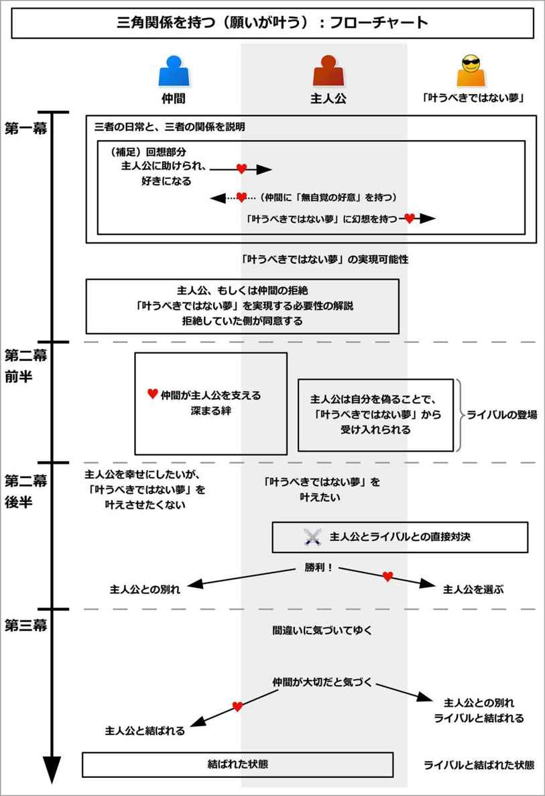
このイベントを構成するために、主人公にとっての「叶うべきではない夢」を追加しよう。
主人公は、物語で目的としている「本来の目的」があるものだ。
「本来の目的」は、恋愛物語なら、恋人役と結ばれることになるだろう。人間ドラマなら、素敵な家族を作ることや、嫌っている相手と理解し合うことかもしれない。バトルものなら敵を倒すことかもしれないし、自己実現物語ならロケットを打ち上げることかもしれない。
一方で「叶うべきではない夢」とは、その「本来の目的」とは全く別の目的で、それを実現しても、主人公は幸せにはなれないものになる。
主人公には合わないような人と結ばれることかもしれない。主人公には合わない仕事で活躍したり、プロになることかもしれない。勝っても無益なコンクールや大会で優勝することかもしれないし、不必要な地位や金を手に入れることかもしれない。
これは、見栄や虚栄心、劣等感などから発想するとよい。
この「本来の目的」と「叶うべきではない夢」の二つがあることで、三角関係を実現することができる。
それでは実際に、このイベントの流れを見てゆこう。
このイベントでは、「主人公」、「本来の目的」、「叶うべきではない夢」という三者が三角関係を作る。
「本来の目的」では、恋人役や仲間が関わることになる。
ここでは、恋人役を含めた仲間を、まとめて「仲間」と呼ぶことにする。
イベント冒頭では、主人公と「本来の目的」との関係が描かれる。
主人公は、「本来の目的」と一緒に日常を過ごしているだろう。
本来の目的は、主人公にぴったり合ったものとして演出される。
それなのに、主人公はそれのよさを全く理解していないだろう。むしろ、「こんなもの」とぞんざいに扱っているかもしれない。
恋愛物語では、恋人役が主人公を大切に思い、守ってくれていたり、手助けしてくれているだろう。主人公はそんな恋人役にありのままで付き合うことができているが、恋人役への恋心へは気づいていないだろう。
バトルものでは、主人公は戦いに向いている性格だろう。それなのに、練習や実戦をぞんざいに扱っているかもしれない。
そのように、「本当は両者はぴったり合うのに、『本来の目的』が主人公を好きでいて、一方の主人公はその大切さに気づいていない」という、関係性に問題があることが示される。
ここでは具体例として、「三角関係になる恋愛物語」と、「主人公がアイドルを目指す恋愛物語」で説明してみよう。
三角関係になる恋愛物語の例で言うと、ここでは学園もので、主人公は普通の少女だとしよう。そして、恋人役として青年がいるとする。
主人公にとって、本来の目的は「青年と結ばれること」になる。
イベント冒頭では、そんな主人公と青年との関係が示される。
青年は、主人公のことを大切に思っているだろう。
主人公が不良に絡まれた時、青年は身を挺してでも主人公を助けるだろう。
一方で、主人公も青年に心を打ち明け、青年を信頼している姿が描かれる。
しかし、主人公は青年に開けっぴろげに接することができるだけに、青年に対する恋心に気づかない状態になる。
主人公は青年に助けられたとしても、感謝などせずに、「青年が遅れたから、こうなっちゃうのよ！」などと不平を漏らしていることだろう。
青年は、主人公からそんな不平を漏らされても、「はいはい、ごめんよ」と苦笑いをして受け入れるだろう。
このように、「本当は両者はぴったり合うのに、青年が主人公を一方的に好きでいて、主人公が青年の大切さに気づいていない」という問題があることが示される。
主人公がアイドルを目指す例で言うと、主人公は普通の女の子で、ここでは恋人役に男がいるとする。
ここで、主人公である女の子にとっての本来の目的は、「男との恋を実らせる」という恋愛物語になる。
イベント冒頭では、女の子と「本来の目的」との関係が描かれる。
ここでは女の子はいつも突拍子もないことを思いついて、男を振り回しているとしよう。
男は振り回されながらも、女の子のために尽くしている姿が描かれる。
女の子が「駅前で音楽イベントがあるらしいから、放課後に行こう」と、強引に男を誘うかもしれない。
すると、男は女の子がステージを見られるように、いい場所を譲ってあげるかもしれない。一方で男は他に場所がなく、ステージを見られずに全然楽しめないかもしれない。
女の子が人混みで怪我をしそうになると、男はとっさに守ってあげるだろう。逆に、男の方が怪我をしてしまうかもしれない。
しかし女の子は、そんな男の大切さに気づいておらずに、感謝など一切しないのだ。むしろ、「もっといい場所はなかったの？」とか、「もっと早くに助けなさいよ」などと、男に不平を漏らしているだろう。
男はそんな女の子に苦笑いをしながらも、「はいはい、悪かったよ」と、女の子を助け続けるのだ。
このようにして、「二人は恋仲として結ばれる間柄なのに、男が女の子を一方的に好きでいて、女の子は男への好意や大切さに気づいていない」という、関係性に問題があることが示される。
ところで主人公に恋人役を含めた仲間がいる場合、そんな仲間とどのようにして出会い、そのような問題をはらむ関係になったのか、ここでその経緯が示されることが多い。
これは、回想として簡潔に説明されやすい。もしくは、イベント冒頭で出会いを演出することもある。
以下では少々長くなるが、出会いから仲間との関係性を築くまでの、代表的な流れを紹介しよう。
出会いの場面では、主人公が仲間に大きな恩を売る形にするとよい。
ここで、「主人公にとっては簡単にできることだが、仲間にとっては命を救われるほどの大きな恩」という形にするのが、このイベントを成功させるための、心理的なコツとなる。
例えば、相手が重要な用事で急いでいるのに、道に迷うかもしれない。そして、主人公が道を教えることで、相手は大いに助けられるかもしれない。
相手は財布や通行証などの重要なアイテムを落としたり、忘れたりすることで、危機的状態になっているかもしれない。それを必要としていない主人公が一時的に貸すことで、相手は大いに救われるかもしれない。
ファンタジーものなら、相手が盗賊に襲われているかもしれない。食べ物がなく、行き倒れているかもしれない。そんなとき、主人公はたまたま居合わせて、楽にできる方法で助けたり、余分に持っていて邪魔なものを使うことで、相手を助けるだろう。
そのように、主人公にとっては小さな親切なのに、相手にとっては大いに救われることとなり、気持ちにギャップができる。
これが、後々の心理的なズレと、関係性のズレを生み出すことになる。
仲間は目下の重要な問題を無事に解決すると、主人公と再会して、感謝を伝えるだろう。仲間にとっては、主人公は命を助けられるほどの恩人になる。
一方で主人公にとっては、「ちょっとした親切」をしたに過ぎない。そのため、「たいしたことじゃない」と謙虚に接して、場合によってはさらに親切までするかもしれない。
それによって、仲間は主人公に好意を持つようになる。同時に、「主人公に何かあれば、助けたい」と思うようになる。
こうして主人公と仲間は打ち解けて、一緒にいるようになったり、行動を共にするようになるだろう。
ただしこの段階では、仲間から主人公への好意を持つだけで、主人公から仲間への好意は持たない状態になる。
三角関係になる恋愛物語の例で言うと、ここで主人公の少女が、青年と出会った経緯が回想として示される。
その日、主人公は楽しみにしていた放課後の約束を取り消されてしまい、そこまでの切符や通行証が無駄になってしまったとしよう。
そして放課後になり、主人公が肩を落として歩いていると、青年と出会う。
青年は困っている様子だが、周囲の人たちに助けを求めても、誰からも助けてもらえずに、「どうしよう......」と慌てているとする。
そこで主人公が事情を聞くと、青年は「家族が倒れて、すぐにでもこの場所に行かなければならない。だけど引っ越してきたばかりでよく分からずに、道に迷った」と言うのだ。
その場所とは、ちょうど主人公が放課後に行くはずだった場所から、すぐ近くだと分かる。
そこで主人公が道を教えて、ついでに無駄になって困っていた切符や通行証を与えると、青年から大きく感謝されることになる。
翌日、主人公は学校で青年と出会うだろう。そして青年から、「昨日は本当に助かった」と、心から感謝されるだろう。
こうして、主人公にとっては小さな親切なのに、青年にとっては大いに救われる、という心理的なギャップが生まれる。
青年は恩人でもある主人公に感謝して、主人公に恩返しをしたくなるものだ。だから、「俺にできることがあれば、何でも言ってくれ」と、主人公に報いようとするだろう。
しかし主人公は、「あの程度で、とんでもない！」と言い、それどころか地理的に不慣れな青年に、優しく近所を案内して教えるかもしれない。
こうして青年は主人公に好意を持ち、恩人でもある主人公に対して、心から「主人公が幸せになるように、協力してあげたい」と思うようになる。
ただしこの段階では、青年が主人公に好意を持つだけになる。まだ主人公は、青年に対して開けっぴろげに付き合えるわけではない。
主人公がアイドルを目指す例で言うと、ここで女の子が男と出会った経緯が示される。
男は過去に、女の子から命を助けられて、大きな恩があると説明される。
チンピラに殺されそうになった時に、女の子の機転を利かした智恵で助けられたとか、人生をあきらめようとしたときに、女の子の純粋な笑顔に助けられたとか、これは適当な理由でよい。
だから、恩人である女の子の幸せを作るために、男は力を尽くしているのだ。
ただしこの段階では、男が女の子への好意を持つだけになる。女の子は男に対して、信頼を寄せているわけではない。
前節に引き続き、ここから主人公が仲間に対して、「自覚のない好意」を持つようになったエピソードが示される。
どのみち第二幕前半で主人公は仲間と絆を結ぶため、この部分は必須ではない。「本来の目的」を明示したい場合に用いるとよい。
これは、主人公が仲間に「主人公にとって最も隠したい秘密」を知られてしまうことで起こりやすい。
その秘密とは、誰にも言えないような恥ずかしい癖や趣味趣向、性質などになりやすい。
理解されない変な趣味かもしれないし、あこがれてはならないような人にあこがれていることかもしれない。人に知られると差別を受けるような身分かもしれないし、知られたくない傷や障害を持っているかもしれない。社会の落ちこぼれであることや、多くの人から嫌われていることかもしれない。
恥ずかしさが読み手に伝わりにくい場合、「その社会でその性質を持つことは、批難されること」だという説明を添えるとよい。
そんな秘密を、その仲間に知られてしまうのだ。最初はごまかそうとしても、ごまかしきれなくなるだろう。
秘密を知られた主人公は、「きっとこの人も、自分を嫌うようになる」と落ち込むかもしれない。だが、仲間はそんな主人公を嫌うことはなく、普段通りに接したり、むしろ励まそうとするだろう。
それによって、主人公は「最も隠したいこと」を隠す必要がなくなる。
主人公は、仲間に隠すことなど何もなくなり、仲間には開けっぴろげに付き合うことができるようになるのだ。
このようにして、主人公は仲間に対して、「自覚のない好意」を持つことになる。
この「自覚のない好意」が、第二の心理的なコツになる。
それによって、「本当は両者はぴったり合うのに、仲間が主人公を好きでいて、一方の主人公は仲間の大切さに気づいていない」という、関係性に問題が生まれた経緯が示される。
なお、この部分を省略すると、主人公は「本来の目的」と「叶うべきではない夢」のどちらにも好意を自覚することになる。それによって、主人公がどちらと結ばれるのかを、読み手に分からなくすることができる。
この部分を加えるとソフトな雰囲気となり、省略するとハードな雰囲気となり、緊張感を持ちやすい。
物語に応じて、バリエーションを出すとよい。
三角関係になる恋愛物語の例で言うと、ここから主人公の少女が、恋人役の青年に「自覚のない好意」を持つことになる。
青年から好かれてしばらくしたあるとき、主人公は青年に、秘密を知られしまうことになる。
ここでは、主人公の秘密は「生徒会長にあこがれている」ことだとしよう。青年は、主人公が落としたパスケースに写真が入っているのを見て、それを知ることになる。
主人公は慌ててごまかそうとするだろうが、ごまかしきれなくなる。そして主人公は、「この学校では、主人公のような普通の子が、生徒会長のような人にあこがれるのは、批難されること」だと説明するだろう。
その上、生徒会長への恥ずかしいポエムや、他人が見たら痛い恋文なども、パスケースに入っているかもしれない。
主人公は誰よりもそれを気にしていて、誰にも知られないようにしていたことが示される。
主人公は、青年にそれを知られたことに苦しみ、「批難される」と恐れるかもしれない。だが、青年はその事実を知っても気にすることはなく、「そんなの俺にとってはどうでもいい」と、いつも通りに接するのだ。
こうして主人公は「最も恥ずかしい部分」を受け入れられたことで、下心から本心までを含めて、青年に対してだけは開けっぴろげにして、ありのままで付き合えるようになるのだ。
このようにして、「本当は両者はぴったり合うのに、青年が主人公を一方的に好きでいて、主人公が青年の大切さに気づいていない」という問題が生まれたと説明される。
主人公がアイドルを目指す例で言うと、ここでは主人公の女の子が、恋人役である男に対して「自覚のない好意」を持つことになる。
ここで女の子は、元々誰にでも本心を出せる性格だとする。だが、相手が気にしていることまでずけずけと言うので、みんなから嫌われているとしよう。
そんな時に、男は女の子に恩を持つため、そんな女の子のありのままを受け入れるのだ。嫌みを言われたり欠点を指摘されたとしても、男は「はは、確かにそうだ」と笑い飛ばせるだろう。
すると、女の子は男を信頼して利用するようになり、一緒にいるようになった、と説明される。
このようにして主人公は「自覚のない好意」を持つようになる。そして「二人は恋仲として結ばれる間柄なのに、男が女の子を一方的に好きでいて、女の子は男への好意や大切さに気づいていない」という、関係性の問題が作られたと示される。
ここまでで主人公と「本来の目的」の関係を示した。三角関係を示すには、さらに主人公と「叶うべきではない夢」の関係も示す必要がある。
ここで、「本来の目的」と同様に、主人公と「叶うべきではない夢」の関係が描かれる。
ここでは、主人公が仲間を助けたのと同様に、「叶うべきではない夢」が主人公を助ける流れになる。
ただし読み手には、「叶うべきではない夢」が主人公には合いそうにないものとして演出される。
それは、主人公が「叶うべきではない夢」を誤解をしたり、見栄や虚栄心を持つことで示されやすい。
例えば恋愛物語の場合、主人公があこがれている相手は、主人公には合わない人物だと描かれる。
主人公は相手の内面にあこがれているのではなく、見た目や地位、お金などの外的なものにあこがれているのかもしれない。
単純に、主人公が相手の性格を誤解していたり、過剰に期待をしていることもある。
場合によっては、相手は表面では笑顔を浮かべていても、裏では「主人公を陥れてやろう」という明快な悪意を持っていることもある。
たとえ相手が立派な人物だったとしても、主人公は緊張したり、自分を偽らなければならなかったり、ありのままを出せない相手になるだろう。
「叶うべきではない夢」が地位や身分などを手に入れることの場合でも同様に、華美で派手な世界とは裏腹に、その現場に携わっている人たちは、無理をしていたり苦しんでいるだろう。
また、主人公の性格には合わない世界かもしれない。主人公が自由な性格の場合、そこはプライベートや自由がなく、管理されてがんじがらめの日常になるだろう。主人公がおとなしい性格の場合、強い意志や闘志が必要だったり、おとなしい性格では生きていけないような競争世界になるだろう。
しかし、主人公はそんな裏側の実情を知らず、表側だけを見て誤解して、あこがれているのだ。実際に、それに対して過大評価していたり、誇大妄想を抱いている姿が示される。
このようにして、主人公と「叶うべきではない夢」で問題を抱えていることが示されて、三角関係があることが示される。
三角関係になる恋愛物語の例で言うと、ここで主人公と「叶うべきではない夢」の関係が示される。
それが、主人公のいる学校では麗しい生徒会長がいるのだが、「その生徒会長と結ばれる」という夢になる。
その生徒会長は高貴な家柄の出身で、才色兼備だとしよう。そして以前主人公が落ち込んだ時に、偶然にも生徒会長から些細な親切を受けて感激し、あこがれるようになったと説明される。
だが、主人公にはそんな伝統や格式など、明らかに合わないだろう。
青年は、生徒会長と同じぐらいの才色兼備だろう。だが、主人公は青年のよさには全く気づかずに、生徒会長の方に、妄想とも言えるほどのあこがれを持っているのだ。
このように、主人公は「叶うべきではない夢」を持っていることが示される。こうして「主人公、青年、生徒会長」という三者に、三角関係があると示される。
主人公がアイドルを目指す例で言うと、ここでの「叶うべきではない夢」は、「オーディションを勝ち抜き、アイドルになる」ことだとする。
主人公である女の子は、男を引っ張って、駅前の音楽イベントを見に行くことだろう。
ステージでは、メインとなるアイドルが歌っているだろう。女の子はそんな姿を見て、「素敵......」とあこがれるのだ。
しかし、イベント終了後に、男はその舞台裏の実情を知ることになる。男だけが偶然にも舞台裏を通りがかった時に、アイドル業界の現実を知るだろう。
そこでのアイドルは、がんじがらめのスケジュールで、遊びに出ることもできずに、自由にできないのだ。男や読み手には、「自由奔放な女の子には、絶対に合わない世界だ」と感じられるだろう。
だが肝心の女の子は、そんな裏側があることを、露にも知らない。
そして女の子は、「アイドルっていいな......」などと妄想して、恍惚とした表情であこがれているのだ。
こうして「女の子、男との恋、アイドルになる」という三者に三角関係があることが示される。
そんなあるとき、主人公はそんな「叶うべきではない夢」の実現可能性を知ることになる。
それは、「主人公でもそれを実現できる」というきっかけが訪れることで引き起こるだろう。
偶然相手と知り合うかもしれない。その世界からスカウトが来るかもしれないし、オーディションや選考試験をするという情報を得るかもしれない。その世界にいる人や、重要な人を助けることで、その世界に入れるようになるかもしれない。友人や親類が、橋渡しをしてくれるかもしれない。
場合によっては、「何となく」や、「仲間とケンカをして」などの理由で動く場合もある。
それによって、主人公は「叶うべきではない夢」を実現する方向へと動き始めることになる。
三角関係になる恋愛物語の例で言うと、ここで主人公は、生徒会長と知り合う流れになる。
主人公が用事で裏庭を歩いていると、偶然にも生徒会長に出会ってしまうのだ。
生徒会長は誰かから逃げている様子で、主人公がそれを助けるだろう。すると、生徒会長から感謝されて、「多忙すぎて、プライベートがないんだ」と事情を明かされるかもしれない。
そして主人公が秘密の場所を紹介するなどして、生徒会長がプライベートの時間を確保できるように助けるだろう。それによって、主人公は生徒会長から受け入れられることになる。
場合によっては、主人公の一般市民的で素朴な感性を気に入られて、生徒会長から「また君と、ここで会えたらいいな」と言われるかもしれない。
こうして主人公は、「生徒会長と結ばれる」という「叶うべきではない夢」の実現可能性を知ってしまうのだ。
主人公がアイドルを目指す例で言うと、ある日、主人公の女の子はアイドルのオーディションがあることを知るだろう。
それによって、女の子は「自分がアイドルになれる」という可能性を知ってしまうことになる。
「叶うべきではない夢」への実現可能性を知った主人公は、「それを実現したい」と思うものだ。
しかしここで、主人公と仲間とで、片方が積極的な反応をして、もう片方が否定的な反応を引き起こすことになる。
主人公が否定的になる場合、「そうなりたいけど、自分には無理だ」と自信を失うだろう。
そして、自分ではだめな理由をいくつも引っ張り出して、落ち込むだろう。
そんな主人公を見て、仲間は「落ち込んで欲しくない」、「主人公が幸せになって欲しい」と、主人公にそれを促す形になりやすい。
一方で仲間が否定的になる場合、仲間は主人公に対して、「主人公には合わない」と伝えることが多い。
実際に仲間が詳しく事情を語り、「主人公には合わない世界だ」、「主人公の個性にも合いそうにない」と説明することもある。
だが、主人公だけは「絶対にそうなる！」と、妄想に近いあこがれを抱いて、仲間の意見を聞こうとはしないのだ。
仲間も読み手も、「絶対にその夢を叶えても、主人公は幸せになれない」と分かっているだけあって、強気な主人公にはほとほと困らされるだろう。
もし主人公が普段は弱気な性格だったとしても、「これだけは譲れない」と、意外な芯の強さを見せることになる。
三角関係になる恋愛物語の例で言うと、ここでは主人公が否定的な反応を引き起こすことにしよう。
主人公は青年に、生徒会長と出会ったことや、「また会えたらいいな」と言われたことを全て語るだろう。そして「生徒会長と結ばれることができるかもしれない！」と、有頂天になるだろう。
しかし急に主人公は、「こんな幸運、ありえない」とか、「緊張しすぎて吐きそう」、「次はもう行けない」などと、否定的な反応を起こす。
また、「私は普通の生徒だし」、「生徒会長のような高貴な人のことなんか分からないし」などと、不釣り合いな理由を挙げて、いじけるだろう。
一方で青年は、主人公に落ち込んで欲しくなくて、輝いて欲しいがために、「やってみないと分からないだろう！」と、生徒会長との恋を促してしまうのだ。
主人公がアイドルを目指す例で言うと、ここでは男が否定的な反応を引き起こすとしよう。
主人公の女の子は、恋人役の男に「アイドルになる」と決意を表明するだろう。
同時に、男に協力を求めるだろう。男は生まれた家庭や仕事の関係で、衣装やメイク、アイドル業界に詳しいなどとしてもよい。
しかし男の視点で見ると、その世界は明らかに商業的であったり、厳しい世界のように見えるものだ。
そのため、男は控えめに「君には合わない」、「やめておいた方がいい」と促すだろう。
だが、女の子の決意が揺らぐことはない。そんな勢いに、男はほとほと困らされることになる。
ここで、状況の整理がなされる。主人公と「本来の目的」、そして「叶うべきではない夢」の三者においての関係性がまとめられ、三角関係があると、読み手に明快に示される。
そしてメンターによって、主人公もしくは仲間の拒絶している側に、改めて「叶うべきではない夢」を実現する必要性が示される。
メンターは主人公や仲間になる場合もあるし、第三者が周囲に説明することもある。
ここまでで主人公が拒絶している場合、仲間は「主人公に幸せになって欲しい」という理由で、それを促すことが多い。
この場合、仲間は適当な理由をつけて、主人公を励まし、行動させようとするだろう。
主人公はそんな優しさに触れて、迷うことになる。
ただし、ここでの主人公は、「できれば他によい解決策はないものか」と思っているだろう。
仲間が拒絶している場合、仲間に対して「主人公に協力しなければならない」という事情が示される。
それは、「主人公に対する脅威」として現れることが多い。
主人公は、協力をしてもらえずに、激しく落ち込むかもしれない。元気がなくなり、怪我をしそうになったり、危ない道をたどろうとしてしまうかもしれない。
それによって、仲間は「こんな状態の主人公は、見ていられない」という気持ちになる。
それほど、仲間は主人公のことを大切に思っているのだ。
だが、ここでの仲間は、「できれば他によい解決策はないものか」と感じているだろう。
三角関係になる恋愛物語の例で言うと、ここで主人公と青年、生徒会長という三者の関係性がまとめられ、三角関係になっていると読み手に示される。
そして、主人公は「生徒会長と結ばれる」という「叶うべきではない夢」を持っていることが、読み手に示される。主人公は、青年と結ばれることが「本来の目的」なのだと。
ここでは主人公が拒絶しているので、青年がメンターとなり、生徒会長と結ばれるメリットを語るだろう。
そして青年は主人公に対して、「落ち込んでいる主人公は、見たくない」とか、「俺も協力してやるから」などと、促すことになる。
しかしそれでも主人公は、勇気を出せないものだ。
主人公がアイドルを目指す例で言うと、ここで主人公の女の子と、恋人役の男、「アイドルになる」という三者の関係性がまとめられ、三角関係になっていると読み手に示される。
ここでは拒絶する男に対して、女の子に協力するメリットと、協力しないデメリットが示される。
女の子はアイドルを目指したいが、男に協力を拒絶されたため、いかにも怪しげなマイナー芸能プロダクションの助力を得ようとするかもしれない。そこでの「アイドル活動」とは、明らかに健全なものではないだろう。
そんな危なっかしい女の子を、男は見ていられないかもしれない。
また、一人では実現できないことに、女の子は落ち込むかもしれない。
落ち込んで夢も希望もなくなった女の子を見て、男は「誰も協力しないと、女の子はここまで元気がなくなるのか」と気づくだろう。
もし応援すれば、女の子はきっと、今まで通りの輝きを取り戻すと気づくのだ。
男は、女の子を想うがあまりに、「何とか元気にさせてやりたい」と思うだろう。ただし、アイドルを目指すことは未だに否定的である。
そしてついに、拒絶していた側が嫌々ながらも「叶うべきではない夢」を受け入れる、そんなきっかけとなる出来事が起こる。
それは多くの場合、「叶うべきではない夢」を実現するメリット、もしくは実現しないデメリットが、一部現実になることで引き起こされる。
主人公が拒絶している場合、実現するメリットが一部現実になるだろう。
この場合、実際に主人公は、それを実現した状態を少しだけ味わうことになる。
それは、偶然や疑似体験によって引き起こされることが多い。
誰かと恋愛する場合、「恋人として付き合うような状態」を、偶然にも一度味わってしまうかもしれない。その地位にいる快感を、味わってしまうかもしれない。
一方で仲間が拒絶している場合、実現しないデメリットが一部現実になってしまう。
この場合、仲間が協力しないことで、主人公や仲間は何らかの脅威を得るだろう。
主人公が落ち込んで、病気になってしまうかもしれない。危ない道へと傾いてしまうかもしれない。
それは切羽詰まった状況になり、主人公に協力する以外に、それを回避する道はないと分かるのだ。
そんな強い動機を得ることで、主人公も仲間も、「叶うべきではない夢」に向かって動き出すことになる。
なお、ここでの仲間は、主人公の夢実現に積極的である場合もあるし、嫌々協力することもある。
一方で主人公も、積極的に動く場合もあるし、「仲間がそこまで言うなら」と、仲間のために嫌々ながらも動き出すこともある。
この積極性については、自由に設定してもらって構わない。このスタンスの違いが、第二幕前半で様々な葛藤のバリエーションを生み出すことになる。
三角関係になる恋愛物語の例で言うと、主人公は再び、生徒会長と出会うことになる。
何らかの用事があって、生徒会長と二人で過ごした場所に行かなければならなくなるだろう。そして、青年にすがりついて、「青年も一緒に来て」と言うかもしれない。
青年は一緒にそこまで出向き、「俺はここにいるから安心しろ」と、生徒会長に気づかれない場所に立ち、主人公を支えるだろう。
青年の支えや機転もあり、主人公は「生徒会長と定期的にここで会う」という目標を実現する。
生徒会長と別れた後、主人公は青年の存在を頼もしく思うだろう。
ただし、主人公一人では、生徒会長と上手くやりとりをするのは不可能になる。だから、主人公は青年に引き続き、協力を求めるだろう。
青年は「主人公が幸せになるなら、いいか」と受け入れて、こうして二人は「主人公が生徒会長と結ばれる」という、「叶うべきではない夢」に向かって進み始めることになる。
主人公がアイドルを目指す例で言うと、ここで主人公の女の子は、恋人役の男が想像する以上に元気を失うだろう。
それによって女の子は、事故に遭いそうになってしまったり、病気になってしまうかもしれない。また、それが一部現実として引き起こり、男は「これはまずい」と危機感を持つだろう。
結果として、男は女の子がアイドルを目指すことを、渋々ながらも承知して、協力を約束するのだ。
男の「分かったよ、協力すればいいんだろ」という言葉を聞いた瞬間、女の子は突如として元気になり、跳び上がって喜ぶだろう。そして、男に抱きついて踊り出すかもしれない。
男は「まあ、どうせだめだろうけど、女の子が元気になるならいいか」などと苦笑いをしながら、共に「女の子がアイドルになる」という「叶うべきではない夢」へと向かってゆくことになる。
ここで改めて、主人公が目指す目標設定がなされる。
主人公は「叶うべきではない夢」を持つが、それに必要な素質や能力、アイテム、地位などが、まだ十分にそろっていないものだ。
そこで、主人公が達成すべき目標が掲げられ、役割分担がされることになる。
これは主人公主導で行われる場合もあるし、仲間主導で行われる場合もある。積極的な方が、相手を引っ張ってゆくことになる。
そして主人公は、「叶うべきではない夢」の実現に向けて進んでゆく。
主人公は、ことあるごとに、「自分に足りないもの」を突きつけられるだろう。そのたびに、仲間に「自分を偽り、困難を乗り越える方法」の助力を求めるだろう。
主人公は仲間の助力を得ることで、そんな困難を乗り越えてゆくことになる。
同時に、主人公は「叶うべきではない夢」からもよい評価を得てゆく。
ただしここでは、主人公は「叶うべきではない夢」に対して、自分を偽って接することになる。
だから、「叶うべきではない夢」からどんなに評価されたとしても、それは表面的なものにすぎない。主人公の本当の気質や性格などは全く考慮されずに、表層的な見た目や演技、技術面や成果のみを評価されることになる。
また、幸運に恵まれることも多い。意外な人脈と知り合うことができたり、偶然にも有利な情報やアイテムを得るかもしれない。
それによって、主人公は当初の予想に反して瞬く間に頭角を現してゆき、成果を出し、目標を実現してゆくことになる。
三角関係になる恋愛物語の例で言うと、主人公である少女は、少しずつ生徒会長と触れ合う時間を増やしてゆくだろう。
主人公は、「生徒会長はこういうのが好み」という情報を聞きつけるかもしれない。
そのたびに、主人公は恋人役の青年に「何とかして」と泣きついて、助力を求めるだろう。
そして青年は「やれやれ」と思いながらも、そんな主人公に力を貸してゆく。
最初こそ、主人公は「自分と生徒会長では、接点なんか何もないし、すぐに嫌われるだろう」と思っていたかもしれない。
しかし偶然や幸運が重なり、同時に青年の強力な助力や励ましがあることで、生徒会長を何度も助けることになり、好かれるようになってゆく。
それによって、当初の予想に反して、主人公はどんどんと生徒会長から受け入れられてゆく。
ただし、主人公はあくまでも、生徒会長にはありのままの自分を出せずに、自分を大いに偽っていることになる。
主人公がアイドルを目指す例で言うと、主人公である女の子はオーディションを受けてゆくが、最初は十分な実力がないものだ。
そこで幸運にも、「今回のオーディションでは、こういう要素をチェックされる」という前情報を得るかもしれない。外見や歌唱力、ダンスなど、何の準備をする必要があるのか、その情報を得るのだ。
女の子はそのたびに、恋人役の男に助力を依頼するだろう。
男はなんだかんだと言いながらも、女の子のために尽くしてゆく。
男は「オーディションの最初の段階で、すぐに落ちるだろう」と予想していたかもしれない。
しかし、男の圧倒的な協力があることで、女の子は美しく輝き、オーディションを勝ち抜いてゆくことになる。
このイベントでは、主人公を支える仲間の存在が重要になる。
仲間は主人公のために、力を尽くすだろう。主人公に力がなければ手助けをして、主人公が落ち込めば励まして、支えてゆく。
それは自分の幸せを犠牲にしても、主人公に協力するほどだろう。
それだけ、彼らは主人公を好きでいて、愛しているのだ。
ただし、仲間は本心では「主人公にその夢を実現して欲しくない」と思っているものだ。
そのため、仲間は主人公に協力した後で、「自分は何をやっているんだ。敵に塩を送って」と、自己嫌悪をすることも多い。
主人公は、そんな仲間から助力を得る過程で、仲間との絆を深めてゆくことになる。
ただし、主人公は仲間との絆を深めているのに、その絆の深まりには気づかない。
主人公は「叶うべきではない夢」の実現に囚われているので、仲間からの愛や恩には気づきにくいものだ。
だが、ふとした折に、「『叶うべきではない夢』と一緒にいる時は嬉しいけど、自然体ではいられない。でも仲間と一緒にいる時は、なぜか自然体でいられる。不思議」と思うかもしれない。
そう感じることが、クライマックスで主人公が「叶うべきではない夢」を手放して、仲間の元へと走ることになる前振りとなる。
三角関係になる恋愛物語の例で言うと、青年は主人公を助けてゆくだろう。
主人公が「生徒会長は、クッキーが好きらしい。でも私は作れない、どうしよう！」と泣きついたら、青年は主人公にクッキーの作り方を教えるだろう。
主人公が「生徒会長は、グラマーな女性が好きらしい。でも私は違う、どうしよう！」と泣きついたら、青年はテスト期間中なのに徹夜で主人公の制服に細工をして、美しく見せるかもしれない。
主人公が「生徒会長は、こういう趣味を持つらしい。でも私は全然知らない、どうしよう！」と泣きついたら、青年は主人公と一緒に、その趣味を楽しみ、味わうだろう。
こうして、主人公は知らずに青年との絆を深めてゆくことになる。
しかし、主人公は「生徒会長に好かれるため」という目的ばかり考えているので、青年との絆には気づいていないものだ。
主人公はふとした折に、「生徒会長の前では自分を出せなくて緊張するのに、なぜか青年の前ではくつろげて、ありのままでいられる。どうしてだろう？」と感じるかもしれない。
一方で青年は、主人公を助ける度に、「俺は何をやっているんだ。主人公を生徒会長と結びつけて、本当にそれでいいのか？」と、葛藤してゆくだろう。
主人公がアイドルを目指す例で言うと、恋人役の男が、主人公である女の子を助けてゆくだろう。
外見や面接の審査前では、男が女の子のメイクや髪型を整えたり、面接の訓練に付き合うだろう。
歌唱力の審査前では、一緒にカラオケに行って、楽しむかもしれない。
ダンスの審査前では、「一人でダンス教室には入れない！」という女の子のために、男がわざわざ付き合って、一緒に教わるかもしれない。一緒に運動をして、心地よく汗を流すかもしれない。
こうして、女の子は知らないうちに、男との絆を深めてゆく。
男はなんだかんだと言いながらも、自分の幸せを犠牲にしてまで、やりたいことを犠牲にしてまで、女の子のために尽くすことになる。
女の子は、ふとした時に「アイドルの訓練そのものよりも、男と一緒に何かをすることの方が楽しいんじゃないか」と感じるかもしれない。だが、すぐに「そんなの気の迷いだ」と、自分の本心に気づこうとはしないだろう。
一方で男は、「俺はいったい何をしているんだ。このままじゃ、本当にアイドルになってしまう」と、頭を抱えるかもしれない。
だが男はそれだけ女の子を守りたいと思っているし、なんだかんだと言いつつも、女の子の笑顔が、自分の幸せになっているのだ。
第二幕前半のある程度した段階で、主人公にとって、「叶うべきではない夢」におけるライバルが登場することになる。
このライバルこそが、主人公よりも「叶うべきではない夢」にふさわしい人物として描かれることになる。
主人公が半ば気まぐれで「叶うべきではない夢」を目指すのとは対照的に、そのライバルは完全なる素質や才能を持っていて、しかも幼い頃から努力を重ねて、その実現を願っているような人物になりやすい。
しかし、そのライバルとなる人物は、不運であることが多い。
生まれた環境が悪かったり、タイミングに恵まれなかったり、資金や支援者、健康や仲間に恵まれないかもしれない。誤解をされやすい性質を持つかもしれないし、先天的に大きなハンディキャップを持つかもしれない。
だが、そのライバルは、血のにじむような努力でそれを補ってきたという背景を持つだろう。
ただし、登場直後では、ライバルが抱える背景事情をすぐには示さないことが多い。そのライバルは単純に「主人公を毛嫌いする、有能だが嫌な奴」であると演出されやすい。
ある程度ライバルが物語になじみ始めた段階で、ライバルの背景を示すとよい。
ライバルは、不運だからこそ、隠れた努力家になることが多い。そのため、ライバルは主人公を憎み、敵視して嫌いやすい。
何も努力をせずに才能を持ち、幸運や仲間の支えに恵まれる主人公に嫉妬して、主人公を見下すだろう。そして、主人公をののしり、「主人公はここにはふさわしくない」と舞台から去るように通告するだろう。
だからといって、主人公は「はいそうですか」と受け入れるわけにはいかない。
主人公は相手を「嫌な奴」、「人を見下す、人として最低な奴」だと敵視することもあるし、相手の努力を知らない場合、その才能や境遇に嫉妬することもある。
こうして主人公は、「いつかこの敵と直接対決をすることになる」と予感しながら、戦いを勝ち進めてゆくことになる。
なお、ここではまだ、ライバルとの直接対決はしないようにしておこう。直接対決は、第二幕後半で行うことになる。
ここまでの、主人公が「叶うべきではない夢」を実現してゆく過程と、それと共に「本来の目的」を実現してゆく部分は、サブプロットで構築するとよい。
この際に、主人公が夢を実現しようとすることを通して、同時に仲間の抱える問題を解決するかもしれない。
それによって、主人公は仲間とより深い絆で結ばれてゆくだろう。
同時に、主人公は気づかない間に、「本来の目的」を大切に思うようになってゆく。
三角関係になる恋愛物語の例で言うと、ここでは主人公のライバルとして、女子生徒を作るとしよう。
その女子生徒は生徒会の副会長で、生徒会長とは幼なじみで、幼い頃からずっと生徒会長を片思いしていた、という人物だとする。
美しくて器量もよく、家柄も育ちもよいお嬢様で、性格も生徒会長とはぴったり合うような人物になる。
ただし、この女子生徒は極めて強い不運の持ち主になる。
生徒会長とは幼い頃から一緒にいるので、妹のように扱われているかもしれない。告白を何度もしようとしても、全て邪魔が入り、最悪の結果になったかもしれない。
さらには生徒会長への愛をこじらせて、普段は上品なお嬢様なのに、生徒会長に近づく女子を見たら、嫉妬で豹変するような性格になってしまったかもしれない。
挙げ句の果てには、不運な事故で入院している間に、主人公に生徒会長を取られそうになっているのだ。
女子生徒は登場早々、主人公を見下して、「あんたなんか、生徒会長にふさわしくない。立ち去りなさい」などと敵視して言うだろう。
主人公は、そんな女子生徒の存在に苦しんでゆくことになる。
そして、「いつかこの女子生徒との戦いになる」と予感しながらも、主人公は生徒会長に好かれてゆくことになる。
同時に、主人公は青年との絆を深めてゆく。
主人公がアイドルを目指す例で言うと、女の子と同じようにアイドルの座を目指す、ライバルであり敵となる少女が現れるだろう。
そのライバルは、美しさも歌唱力も、ダンス力も性格も、努力家であることも、音楽やステージを愛していることも、全てがアイドルとしてふさわしい人物になる。
だが、今まで不運が重なって、アイドルにはなれなかったとする。
そのため、ぱっと出で才能を持つ女の子に、激しく対抗意識を燃やすだろう。そして女の子に「あんたなんか、アイドルにはふさわしくない」と、敵意をあらわにするかもしれない。
女の子自身も、全ての才能を持っているライバルに嫉妬するかもしれない。
そして、「いつかライバルとの戦いになる」と予感しながら、女の子は男と協力して、オーディションをくぐり抜けてゆくことになる。
同時に、女の子は気づかない間に、男との絆を深めてゆく。
中盤のターニングポイントから、主人公と仲間は「叶うべきではない夢」を実現してゆくことになる。
ただしここで、「本来の目的」と「叶うべきではない夢」が両立できないことが示される。
これは、主人公はそれに気づかないが、仲間が気づく形になりやすい。
あるとき、仲間は「主人公の夢を叶えると、自分は主人公とは一緒にいられなくなる」と分かるだろう。
そして、仲間は主人公に協力しつつも、「主人公とは別れたくない」と葛藤を強めてゆく。
これによって、緊張感を盛り上げてゆく。
そのため、ここからは仲間を主体として物語が進みやすい。
三角関係になる恋愛物語の例で言うと、ここであるとき青年は、「主人公が生徒会長と恋人同士になると、自分とは一緒にいられない」と気づくだろう。
それによって、青年は主人公に協力しつつも、「主人公の願いを叶えてあげたい、でも、叶えたくない」という葛藤を強めてゆく。
主人公がアイドルを目指す例で言うと、あるとき男は、「アイドルに恋人はいてはならない」と気づくだろう。
それによって、男は女の子に協力しつつも、「願いを叶えてあげたいが、でも、アイドルにはさせたくない」と苦しんでゆく。
主人公は仲間の協力もあって、ついに夢を実現するために、後一歩のところまでやってくるだろう。
そしてそれを決めるには、最後にこれまで主人公を苦しめていた、最大のライバルと戦う必要がある。
そんな最終決戦を前にして、その前日、主人公たちは思い残すことがないように、象徴としての「最後の晩餐」を行うだろう。
ここで、主人公もしくは仲間の元々乗り気でなかった側は、「目指してよかった」と思うことが多い。
乗り気でなかった側の人物は、相手に感謝するだろう。最初は嫌々だったが、自分の持つ問題を解決できたかもしれない。
場合によっては、乗り気でなかった側は、心の奥底では相手に対しての密かな想いに気づいているかもしれない。
だが、それを押し殺してでも、「『叶うべきではない夢』を叶えるのも、いいかもしれない」と、受け入れられるようになっているだろう。
また、主人公が願いを叶えてしまうと、仲間は主人公とは一緒にいられなくなる。
仲間は「主人公が幸せになるなら、それでいい」と受け入れようとするかもしれない。だが、心のどこかで「主人公には、そうなって欲しくない」という思いがあるだろう。
こうして様々な葛藤を抱えつつ、最後の時間を楽しむことになる。
ついに、決戦当日が訪れる。
決戦は、何らかの「特別な場」が設定されやすい。
その場は、「叶うべきではない夢」にふさわしい人物を判定するような場になる。
主人公は仲間と共に、最後の準備をするだろう。準備を一つずつ確認する上で、主人公や仲間は戦いの表情へと変わってゆき、緊張感を高めてゆく。
そして、決戦の地へと旅立つのだ。
三角関係になる恋愛物語の例で言うと、ここでは「舞踏会」という特別な場を設定するとしよう。
生徒会長の家では、その年齢の誕生日に、伴侶にする人物を決めるという風習があるとする。そのための舞踏会を開催することになる。
そこで、婚約を希望する良家のお嬢様たちと共に、主人公と女子生徒が招かれることになる。
その前夜、主人公は青年と一緒に過ごすだろう。
主人公は、青年に感謝するかもしれない。「最初はダメだと思っていたけど、やってみて自信がついた」と微笑むかもしれない。
主人公は、青年に対する恋心に気づいているかもしれない。だが、応援してくれる青年のためにも、「生徒会長との恋」を実現しようとするのだ。
同様に青年も、心の奥底では主人公に対する恋心に気づいているだろう。しかし青年もまた、主人公のために、主人公の恋を応援するのだ。
当然、主人公が生徒会長との恋を実らせた場合、このように二人の時間は持てなくなるものだ。
だから、二人は最後となるかもしれない、安らぎの時間を過ごすことになる。
翌日となり、舞踏会の時間が訪れる。
青年は主人公を見事にドレスアップして、会場までエスコートするだろう。そのドレスは、青年が時間をかけて、主人公のために仕上げたものかもしれない。
青年は使用人枠で、会場に入ることができるとしよう。そして、そこで主人公を応援することになる。
主人公がアイドルを目指す例で言うと、オーディションも最終審査までたどり着くだろう。
その最終決戦前夜、男は女の子と一緒に過ごすだろう。
女の子は最終オーディションに向けて興奮していて、いつもと変わらず男のことなど全く感謝しないものだ。
しかし男は、「女の子に協力してよかった」と思うようになっているだろう。
楽しい毎日を過ごせたかもしれない。女の子の積極性に触れて、自信がついたかもしれない。人に喜んでもらう幸せを味わえたかもしれない。
男は静かに、女の子に感謝するだろう。女の子は「当然」と言うかもしれないが、男は感謝を伝えずにはいられないのだ。
アイドルに「恋人」などいてはならないことに、女の子は気づいていないだろう。一方で男は、女の子にそれを伝えられないかもしれない。
だから男は、女の子との最後の瞬間を楽しむのだ。アイドルになって欲しいはずなのに、心のどこかで「アイドルにはなってほしくない」と思いながら。
決戦当日が訪れて、女の子は男と最後の準備をするだろう。一つ一つ必要なものを身につけるたびに、最終オーディションへの緊張感は高まってゆく。
そして女の子は男の支えと共に、オーディションのファイナリストとして、舞台に立つことになる。
そして、最終決戦が始まる。
ここで、今まで主人公を苦しめたライバルとの、直接対決が行われるだろう。
多くの場合、ライバルにはそれを得るだけの正当性があるものだ。一方で、主人公は「叶うべきではない夢」なので、正当性は持たない。
ライバルは、自分の血のにじむような努力をあらわにするだろう。そして、主人公に対して、圧倒的な実力差を見せつけることになる。
主人公はそんな正当性を前にして、劣勢になってゆく。同時に、主人公は努力も実力も何もかもが足りずに、自信を失ってゆくことになる。
ここでは多くの場合、主人公側の問題ではなく、ライバル側の問題によって、主人公が勝つ流れになる。
それはライバルが「実力を発揮する」のではなく、「主人公の足を引っ張る」ことをしようとして、自滅してしまう流れになりやすい。
ライバルは主人公を陥れようとすることで、多くの犠牲を払ったかもしれない。それがしわ寄せとなって、ライバルは自分で自分のチャンスをつぶしてしまうのだ。
ライバルが不正を働くことで、信頼を損ねてしまい、重要な人物から見捨てられてしまうかもしれない。味方から裏切られてしまうかもしれない。主人公にばかり意識を囚われてしまい、自分本来の実力を発揮することを忘れてしまうかもしれない。
そんなきっかけが起きることで、主人公は逆転勝利をする流れになる。
なお、この最終決戦では、主人公は相手の弱点を攻撃することはあっても、「自分こそが、勝者としてふさわしい」などという正当性は得ないようにしよう。
むしろ、ライバルがその場で泣き崩れるなどで、主人公は「どうにかして、ライバルの願いも叶えてあげたい」と同情する形にしておこう。
そのように、主人公が「勝利を譲られる」形にしておこう。これが、クライマックスを盛り上げて、同時にライバルをも含めてハッピーエンドにできるコツとなる。
三角関係になる恋愛物語の例で言うと、舞踏会が始まり、生徒会長に受け入れてもらうために、主人公は女子生徒と争うだろう。
最初こそ主人公は、青年の協力があるおかげで、輝くかもしれない。
だが女子生徒は、全ての面で生徒会長にふさわしい人物になる。ダンスもテーブルマナーも、気品も身のこなしも、全てがふさわしいだろう。
それを主人公に見せつけることで、主人公は自信を失ってゆく。
そんなとき、ライバルは主人公への嫉妬から、主人公のドレスを汚して、台無しにする計画を立てるかもしれない。
しかしそれが裏目に出てしまうことになる。間違って主人公ではなく、生徒会長のタキシードを汚してしまうのだ。
女子生徒は自分がしてしまったことの罪に気づくだろう。そして生徒会長のためにも、「自分はふさわしくない」と判断を下して、泣きながら戦いの場から降りることになる。
場合によっては、生徒会長は女子生徒を選ぼうとしていたかもしれない。だが、女子生徒が泣きながら生徒会長に「ごめんなさい、私は貴方と結ばれることができません」と言って逃げ去ることで、生徒会長は主人公を選ばざるを得なくなる。
こうして主人公は、「生徒会長の伴侶になる」という夢の切符を譲られることになるのだ。
主人公がアイドルを目指す例で言うと、女の子は最終オーディションで、ライバルと争うことになるだろう。
ライバルから「私こそ、アイドルにふさわしい」と攻撃され、圧倒的な実力差を見せつけられて、女の子は苦しむことになる。
そんなとき、ライバルは、今まで女の子を苦しめたツケが回ってくる。何らかの小細工が明るみに出てしまうかもしれないし、小細工が失敗して、自分が苦しんでしまうかもしれない。
女の子はそれを利用して、逆転勝利することになる。
ライバルは、本気で泣いて悔しがるだろう。女の子や男は、その姿を見て同情して、「何とかライバルもアイドルにしてあげたい」と思うかもしれない。
しかし、頂点の座は一つしかない。女の子も男も、あきらめざるを得ないだろう。
こうして、女の子は全てのオーディションを通過して、アイドルになるという「夢の切符」を譲られることになる。
仲間たちの支えもあって、主人公は念願を叶え、夢が実現した。
多くの場合、主人公は目の前の夢のような光景に、仲間のことを一時的に全て忘れてしまい、喜びを隠しきれなくなる。
そこには、主人公が望んだ全てのものがあるのだ。
輝かしく、きらびやかな場所で、一流の人たちが主人公のために準備していて、美しいものや美味しいものに囲まれているだろう。
また、多くの人が主人公を受け入れて、ちやほやするだろう。
一方で、仲間はそんな主人公を、直接祝福することはできないだろう。
主人公は、既に仲間とは別世界の人間になってしまった。
場合によっては、仲間は祝福の場から追い出されてしまうかもしれない。
仲間は、主人公を遠くから祝福して、肩を落として立ち去るだろう。
ここでは、「発表の場」に象徴される、一時的な猶予が設けられやすい。
誰かと恋を結ぶ場合、それは他の人に「主人公と相手が付き合っている」と公開する場になるかもしれない。もしくは、結婚式や、婚約発表会などの場になるかもしれない。
地位や名誉を手に入れる場合、選考結果の発表会や、記者会見の場などになるだろう。
ここで、その発表の場になるまでの一時的な猶予が与えられて、タイムリミットが設定されることになる。
読み手にとっては、タイムリミットが訪れてそれが公に発表されてしまうと、主人公は元には戻れない状態になると分かるものだ。
だが、肝心の仲間は既に立ち去ってしまっていて、その場にはいない。
そのため、そのタイムリミットまでに、主人公は自力でそれが「叶うべきではない夢」だったと気づかなければならなくなる。
三角関係になる恋愛物語の例で言うと、生徒会長からの愛情を勝ち取った主人公は、別室で二人きりになり、生徒会長から告白されるだろう。
そして、「君を伴侶にすると、舞踏会の最後でみんなに伝えたい」と言われることになる。
主人公は一時的に青年のことなど忘れてしまい、「生徒会長から告白されて、プロポーズまでされた」ということに有頂天になるだろう。
一方で青年は、生徒会長が主人公の手を引き、別室へと向かう姿を見て、肩を落とすだろう。
青年は「おめでとう」とつぶやき、主人公を遠くから祝福して、舞踏会の会場から立ち去るだろう。
主人公は告白を受け入れて、発表の場を待つばかりになる。すなわち、舞踏会が終わるまでに、主人公は青年の大切さに気づかなければならないのだ。
主人公がアイドルを目指す例で言うと、オーディションで勝利した女の子は、ついに国民的なアイドルになると決定したことになる。
ここで、「この後にある全国ネットの有名音楽テレビ番組で、結果を生放送で発表する」と、発表の場とタイムリミットが設定される。
女の子が男と結ばれるには、その間にそれが「叶うべきではない夢」だったと気づかなければならないのだ。
しかし、女の子はきらびやかな舞台へと誘われ、業界の人々からはちやほやされて、大切に扱われるだろう。
一方で男は、「お前は誰だ、関係者以外は出て行け」と言われ、オーディションの場から追い出されるだろう。
男は、「自分の役割は終わった」として、「おめでとう」とつぶやき、女の子から離れることになる。
女の子はそんな男の状況も知らずに、男がいなくなったことすら気づかずに、得意の絶頂にいるのだ。
ここからクライマックスにかけて、「この夢は、間違った夢だった」と、明快に主人公に突きつけられてゆく。
最初は、小さな違和感かもしれない。しかしそれが次第に、大きな脅威となって、主人公を襲ってゆく。
それは、「こういうときには、こうして欲しい」という欲求が叶えられないことで起こるだろう。
主人公はいつも仲間にしていたように、「こうしたい」という欲求を持つだろう。
しかし周囲の人はそれをしてくれないし、受け入れずに断るだろう。できないかもしれないし、その性質を嫌うかもしれない。
こうして、主人公は「現実」を知ってゆくことになる。
これまで主人公があこがれていたものは、ただの幻想でしかなく、そんなものはこの世の中には存在しなかったのだと気づいてゆく。
そして主人公の欲求を拒絶されればされるほど、主人公は仲間と「本来の目的」の大切さを知ってゆく。
三角関係になる恋愛物語の例で言うと、主人公は生徒会長のプライベート空間へ立ち入ることを許されるかもしれない。
主人公は、青年にしていた時と同じように、生徒会長にスキンシップをしようとしたり、後ろから抱きしめようとするかもしれない。
すると、生徒会長は驚いて離れて、「そういうのは苦手だ」と言うのだ。
また、「食べ物を一緒に食べたい」と願うかもしれない。しかし生徒会長は、「行儀が悪い」、「ここでは食べてはいけない」などと、厳しいしきたりに従うことを要求するだろう。
他にも、生徒会長やその家の環境は、様々な注意を事細かく要求して、主人公にありのままでいることを許さないのだ。
それは、女子生徒には喜んで受け入れられることでも、主人公には耐え難い性質になるだろう。
そして主人公は、「あれ？ 私が好きになったのは、こんな生徒会長のはずじゃなかったのに......」と、幻想が壊れてゆき、現実に気づいてゆくことになる。
同時に、そんなありのままの欲求を満たしてくれていた青年が、どれほど貴重なものだったのかを知ってゆく。
主人公がアイドルを目指す例で言うと、女の子は少しずつ、違和感に気づいてゆくだろう。
芸能界での周囲の人たちは、女の子を金づるとしか思っていないかもしれない。女の子の能力や、見た目にしか興味がないかもしれない。
女の子が、「私、こういうのが好きなの」と自分のやりたいことを言うかもしれない。だが、マネージャーやプロデューサーは「ここでは誰もそんなものは求めてはいない。君はこれをやりさえすればいいんだ」などと否定するかもしれない。
そして、自由などなく、びっしり詰まったスケジュール表を渡されるかもしれない。
彼らは、女の子にありのままでいることを許さないだろう。もし主人公が逆らうそぶりを見せると、彼らは脅したり、高圧的に支配しようとするかもしれない。
女の子は、「あれ？ 私が求めていたのは、こんなものじゃなかったのに......」と気づくだろう。
しかし女の子が何を言おうとも、女の子にはもはや、自由は存在しない。そしてそれは、女の子にとっては幸せどころか、地獄でしかないのだ。
こうして女の子は、ありのままを受け入れてくれた男の大切さを知ってゆくことになる。
そして主人公は初めて、「最も大切なこと」に気づくことになる。
多くの場合、それは「仲間の存在」を思い出すことと、「仲間とはもう会えなくなること」に気づくことで、引き起こされる。
主人公が仲間とは会えなくなると知っていたとしても、ここで本当の意味を悟るだろう。
それは、今まで感じてきた安らぎや喜びが、全て得られなくなる、ということを意味する。
主人公はここで初めて、「仲間のいない世界」がどんな世界なのかを味わうことになる。
主人公は、失って初めて、大切なことに気づくのだ。
時として、ここで仲間の喪失感が演出されることもある。
仲間は主人公を失い、空虚な時間を過ごしているだろう。
もしくは、主人公がいないことで、苦境に立たされているかもしれない。大切な主人公を失って、その現状を受け入れようともがいているかもしれない。多くのものを失い、危機的状況になっているかもしれない。しわ寄せが全て襲ってきて、苦しんでいるかもしれない。
ここからは、お約束の展開である。
成功への切符を手にした主人公は、後はその「発表の場」に立てばいいだけだ。それで、全ての成功を手に入れることになる。
しかし、「最も大切なこと」に気づいた主人公は、それを手放すだろう。
そして特別な衣装のまま、大切な人の元へと、大切なことをなすために走り出すだろう。
ウェディングドレスのまま、結婚式を抜け出して、街の通りを走り抜けるかもしれない。舞台衣装のまま、記者会見の場を抜け出して、雑踏の中を走り抜けるかもしれない。
三角関係になる恋愛物語の例で言うと、ここで主人公は、「生徒会長と結ばれる」ことが「叶うべきではない夢」だったと気づくことになる。
主人公は、条件反射的に青年に助けを求めようとするだろう。だが、周囲を見渡しても、青年はいない。
こうして初めて、主人公は「青年のいない現実」がどれほど空虚なものかに気づかされることになる。
その一方で、舞踏会の会場を後にした青年は、タキシード姿のまま夜道を一人歩きながら、うつむいているかもしれない。
そして、主人公と一番の思い出を過ごした場所にたどり着き、主人公のいない現実を受け入れようと、苦しんでいるかもしれない。
ついにタイムリミットが訪れて、舞踏会も終わり、発表の時間が訪れる。
先に発表の席に着いた生徒会長が、「僕は、この人とお付き合いすることになりました」と、段取り通りに主人公に出てくるよう、促すだろう。
しかし、主人公は出てこない。
生徒会長が不審に思って舞台裏に行くと、使用人から「主人公がいません！」、「走り出るのを見ました！」と言われるのだ。
そして主人公がいた部屋には、「ごめんなさい」という書き置きが残されている。こうして生徒会長は、事情を知り、天を仰ぐだろう。
最も大切なことに気づいた主人公は、発表の場を捨てて、ドレス姿のままで、大切な人の元へと走り出しているのだ。
主人公がアイドルを目指す例で言うと、自由を失った女の子は、ここで初めて、「アイドルには、恋人などいてはならない」と知ることになる。
女の子は、男の支えを求めるだろう。だが、もはや男の支えを受けることはできないと気づくのだ。
こうして女の子は初めて、「男がいない現実」を知ることになる。
女の子は全てを手に入れたようでいて、実は全てを失っていたと気づくのだ。
女の子は、真冬でも暖かく、きらびやかな場所にいるだろう。成功者に囲まれ、豪華な場に立っているだろう。だが、もはやその顔に笑顔はない。
一方で男は、一人きりで、暗く寒く、狭くてみすぼらしい部屋にいるかもしれない。凍えながら小さなヒーターを近くに寄せて、カップラーメンにお湯を注いでいるかもしれない。
それによって、男は女の子のために、多くのものを犠牲にしてきたのだと示される。
だがそれでも男は、テレビの前で優しい微笑みのまま、女の子が出演するのを楽しみに待っていることだろう。
最も大切なことに気づいた女の子は、自分の過ちを悔やみながら、いるべき場所へと走り出すだろう。
そしてテレビで生ライブが始まるが、女の子は出てこない。
テレビ局は大騒ぎになり、男もその番組を見ながら、驚いているかもしれない。
主人公が姿を消して、その場は騒然となるだろう。場が荒れて、暴動が起こりそうになるかもしれない。
そんな混乱した舞台に立つのは、ライバルになる。
そこでライバルが能力を発揮することで、その場を見事に収めるのだ。
結果的に、その場にいる全ての人が、「ライバルこそが、その地位にふさわしい」と理解することになる。
こうして、ライバルの問題と、「叶うべきではない夢」が無事に解決される。
三角関係になる恋愛物語の例で言うと、混乱する舞踏会会場の裏で、生徒会長は頭を抱えるだろう。
会場では大勢を待たせることになってしまい、人々は生徒会長に対する不満を高ぶらせているかもしれない。
そんなとき、女子生徒が戻ってくることになる。会場の雰囲気を知った女子生徒は、会場全員を敵に回してでも、生徒会長の味方をするだろう。
それを陰で聞いていた生徒会長が、会場に出て、女子生徒の手を取り、プロポーズをするのだ。
こうして場が収まり、生徒会長と女子生徒の関係があるべき姿に落ち着くことになる。
主人公がアイドルを目指す例で言うと、女の子を失ったテレビ局は混乱しているだろう。
そんなとき、ライバルが「とにかく、この場を何とかしないと」と思い、プロデューサーに提案して、場つなぎを目的とするステージを披露することになる。
その圧倒的なパフォーマンスを見ることで、テレビ局の誰もが「ライバルこそが、アイドルの頂点にふさわしい」と目が覚めるだろう。
結果として、テレビ局では「場つなぎで使うには、もったいなさ過ぎる」となり、「ライバルが頂点に選ばれた」とすり替えられることになる。
後は、主人公の問題を最後に解決することになる。
主人公は支えてくれた人たちの元へと戻り、思いを全て打ち明けるだろう。
こうして、主人公は「最も大切なこと」を得られるのだ。
場合によっては、後日談として、主人公がライバルに謝るかもしれない。
ライバルと主人公は和解して、互いに自分らしい道を歩き始めるだろう。
こうして、全てがハッピーエンドへと導かれる。
三角関係になる恋愛物語の例で言うと、青年が家にいないことを知ると、主人公は青年との思い出の場所に向かうだろう。
そしてそこで、ドレス姿の主人公は、タキシード姿の青年と再会する。
「どうして」と言う青年に対して、主人公は事情を語り、自分が間違っていたことを伝え、自分の想いを打ち明けるだろう。
こうして二人は、結ばれることになる。
後日談として、主人公が女子生徒に謝り、和解したことが説明される。
主人公は青年と結ばれて、全ての問題を解決して、ハッピーエンドへと導かれる。
主人公がアイドルを目指す例で言うと、男が呆然と、テレビでライバルが映っているのを見ているそのとき、男の家のドアが叩かれる。
開けると、そこにステージ衣装のままの女の子が立っているのだ。走ってきたので、息を荒らげているだろう。
「どうして」と言う男に、女の子は自分の過ちを伝えるだろう。そして、「本当に大切な想い」を男に伝えるのだ。
場合によっては、後ほどライバルは女の子から連絡を受け取り、女の子から謝られるかもしれない。
それによって、ライバルは女の子を許して、全ての結果を受け入れることができるようになる。
女の子は、アイドルになることを捨てて、男との恋を選ぶだろう。そして、男に感謝できるようになり、結ばれるだろう。
女の子は男と、「今度はこれをしよう」などと、さらに楽しいことを目指して、一緒に歩んでゆくだろう。
こうして全ての問題が解決して、物語はハッピーエンドへと導かれる。
このイベントをコメディで用いる場合、主人公の夢を「そんなものを望むの？」という、とんでもないことにすればよい。
そしてそれを真剣に望めば望むほど、ギャップが生まれて笑いになるだろう。
このイベントでは、それぞれの登場人物が、「本来の目的」と「叶うべきではない夢」に対するスタンスを調整することで、様々なバリエーションを作ることができる。
主人公は「叶うべきではない夢」に対して一途でもいいし、「叶うべきではない夢」と「本来の目的」の狭間で、気持ちを揺れ動かしてもよい。また、かたくなに拒絶してもよい。
同様に仲間も、主人公の「叶うべきではない夢」を、「それをすれば主人公が幸せになる」と信じ込むのもいいし、逆に揺れ動かしても、強く反発してもよい。
これらによって、様々な人間関係のバリエーションを描くことができる。すなわち、同じ構成でも、全く違う印象の物語を作ることができる。
このイベントでは「主人公」、「本来の目的（仲間）」、「叶うべきではない夢」という三者が三角関係を作ることになる。
ここで友人たちを加える場合、主人公側につけたり、「本来の目的」側につけて、それぞれ違う側を応援することもできる。
また、友人もどちらを応援するか、揺れ動くかもしれない。
そのようにして、主人公たちを取り巻く人物や、主人公や仲間たちが周囲から受ける影響も、様々なバリエーションで作り出すことができる。
特に、シェイプシフター（変化する者）の役割を担う友人役の存在は、物語に緊張感を与える上で、効果的になる。
四角関係にしたい場合、仲間に対して、さらに「叶うべきではない夢」を追加するとよい。
なお、四角関係を作りたい場合、「打算でつながる」を参考にするとよい。
「三角関係を持つ（願いが破れる）」は、「三角関係を持つ（願いが叶う）」の派生バージョンで、主人公が三角関係を持ち、主人公にとっての「叶うべきではない夢」が破れてゆくことになるイベントである。
主人公は、「この夢を叶えれば、幸せになれる」と思い込んでいるような夢を持つ。
ただしそれを信じているのは主人公だけで、実際はその夢を叶えても、幸せにはなれないようなものになる。
それでも主人公は、周囲を巻き込んで、その夢を実現しようとしてゆく。
しかし結果的にその夢が破れることで、主人公は落胆するだろうが、読み手は安心することになる。
このイベントは「三角関係を持つ（願いが叶う）」の派生バージョンで、第二幕後半からの別展開として用いられる。
このイベントの概要図と流れ図を、それぞれ以下に示す。
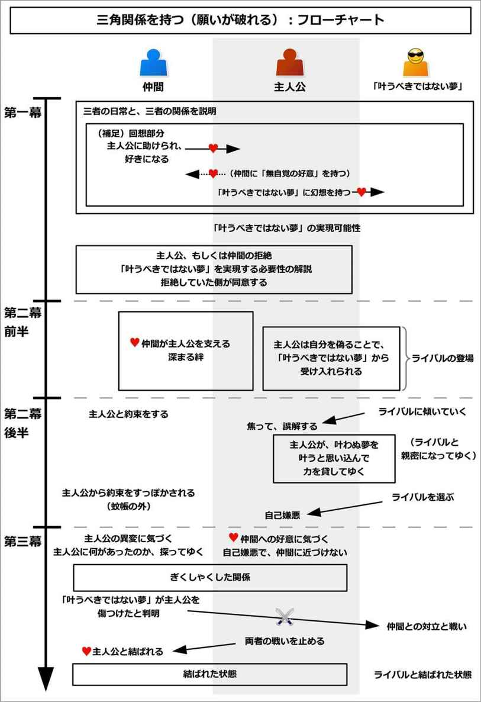
このイベントの作り方は、主人公にとっての「叶うべきではない夢」を追加するとよい。
主人公には「本来の目的」があるものだが、それとは別に、「叶うべきではない夢」を追加しよう。
これは「三角関係を持つ（願いが叶う）」と同じなので、作り方は「三角関係を持つ（願いが叶う）」の項目を参照するとよい。
それでは実際に、このイベントの流れを見てゆこう。
第一幕から第二幕前半までは、基本的に「三角関係を持つ（願いが叶う）」の流れと同じである。
そのため、第二幕前半までは、短く要約した内容を説明するにとどめておく。
このイベントでは、「主人公」、「本来の目的」、「叶うべきではない夢」の三者が三角関係を作る。
ここでは、「本来の目的」に関わる人を、恋人役も含めて「仲間」だとする。
イベント冒頭で、主人公と「本来の目的」、そして「叶うべきではない夢」との関係を示しておこう。
また、そのような関係になった経緯が示される。
そんな主人公は、あるとき「叶うべきではない夢」の実現可能性を知ることになる。
ここで主人公もしくは仲間のどちらかが、拒絶することになる。
主人公が拒絶する場合、主人公は「自分にはできない」と落ち込むだろう。仲間は主人公が落ち込んでいる姿を見たくない一心で、「やってみないと分からないだろう」と励ます形になる。
一方で仲間が拒絶する場合、「それは主人公には合わない」と促すだろう。しかし主人公は、そんな仲間の声を聞かないものだ。
そんなとき、何らかのきっかけがあって、拒絶していた側が「仕方ない」と受け入れることになる。
結果として、主人公と仲間は共に、「叶うべきではない夢」を実現する方向に進み始めることになる。
ここでは作成例として、恋愛物語の三角関係で見てみよう。
主人公の少女は、恋人役として幼なじみの青年がいるとする。だが、青年とは近くにいすぎて既に家族のような関係なので、自分でも恋愛感情に気づいていないとする。
一方で青年は、その昔、主人公に命を助けられたこともあり、「できるだけ主人公の幸せを実現してあげたい」と思っているとする。
ただ、青年は主人公と幼なじみなので、あまり主人公を女性らしく扱わないとしよう。ひょっとすると、恥ずかしいからそうしないだけかもしれない。
だから少女はそれに不満を持っていて、「自分を特別に女性らしく扱ってくれて、細やかに気遣いをしてくれる男性」にあこがれを持っているとする。
そんなある日、その誘惑を具現化したかのような、同級生の男子生徒が登場することになる。
少女はひょんなことからその男子生徒と出会い、男子生徒に好かれることになる。
男子生徒は、少女を女性らしく扱い、細やかに気遣いをすることだろう。
それで少女は感激して、ついには「私はこの男子生徒に恋をした」と勘違いしてしまうのだ。
ここで、状況の整理がされる。主人公は、男子生徒との感激を、幼なじみの青年にありのままに伝えることだろう。
一方で、主人公は男子生徒の前では緊張してしまい、ありのままの自分は見せないようにするだろう。
また、主人公は青年に、「あんたとは大違いよ」となじるかもしれない。これによって、主人公の好みは、「男子生徒の特徴が好き」というよりも、「青年の存在を前提にした基準」であったり、「無意識で青年を責めている」のだと示せる。
こうして読み手には「青年こそ主人公にふさわしい恋愛相手である」と示すことができて、「男子生徒との恋は、叶うべきではない夢である」と説明される。
ここでは、青年が拒絶することにしよう。青年は主人公に、「そいつは主人公には合わない」と伝えるだろう。時に、主人公と男子生徒の邪魔をしようとするかもしれない。
だが、主人公は聞く耳を持たないし、邪魔をしようとする青年を批難するだろう。
そんなあるとき、主人公は「男子生徒に告白する」などと言い出すかもしれない。
そして青年の制止も聞かずに、主人公は最悪のタイミングで男子生徒に告白をして、遠回しに断られるだろう。
主人公が激しく落ち込んでいる姿を見て、青年はどうにかして立ち直らせようとするが、どんな手段を使っても励ますことができない。
ただ唯一、「男子生徒との恋を許して応援すれば、主人公は元気になる」と分かる。
青年は仕方なく、主人公を大切に思うが余りに、主人公と男子生徒との恋を許して、応援することになってしまう。
こうして、二人は共に「叶うべきではない夢」の方向へと動き出してしまうのだ。
第二幕前半も、「三角関係を持つ（願いが叶う）」の流れと同じである。引き続き要約した内容を示す。
ここから主人公は、「叶うべきではない夢」の実現へと向かって、仲間と協力して動いてゆくことになる。
主人公は、「叶うべきではない夢」を実現するためには、足りないものや困難が多くあるだろう。
そんな困難を、仲間と一緒に協力して、乗り越えてゆくことになる。
同時に、主人公は気づかないうちに、仲間との絆を深めてゆく。
ここで、主人公にはライバルとなる敵が登場する。
そのライバルは、主人公よりもよっぽど「叶うべきではない夢」にふさわしい人物になる。
ただし、そのライバルは不運の持ち主で、主人公よりも「叶うべきではない夢」とはよい適性を持ちつつも、すれ違いになってきたと説明される。
主人公は「いつかこのライバルとの戦いになる」と予感しながら、「叶うべきではない夢」を順調に実現してゆくことになる。
恋愛物語で三角関係の例で言うと、ここから主人公の少女は、青年を巻き込んで「男子生徒に告白する」という方向へ動き出すことになる。
青年は、本心こそ非協力的かもしれない。
しかし主人公のお粗末な計画を知ることで、「そんな計画でうまくいくはずがない」と、嫌々ながらも協力する形になってしまう。
その甲斐もあって、主人公は男子生徒と仲良くなってゆくだろう。一方で青年は、「俺はなんて馬鹿なことをしているんだ」と悩むかもしれない。
それでも主人公と青年は、一緒になって困難を乗り越えてゆくことで、絆を深めてゆくことになる。
ここで、ライバルとなる人物として、女子生徒を配置するとしよう。
その人物は、主人公よりもよっぽど男子生徒にふさわしい人物だと演出される。
しかし、その人物は不運が重なり、男子生徒との接点が少なかったと説明されるだろう。
主人公は、うすうす「ライバルの方が、男子生徒にふさわしい」と感じているかもしれない。
だが、主人公はそれを認めるわけにはいかないものだ。
ここまでは、「三角関係を持つ（願いが叶う）」の流れと同じである。
そしてここからが、このイベントでの新たな流れになる。
ここでは、主人公は少しずつ、その「叶うべきではない夢」が叶わなくなり、夢から切り離されてゆくことになる。
ここから「叶うべきではない夢」は、主人公が知らない場所で、次第にライバルの方に傾いてゆくことになる。
ライバルに心を許すようになるかもしれないし、ライバルを受け入れる流れになってゆくだろう。
この部分は読み手に見せても構わないし、見せなくてもよい。
そしてその変化は、少しずつ主人公にとっての「違和感」として感じられてゆくだろう。
「叶うべきではない夢」は、主人公に対して、今までのような好感触を返すことはなく、少しずつ「無関心」や「興味のなさ」という反響を返すことになる。
最初は、主人公は「気のせいだろう」とか、「今日だけ、何か事情があったんだろう」と、ごまかそうとするものだ。
しかしそれが二度、三度と積み重なるにつれて、違和感が疑念、そして確信へと変わってゆく。
恋愛物語で三角関係の例で言うと、あるときを境に、主人公は男子生徒の異変に気づいてゆくだろう。
男子生徒は、ライバルとなる女子生徒と出会うと、決まって呆然として、魅入られてしまっているのだ。
女子生徒の方も、男子生徒に対しては、いい雰囲気を作っているかもしれない。
ただし、その男子生徒と女子生徒は明らかな身分や地位、学年の差などがあり、主人公にとっては「二人が両思いなはずはない、結ばれることなどない」と思い込んでいるだろう。
主人公は、「こんなに自分に女性扱いしてくれて、優しくしてくれる男子生徒が、他の女性を好きになるはずがない」、「疑う自分の方が意識過剰になっているだけだ」などと思い込む。
しかし、その疑念は二度、三度と重なるだろう。
それによって主人公は、「男子生徒と結ばれる」という夢から切り離されてゆく恐怖を感じて、不安に駆られることになる。
「叶うべきではない夢」から見捨てられる恐怖を味わった主人公は、ここで「どうにかして取り返したい」と思うようになる。
そこで、大胆な行動を計画することが多い。
大胆な行動や勝負に出たり、大胆に気を引く行為をしようとするかもしれない。大胆な告白や誘惑、デートの誘いなどをしようとするかもしれない。
しかし当然、相手から完全に受け入れられているわけではないので、失敗するリスクが大きいものだ。
だから主人公は、それができずに悩むことになる。
そんなとき、逆に「叶うべきではない夢」から、その状況を主人公に提案されることになる。
この場合、例えば主人公が告白したいと思っていた場合、相手は「君の場合、どういう状況で告白したら嬉しいかな？」と言われるかもしれない。
主人公がデートに誘おうとしていたり、プレゼントを贈ろうとする場合、「君の場合、どんな場所でデートをすると嬉しい？」、「どんなプレゼントが嬉しい？」と訊かれるだろう。
場合によっては、主人公が「叶うべきではない夢」が悩んでいたり、苦しんでいる状態に出くわし、自発的に助けを提案することもある。
主人公は絶好の機会に舞い上がってしまい、大喜びするだろう。
主人公は今まで「取り返すために、そうしたい」とまさにそう思っていただけあって、「相手がそれを主人公にしてくれる」、もしくは「これをすれば、相手が自分を選んでくれる」などと勘違いすることになる。
主人公は誠心誠意協力して、対応するだろう。そして相手にも喜んでもらうことになる。
すると、相手から「この日にそれをしようと思う。できれば協力してくれないだろうか？」、「この日に、大切なことを伝えようと思う。時間はあるだろうか？」などと相談されるだろう。もしくは、主人公が自発的に「貴方の気持ちは分かっています。その日に、私から伝えます」と申し出る場合もある。
こうして主人公は、「叶うべきではない夢」との予定を入れて、約束を交わすことになる。
なお、これらの顛末には、仲間は一切関わらない。完全に主人公の独断でそれをしておこう。
恋愛物語で三角関係の例で言うと、男子生徒と女子生徒が仲良くしていることから不安になった主人公は、「もっと大胆に、積極的に行動しなきゃ、奪われる」と思うだろう。
そこで主人公は、「告白しよう」と思い立つことになる。
しかし、どう行動したらいいのか悩むものだ。
そんな時、男子生徒から真剣な顔で、「もし主人公なら、告白するときにもらって嬉しいものは何？」、「大切なことをある人に伝えたいんだ。手伝ってもらえないかな？」などと相談されるのだ。
少女はそれで舞い上がり、「自分が男子生徒に告白される」と勘違いしてしまう。
主人公は、喜びを抑えながら、細かく自分の好みを教えるだろう。すると、男子生徒も喜んでくれて、主人公は天にも昇る心地になる。
そして主人公は、男子生徒から「この日のこの時間に、それをしようと思う。できれば手伝ってくれないだろうか」と頼まれる。
主人公は、喜びと共に引き受けることになる。
その後、主人公はその日、その時間には、仲間との重要な先約が入っていることを思い出す。
これは、直前まで忘れている場合もあるし、仲間から確認されて思い出すこともある。
主人公は、仲間との約束も、「叶うべきではない夢」との約束も、日時をずらすことはできないと知る。
こうして主人公は、仲間との約束を選ぶか、「叶うべきではない夢」との約束を選ぶかという、二者択一を迫られることになる。
主人公は、直前まで悩み続けるだろう。
そして何らかのきっかけがあることで、主人公は最終的に「叶うべきではない夢」を選んでしまうのだ。
そのきっかけとしては、ちょっとした「劣等感を刺激されること」や「甘い誘惑」が用いられやすい。
誰かから「まだ付き合っている人がいないの？」と見下されるかもしれない。もしくは、それを実現している人を見て、「うらやましい」と思うかもしれない。
主人公は、「後で事情を話せば、仲間はきっと分かってくれる」という甘えを持つだろう。そして、自分に言い訳をしてゆくことになる。
「仲間はいつでもいるけど、夢は今しかない」と感じるかもしれない。「すぐに終わらせれば、仲間の方も少し遅れる程度で間に合うはず」という打算を持つかもしれない。
同時に、仲間たちには、すぐには連絡することはできない状態になるだろう。時間がないかもしれないし、連絡する方法が失われるかもしれない。
結果として主人公は、仲間、すなわち「本来の目的」ではなく、「叶うべきではない夢」を選ぶという、致命的な間違いを犯してしまう。
こうして、二人はそれぞれ、今までの関係でいられる最後の瞬間を過ごしてゆくことになる。
そしてついに、約束の時間が訪れる。
主人公は覚悟を決めて、「叶うべきではない夢」へと向かうのだ。
恋愛物語で三角関係の例で言うと、男子生徒と約束した後で、青年から言われて、青年と約束をしていたこと思い出すだろう。
それは、二人で主人公の誕生日を、レストランで祝うことだとしよう。
その約束は、男子生徒と会う約束をした同じ日、同じ時間帯にかぶっていることが判明する。同時に、その予定を変更することはできないのだ。
主人公は一人、どちらを選ぶか悩むことになる。
決断しなければならない期限の直前では、「先に約束したから、青年の方を選ぼう」とするかもしれない。
そんなとき、変化のきっかけが訪れる。古い友人たちと出会って、彼女らと話をすることになる。そして彼女らは全員彼氏持ちで、彼氏がいない主人公をからかって馬鹿にするのだ。
それによって、主人公は「青年との約束は、いつでもできる。でも告白は今しかできない」と思い、結果的に男子生徒を選んでしまう。
主人公は、青年への連絡手段を持たないだろう。そして「すぐに告白を終わらせて、ちょっと遅れるけど青年の元に駆けつければいい」と楽観的に思うかもしれない。
こうして、二人は今までの関係でいられる、最後の瞬間を過ごしてゆくことになる。
約束の時間が訪れて、主人公は覚悟を決めるだろう。
そして主人公は、男子生徒との約束を選ぶのだ。
中盤の盛り上がりで、主人公の「叶うべきではない夢」の夢が破れて、本当に大切なものに気づくことになる。
「叶うべきではない夢」を選んでしまった主人公は、仲間との約束をすっぽかして、そちらに向かうだろう。
最初こそ、はやる喜びを抑えながら、夢が実現する瞬間を待ち望むだろう。実際に、最初は主人公の予想通りに事態が進むかもしれない。
だがそこで、真実が発覚することになる。
「叶うべきではない夢」は、主人公ではなく、ライバルを選んでいたということが示される。
告白を期待していた場合、相手は主人公に告白するのではなく、ライバルに告白するだろう。夢の実現を期待していた場合、相手は主人公ではなく、「ライバルがふさわしい」と選ぶだろう。
ライバルは感激して喜び、それを受け入れることになる。
もし「叶うべきではない夢」が主人公を陥れようとしていた場合、ここで全ては罠だったことが明かされて、相手は主人公をあざ笑うだろう。
主人公は、最初は何が起こっているのか、理解に苦しむだろう。
しかし結果的に「自分が誤解していた」と理解することで、夢が打ち砕かれたことを知る。
主人公は取り繕って笑うこともあるし、その場から逃げ出すこともある。
「叶うべきではない夢」と別れた後で、主人公は一人、自分が何をしてしまったのかを理解するだろう。
そして、「自分は馬鹿で最低だ」、「仲間を裏切った」と自責の念に駆られて、仲間の元へも行けなくなる。
結果として、主人公は全てを失ってしまうのだ。
恋愛物語で三角関係の例で言うと、主人公は「男子生徒からの告白を受けるため」だと誤解したまま、約束の時間、約束の場所に訪れるだろう。
そして男子生徒が現れて、主人公が教えたとおり、プレゼントを持ち、告白には最高の場所へと向かうだろう。主人公は胸の高鳴りを抑えつつも、ついに告白の時間が訪れる。
だがそこには、女子生徒が待っているのだ。そして男子生徒は、女子生徒に告白することになる。
女子生徒は涙を流して喜び、告白を受け入れて、二人は結ばれるだろう。
主人公はあっけにとられて、何が起こっているのか理解できないだろう。
そんなとき、男子生徒からの解説が行われる。
男子生徒は、女子生徒に主人公を紹介するだろう。「主人公は、自分たちを結びつけてくれた愛のキューピッドだ」と。
主人公は全てを理解して、引きつった笑顔でごまかすことだろう。しかし一筋の涙がこぼれてしまい、主人公は慌ててその場から逃げ出すことになる。
結ばれた二人と別れた後、主人公は、青年との約束には間に合わない時間になっていると気づく。
主人公は、青年の気持ちを踏みにじったことを知るだろう。そして、「こんな愚かな自分は、あれほど優しい青年にふさわしくない」、「青年には、もう会えない」と、自分を責めるだろう。
こうして主人公は、全てを失ってしまうのだ。
うちひしがれた主人公は、多くの場合、「自分は罪を犯した」、「自分は『本来の目的』を果たすのにふさわしくない」、「自分のような弱い人間は、仲間には釣り合わない」などと、自分を責めることになる。
それによって、仲間とは距離を置いたり、自ら一歩を引いた接し方をするようになる。場合によっては、家や部屋に閉じこもってしまったり、その世界から立ち去る準備を始めるかもしれない。
一方で、迷惑を被ったはずの仲間は、主人公を責めることはしない。
というのも、仲間は約束の時間に何が起こったのかを、まだ知らないからだ。
だから、「なぜあのとき、来なかったんだ？」と不思議に思いながらも、主人公を許し、いつも通りに主人公に接しようとするものだ。
だが、そんな優しさが、主人公を苦しめることになる。
「叶うべきではない夢」が破れた今となっては、主人公は仲間への思いを確たるものにして、「自分には、仲間しかいない」と気づくだろう。
しかし仲間が優しいからこそ、主人公は「こんなに卑劣な自分は、こんなに優しい仲間にはふさわしくない」と思うことになる。
そして主人公は、自ら仲間と接することを拒むようになり、ぎこちない日常になってしまう。
一方で仲間は、主人公の変わりようから、独自に「あのときに、何が起こったのか」を探ってゆくだろう。
なお、ここでの主人公は、約束の時間に何が起こったのかを仲間には知られたくはないものだ。
「もし仲間に全てを知られたら、仲間はきっと、こんな自分を許してくれない」と感じるだろう。
それによって、「仲間が全てを知った時、全ての関係が終わる」というタイムリミットが設定される。こうして読み手に、クライマックスと物語の終わりを示すことができる。
恋愛物語で三角関係の例で言うと、主人公の少女は、恋人役の青年に対して、「こんなにも優しい青年には、こんな愚かな私はふさわしくない」と痛感するだろう。
だから、青年に対して距離を置き、よそよそしい態度を取るようになる。
詳しい事情を知らない青年は、誕生日の祝いをすっぽかされたことなど、全く怒ってはいないものだ。むしろ、「どうした、何かあったのか？」と、少女に気遣いを見せるだろう。
だが、その寛容さや優しさが、さらに少女に距離を取らせることになる。
それによって、主人公は青年と上手く接することができなくなり、ぎこちない日常になってしまう。
主人公は、「あの日の出来事を青年に知られたら、きっと許してもらえない」と感じるだろう。
一方で青年は、急によそよそしくなった主人公に、「何かあったに違いない」と事情を調べてゆくことになる。
ここからクライマックスになる。
仲間はあの時間に、主人公が何をしていたのか、事の顛末を知るだろう。
そして結果的に、「叶うべきではない夢」が主人公を傷つけたことを知る。
仲間は激しい怒りを持つだろう。しかしそれは表面には出さずに、静かに「叶うべきではない夢」の元へと向かうのだ。
仲間は相手と向き合い、事実を確認するだろう。そして、「叶うべきではない夢」が主人公を拒絶して、傷つけたことを認めるだろう。
仲間は、主人公を傷つけられて黙っているわけにはいかない。同時に「叶うべきではない夢」は、主人公と仲間の関係にも気づき、そんな「本心に気づかない仲間」に対して怒りを持つだろう。
こうして仲間と「叶うべきではない夢」は対立して、戦うことになる。
この戦いは、殴り合いなどの暴力的な戦いになりやすい。女性同士であったとしても、殴り合いや取っ組み合いという形になりやすい。
恋愛物語で三角関係の例で言うと、青年はついに、「男子生徒が主人公を手伝わせて、女子生徒に告白した」という事実にたどり着くことになる。
青年は主人公が落ち込むようになった原因を知り、男子生徒に対して激しく怒りを覚えるだろう。
そして青年は、突如として男子生徒の前に現れる。「ちょっと顔を貸せ」と言い、呼び出すだろう。
ここからは、お約束の展開である。
夕暮れの河原で二人きりになり、青年は男子生徒に事実を確認するだろう。そして男子生徒が「そうだ」とうなずくと、青年は「主人公がお前をどう思っていたのか、その気持ちを考えなかったのか！」と怒りをあらわにする。
男子生徒の方はというと、「そうか、君は主人公の『本当の気持ち』をまだ分かってはいないのか。そういう君を見ていると、イライラしてしょうがなくなるんだよ」と、こちらも怒りをあらわにするだろう。
場合によっては、男子生徒は「一時期僕は、主人公にあこがれていたこともあった。でも、僕は主人公にはふさわしくない。そして僕は、そんな君が憎くてしょうがない」と言うかもしれない。
そして両者は決裂し、壮絶な殴り合いが始まるのだ。
主人公は何らかのきっかけによって、仲間が「叶うべきではない夢」の相手と戦っていることを知るだろう。
それによって、主人公はその現場へと駆けつけることになる。
現場では、互角の戦いをしているだろう。だが、どちらも疲弊していて、このままではどちらともが悲劇的な末路を迎えることが分かるだろう。
主人公は両者の間に入って、戦いを止めることになる。多くの場合、仲間の方を止めるだろう。
仲間はなぜ主人公が止めるのか、理解に苦しむだろう。
そこで主人公は、「自分が全て悪かったんだ。ここで仲間が戦うことはない」と、一人で全ての罪を背負おうとする。
多くの場合、「叶うべきではない夢」はここで冷静になって、戦いを引き上げて立ち去るだろう。
後は、改めて主人公が仲間に対して、あの約束の時間に何をしていたのか、自分の罪を告白することになる。
主人公は、自分が仲間から嫌われることを受け入れるだろう。
しかし、仲間が主人公を嫌うことなどない。
仲間は「そんなことで主人公を嫌うはずがない」と主人公を受け入れて、主人公も仲間に対して感謝するだろう。
こうして主人公は、「本来の目的」と結ばれることになる。
なお、主人公が「本来の目的」と結ばれるのは、罪を告白した直後でなくともよい。少しだけ期間をおいて、後日に改めて何らかのきっかけを作ることで、両者が結ばれる形にしてもよい。
恋愛物語で三角関係の例で言うと、主人公の少女は、何らかのきっかけで、青年と男子生徒が殴り合いをしていることを知るだろう。
そして現場に駆けつけて、青年を止めることになる。
青年は「なぜ止める!? こいつはお前を傷つけたんだぞ！」と激高して、主人公の行動を理解できないだろう。
そんなとき、少女は涙ながらに語るのだ。「私が全て悪かったの。二人が戦うことじゃない」と。
男子生徒は主人公の登場で冷静になって、その場から立ち去るだろう。
青年は「まだ終わってない！」と追いかけようとするだろうが、主人公が止める。
主人公は改めて、あの約束の時間に起こった出来事を打ち明けて、自分の罪を告白するだろう。同時に、青年の大切さを理解したことも、語るだろう。
「青年に嫌われて当然だ」と償いを受けようとする主人公に対して、青年は主人公に怒るどころか、簡単に許すだろう。「馬鹿、そんなことで俺がお前を嫌うわけがないだろう」と、微笑むかもしれない。
そして主人公は、青年に感謝するだろう。
それから数日後、主人公は再び青年から、何か助けられるきっかけがあるかもしれない。
それをきっかけとして、主人公は「こんな私でも、受け入れてくれますか」と青年に告白するだろう。青年も、「当然だ。そんなお前だからこそいい」と受け入れて、二人はあるべき状態へと導かれることになる。
こうして三角関係が全て解決して、三者はあるべき状態へと落ち着くことになる。
主人公は「叶うべきではない夢」という幻想を手放して、自分が持つ幸せを理解するだろう。
仲間も、主人公との絆を深めて、より主人公を大切にするだろう。
こうして全ての問題が解決して、ハッピーエンドへと導かれる。
恋愛物語で三角関係の例で言うと、後日談として、三者の姿が描かれるだろう。
主人公は「叶うべきではない夢」を手放して、最も大切な青年と一緒に時間を過ごすだろう。
青年も主人公に素直になり、男子生徒も女子生徒と仲むつまじく過ごしている姿が描かれる。
こうして三角関係が解決して、ハッピーエンドへと導かれる。
このイベントをコメディで用いる場合、「叶うべきではない夢」を突飛なものであったり、「それを叶えても絶対に幸せにはなれないだろう」という馬鹿げたものにするとよい。
同時に、周囲の全ての人が、主人公を止めるが、主人公は聞く耳を持たないようにするのだ。
そうすることでギャップが生まれて、笑いを作ることができるだろう。
このイベントは、恋愛物語で三角関係、四角関係として多く用いられる。
恋愛物語でなくとも、「叶うべきではない夢」を別のものにすることで、人間ドラマとして用いることができる。
「敵になる」は、本来は味方同士であるはずの主人公と相手が、敵同士になるイベントである。
主人公は相手と出会い、打ち解け合う。
だが、相手の強がりがきっかけで、主人公と相手とは対立を起こし、互いに相容れることなく決裂する。
それによって二人は敵同士になってしまい、戦うことになってしまう。
主人公は圧倒的に不利な状況で、戦いに挑まなくてはならなくなる。
そこで主人公が逆転勝利を収めて、相手の強がりを解決することで、再び打ち解け合うことになる。
このイベントは戦いの要素を含むため、バトルものでよく用いられる。
このイベントの概要図と流れ図を、それぞれ以下に示す。
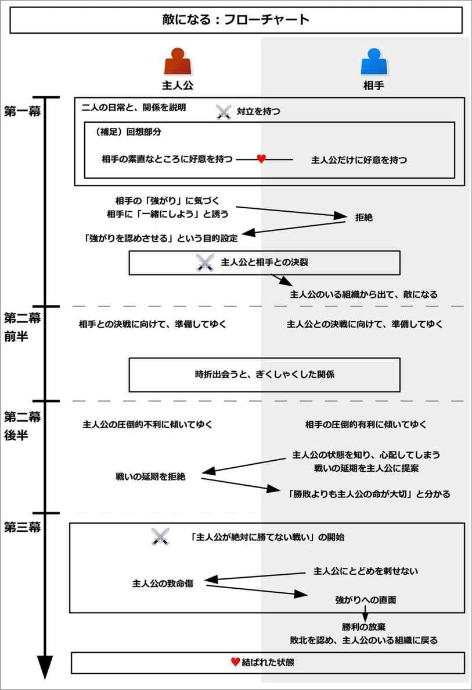
このイベントを作るには、次のような要素を考えるとよい。
それでは、以下でそれぞれについて詳しく説明してゆこう。
最初に、主人公と敵対する相手を決めよう。
恋愛物語であれば恋人役、バトルものではライバルや仲間になる人物にするとよい。
次に、主人公とその相手を、主人公と同じ組織に属させるようにしよう。
それは「学校」や「会社」、「クラブ活動」、「秘密結社」、「警察」、「ヤクザの組」などのような大きな組織でもよいし、「家族」や「パートナー関係」、「相棒関係」などのような小さな組織でも構わない。
主人公も相手も、その組織に属することで、自分が持つ目的を達成することができていたり、脅威から回避することができているとする。
バトルものなら、戦いの集団に属することで、効率的に戦うことができているかもしれない。恋愛物語なら、主人公は生活のために、学校や会社に通う必要があるだろう。家族物語なら、家族に属することで、食事や家事などの負担が軽減できているかもしれない。
だから、両者は自然と「組織に属していたい」という欲求を持つ。
しかしその組織があることで、主人公は相手と強制的に一緒にいなければならなくなり、対立してゆくことになる。
結果的に相手は、その組織から出ることで、主人公の敵になってゆく。
なお、男性向けになるほど「戦いの集団」のように、社会的で大きな組織になりやすく、女性向けになるほど「家族」といった小さな組織になりやすい。
そして、敵対する相手に「強がり」を追加しよう。
この強がりとは、相手が本心では「本当はこういう人でありたい」と願っているが、「実際はそうではない」という内容になる。
実際はそうではないのに、相手は無理をしてそうであるかのように見せかけているのだ。
それは精神的な欠点でも、肉体的、物質的な欠点でもよい。
これは、社会的に「よい」と評価されていることを元に発想するとよい。
「頭がいい」、「美しい」、「格好いい」、「強い」、「傷つかない」、「努力家である」、「お金持ちである」、「勉強ができる」、「社会的地位がある」、「収入が高い」など、様々な「みんなが評価するもの」があるものだ。
そこから、「そうありたいのに、実際はそうではない」という要素を作ろう。
相手は実際はそうではないのに、無理をしてそうであるかのように見せることになる。
なお、もしサブプロットとして用いる場合、そのキャラクターが強がりを持たないような、素直な性格の場合があるかもしれない。その場合は、「テレビや雑誌、うわさ話で感化された」とすれば、一時的に本人らしくない性質の強がりも可能になる。
このイベントでは、主人公と相手が敵同士になるため、何らかの戦いを引き起こすことになる。
世界観がバトルものなら、そのバトルで戦うことになる。
だが恋愛物語などの場合、別途戦う内容を追加する必要がある。
そこで、どのような内容で戦うのかを決めておこう。
戦う内容は、勝負であれば何でもよい。スポーツでも、殴り合いのケンカでも、真剣による斬り合いでも、期末試験の結果でも、体育祭の勝敗でも、バイトで稼いだ金額でも、順位が決まりさえすれば何でも可能である。
これは、相手が得意な分野にするとよい。
詳しい内容は、次節から示すイベントの流れで説明してゆく。
それでは実際に、イベントの流れを見てゆこう。
イベント冒頭では、二人の日常が描かれることで、両者の関係が描かれる。
二人は「ある点」で敵対しつつも、同じ組織に属する仲間として、よく一緒に動いているだろう。
時に、同士であったり、親友のような関係として打ち解けて、主人公たちが持つ共通の目的に向かって行動している姿が描かれる。
相手の性格を知らない周囲がそんな二人を見ると、「仲のいいパートナー同士だ」、「ぴったりの相棒同士だ」などと思うかもしれない。
また、「この二人に任せていれば、未来は安心だ」と評価しているかもしれない。
しかし、主人公はそんな相手に対して、一つだけ気に入らないことがある。それが、相手の「強がり」がもたらす行動だ。
この一点で、主人公は相手と敵対していることになる。
多くの場合、それは「組織の和を乱すこと」として象徴される。
相手は強がりを持つが、「それをできない人」や「それを持たない人」に対しては、容赦なくののしり、批難して、攻撃するだろう。
また、同じ組織の仲間が助力を必要としていたとしても、手を貸すことはせずに見放すだろう。
それによって、主人公、もしくは主人公の大切な仲間が悩まされている状態が描かれる。
確かに、相手はそれを持ち、一人でもやっていけるほどの力を持っていることだろう。
一方で主人公や仲間たちは、今までは互いに協力し合うことで、その問題を乗り越えてきたのだ。
すると、相手が主人公や主人公の仲間を攻撃することで、嫌な気分を味わうものだ。気の弱い仲間がいた場合、おびえてしまい、力を発揮できなくなるかもしれない。
結果として、主人公もしくは仲間は、今までうまくできていたことが、不調でできなくなってしまっていると示される。
ただし、この段階では、仲間が力を発揮することで、そんなチームの不調をカバーしている状態になる。だから、嫌な奴なのに、組織としてはそんな相手を必要としている状態になる。
主人公は、相手に苦言を伝えるかもしれない。だが、相手はそれを聞き入れようとはしないだろう。
そのように、やっかいな相手が入り込んでいることで、主人公は「組織との調和」と「相手との調和」において、関係性に問題を抱えていることが示される。
なお、この親密度と敵対度の比率は、自由に設定してもらって構わない。
親密度が高いほどソフトな雰囲気になり、逆に敵対度が高いほどハードな雰囲気になり、緊張感が高まりやすい。
ここでは作成例として、「魔物と戦うバトルもの」と、「寮生活をする恋愛物語」で見てみよう。
魔物と戦うバトルものの例で言うと、剣と魔法を使うようなファンタジー的な世界観で、主人公の青年と、相手であるライバルは、共に街で魔物退治をする組織の一員だとする。
イベント冒頭では、そんな主人公が、ライバルと協力し合うことで、魔物を次々と倒している姿が描かれる。
それを見た人々は、「息の合う相棒同士だ」とか、「彼らに任せていれば、この街に魔物が侵入することはないから安心だ」と高く評価しているだろう。
だが、そのライバルは有能ではあるが、性格に難があることが示される。
ここでのライバルは、「自分は強い」という強がりを持つことにする。
すると、ライバルは戦いの最中でも、主人公に「俺の方が強い」と対抗意識を燃やしているかもしれない。
獲物となる魔物を横取りしようとしたり、のろまだったりもたつくチームメンバーがいると、激しくののしるかもしれない。
また、怪我をして助けを求める仲間に対しても、「弱いお前が悪い」と、助けることをせずに、見放すかもしれない。
単独行動や命令違反はいつものことで、主人公や仲間たちは「またあいつの独断専行が始まった」と頭を抱えるだろう。
そんなトラブルが幾度となく起こされていて、主人公はそのたびに、フォローをせざるを得ないと示される。
主人公は、ライバルがこの組織に来るまでは、仲間たちと協力し合うことで上手く調和して敵を倒していただろう。
だがライバルが入ってきてからというもの、その調和が崩されたと説明される。
それでも、ライバルは強い力を持つため、独断をしたとしても組織からは必要とされるのだ。
ライバルは主人公や指揮官から、行動を修正するように命令されるだろう。だが、それを無視して好き放題するのだ。
主人公はこのようなライバルと一緒に協力し合わなければならずに、「組織との調和」と「ライバルとの調和」で問題を抱えていると示される。
寮生活をする恋愛物語の例で言うと、世界観は学園もので、主人公として青年がいて、恋人役として一つ年下の少女がいるとしよう。
主人公も少女も、小さな学生寮で生活しているとする。この学生寮が、主人公たちの属する組織になる。
イベント冒頭では、そんな主人公と、相手である少女とが一緒にいる姿が描かれる。
下校途中に主人公は少女を見つけて、「一緒に帰ろう」と誘うかもしれない。そして二人は並んで歩くだろう。
そんな二人を見た近所の人は、「仲がいいね」、「ぴったりの二人だね」と高く評価するかもしれない。
だが、その少女は恋人役としてはぴったりかもしれないが、すぐに性格に難があると示される。
ここでは、少女は「自分は一人で生きられるほど強い」という強がりを持つとしよう。
すると少女は、寮では誰とも打ち解け合おうとせずに、助け合おうともしないだろう。
主人公は、寮では寮生たちと、家族のような団らんを作るだろう。
そんな主人公に対して、少女はことあるごとに、「そんなことで生きていけるのか！」、「寂しさに耐えられないような弱さでどうする！」と攻撃することになる。
主人公はそんな批判に調子を狂わされるだろう。他の気の弱い寮生は、泣き出してしまうかもしれない。
また、他の寮生が助けを必要としている時でも、「他の人に頼ってばかりで、無能なあんたが悪いのよ」と突き放すだろう。それによって、その寮生は小さな痛手を被るかもしれない。
そんな傍若無人な少女に対して、主人公は寮の「助け合う」という規律を守るために、リーダーとして少女に苦言を伝えるかもしれない。
しかし、少女はそんな主人公に聞く耳を持たないのだ。
主人公はこれまで、寮の仲間たちと家族同然に、暖かい団らんを作っていただろう。
そして互いにできないことを助け合うことで、上手く日常をこなしていると示される。
だが、少女が入ってきてからというもの、その調和が乱されたと説明される。
主人公はそのような少女と一緒に学生寮で暮らさなければならず、「寮生との調和」と「少女との調和」で問題を抱えていることが示される。
ここで、主人公と相手の出会いと、どのようにして両者がそのような関係になったのか、その経緯が示されることが多い。
これは、回想として用いられることが多い。もしくは、この出会いの部分をイベント冒頭に持って行っても構わない。もちろん、省略しても構わない。
以下では少々長くなるが、出会いから関係性を築くまでの代表的な流れを紹介しよう。
出会いの場面では、まずは主人公の紹介がなされた後で、相手との出会いが訪れる流れになる。
主人公は、とある組織に属していることが示される。それは「学校」や「会社」、「クラブ活動」などの大きなものから、「家族」や「相棒関係」のような小さなものまであるだろう。
主人公はその組織に属することで、自分が持つ目的を実現できているのだ。
ここで主人公は、ある種の「弱さ」を持つことになる。一人では戦いに勝てないかもしれないし、一人では寂しいかもしれない。苦手な分野を持つので、一人ではできずに、人に頼らなければならないかもしれない。
主人公はそれを自覚していて、「自分は弱い存在だ」と受け入れている。だから、その組織では周囲の人と協力し合うことで、弱さを埋め合わせているだろう。
そんなとき、同じ組織に相手が入ってくることになる。
相手の登場場面では、主人公と相手は正反対の性格や特徴を持つように紹介される。
相手は、主人公が持つ「弱さ」を克服していて、それらを全て自力でできるような「強さ」を持つのだ。
だが同時に、相手はそれができない人を、容赦なく攻撃するという性格を持つ。自分よりもその力を持たない者が、他の人に頼ろうとするのを見ると、イライラして、その人物を攻撃するだろう。
主人公は、組織内では「助け合うことが重要だ」という考え方を持つが、一方で相手は「弱い奴が悪い。助けるから堕落するんだ」という考え方を持つことになる。
そのように、正反対の性格や特徴を持つように演出される。
両者は最初から打ち解ける場合もあるが、多くの場合、最初は互いに「嫌な奴」とか「近寄りがたい奴」、「自分とは接点のない、別世界の人」だと思うものだ。
場合によっては、二人はケンカや対立をしてしまうこともある。
魔物と戦うバトルものの例で言うと、ここで回想として、主人公がライバルと出会った経緯が説明される。
主人公は、幼い頃に家族を魔物に殺されたとしよう。
だから主人公は、「魔物を倒したい」、「街を平和な状態にして守りたい」と、志願して魔物と戦う組織に入り、魔物と戦うようになったと示される。
ここで主人公は、「自分一人で魔物を倒しきるには、自分は弱い」と、弱さを自覚するだろう。
だから、周囲の人たちと協力し合うことで、魔物を倒してゆくことになる。
主人公は、その組織の中では最も魔物を倒せる人物に成長するかもしれない。それでも、やはり自分の弱さを知っていることになる。
そんなある日、主人公はライバルとなる若者と出会う。
ライバルもまた、魔物に対して憎しみを持っていることだろう。
しかしライバルは主人公とは正反対で、自分一人でも魔物をどんどん倒せるほどの強さを持つ。
だが同時に、「自分は強い」と誇示して、他の人に頼ろうとする組織メンバーを見ると、イライラして、攻撃するだろう。
主人公は、「助け合うから、力を発揮できる」と言うだろう。一方でライバルは、「安易に他の人に頼るから、無能なままなんだ」と批難するだろう。
そして二人は、互いに「こいつとは合わない」、「嫌な奴だ」と感じるだろう。
寮生活をする恋愛物語の例で言うと、ここで回想として、主人公が少女と出会った頃の思い出が読み手に示される。
主人公がいる学生寮では、家族を失った人たちや、家庭の事情がある人たちが数人ほど集まって、助け合って共同生活をしているとする。
主人公は、事故で家族全員を失い、この学生寮に入ることになったとしよう。
ここで主人公は、「自分は一人きりでは寂しい」、「一人では生きていけない」と、弱さを自覚することになる。
だから、主人公は学生寮の寮生たちと親密な関係を築き、家族のような団らんを作り協力し合うことで、その寂しさを埋め合わせているとする。
そして主人公はその学生寮でも、中心的な存在となったとする。
そんなとき、少女が学生寮に入ってくることになる。
少女も主人公たちと同じような境遇で、家族を失ったとする。
しかし少女は、主人公とは正反対で、何でも自分一人でできる器用さを持ち、しかも孤独にも強い性格を持つのだ。
ただし、少女は同時に、他の寮生が寂しい時に人に頼ろうとする姿を見たり、少女や他の人に助けを求める姿を見ると、イライラして攻撃するだろう。
なので、少女は主人公や寮生が家族的な団らんを作っているのを見ると、「そんなことだから、ずっと甘えたままのガキなのよ！」と攻撃することになる。
少女は、主人公や寮の仲間とは打ち解けようとしないだろう。それによって、主人公も寮生も「近寄りがたい奴だ」と感じるかもしれない。
前節に引き続き、ここから仲間が主人公に対して好意を持つようになったエピソードが示される。
主人公と相手は出会ったが、ここで何らかのきっかけがあることで、両者は打ち解け合うことになる。
そのきっかけは、「主人公が相手を助ける」こととして起きることが多い。
多くの場合、相手は主人公と一緒にいる時に、何らかの脅威を受けるだろう。
そこで相手一人では対処しきれない状態で、主人公が助けることになる。
相手が水や食料を欠いている時に、主人公が自分の分を与えるかもしれない。相手が怪我をしそうになったり、安全を脅かされた時に、守るかもしれない。組織や社会から嫌われそうになるところを、助けるかもしれない。見栄を守ったり、見下されることから助けるかもしれない。
それによって、相手は主人公に恩を持つことになり、主人公だけは特別に扱うようになるのだ。また、恥ずかしがりながらも、感謝を伝えるだろう。
そんな相手に、主人公は「素直なところもあるな」と心を許すことになる。
ただし、相手が誰か他の人から助けられるのは、これ一度きりになる。だからこそ、相手は主人公だけを特別扱いするのだ。
また、それ以来相手は、主人公が困っている時に、主人公に対してだけは手助けをすることもある。
こうして両者は、対立を抱えつつも、互いを認め、打ち解け会える関係になる。
このようにして、主人公はイベント冒頭で示したような、関係性の問題を持つようになったと示される。
魔物と戦うバトルものの例で言うと、主人公は指揮官からライバルと相棒になるように指示されるだろう。それをきっかけに、二人は一緒に戦うことになるとする。
ライバルは、最初こそ主人公に対して「俺は弱い奴が大嫌いだ。俺の足を引っ張ることだけはするな」と、主人公を見下すかもしれない。
だがあるとき、ライバルは危機的状況に陥ってしまうが、そこで主人公から助けられることになる。それによって相手は、「なかなかやるじゃないか」と主人公を受け入れる。
その後から、ライバルは主人公を助けてゆくだろう。そんな素直じゃない感謝を知り、主人公は「ひねくれているけど、根はいい奴じゃないか」と受け入れることになる。
このように、二人の出会いと、問題をはらむ関係が生まれるまでの経緯が示される。
寮生活をする恋愛物語の例で言うと、主人公と少女は、出会った直後から互いに「近寄りがたい奴だ」と感じていたかもしれない。
だが、あるとき主人公は、少女がベランダから落ちて怪我をしそうになるところを、身を挺して助けることになる。
それ以来、少女は主人公に恩を持つことになる。それから少女は、他の寮生とは一切打ち解けないが、主人公にだけは信頼を寄せて、少しだけ心を許すようになる。
主人公も、少女を扱うのは難しいと感じる一方で、「素直なところもあるんだな」と少女を受け入れることになる。
こうして二人が出会い、主人公が少女との問題をはらむ関係を持つようになった経緯が示される。
主人公は相手の問題行動に、頭を悩ませているだろう。
そんなあるとき、主人公は、相手が強がってそうしていることに気づくことになる。
それは、主人公が「相手の一人でいる時」に触れることで、引き起こされやすい。
主人公は偶然にも、相手に気づかれずに、相手が一人でどのような時間を過ごしているのかを見たり、知るだろう。
そこでの相手は、いつものような攻撃性は持たずに、無意識にも本音をあらわにしているのだ。
それはほとんどの場合、主人公と同じ欲求になる。
例えば相手が「自分は孤独に強い」と強がる場合、本音は主人公と同じ「孤独は嫌だ」になる。
すると、相手は無意識に、ひとりぼっちで寂しそうにしているかもしれない。無意識に、他の家族の団らんや、子どもたちが楽しそうに遊んでいる姿を、遠くからうらやましそうに見ているかもしれない。無意識に、涙を浮かべているかもしれない。
相手が「自分は強い」と強がる場合、本音は主人公と同じ「弱いのは嫌だ」になる。
すると、相手は無意識に、過去に負けた相手に対して、悔しさで歯を食いしばるかもしれない。強そうな敵を前にして、「挑戦したい」と目を輝かせるかもしれない。一緒に戦う仲間を求めて、周囲を見渡すかもしれない。
そこで相手は、主人公が見ていることに気づくだろう。
主人公の存在に気づくと、相手は必死にごまかして否定するだろう。
しかし主人公は、相手が持つ本心に気づいてしまう。
そしてその「相手の本心」とは、主人公が持つ欲求と同じものだったのだ。
なお、ここで相手の本心に気づくのは、主人公だけになりやすい。主人公以外の人物は、気づかないことが多い。主人公が「こんなことがあった」と、その出来事を周囲に語っても、「まさか」、「相手に限って、それはありえない」などと、信じようとしないだろう。
そのように、主人公だけが相手の本心に気づくことで、主人公と相手との特別なつながりを強調することができる。
魔物と戦うバトルものの例で言うと、主人公はある日、ライバルの本心に気づくことになる。
主人公はある日、ライバルが一人でいるところを見かけるだろう。そこでのライバルは、公園で楽しそうに遊んでいる子どもたちを、遠くから眺めているのだ。
ライバルは、協力し合って虫を捕まえている子どもたちを見て、うらやましそうにため息をついているかもしれない。「いいな、あいつらは、友達がいて」と、独り言で漏らしているかもしれない。
その後、主人公が仲間にその出来事を伝えたとしても、仲間は「まさか」、「あの嫌な奴に限って、それはない」などと、信用しないだろう。
だが、主人公だけは、ライバルが強がっていることに気づくことになる。
寮生活をする恋愛物語の例で言うと、ある日、寮内で寮生の誕生会が開かれるとしよう。
当然少女は欠席するのだが、主人公がふとした用事で外に出てみると、そこにはプレゼントらしき一輪の花を手にして、入ろうかどうか迷っている少女を見つけることになる。そして少女は窓越しに、パーティーをうらやましそうな顔で見ているだろう。
少女は主人公が見ていることに気がつくと、慌てて「これはそういう意味じゃない」と、花を隠して言い訳して、逃げ出すだろう。
こうして主人公は、少女が「実は素直になれないだけで、本当はみんなと打ち解けたかった」と知ることになる。
だが、主人公がパーティーの席に戻ってそれを言うと、みんなは「まさか」、「主人公がまた気を遣って」などと言って、信じようとはしないだろう。
相手の本心に気づいた主人公は、相手の前に出て、「一緒にしよう」と誘うだろう。
主人公は、「お前も本当は、こうしたいんだろう？」と言うかもしれない。
しかし相手は強がって、主人公の誘いを拒絶することになる。
それどころか、相手は「そんな気持ちは、自分の本心ではない」とか、「一時の気の迷いだ」と否定するだろう。
実際に相手は、自分でもその言葉を信じ込んでいるものだ。そして、自分の本心や、自分が強がっていることには全く気づいていないだろう。
こうして相手は、せっかく主人公がさしのべた救いの手を、強がりで自ら払いのけてしまう。
なお、この段階で相手が強がりを持っていることを、読み手に明示するかどうかで、読み手が受ける印象が変わる。
読み手に強がりを明示する場合、ソフトな表現になり、人間ドラマ性が高くなる。読み手は後々の離別で、「好き合う二人が、運命によって引き裂かれた」と感じることになる。
逆に強がりを示さない場合、ハードな表現になり、サスペンス性が強くなる。読み手は後々の決裂で、「嫌な奴と戦うことになった」と感じることになる。
強がりを示さない場合、この段階での主人公は、「うすうす違和感を持っている」とか、「何となく相手は嘘を言っている」と感じていて、気まぐれで誘う程度でよい。読み手は主人公ではなく周囲に同調して、「主人公が変なことを言い出した」と感じることになる。
魔物と戦うバトルものの例で言うと、再び主人公は、ライバルが子どもたちを遠くから眺めながら、「協力できる友達がいるって、いいな」とつぶやいている姿を見かけるだろう。
そこで主人公がライバルの前に出て行くと、ライバルは慌てて取り繕うだろう。
主人公が全部「見ていた」、「なら、一緒に協力し合おう」と誘っても、ライバルは「俺らしくなかった」と改めて、やはり強がるだろう。
こうしてライバルは、主人公の救いの手を拒絶することになる。
寮生活をする恋愛物語の例で言うと、寮での誕生会の後で、主人公は少女と再会するだろう。
そして、「次は誰々の誕生会があるから、そのときに一緒にしよう」と誘うだろう。
しかし少女は強がって、「あれは一時の気の迷いよ」と、主人公の提案を拒絶するのだ。
ここで主人公を取り巻く状況の整理がなされて、主人公の目標が設定される。
主人公は相手の存在によって、「組織の調和が乱される」という問題を抱えていることになる。
主人公にとっては、相手との絆も大切だが、組織の目的を果たすことも重要になる。
そこで、「相手を何とかして、組織となじませたい」という目標が示される。
相手の強がりを読み手に明示している場合、「相手もきっと、本心ではそうしたいはずだ」と説明されるだろう。
しかし主人公があの手この手で、何度も相手に協力するように求めたとしても、相手はそれを拒絶し続けるだろう。
むしろより強がりを強めて、主人公を見下したり、より強く主人公や仲間の批判をして、和を乱してゆくのだ。
魔物と戦うバトルものの例で言うと、ここで問題の整理がなされて、主人公の目標が設定される。
主人公はライバルの存在によって、チームの和が乱されるという問題を抱えている。怪我人も、既に何人も出ているかもしれない。
「このままでは、大きな問題が起きるかもしれない」と予測するだろう。
また、ライバル自身も、本心ではみんなと一緒に行動したいようだとも示される。
そのため、「何とかして、ライバルをチームに協力させるようにする必要がある」と、目標が設定される。
しかし、主人公が様々なアプローチで「協力するように」と警告しても、ライバルはそれを聞き入れない。
こうして、主人公は頭を抱えることになる。
寮生活をする恋愛物語の例で言うと、ここで主人公を取り巻く状況と、問題の整理がされて、読み手に示される。
今までの主人公は、小さな学生寮で、みんなと協力し合って家族的な団らんを作っていたこと。しかし少女が入ってきてから、少女の強がりによって、調子が狂わされたこと。気の弱い寮生はおびえてしまい、望むような団らんが作れなくなったこと。
一方でその少女本人も、実は本心ではみんなと打ち解けたいと思っていること。
だが、少女は強がっているので、主人公の言うことも聞き入れない状態だと示される。
これによって、「少女をみんなと協力し合うようにさせる」という目標が設定される。
だから、主人公はその後も少女を団らんに引き込もうとしたり、「協力が大切だ」と警告するだろう。しかし少女はどんどん強がって、「無能な奴が悪いし、私にそんな気はない！」と反発をすることになる。
むしろ、主人公や他の寮生への批判や攻撃は一段と強くなり、主人公はいっそう頭を抱えることになる。
相手の問題行動は、収まることを知らないだろう。
主人公は何度も相手に対して、態度や行動の変更を要求するかもしれない。だが相手はかたくなに強がって、受け入れようとはしないものだ。
場合によっては、主人公はだんだんと相手に対して嫌悪感といらだちを覚えるかもしれない。読み手に強がりを明示している場合、「どうしてそこまで強がるんだ」と、腹立たしくなるかもしれない。
同時に相手もまた、主人公のことをうっとうしい存在だと思い、嫌うようになるだろう。
そんなとき、ついに相手の問題行動によって、致命的なトラブルが引き起こされてしまう。
それは多くの場合、別の仲間が深く傷ついたり、重要な目的を達成できなくなることで引き起こされる。仲間がいない場合、主人公が大きく苦しむ出来事が起こるだろう。
ついに堪忍袋の緒が切れた仲間たちは、相手を強く責めるだろう。もし仲間がいない場合、主人公が責めることになる。
だが、相手は強がったまま、態度を変えようとしないのだ。
今となっては、組織においても、相手がいるメリットよりも、デメリットの方が強くなっているだろう。
だが、これまで何度も相手に「やめろ」と言ってきただけあって、相手が態度を変える見込みはない。同様に、主人公側も、これ以上我慢することはできない。
ここで、主人公は次の二つのうち、どちらかの対応を取ることになる。どちらでも、全体の流れは同じになる。
「相手に出て行くように命令する」の場合、その組織の権威者もしくは主人公から、相手に「協力し合えないなら、出て行け」と告知することになる。
これを実現するために、主人公がそれだけの決定権を持つようにするか、決定権を持つ人物への人脈を持たせるとよい。
主人公は、その組織の長と懇意にしていて、主人公の提案で、相手の進退をどうにでもできるようにしておこう。
ここまでで相手にとっては、主人公は唯一の理解者になっているものだ。
だから相手は「主人公に裏切られた」と感じるかもしれない。主人公を恨み、憎むかもしれない。もしくは、深く傷つき「もう誰も信じない」と決意するかもしれない。
結果として、相手は主人公の元を去ることを選び、主人公とは敵対する勢力に身を置くことになる。
こうして、二人は心の底では認め合っているのに、引き裂かれ、敵同士になってしまう。
「相手と勝負をすることで、どちらが正しいかを決める」の場合、主人公は相手に勝負を提案することになる。
主人公が「これで勝負をしよう。もし俺が勝ったら、俺の言う通りにしろ。だが、お前が勝ったら、好きにしていい」と条件をつけて、何か勝負をすることになる。
これを実現するにも、主人公が組織運営の決定権を持つか、決定権を持つ人物への人脈を持たせておこう。
なお、勝負の内容は、競争で明快に順位が決まるものであれば、何でもよい。
スポーツでも、殴り合いのケンカでも、真剣による斬り合いでも、文化祭や体育祭の結果でも、期末試験の結果でも、バイトで稼いだ金額でも、順位が決まりさえすれば何でもよい。
主人公は、相手から「どんな勝負をするんだ」と問われるだろう。すると、主人公はいい勝負方法を決めるために、相手に意見を求めるだろう。
多くの場合、相手は自分の得意分野であったり、有利な条件で勝負内容を提案するものだ。
それなのに、主人公はその全てを受け入れる流れになりやすい。
相手は、主人公が悪条件を受け入れたことに驚くだろう。だが、強がったり、主人公に何か策があるのかと不審がることで、その勝負方法で決めることになる。
こうして、主人公は相手と敵同士になり、戦うことになってしまう。
なお、勝負をする場合でも、相手は一時的に主人公のいる組織からは去ることになる。属していたとしても、名前だけが属しているだけで、実体はいない状態になる。
魔物と戦うバトルものの例で言うと、ついにライバルの独断行動で、仲間が大怪我をすることになる。もはや、組織においても、ライバルは足を引っ張る存在でしかないのだ。
ライバルは仲間たちから強く非難されるだろう。また、指揮官からも、「行動を改めてここにいるか、それともここから出て行くか、選べ」と伝えられるだろう。
主人公ですら、その意見には同意せざるを得ない。
周囲の全ての人から批難される状況に、ライバルは「俺が悪いのかよ......」と、信じられないだろう。そして信頼していた主人公ですら、もはやライバルの援護をしないのだ。
そんな主人公の様子を見て、ライバルは「お前だけは俺の味方だと思っていたのに」と悔しがり、そして自ら出て行くことを選ぶ。
その後しばらくして、主人公たちは、ライバルが魔物を指揮する側についたことを知らされる。
こうして主人公とライバルは、敵同士になってしまうのだ。
寮生活をする恋愛物語の例で言うと、少女の「寂しさへの批判」や「家族ごっこへの攻撃」は、とどまることを知らないだろう。
そんなあるとき、それによって、気の弱い寮生が引きこもりになってしまう。
失われた団らんを前にして、ついに主人公は、堪忍袋の緒が切れることになる。
主人公は、どれだけ少女に「協力し合え」と言っても、少女は態度を改めない。逆に主人公も、どれだけ少女から「私の自由よ、好きにさせて」と言われても、態度を改めるつもりはない。
だから、主人公は「じゃあ、勝負をしよう。お前が勝ったら、俺はもう何も言わない。好きにしてもらっていい。だけど、俺が勝ったら、俺の言うことに従え。勝負方法はお前に決めさせてやる」と。
少女は売り言葉に買い言葉でそれに同意して、勝負をすることになる。
少女は自分の有利になるように、格闘技での勝負を提案するだろう。主人公は一切反論せずに、「それでいい」と受け入れることになる。
主人公が勝負内容を無条件で受け入れたことに、少女は驚くかもしれない。だが、既に敵となった主人公に、情けをかけることもない。
こうして主人公と恋人役の少女は、敵同士になってしまうのだ。
ここで改めて、新しい日常風景と、新たな目標の設定がなされる。
ここから主人公たちは、相手が介入しない日常を開始することになる。それによって、今まで抱えていた問題が全て解決して、スムーズに進むようになるだろう。
仲間たちは、「相手がいなくなってよかった」と喜ぶかもしれない。
だが主人公だけは、以前のような充実感がないように描かれる。また、いつものような元気も出せずに、調子が狂うことが多い。
主人公は今でも、相手のことを気にかけているのだ。多くの人が相手を嫌っている中で、主人公だけは、相手を未だに思いやっている姿が描かれる。
場合によっては、「あいつを組織から失い、敵に回したのは、自分のせいだ。他に方法はあったんじゃないか」と、自分を責めることもある。
また、ここで改めて、相手が敵に回ったことが示される。その上、その分の負担を、主人公が全て背負うことになってしまう。
相手が自らの意志で組織を去った場合、最も相手を知っている主人公が相手と戦うことになったり、相手からの脅威を防ぐ役割を担うだろう。
相手と勝負することを提案した場合、主人公は相手を敵に回して、一人で戦うことになるのだ。
仲間たちは、そんな主人公に気を遣うかもしれない。しかし主人公は、明るく「大丈夫」と気を遣わせないように接するものだ。
また、ここで、その戦い方や、戦う内容が詳しく説明される。
戦う日が明確に決まっている場合、戦う日や時間、勝負内容やルールが示されて、主人公はそれに勝つために、ここから訓練を開始してゆくことになる。
戦う日がはっきりとは決まっていない場合でも、「この時期には、相手と戦うことになる」と予測するだろう。
勝負はどこで開始しても構わないが、「準備を含めて、勝負は既に始まっている」と演出するとよい。
多くの場合、相手が戦う場所や戦い方などの主導権を握る形になっているので、主人公はその勝負には不慣れなものだ。
そのため主人公は、仲間などの協力者を得ることによって、少しずつ対策を施してゆくことになる。
主人公は、少しずつ頭角を現してゆくだろう。それによって、仲間からも賞賛されたり、実力を認められるかもしれない。
主人公自身も、この時点では余裕があるものだ。
必要に応じて、この訓練をして力をつけてゆく部分を、サブプロットを用いて構築するとよい。
なお、ここでは主人公と相手とは、まだ直接対決はしない。
魔物と戦うバトルものの例で言うと、ライバルがいなくなった主人公のチームは、スムーズに魔物退治ができるようになるだろう。
だが、みんなが喜ぶ中で、主人公だけが不満そうな顔をしているだろう。周囲が「ライバルのことはもう忘れろ」と促しても、主人公だけは、彼が出て行ったことに心を痛めているのだ。
同時に、ライバルが敵に回ったことは、周知の事実となっている。そのため、ライバルのことを最も知っている主人公が、対ライバルの任を負うことになる。
周囲はそんな主人公に気を遣うだろうが、主人公は心配させないためにも、「大丈夫だよ」と笑顔で受け答えするだろう。
そんなとき、ライバルを含めた魔物側は、凶悪な魔王を召還しようとしていることが発覚する。
その召還を許してしまうと、街は大混乱に陥り、多くの死者が出るのは目に見えているだろう。
それはライバルが敵に移る前から計画されていたことだが、ライバルもそれに荷担していると知る。
主人公たちはそれを防ごうと、戦ってゆくだろう。一方でライバルも、魔物側の中で、頭角を現してゆくだろう。
ここでは両者は直接対決をすることはないが、互いの存在を意識してゆくことになる。
寮生活をする恋愛物語の例で言うと、勝負をすることになったので、少女は主人公や寮生に突っかかることはなくなっただろう。また、少女は学生寮にいながらも、ほとんど学生寮には戻らなくなるだろう。
それによって、仲間たちは「少女がいなくなって、平和が訪れた」と喜ぶだろう。
しかし、主人公は少女のことを心配し続けるものだ。だから、主人公だけは少女がいないことに、素直に喜べないだろう。
そして、主人公が少女と戦うということは、その全ての負担を主人公が背負うことになる。
主人公は寮の仲間たちから、「主人公を戦わせることになって、ごめん」と謝られるだろう。しかし主人公は、心配させないためにも、「俺が好きでやったことだから。それに、俺が負けるはずはない」と笑顔を向けるだろう。
ここで、勝負のルールを改めて読み手に説明することになる。
ここでは、格闘技で戦うことにしよう。そして、そのルールを元に、主人公が何を準備してゆく必要があるのかが示される。
そして、主人公は一人、敵と戦うために訓練を始めることになる。
主人公の調子はよく、短期間で戦うコツを身につけてゆくだろう。それによって、寮生たちは安心するかもしれない。
主人公は基礎トレーニングを始め、友人から格闘技について教わり、頭角を現してゆくだろう。一方で、少女も他の場所で訓練していると知るだろう。
少女が決めたルールなので、少女は格闘技に自信があるのは、主人公もわきまえている。だから、本気で準備をしてゆくことになる。
相手は、主人公とは別組織に属するようになったり、単独で動くようになる。
そのため、主人公は仲間と過ごす時間を増やす一方で、相手との接触はほとんどなくなってしまう。
相手と出会ったとしても、偶然に出会うなど、その程度だろう。道ですれ違うとか、通路で見かける程度になるかもしれないし、戦場でばったりと出会う程度になるかもしれない。
時に、相手は主人公たちと顔を合わせたくないようなそぶりを見せることもある。
この部分は、読み手への見せ方次第で、ソフトな雰囲気にもハードな雰囲気にもできる。
恋愛物語などでソフトな雰囲気を出したい場合、互いが互いを気にしている様子を演出するとよい。
この場合、「互いを心配する」という出来事を起こさせるとよい。
主人公は、風のうわさで相手が何か問題を起こしたり、傷ついたことを知るかもしれない。同じように、相手も主人公が苦しんだり、怪我をしたと知るかもしれない。
すると、表面では気にしない姿を装ったとしても、本心では互いの状態を知りたくなるものだ。
そこで両者が出会うことになる。
その場合、まずは主人公側から相手を心配することが多い。主人公は強がりながらも、「こういう問題があったと聞いたが、大丈夫なのか？」と訊いて、時にそれをフォローできる力を与えようとするかもしれない。
それによって、相手は「主人公は自分を心配している」と気づき、主人公の気持ちを感じる流れになりやすい。
相手も同様に、主人公のことを心配するだろう。だが敵対している以上、強がりながらも心配することになる。
こうすることで、両者の間に「本当は互いを思いやっているけど、表面的に対立している」という、ソフトないがみ合いを演出できる。
バトルものなどで、この部分で緊張感を持たせたい場合、この段階では本気で嫌っているように見せるとよい。
相手は主人公を完全に憎み、恨んでいるかもしれない。信頼を裏切られた怒りや、復讐心を見せるかもしれない。
だが、ここでは直接対決はしない。他に重要な用事があるなどで、主人公を見下す程度で立ち去るだろう。
そのように、物語の雰囲気に合わせて、相手の本心を読み手に示すとよい。
魔物と戦うバトルものの例で言うと、ここではハードな雰囲気を持たせるとする。
主人公は戦場で、魔物側についたライバルと出会うこともあるだろう。
ライバルは主人公たちに復讐心を持っているだろう。特に主人公に対しては、「お前だけは信じていたのに」と、裏切りを許さないような態度を示すだろう。
ただし、ここではまだ直接対決はしない。
そのため、「いつか主人公たちに、俺を否定したことを後悔させてやる」と言って、立ち去るだろう。
主人公はライバルと出会う度に、「もっと他の解決策があったのではないか」、「こんな形にならずに済む、別の方法があったのではないか」と、後悔して悩むことになる。
寮生活をする恋愛物語の例で言うと、ここではソフトな雰囲気を持たせるとする。
少女は戦いの準備をするために、寮では極力時間を過ごさなくなるだろう。
周囲の寮生は、「あの少女がほとんどいなくて安心」などと言うだろう。だが、その事実を知った主人公だけは、遅くまで帰ってこないのが気がかりでしょうがないものだ。
少女が夜遅くに寮に帰ってきたら、主人公は「夜遅くまで出るのは危ない」、「食事はどうしてるのか、もし腹が減ってるなら、お前のために食堂に残りを取ってある」などと言いたくなるだろう。
しかし敵対している以上、強がって「お前を心配しているわけじゃないが」などと前置きして、回りくどく伝えることになるだろう。
一方で少女も同様に、どこかで「主人公が訓練中に怪我をした」と耳にしているかもしれない。それで、腕に包帯をしている主人公を見て、心配して状態を訊きたくなるだろう。
しかし敵対している以上、強がって「あんたを心配してるわけじゃないけど」などと言いながら、状態を聞き出そうとするだろう。そして軽傷だと知ると、ほっとした様子を見せるかもしれない。
こうして、主人公は少女との微妙な距離感を保つことになる。
ここから中盤のターニングポイントに入り、決戦の日が近づいてゆく。
ここまでで決戦の日時が決まっていない場合、ここでその日付や場所、詳細が示される。既に戦いが始まっていたとしても、戦況を左右する重大な局面が日時として示されることになる。
だがその時が近づくにつれて、次第に主人公の劣勢が明らかになってゆく。
それは、主人公に不運な事故や出来事が重なることで、引き起こされやすい。
不運な事故で怪我をしてしまうかもしれないし、体調を崩したり、風邪を引いてしまうかもしれない。不慮の事故によって、肝心の道具や人脈が使えなくなったと判明するかもしれない。
大切な家族や友人が危篤に陥るなどの、集中できなくなるような不安を抱えるかもしれない。
一方で相手は、幸運に恵まれやすい。そして、絶好調の状態になるだろう。
また、実は相手がその戦う分野において、最高峰とも言えるほどの実力を持っていることが明かされる。
それによって、主人公の圧倒的不利、相手の圧倒的有利な状況に傾き、誰がどう見ても、主人公には勝ち目がないような状態になってしまう。
事情を知っている仲間や周囲の人は、主人公を止めようとするだろう。
しかし主人公は、無理をおしてでも、戦いへと向き合うことになる。そして、今できる最善のことに集中しようとするだろう。
なお、このイベントでは、主人公を正攻法で勝たせるわけではない。
そのため、極限まで主人公を追い詰めて、ぼろぼろの状態までしておくとよい。すると、読み手は「圧倒的不利な状況で、どうやって勝つんだろう」と緊張感を高めることができる。
魔物と戦うバトルものの例で言うと、魔物側が凶悪な魔王を召還する日が決まるだろう。
主人公たちは、その野望を断つために、魔物と戦いつつも、魔王復活を阻止する方法を突き止めてゆくだろう。
その過程で、主人公側の圧倒的不利な状況が明確になってゆく。主人公側の力があるメンバーが、次々と個別に襲われて、倒されてしまうかもしれない。主人公自身も、不運な事故から仲間を助けるために、怪我を負ってしまうかもしれない。肝心の道具が使い物にならなくなるかもしれない。
一方で、ライバルは絶好調で実力を発揮してゆくだろう。
こうして、主人公側の圧倒的不利が際だってゆくことになる。
寮生活をする恋愛物語の例で言うと、ついに格闘技で勝負を決める日が目前に迫るだろう。
それに従って、主人公側は圧倒的不利に、少女側は圧倒的有利な状況になってゆく。
少女側は絶好調で、しかも少女はその格闘技では、日本でも有数の実力者だということが判明する。
主人公のような普通の男子どころか、男子の格闘技経験者ですら、軽々と倒してしまうほどの力の持ち主なのだ。
そんな少女が、今までにないほどのベストコンディションに持って行くだろう。
その一方で、主人公は不運な事故や怪我に悩まされることになる。
近所の老人が、山の中で怪我をするかもしれない。そんな老人を助けるために、主人公は雨の中を長時間歩いて、風邪を引いてしまうかもしれない。不良やチンピラたちに絡まれた寮生を助けるために、ケンカをして怪我をしてしまうかもしれない。勝負前日にもなると、近所の子が迷子になり、行方不明になったため、飲まず食わずで夜通し探し続けるかもしれない。
勝負前日には、主人公は満身創痍で、戦うどころではないだろう。
こうして、主人公側の圧倒的不利が明確になる。
決戦、すなわち戦局を決める重大な局面を目前として、ここで「互いが互いを嫌いでいられる、最後の時間」を過ごしてゆくことになる。
主人公も相手も、強がって自分の本心など見ないようにしているものだ。
だから主人公は周囲に対して、相手のことをののしったり、自分の強さを誇示しようとするかもしれない。
それでも、心の中では相手のことを忘れられずに、完全に嫌うことなどできないだろう。
同様に相手も、主人公に対して嫌いきれない姿が描かれる。
ここまでで、相手が主人公を完全に嫌っているように演出していたとしても、ここから相手の本心が少しずつ描かれてゆく。
こうして、両者は「自分の本心」に向き合う前夜、すなわち互いを嫌いでいられる、最後の瞬間を過ごしてゆく。
そしてついに、ここでは相手が自分の本心に向き合わなければならない時が訪れる。
ここからは相手が主体となり、物語を進めることが多い。
ここで相手は主人公の不調と、圧倒的劣勢となる状況を知ることになる。しかし、それでも主人公は戦おうとしていることを知るのだ。
相手がずっと主人公と一緒にいたとしても、ここまで主人公が強がっていて、相手はそれに気づかなかっただろう。
その主人公が圧倒的劣勢の事実を知ることによって、相手は心を揺り動かされる。
こうして相手は、自分の本心に向き合わざるを得なくなってしまうのだ。
魔物と戦うバトルものの例で言うと、戦いを前にして、主人公とライバルは偶然にも、戦場で出会うかもしれない。
主人公もライバルも、それぞれ「戦いは楽勝だ」と強がるだろう。
それでも互いに別れて一人になると、主人公もライバルも、互いを憎みきれない姿が描かれる。
戦いを前にして、二人はそれぞれ別の場所にいながらも、二人が共通して持つアイテムを手に、互いのことを考えていることだろう。
そんな風に、互いが嫌いでいられる最後の瞬間を過ごすことになる。
その翌日、ついにライバルは自分の本心と向き合わなければならなくなる。
ライバルは敵陣にいながら、主人公の不調と圧倒的不利な状況を知らされるだろう。また、それでも主人公はライバルと戦おうとしていると知らされる。
ライバルは、「主人公がこのまま戦いに参加すれば、確実に主人公は命を落とす」と気づかされるだろう。
それによって、ライバルは自分の本心に向き合わざるを得なくなってしまう。
寮生活をする恋愛物語の例で言うと、戦いを明日に控えたその前夜、主人公は風邪を引いて怪我をしているという状態ながらも、「自分が負けるはずがない」と強がるものだ。
それでも仲間と別れて一人きりになると、主人公はベッドに寝かされたまま、少女との思い出のアイテムを手にして、少女を想うかもしれない。
同様に別の場所では、少女が一人、主人公との思い出のアイテムを手に、主人公を想っているかもしれない。
そしてついに、勝負の日が訪れる。ここでは学校の武道場を借りて、勝負をするとしよう。
勝負が始まる三十分前に、勝負の場所に現れた主人公は、風邪を引き、怪我をして、食事ものどを通らないので飲まず食わずで、ふらふらな状態になる。
そんな姿を見た少女が、事情を知り、主人公の圧倒的不利な状況に気づくのだ。
こうして少女は、自分の本心に向き合わざるを得なくなってしまう。
ここから主人公の不調を知り、相手は自分の本心に気づき、葛藤を持つことになる。この部分が、中盤の盛り上がりとして用いられやすい。
このイベントでは、問題は相手が強がりを持つことにある。そのため、相手の描写が重要になる。
ここで読み手には、「敵になった相手は、実は主人公のことを、それほど嫌ってはいなかった」と判明させることが大切である。
言うなれば「相手は何よりも、主人公自身の命を大切にする」ということだ。
相手は、主人公の圧倒的不利な状況を知ってしまった。
多くの場合、主人公に「やめろ、お前は勝てない」と通告するだろう。その上、「このまま戦えば、お前、死ぬぞ！」と、主人公を気遣う一面も見せるだろう。撤退を勧めたり、主人公だけでも生き延びる方法を提案するかもしれない。
主人公と相手が勝負をする場合、延期ですら、相手は提案するかもしれない。
相手が組織から遠くにいる場合、相手はそれを伝えるためだけに、使いを主人公の元によこすこともある。場合によっては、それを伝えるためだけに、主人公がいる場所へとこっそり訪れ、主人公を待ち伏せることもある。
相手が勢力に身を置いている場合、相手側勢力内で、決戦の延期を仕組もうとすることすらある。
それほど相手は、主人公を本気で心配しているのだ。
しかし主人公は、その提案を拒絶するだろう。決戦の延期も叶わないだろう。
相手はそんな主人公の態度に、いらだちを隠せず、「あいつは何を考えているんだ！」と頭を抱えるだろう。
ここでは、相手も読み手も、主人公の考えていることが理解できない状態になる。
こう示しておくことで、「相手は自分が属する組織のためではなく、自分個人のために動く」ことと、「相手の最大の願いは、主人公を大切にすること」だと読み手は理解できる。相手にとっては、自分の勝敗よりも、主人公の命を大切にする、ということだ。
こうすることで、このイベントの中核である「本心では好きな相手なのに、戦わなければならない」という問題が明瞭になる。
これが、両者を和解させるために必要な前振りとなると同時に、それが叶わないと決まることが中盤の盛り上がりとなる。
魔物と戦うバトルものの例で言うと、主人公の不調を知ったライバルは、ある夜、主人公を待ち伏せて、「やめろ、でないとお前、死ぬぞ」と伝えるだろう。
そして、撤退や戦わないことを勧めるかもしれない。
当然、主人公は断るものだ。
ライバルは主人公の元から立ち去った後、一人「主人公は馬鹿か、死ぬ気か！」と、頭を抱えることだろう。
こうして、「ライバルは、主人公そのものは嫌っていなかった」ということを読み手に示すことになる。
そして、そんな心の底では認め合う者同士が、戦わなければならなくなったことが示される。
寮生活をする恋愛物語の例で言うと、主人公の状態を知った少女は、戦い前に主人公が一人になった時を見計らって、主人公のそばへと歩み寄るだろう。
そして少女は、「今日はやめよう。別の日にしよう」と、延期を申し出ることになる。
だが、主人公はかたくなにそれを拒否する。
結局、少女は主人公を説得することをあきらめて、その場から走り去るだろう。「主人公は、何を考えているのよ！」と、頭を抱えながら。
こうして、「少女は主人公を別に嫌ってはおらずに、むしろ心配していた」という事実が読み手に示される。
主人公が勝たなければ、主人公にも少女にも希望はない。だが、主人公は絶対に勝てない状況になってしまっている。
そしてそんな少女と主人公との絶望的な戦いは、回避できないのだ。
こうして誰にも主人公を止められないまま、勝ち目のない勝負が始まり、進行してゆく。既に勝負が始まっている場合、最終決戦へと近づいてゆくだろう。
なお、最初から一対一の状況であれば、本節は特に何もする必要はない。
もし多人数対多人数で戦う場合、最終的に「主人公対相手」の一対一の戦いに収束するようにしておこう。
戦争をする場合、主人公の軍は壊滅して敗走を始めるだろう。しかし、主人公の陽動作戦が効いて、相手だけをおびき出すことに成功する、という流れになるものだ。
仲間が戦って、主人公と相手以外の全員が戦闘不能になることもあるだろう。
そのように「一対一の戦い」に収束させることで、結末を迎えることができる。
ところで、相手が別勢力に属している場合、ここで「勝敗を左右するのは、相手次第」であるとしておこう。
この場合、「相手の動き次第で、全軍の運命が決まる」という重要な役割を担わせておくとよい。
主人公がそれを阻止することで、逆転勝利を収めることができるようになる。
一対一になった相手は、主人公個人に対しては、嫌ってはいないそぶりを見せるだろう。
むしろ、個人的には好きであると伝えるだろう。昔、助けられた恩があることを、未だに覚えているかもしれない。
そのため、主人公を気遣い、「一緒にこちら側で生きよう」と相手側に引き込もうとするかもしれない。
だが、主人公は拒否することになる。
魔物と戦うバトルものの例で言うと、魔王召還の夜が訪れ、主人公たちはそれを止めるために出陣するだろう。
しかし、主人公たちの勢力は、魔物側によって簡単に崩壊させられて、太刀打ちできなくなるだろう。
そしてついに、史上最悪の魔王が召還されてしまい、雄叫びを上げるだろう。主人公側勢力は、誰もが絶望を覚えるかもしれない。
後は、ライバルの持つアイテムが魔王の元へと届けられれば、すぐにでも拘束が解き放たれて、街への甚大な被害が確定することになる。
そんな中、主人公のチームは、ライバルの陽動に成功する。
そして仲間たちが次々と倒れてゆく中で、ついに主人公は、ライバルと対面して、一対一の状況になるのだ。
主人公とライバルは、史上最悪の魔王が最後の拘束を解き放とうとする中で、再会するだろう。ただし、今回は明快な敵同士として。
主人公は満身創痍の状態で、勝てる見込みなどない。一方のライバルは、無傷で絶好調の状態だろう。
ライバルは、主人公を気遣うだろう。そして、「その組織から出て、俺と一緒にこちら側で生きよう」と誘うかもしれない。
だが、主人公は拒絶することになる。
寮生活をする恋愛物語の例で言うと、勝負の時間が訪れて、主人公と少女の、一対一の戦いが始まるだろう。
寮生も、主人公の応援に来ているかもしれない。
ここでは既に一対一の状況になっているので、これ以上は特にする必要はない。
そして、哀しい最終決戦は始まる。
この戦いでは、相手が勝ったとしても、何も生むことはない。相手自身も、「自分が勝ってしまっては、大切な主人公を失う」という損失を持つものだ。
そのため、相手は勝つわけにはいかない。それなのに、状況が「勝つ」ことしかできないのだ。
戦いが始まっても、主人公は満身創痍の状態で、現状維持をするか、もしくは相手の手加減をした攻撃をかわすだけで、関の山だろう。
一方で、相手は今までないほどの絶好調で、余裕がある状態になる。
相手は主人公との決着をつけることに、ためらい続けるだろう。
そのため、多くの場合、相手は力量差や余裕差を見せつけることで、主人公にあきらめさせようとする。主人公があきらめて、今回の勝負をなかったことにできれば、一時的にでも主人公の悲劇は回避できるのだ。
しかし、それでも主人公は戦いを降りることはしない。
このままだと、主人公の命や未来に悪影響が出ることは、誰でも分かっているものだ。主人公自身にも、分かっていないはずはない。
こうして相手は、戦いに決着をつけることができないまま、葛藤する時間を過ごすことになる。
相手は最後まで、主人公に「その組織を捨てて、自分と一緒に生きよう」と説得しようとするかもしれない。
だが、主人公はそれでも受け入れないものだ。
場合によっては、相手はいらだち、「どうしてそこまで意地を張る！」と主人公に問いかけることもある。
なお、ここで「勝負が終わるタイムリミット」が設定されやすい。
制限時間が訪れようとしていたり、主人公の体力や気力に限界が見えてきて、勝負が決まる瞬間が予測できるようになるだろう。
それによって、クライマックスへの準備と、決着がつく時を読み手に示すことになる。
魔物と戦うバトルものの例で言うと、ここで「絶対に勝てない主人公」という状況で、哀しい戦いが始まることになる。
ライバルは、勝敗よりも主人公のことを大切にしているものだ。そのため、主人公に勝ったとしても、何一つ得るものはない。
だから、ライバルは主人公に致命傷を与えられないものだ。
ライバルは主人公に圧倒的な力の差を見せつけるだろう。そして、最後まで主人公を「魔物側に来い。ここで二人で相棒としてやっていこう」と説得しようとするだろう。
場合によっては、ライバルは魔物側の軍勢にいながらも、主人公の家族を殺した魔物を、自ら始末するかもしれない。「これで魔物側に対する恨みはなくなっただろう」と、主人公を引き込もうとするだろう。
それでも、主人公は最後まで受け入れないのだ。
相手は「どうしてそこまで意地を張るんだ！」と、いらだつかもしれない。
寮生活をする恋愛物語の例で言うと、ここで哀しい戦いが始まることになる。
少女は勝敗よりも、主人公のことを大切にしていることが、もはや明快に分かっている。そのため、少女が主人公に勝ったとしても、何一つ得るものはない。
少女は絶好調で、一方の主人公は満身創痍の状態で、立っているのもやっとの状態なのだ。
主人公に勝てる見込みなど、万が一にもない。そのため、少女は主人公に圧倒的な力の差を見せつけることで、勝負そのものを延期するように、何度も通告するかもしれない。
しかし、主人公はそれでも強がって、拒絶する。
少女は主人公にとどめを刺すことができずに、ためらい続けるだろう。そして、「どうしてそこまで意地を張るのよ！」と、主人公に問いかけるだろう。
ここからクライマックスになってゆく。ここでは、「主人公の致命傷」と「相手の強がりへの直面」の二つが演出される。
「主人公の致命傷」では、変化のきっかけとして、主人公に悲劇的な致命傷を負わせよう。
それは「主人公が限界を迎える」といった形でもいいし、「不運な事故」のような偶発的なトラブルでもよい。何か事故でも起こり、主人公が相手をかばって、致命傷を負うこともある。逆上した相手が、主人公を傷つけることもある。
そのように、主人公を倒れさせたり、傷つけることで、命への影響が出かねない状況にしよう。
それは時に致命傷ともなり、一時的に気を失うこともある。
それによって、主人公は戦いに敗北し、最悪の結末になってしまったかのように演出される。
次に、「相手の強がりへの直面」が行われる。
ここで相手は、自分の持つ「強がり」に直面せざるを得なくなる。
そのために、なぜ主人公がここまで戦いに固執していたのか、ここでその理由が明かされる。
これは、主人公が最も信頼している仲間の口から、「本当は、主人公からは他の人には言ってはいけないと言われていたけど......」と前置きされて、明かされることが多い。
その内容は、「主人公は自分の命よりも、相手の未来を大切にしたかった」、というものになる。
主人公が勝てば、相手は強がりをやめさせることができて、相手にとっても幸せになる。
主人公は、そんな相手の強がりに気づいていたとも明示される。
そして、主人公はそんな相手を救うために、相手に勝とうとしていたことになる。すなわち、主人公は自分の命以上に、相手の幸せを願っていたことになる。
場合によっては、主人公はそのために、命を引き替えにすることをも考えていたと明かされる。
だから、主人公は命を賭けてでも、相手を助けたかったのだ。相手を救うには、勝負に勝たなければならない。だから主人公は、勝負から逃げることも、あきらめることもしなかったのだと明かされる。
だが、主人公が倒れてしまったことで、相手が幸せになる可能性は潰えてしまった。同時に相手は、主人公の命や未来までをも奪おうとしているのだ。
相手はうろたえて、自分がしてはならないことをしてしまったと理解するだろう。
また、主人公を失って初めて、相手は強がりを手放すことになる。相手は最も大切な「主人公と一緒に同じことをしたい」ということが、相手にとっての本心だったと気づくことになる。
相手は「主人公になら、自分の全てを委ねられる」と受け入れるだろう。
こうして、相手は自分の本心を受け入れて、主人公への信頼を決定的なものにするのだ。
なお、これらの「主人公の致命傷」と「相手の強がりへの直面」は、前後することもある。
好きな流れで構成するとよい。
魔物と戦うバトルものの例で言うと、主人公は、ライバルからのど元に剣を突きつけられ、「終わりだ」と通告されるかもしれない。
だが、主人公は「お前が強がっている限り、俺はあきらめない」と言うだろう。
ライバルは強がりを拒絶するだろう。だが、声をうわずらせ、うろたえている様子から、明らかに本心を見抜かれて動揺している姿が描かれるだろう。
主人公からそれを指摘されて、相手は逆上するかもしれない。
そんなとき、召還した魔王が暴走して、ライバルへと襲いかかる。
ライバルは死を覚悟するだろうが、主人公によって助けられることになる。逆に、主人公は深い傷を負ってしまうだろう。
ライバルは「どうして助けた」と主人公を責めるだろうが、その自己犠牲によって、主人公の本心に気づくだろう。それは、「命を賭けてでも、ライバルを助けたかった」のだと。
同時に、主人公の仲間から、「これは主人公から口止めされていたけど......」と前置きされて、主人公が命と引き替えてでも、相手を救おうとしていたことが明かされる。
その優しさに気がついて、「この馬鹿野郎......」と、ライバルは戦意を喪失して、自分が間違っていたことを受け入れるだろう。
寮生活をする恋愛物語の例で言うと、少女から「どうしてそこまで意地を張るのか」と問われた主人公は、「お前が哀しそうな顔をしている限り、俺はあきらめない」と答えるだろう。
「哀しい顔なんかしていない」と少女は強がるだろう。
しかし主人公は、「本音は、お前も寂しいのが嫌だったんだ」、「お前が幸せを得るには、俺が勝たなきゃいけない」、「だからあきらめない」と答えて、倒されても立ち上がるのだ。
少女は「強がってなんかない！」と逆上するだろう。
そんなとき、主人公は最後の力を使って、渾身の一撃を繰り出す。
少女は条件反射的にそれをさばき、無意識のうちに、主人公に致命傷を与えてしまっているだろう。
主人公は「ごめん、お前を助けられなかった」と言って、倒れるだろう。
見ていた寮生は慌てて主人公を介護するかもしれない。救急車や医者を呼ぼうとするかもしれない。
少女自身も、大切な主人公を倒してしまって、うろたえるだろう。
寮生は、「主人公に何かあったら、許さない」と、少女に対して明瞭な敵意を向けるかもしれない。同時に、「これは主人公から口止めされていたけど」と前置きして、主人公は自分の体や命をかけてでも、少女を救いたかったのだと語られるだろう。
それによって、少女は主人公の本心を知り、そして自分がしてしまったことに気づくだろう。それは、「してはならないこと」をしてしまったのだ。
こうして少女は、主人公への信頼感を決定的なものにする。
少女はようやく本心に素直になり、「本当は寂しいのが嫌だった」、「主人公と一緒にいたかった」と認めるだろう。
勝敗が決まるその直前で、一刻の猶予が与えられる。そこで主人公は再び意識を取り戻し、立ち上がることになる。
限界の状況で、それでも主人公は戦うことを選ぶのだ。「まだ、勝負は終わっていない」と。
主人公がそれほどまでに相手のことを思っていることを知り、相手は自ら勝利を手放して、負けを受け入れることになる。
ここでは、主人公の奇策で実際に勝利させてもよいが、読み手にとっては感動はさして変わらない。
主人公は、最後に勝利をつかみ取って、今度こそ安心して微笑み、完全に意識を失うだろう。
魔物と戦うバトルものの例で言うと、ライバルは自分の任務よりも、主人公の命を救うことを優先するだろう。そして主人公を救うために、応急処置をするだろう。
応急処置を受けながらも意識を取り戻した主人公は、満身創痍の状態でも、「まだ終わっていない」と、ライバルと戦おうとするだろう。
その態度を見て、ライバルは「俺の負けだ......」と、自分の過ちを受け入れ、自ら勝負を手放すことになる。
そして、ライバルのアイテムが届かないことで、魔王の召還は失敗して、危機を逃れることになる。また、ライバルの失敗によって、魔物側の親玉も魔王と一緒に封印されるだろう。
こうして、主人公側勢力が逆転勝利を収めることになる。
寮生活をする恋愛物語の例で言うと、救急車や医者が呼ばれようとする中で、主人公は目が覚めるだろう。そして、「まだ終わっていない」と介抱を拒絶して、戦いを続行しようとするだろう。
それによって、少女は「私の負けよ......」と、自ら勝利を手放すことになる。
主人公は逆転勝利を得て、微笑んで、今度こそ本当に気を失うだろう。
ここからは、後日談として語られる。
回復した主人公は、正式に勝利を謳歌するだろう。
そして「勝負の約束だからな」と、相手に強がりを捨てさせて、本心でいるように命令するだろう。場合によっては、罰ゲームのような形を取ることもある。
相手は「命令」という建前を得ることで、本心に素直になれるのだ。
そして主人公と一緒に同じことをすることで、本当に欲しかったものを手に入れるだろう。
こうして主人公は相手と深い絆を結び、相手は組織とも打ち解けることができて、全ての問題が解決することになる。
魔物と戦うバトルものの例で言うと、ライバルは考え方を改めて、主人公の元へと戻るだろう。
同時に、主人公が勝利をしたことで、明快な上下関係を周囲に示すことができる。
だから主人公は、ライバルに「命令」をして、周囲と打ち解けるようにさせるだろう。
ライバルは、素直に従うだろう。
その変わりように周囲は驚くかもしれないし、「また裏切るかもしれない」、「こいつは敵だ」と反対するかもしれない。
だが、主人公が「大丈夫」と受け入れることで、少々の不利益があったとしても、強引にでもライバルの居場所を作るだろう。
主人公は、やはりそれだけライバルに好意を持っている、ということになる。同時に、ライバルからの信頼に応えたい、ということもあるだろう。
ライバルは主人公と共に力を合わせて、以前のような単独行動もしなくなるだろう。そして主人公が受けた不利益もすぐに挽回して、主人公は以前よりもよい状態になるだろう。
こうしてライバルは組織と打ち解けて、主人公とも深い絆を結び、全ての問題が解決することになる。
寮生活をする恋愛物語の例で言うと、その数日後、寮内では少女の歓迎パーティーが開かれているだろう。
同時に、主人公が勝利したことを宣言して、少女に罰ゲームとして、みんなに仲良く接するように命令するのだ。主人公がそういうきっかけを作り、みんなと打ち解け合わせるだろう。
少女は「罰ゲーム」という建前を得て、寮生に今までの行為を心から謝るだろう。そして、仲良くし始めるだろう。
少女の変わりように、周囲は驚くかもしれない。だが、それが本心だと知ると、寮生は喜んで少女を迎え入れるだろう。
こうして少女は寮の人たちに受け入れられて、強がりをやめることができ、主人公との絆も深まり、全ての問題が解決することになる。
このイベントをコメディで用いる場合、強がりや争う内容、勝負の方法などを、馬鹿げたことや、どうでもいいことにするとよい。
すると、真剣に戦えば戦うほど、ギャップが生まれて笑いを作れる。
このイベントは、メインプロットとして用いることが多い。
サブプロットとして用いる場合、これは相手との出会いの場面で使うことが多い。
恋人役との出会いの場合、第一幕で用いられるだろう。仲間との出会いの場合、第二幕前半で用いられるだろう。
これは「意志の力で相手を引き込む」という形になるので、自分よりも強い力を持つ仲間を味方に引き込む場合に、多く用いられる。
「打算でつながる」は、主人公と相手が打算で協力し合うことになるイベントである。
主人公は、「この夢を叶えれば、幸せになれる」と思い込んでいるような夢を持つ。だが、実際はそれを実現しても、幸せになれないような内容になる。
主人公はそんな「叶うべきではない夢」を持っているが、同様に、相手も別の「叶うべきではない夢」を持つ。
そんなとき二人は出会う。そして互いが協力し合うことで、互いの「叶うべきではない夢」を実現できることに気づく。
両者は全くの打算で、手を組むことを決断する。
しかし二人が協力し合ってゆく過程で、二人は「叶うべきではない夢」や打算以上に大切な、人間的つながりの大切さに気づいてゆくことになる。
結果として、両者は「叶うべきではない夢」を手放して、本当に大切なことに向き合うことになる。
このイベントは、人間ドラマで多く用いられる。
純粋な恋愛物語で用いる場合、四角関係になる。
また、「見知らぬ複数人が集まり、一つの目標を達成する」という流れの物語では、基本的なイベントとなる。
なお、このイベントでは打算関係でつながる人々の数ほど、個別の設定やエピソードが必要になる。そのため、通常のイベントよりも、設定量やエピソード量が登場人物数ほど多く必要になる。
このイベントの概要図と流れ図を、それぞれ以下に示す。
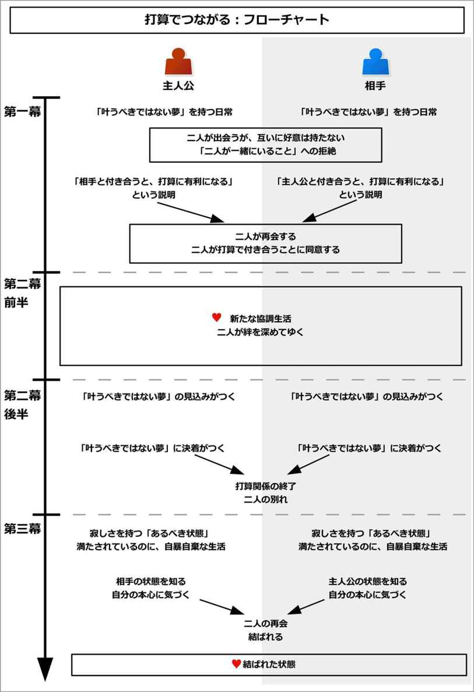
このイベントを構成するために、以下の内容について考えるとよい。
以下で、それぞれについて詳しく説明してゆこう。
まず最初に、主人公と協力することになる相手を決めよう。
結果的に主人公はこの相手と絆を結ぶことになるので、恋愛物語の場合は恋人役、それ以外の場合は仲間になりやすい。
人間ドラマとして用いる場合、「○○のような関係」という形で象徴される、深い絆を作りやすい。
その「○○」に当てはまるものは、「親子」や「家族」、「兄弟」、「親友」、「恋人」などの、深い人間的なつながりになる。
例えば親子ほどの年齢差がある二人が、赤の他人で血はつながっていないが、「親子のような関係」を作ることもある。二世代ほど年齢差がある二人が、赤の他人なのに「祖父と孫のような関係」になることもある。
年齢の近い二人が、赤の他人なのに、兄弟のような関係になることもある。社会的にも身分的にも差がある二人が、親友のような関係になることもある。
そのようにすることで、様々な種類の人間ドラマを作ることができる。
なお、打算でつながるのは、複数人になってもよい。
この場合、「赤の他人なのに、みんなが打算で集まり、一つのチームを築き上げる」、という流れになりやすい。
チームには、「ポジション」に象徴される立ち位置として、一人一人の人物を割り当てる形になる。
例えばスポーツものなら、野球やサッカーで言うと守備ポジションが決まっているものだ。
「家族」というつながりを持つ場合、それぞれに父親、母親、兄、姉、弟、妹などのポジションがあるだろう。
冒険もので「パーティ」というつながりを持つ場合、勇者、剣士、白魔法使い、黒魔法使いなどのポジションがあるだろう。
「ロケットを打ち上げる」という目的を持つチームを作る場合、リーダー、理論家、エンジニア、コンピュータを扱う人、などのポジションがあるだろう。
すると、「チームでは誰一人として欠かすことはできない」という状態にできて、一人一人の重要性を増すことができる。
次に、主人公と相手とが持つ、「叶うべきではない夢」を決めよう。
「叶うべきではない夢」とは、物語本来の目的とは全く別種の目的であり、本人が「これを実現すれば、私は幸せになれる」と思い込んでいるような夢になる。
しかし、読み手から見ると、それを達成しても絶対に幸せにはなれないようなものになる。
これは、「もう十分にあるのに、『もっと欲しい』と思うこと」もしくは「もう身近にあるのに、『本当の○○が欲しい』と思うこと」、「もうできないのに、『もう一度、○○をしたい』と思うこと」といった内容から発想するとよい。
例えば既に十分に持っているのに、「もっとお金が欲しい」や「もっと地位や名誉が欲しい」と思うかもしれない。「もっと有名になりたい」、「もっと美しくなりたい」、「もっとモテたい」、「もっと勝てるようになりたい」、「もっと見栄を張りたい」などもあるだろう。
他にも、既に愛されているのに、「本当の愛情が欲しい」と思うかもしれない。既に楽しいことを持っているのに、「本当の夢が欲しい」と思うかもしれない。
主人公が離婚した大人の場合、「もう一度、子どもに会いたい」と思うかもしれない。子どもの場合、親から捨てられたのに、「もう一度、親と会いたい」と思うこともあるだろう。復帰は絶対に無理なのに、「もう一度、競技場に立って競技をしたい」と思うかもしれない。
恋愛物語の場合、心を許せる人がそばにいるのに、それに気づかずに「この人と結ばれたい」というものになるだろう。
これを、主人公と相手で、別々に違うものを持たせよう。
そして、主人公と相手の「叶うべきではない夢」で、それぞれが一つずつ「足りない要素」を持つようにしよう。
その上で、相手にそれを埋められる要素や才能を持つように、設定を追加しよう。
例えば主人公が「もっとお金が欲しい」という場合、主人公はほぼそれを実現できる能力があるのだが、たった一つだけ決定的に足りない要素や事情を持つようにするのだ。
それは、「妻や恋人がいない人は、ビジネスでは信用されない」という風潮かもしれない。もう一人、架空の社員が必要かもしれない。「女性に優しい」という演出が必要かもしれない。
主人公が「この人と結ばれたい」と思う場合、その人とつながる人脈だけがないかもしれない。声をかけるきっかけだけがないかもしれない。
そんな「足りない要素」を、相手が持つようになる。
相手にとっても同様で、相手の「足りない要素」を満たすものや才能を、主人公が持つ形にしよう。
これで、このイベントを構成することができるようになる。
それでは実際に、このイベントの流れを見てゆこう。
このイベントでは初期設定が重要になるので、少々長くなるが、詳しく見てゆくことにしよう。
イベント冒頭では、主人公と相手とが、別々の日常を過ごしている状態になる。
ここで、それぞれ「本来の目的」、「叶うべきではない夢」と、「叶うべきではない夢の足りない要素」という三つの要素が描かれる。
「本来の目的」とは、物語で主人公たちが果たす目的になる。これは主人公と相手が互いに結ぶ絆や、人間的なふれあいになる。
ここでは、それが致命的に欠けている姿が描かれる。
両者が親子のような関係を築く場合、片方は子がいなくて寂しく思っているだろうし、もう片方は親がいなくて寂しい思いをしているだろう。
両者が兄弟のような関係を築く場合、片方は信頼してくれる弟分がいなくて苦しんでいて、もう片方は引っ張ってくれる兄貴分がいなくて苦しんでいるだろう。
両者が恋愛をする場合、互いに付き合っている異性がいない状態だろう。
それによって、本来の目的が示される。
しかしこの段階では、主人公も相手も、この「本来の目的」を実現することには興味がないことが多い。
本当はそれが必要なのに、それぞれ「自分にはそれは必要ない」と思い込んでいるのだ。
その代わりに、それぞれが「叶うべきではない夢」を持っていることが説明される。
本当は「本来の目的」を実現する物語なのに、主人公たちはそれを無視して、全く別種の夢を追いかけているのだ。
それぞれは、心の底から「これを実現すれば、自分は幸せになれる」と信じているだろう。同時に、「本来の目的」がないことで感じている寂しさや苦しさも、「これを実現すれば、満たされる」と思い込んでいるだろう。
しかし読み手や周囲の友人から見ると、「その人物にそれは必要ない」という風に演出される。
既に、十分にそれを持っているかもしれないし、そのキャラクターに合わないものを追いかけているかもしれない。「それを達成しても、寂しさや苦しみは埋められない」と描かれるかもしれない。
それによって、主人公と相手が互いに、「叶うべきではない夢」を持っていると示される。
最後に、「叶うべきではない夢の足りない要素」が説明される。
主人公と相手は、互いに後一歩のところで、「叶うべきではない夢」を実現できる状態まで来ていることだろう。
しかし、決定的に足りないものあると、ここで説明される。
主人公も相手も、それぞれが「どうにかして、これを満たせればいいのに」と悩んでいることだろう。
そのような日常が描かれる。
なお、複数人で構成する場合、登場人物数ほどこれを紹介することになる。この場合、ここで一度に全員を紹介してもいいし、中核メンバーだけをここで出会わせて、残りを第二幕から逐次追加しても、どちらでも構わない。
ここでは具体例として、「親子のような絆を作る人間ドラマ」と「四角関係の恋愛物語」という例で見てみよう。
親子のような絆を作る人間ドラマで言うと、離婚した主人公の中年男が、孤児の小さな女の子と親子のような関係を築く、そんな人間ドラマを作るとする。
イベント冒頭では、男と女の子の、それぞれ全く接点がない別々の日常が描かれる。
まずは「本来の目的」としては、男は妻と離婚して、我が子と会えずに寂しい思いをしている姿が描かれる。
そしてその寂しさを埋めるように、仕事に打ち込んで会社を大きくしようとしているのだ。この「会社をもっと大きくしたい」というのが、「叶うべきではない夢」になる。
男はその会社の社長で、急成長していて世間から注目されていることだろう。周囲から見ても既に十分に成功していて、友人からは「君はこの町一番の富豪で人脈があるのに、まだ欲しいかね？」とあきれられているかもしれない。
それでも男は、かたくなに「お金がもっとあれば、ビジネスで成功すれば、この寂しさは満たされる」と思い込んでいるのだ。
最後に、男の「叶うべきではない夢の足りない要素」が示される。
男は今まで法律すれすれのことをしていたので、悪名が高いとしよう。それが受注を得られない、最大のボトルネックだとする。
そこで、「何か好感度を上げることができれば、ビジネスで成功できるのに」と悩んでいる姿が描かれる。
同様に、女の子の日常も描かれる。
女の子は孤児院にいるが、元気に飛び跳ねつつも、シスターやルームメイトとはなかなか心から打ち解けられない状態だとする。
また、親からの愛情を他の誰よりも求めていて、「親に甘えたい」という思いを胸に秘めている姿が描かれる。これが「本来の目的」になる。
そしてその寂しさを埋めるように、「両親を捜し出す」という夢を持っているとしよう。
実際は両親とは死別したのだが、過去にシスターが傷つかないようにと、「貴方は両親と生き別れた。大人になれば、きっと見つけ出せる」と嘘をついて、希望を与えたとする。
女の子はその事実を知らずに、実の両親を捜そうとしているのだ。これが「叶うべきではない夢」になる。
そして女の子は、「お金と広い人脈さえあれば、見つけ出せるのに」と、後一歩のところまで来ているだろう。これが「叶うべきではない夢の足りない要素」になる。
しかしそこから進まずに、悩んでいる日常になる。
このように、男と女の子の、別々の日常が描かれる。
四角関係の恋愛物語で言うと、主人公は青年で、恋人役に少女がいるとしよう。世界観は学園もので、普通の恋愛物語だとする。
ここではちょっとした演出で、「本来の目的」を示してみよう。
恋愛物語では、「冒頭で出会った異性の二人が、結ばれる運命の人になる」という印象を与えやすい。
そのため、イベント冒頭で二人が出会っていない場合、ここで「偶然二人が、街角で見知らずにすれ違う」という演出を用いることができる。
それによって、読み手に「この二人が結ばれるカップルになる」と暗示できる。これが「本来の目的」になる。
次に、主人公と少女とで、それぞれ「この人と結ばれたい」という、別の片思いの人が示されるだろう。これが「叶うべきではない夢」になる。
ここでは、主人公が持つ「叶うべきではない夢」を「女子生徒と結ばれること」、少女が持つそれを「男子生徒と結ばれること」としよう。
主人公も少女も、それはただの妄想に近いあこがれであると読み手に示すことで、「それを叶えても幸せにはなれそうにない」と示すことができるだろう。
最後に、両者は互いに「片思いの人ともっと深く付き合いたいけれど、人脈がない」と悩んでいるだろう。これが、「叶うべきではない夢の足りない要素」になる。
そんな日常が描かれることになる。
そんなあるとき、主人公は相手と出会うことになる。
何らかのきっかけがあることで、主人公は相手と同じ時間、同じ場所で遭遇し、互いに知り合うことになる。
何らかの事件や事故に巻き込まれるかもしれない。もしくは主人公が引き起こした問題に、相手が巻き込まれるかもしれない。逆に、相手が引き起こした問題に、主人公が巻き込まれるかもしれない。
それによって二人は接点を持つことになる。
主人公と相手は、偶然にしろ必然にしろ、相手の境遇や状況、素質や才能を知ることになるだろう。
ただし、ここではまだ「互いが自分にとって、『叶うべきではない夢の足りない要素』を満たせる」とは気づかない状態になる。
親子のような絆を作る人間ドラマで言うと、「会社をもっと大きくしたい」という男と、「両親を捜し出したい」という女の子は、ひょんなことから出会うだろう。
男がクリスマスのチャリティーに嫌々ながらも参加したとき、偶然知り合うかもしれない。男が公園で、仕事の待ち合わせで待ちぼうけを食わされている時に、女の子の投げたボールが男に当たってしまうかもしれない。女の子が急いで車道に飛び出したときに、男の運転する車と接触してしまうかもしれない。
ここでは、女の子が犬や猫を追いかけているうちに迷子になり、泣きそうになっているところで男と出会うとする。
男は女の子が迷子であることを知り、結果的に女の子を送っていくことになるとする。
そこで、男が「どうして迷子になっていたんだ？」とか、「家はどこだ？」、「親の連絡先は？」などと訊くことで、女の子の境遇を知ることになる。
同じように女の子も、男の持ち物を見たり、男が街中で知り合いから声をかけられる姿を見るだろう。そして「おじさん、お金持ちなの？」、「この町に知り合いはいっぱいいるの？」などと訊き、男の境遇を知るだろう。
四角関係の恋愛物語で言うと、「女子生徒と知り合いたい」と願う主人公の青年と、「男子生徒と知り合いたい」と願う恋人役の少女は、ひょんなことから出会うだろう。
片方が落としたパスケースを、もう片方が拾うかもしれない。片方が引っ越してきたときに、隣の家に挨拶をしたら、そこでもう片方と出会うかもしれない。学校でバッグがちょっとした弾みで入れ替わり、互いが急いでいて、間違ったバッグを持って帰ってしまうかもしれない。
ここでは、互いが間違ったバッグを持ち帰る流れにする。
すると、家に帰った両者は、互いに相手の秘密を知るだろう。
バッグを開けて違う荷物だと不審に思っていると、偶然にもそこで、片思いの人の写真や、恋心を綴ったポエムを見つけてしまうのだ。
二人は接点を持つことになるが、ここで一度、「二人が一緒にいること」を拒絶することになる。
その理由は何でもよい。
互いに「付き合いにくい相手だ」と思うからかもしれない。「身分や地位、育ちが違う」と思うからかもしれない。「出会ったばかりなので、相手の素性がよく分からない」からかもしれない。
この心理的な拒絶を一度起こしていることで、「互いのことが好きではない」という状態を読み手に示すことになる。
すなわち、「打算で付き合う」ために必要な、心理的な前準備になる。
親子のような絆を作る人間ドラマで言うと、男は女の子を送りながら、「扱いに難しい子だ」と感じるかもしれない。
一方で女の子も、男に対して「自分とは別世界の人だ」と、親近感を持たないだろう。
そして孤児院まで送り終わったら、「二度と会わないだろうな」などと思いつつ、別れるだろう。
こうして「互いに好きで付き合うことはしない」という状態を読み手に示すことになる。
四角関係の恋愛物語で言うと、バッグを間違えた二人は、その日の夜なり翌日なりに再会するだろう。
そして互いに、秘密を知られたことを知り、怒ったり、ケンカをするかもしれない。
しかし結果として、「両方が悪かった。知られたものはしょうがない」と受け入れざるを得なくなる。
ここでは、二人は互いに「あんな友人を好きになる奴がいるとは、不思議な奴もいるもんだ」という程度で、あまり親近感を持たない状態になる。
ここで状況の解説がなされて、メンターによって、互いが「叶うべきではない夢の足りない要素」を補えると気づくことになる。
メンターは友人などの第三者になる場合もあるし、相手から提案されることもある。また、主人公が自分で気づいて、相手に提案することもある。
相手と一緒にいる状態で知るかもしれないし、一度相手と別れた後で知ることもある。
「叶うべきではない夢の足りない要素」を互いが補えることを知って、主人公も相手も興奮するだろう。
だが、ここではすぐには飛びつけないものだ。
主人公も相手も、「こんなに簡単にうまくいっていいのだろうか」、「いきなりのことで、心の準備が必要」、「相手は他に、何か裏があるのではないか」などと、警戒したりためらうものだ。
だが、こうして「打算でつながり合う」という道が、明快に示されることになる。
親子のような絆を作る人間ドラマで言うと、男は女の子を孤児院まで送ったときに、気まぐれで一輪の花を与えたり、駄菓子を与えるかもしれない。
そんな「孤児を喜ばせている主人公」の姿を、知り合いのマスコミによって写真に撮られて、話題になってしまうのだ。
すると、それが男の好感度を上げて、今まで得られなかったような受注が得られるようになる。
そして男は、友人から「あの孤児の女の子を引き取れば、悪いイメージを払拭できて、好感度を上げられて、大幅な売り上げ増にできるぞ」と教わることになる。
一方で女の子も、孤児院に戻った後で、ふとあの男が自分の「両親を捜す」という夢に必要なものを、全て持っていることに気づく。
それによって、「あのおじさんを利用すれば、お金もあるし人脈もあるので、両親を捜し出せるかもしれない」と思いつくだろう。
しかしこの段階では、「相手にとって迷惑になるだろう」、「自分のことを好きなわけでもなさそうだから、受け入れてくれないだろう」と、その考えに否定的だろう。
四角関係の恋愛物語で言うと、ここで少女があこがれる男子生徒は、主人公の友人だったと分かるだろう。一方で主人公があこがれる女子生徒は、少女の友人に当たるのだ。
結果として二人は、「この人を利用すれば、自分の思い人ともっと深く付き合える」と思いつくことになる。
そこで少女は、主人公に「じゃあ、その女子生徒を紹介してあげようか？」と提案するかもしれない。「その代わりに、私と男子生徒との仲を取り持って」と交換条件を出すのだ。
主人公もその交換条件に驚き、「それはいい！」と絶賛するだろう。
ただし、主人公も少女も、突然降ってわいたかのような「思い人と急接近できる」という事態に、慌てるだろう。
そして「心の準備ができていない」と感じることで、ここではすぐに協力し合うことはしない。
「打算でつながる」という可能性を持った両者だが、ここで何らかのきっかけが起こることで、両者は打算で協力し合うことになる。
そのきっかけとは、「叶うべきではない夢」に対する危機、もしくは機会として描かれることが多い。
そこで、「このままでは、その夢が叶わなくなる」、もしくは「あと一押しで、夢が叶うかもしれない」という何らかの出来事を配置しよう。
ライバルに出し抜かれそうになるかもしれないし、自分の力が失われてゆくかもしれない。このままでは環境が変わることになるかもしれないし、悲劇的な結末が予測できるようになるかもしれない。
もしくは、幸運が訪れて、後一歩で実現できそうになるかもしれない。自分の素質や才能を改めて知ることで、実現可能性に気づくかもしれない。
主人公は、相手の素質や才能を必要とするだろう。好きではないが、打算で相手を利用しようとすることになる。
そんなとき、主人公は相手と偶然にも再会するだろう。
すると、相手も主人公に対して打算を持っていたことが判明する。
結果として両者は、好きではないが、打算だけで結びつき、協力し合うことになる。
親子のような絆を作る人間ドラマで言うと、あるとき男は、大口受注をライバル会社に取られそうになるだろう。
「それを逃したら、将来、ライバル会社には大きく差をつけられるだろう」と、男は危機感を抱くとする。
また、同時に「発注元は、男の悪評を気にしている」という情報を得ることになる。
こうして男は、「あの孤児の女の子を引き取ると発表すれば、一気にイメージが変わるはずだ」と確信するだろう。
男は孤児院に向かうだろう。そして女の子と再会する。
女の子もちょうど、「おじさんに会いたかった」と言うのだ。
両者は互いに事情を説明して、打算でつながり合えることを知るだろう。
男は、自分のビジネスのために、女の子を引き取る。男にはお金や広い家、世話係などの人脈はいくらでもあるので、孤児を一人引き取ったとしても全くの負担にはならない。
一方で女の子は、自分の両親を捜すために、男のお金と人脈を利用する。女の子は合わないシスターやルームメイトから解放されるので、新しい家に行くことなど、全く負担にならないどころか、喜ぶことが示される。
結果として双方の利益が完全に一致して、打算だけで協力し合うことになる。
四角関係の恋愛物語で言うと、「思い人である互いの友人を紹介し合う」という選択肢を得た主人公と少女は、「心の準備ができていない」と、ためらい続けるだろう。
そんなあるとき、男子生徒や女子生徒に、それぞれ別の生徒が告白をすることになる。
男子生徒も女子生徒もそれを断るが、そんな姿を見た主人公と少女は、「このままためらい続けていたら、ライバルに取られる」と危機感を持つだろう。
結果として主人公と少女は、「友人を紹介し合う」ということで、打算だけで協力し合うことになる。
主人公と相手は、ここから「打算」というつながりで共同生活を始めてゆく。
まずは主人公と相手とが一緒に時間を過ごす、新たな日常が示される。
主人公と相手は、それぞれの「叶うべきではない夢」に対して、互いに協力し合うだろう。そのためには、より相手と密に接しなければならないものだ。
そのため、今まで以上に、プライベートでも両者は密に付き合い始めることになる。
また、主人公も相手も、共に「叶うべきではない夢」を分かり合っているからこそ、開けっぴろげになり、ありのままの自分を出して付き合うことができるようになる。
というのも、「叶うべきではない夢」は多くの場合、人には言えないような「一番の秘密」になりやすい。
人は、「一番の秘密」を相手に知られてしまい、そのありのままを受け入れてもらえて応援されると、他に隠すことなどなくなるものだ。
こうして両者は、ありのままの自分で相手と接することができるようになる。
そんな、新たな日常が描かれる。
親子のような絆を作る人間ドラマで言うと、男は我が子と同い年ぐらいになる孤児の女の子を引き取り、ここから二人で新たな日常を始める。
二人は、「打算」という一番恥ずかしい部分を相手に受け入れられたために、隠すことは何もないだろう。
そして、開けっぴろげに、ありのままで付き合い始めることができるようになる。
男は女の子と一緒の家に住み、女の子を起こして、一緒に朝食を取るようになったかもしれない。今までは簡単な食事で済ませていたのに、今では女の子のために、栄養のある食事を作るようになったかもしれない。
女の子を学校に送ることで、世の中には貧しい子が多くいると知り、自分が既に持っている豊かさに気づくかもしれない。
女の子が会社に遊びに来ることで、会社の雰囲気がよくなったかもしれない。もちろん、それで頭を抱えるような迷惑も被るかもしれない。
夜には女の子が寂しがるからと、派手な夜遊びをせずに、家に帰るようになったかもしれない。そのため、あまりお金を必要としなくなったかもしれない。
一方で女の子は、男の家で暮らすようになり、合わないシスターやルームメイトから解放されて、明るくなるだろう。世話係や会社の人とも打ち解けて、よき友達になったかもしれない。
このように、新たな日常が描かれる。
四角関係の恋愛物語で言うと、主人公は少女と新たな日常を過ごし始めることになる。
主人公も少女も、互いの「思い人」という一番恥ずかしい部分を知られたために、もはや相手に隠すことなどないだろう。
そのため、二人とも地の自分を出して、ありのままの姿で付き合ってゆく。
互いを思い人と結びつけるために、多くの計画を作る必要があるだろう。そのために、思い人と過ごすよりもはるかに多くの時間を、二人は一緒に過ごし始めることになる。
そのように、新たな日常が示される。
ここから両者は、次第に「家族のような」、「親子のような」、「親友のような」、「恋人のような」関係を築いてゆくことになる。
一緒に登下校をし始めるかもしれないし、一緒に食事をするようになるかもしれない。また、一緒に暮らし始めるかもしれない。
一緒の時間を過ごすことで、互いの「叶うべきではない夢」を実現する方法を模索してゆくだろう。
そして両者は、互いに起こる問題を協力し合って乗り越えることで、少しずつ絆を結んでゆくことになる。
絆を結べば結ぶほど、両者はよりいっそう、一緒の時間を増やしてゆくだろう。
こうして、互いは知らずに「本来の目的」を実現してゆくのだ。
一方で、「叶うべきではない夢」に対しては、どんなに頑張っても、二人ともありのままの自分を出せないものだ。
すなわち、「叶うべきではない夢」の前では、自分を偽らなければならないことになる。
それによって、その夢が叶うべきではないと、着実に読み手に示してゆく。
この部分は、サブプロットを用いて構築するとよい。
親子のような絆を作る人間ドラマで言うと、ここから男は女の子と、親子のような関係を築いてゆくことになる。
男が女の子を引き取ったことで大口受注を奪取できて、ライバル会社を出し抜き、会社は順調に成長してゆくだろう。
また、女の子は男の会社に行くことで、いろんな人脈と出会い、両親を捜していることを伝えて、協力を得ることに成功してゆくだろう。男もそれに協力してゆくことになる。
男は女の子からねだられて、休日には一緒に遊びに出るかもしれない。女の子が無邪気に喜ぶ姿を見ることで、男は忘れていた子ども時代の純粋さを思い出すだろう。
女の子が他の子どもを助ける優しさを見て、人を出し抜くこと快感よりも、人に優しくする喜びを思い出すだろう。
帰りに、車の助手席で女の子が寝ている姿を見て、安心して眠れることの大切さを思い出すだろう。
それによって男は、少しずつ女の子や人々に、愛情を与えることができるようになってゆく。
一方で女の子も、男に甘えることで、「守られている」という安心感を得てゆくだろう。
こうして二人は、血もつながっていなくて、打算で付き合い始めたはずなのに、いつの間にか本当の親子のようなつながりを得てゆくことになる。
四角関係の恋愛物語で言うと、ここから主人公と少女は、恋人のような関係を築いてゆく。
一緒に食事をしながら語り合ったり、互いの家に上がって計画を練るだろう。互いの家族からも受け入れられて、仲良くなるだろう。場合によっては、互いの家に入り浸って、夜に泊まることが多くなるかもしれない。
両者は開けっぴろげに付き合い、互いの趣向を知ってゆき、「それならこうしよう」と、楽しく計画を進めてゆくだろう。
そして主人公と少女は、二人で協力して困難を乗り越えてゆくことになる。
主人公も相手も、思い人を前にすると、緊張してありのままの自分を出せないだろう。しかし二人きりの場合は、全てをさらけ出して、互いを受け入れることができるのだ。
いつしか二人は、恋人関係でも何でもなく、打算で付き合い始めたのに、いつの間にか本当の恋人のような絆を得てゆくことになる。
この段階で、主人公も相手も、「叶うべきではない夢」よりも、「本来の目的」を重視する方に変化してしまっているだろう。すなわち、二人が一緒にいることの方を大切にしているのだ。
しかしここから、互いが持つ一つの思い込みが、二人を引き裂いてゆくことになる。
その思い込みが、「自分にとっては今まで持っていた夢よりも、相手の方が大切になった。だが、相手にとっては今も夢の方が大切である」という思い込みだ。
ここでターニングポイントとして、主人公と相手が持つ「叶うべきではない夢」が実現する見込みが立つか、もしくは叶わなくなる見込みが立つことになる。
それによって、二人は「いつまでも一緒にいることはできない」という現実に直面する。
二人は打算で付き合うようになったために、片方、もしくは双方の「叶うべきではない夢」が達成されたら、一緒にいる口実がなくなってしまう。
主人公も相手も、共に深い絆を結んでいて、互いが一緒にいるのが当たり前の状態になっていることだろう。そして、本心では別れたいとは思わなくなっているだろう。
しかし主人公は、「相手の幸せ」のために、相手の「叶うべきではない夢」を叶えようとしてゆくことになる。同様に、相手も「主人公の幸せ」のために、主人公の夢を叶えようとしてゆく。
それは、二人が別れることを意味することになる。
こうして「打算でのつながり」が終焉に近づいてゆくことで、物語の緊張感を高めてゆく。
なお、主人公だけが別れを予感して、相手は別れを予感しない場合もある。その場合、相手は別れが訪れることなど思いもせずに、主人公との幸せな時間を過ごしてゆくことになる。
親子のような絆を作る人間ドラマで言うと、この段階で、男は会社を成功させることよりも、女の子に我が子のような愛情を持ち、女の子との絆を重視するようになっている。同様に女の子も、両親捜しなどどうでもよくなって、男を本当の親のように慕っているだろう。
そして、二人はまるで親子のような関係になり、幸せな時間を過ごしていることだろう。
しかし、男は「そんな風に変わったのは自分だけで、女の子は今まで通り、両親捜しの方を大切にしている」と勘違いしていることになる。女の子も、「変わったのは自分だけで、男は今まで通り、会社の成長を大切にしている」と思い込んでいるだろう。
この思いのすれ違いが、二人の仲を引き裂いてゆく。
ここでは男の「会社を成功させる」という夢が叶う流れになり、女の子の「両親を見つけ出す」という夢が叶わない流れにしよう。
男はあるとき、「女の子の両親が、既に死んでいる」という事実を知ることになる。孤児院のシスターからも、事情を聞くかもしれない。
同時に、女の子の親戚が見つかることで、その親戚が女の子を引き取る準備ができていることも知る。その親戚は、昼間はずっと会社にいるような男の周囲よりも、女の子にとってははるかにいい環境になるだろう。
こうして男は、「女の子といつまでも一緒にいることはできない」と知り、女の子を大切に思うが余りに、「女の子のためにも、その親戚に預ける方がいい」と決断することになる。
同様に女の子も、「自分が男と一緒に居続けることは、男を幸せにしない」と分かることになる。
男は十分に会社を成長させて、安定させるだろう。それによって、男の友人が「もうあの女の子がいなくても、会社は大丈夫。今はもう、あの子は金を使うだけの存在だ」と言っているのを、陰で聞いてしまうだろう。
女の子は、男がお金や会社の成長を大切にしているのは、十分に理解しているものだ。「男が女の子との絆を優先するようになった」などとは、思いもつかないだろう。
結果として女の子も、「男といつまでも一緒にいることはできない」と知り、男を大切に思うが余り、「男のためにも、自分は出て行った方がいい」と思うようになる。
四角関係の恋愛物語で言うと、この段階で主人公と少女は、それぞれ思い人と結ばれることよりも、互いの絆を優先するようになっているだろう。
しかし、主人公は「女子生徒よりも、少女を大切に思うようになったのは自分だけで、少女は今も男子生徒を想っている」と勘違いしていることになる。同様に少女も、「男子生徒よりも主人公を大切に思うようになったのは自分だけで、主人公は今でも女子生徒を想っている」と勘違いしているのだ。
この思い違いが、二人を別れさせることになる。
ここでは主人公の「叶うべきではない夢」が叶わない流れになり、一方で少女は叶う流れにするとしよう。
主人公は、女子生徒が自分に振り向いてくれないことに、少しずつ気づいてゆくだろう。一方で少女の方は、順調に進むことになる。
それによって主人公は、「少女といつまでも一緒にいることはできない」と感じてゆくことになる。少女と男子生徒が付き合うようになったら、少女と恋人のような付き合いなどできなくなるのだ。
主人公は、少女を幸せにしたいがために、それを受け入れることになる。
主人公は少女に心配をかけさせないようにしようとして、少女から「貴方たちの関係はどう？」と言われても、「うまくいっているよ」と嘘をつくかもしれない。
主人公は、「少女と男子生徒の恋が実り、自分が振られたら、それで終わり。少女が幸せになるなら、それでいい」と、哀しい運命を受け入れるだろう。
一方で少女も、「主人公と女子生徒の関係はうまくいっている」と信じ込んでしまうため、「主人公が女子生徒と結ばれたら、自分は主人公と一緒にいる意味を失う」と感じてゆくだろう。
それによって少女もまた、主人公の幸せを願うがために、「主人公とずっと一緒にいることはできない。主人公のためにも、自分は主人公から離れた方がいい。大好きな主人公を喜ばせるためにも、男子生徒と結ばれよう」と思うようになってゆく。
ついに、「叶うべきではない夢」の実現と向き合う前日を迎えることになる。
この日が、二人がこれまでの関係を続けられる最後の日となる。
主人公は、相手との別れに気づいているだろう。相手も主人公と別れることを予感しているかもしれないし、もしくは主人公との別れなど全く気づいていないかもしれない。
二人は、最後の時間を大切に過ごすだろう。
それによって、二人が一緒にいた時間がどれほど貴重で暖かいものだったのかに気づくだろう。
だが、主人公は相手を大切にしているがゆえに、相手と別れようとしているのだ。
相手が主人公との別れを予感している場合、相手も主人公との最後の瞬間を楽しむだろう。
そして、「叶うべきではない夢」の結末を迎える当日が訪れる。
二人はそれぞれ「叶うべきではない夢」との決着をつけるために、動き出すことになる。
親子のような絆を作る人間ドラマで言うと、男はひょんなことから女の子に、「女の子の両親がいる居場所を知っている」と気づかれてしまうだろう。
隠しきれなくなった男は、「じゃあ、この日に両親に会わせてあげる」と、女の子と約束をすることになる。
その前日、男は女の子と精一杯、親子のように一緒に過ごすだろう。
今までしてあげられなかったわがままを、特別に叶えてあげるかもしれない。今まで素直に伝えられなかった愛情を、素直に表現できるかもしれない。
こうして本当の親子以上に、両者はかけがえのない存在だと気づくことになる。
そして、約束を果たす当日が訪れる。
男は女の子に綺麗な服を着せて、車に乗せて、「両親がいる場所」へと向かうのだ。
四角関係の恋愛物語で言うと、主人公と少女は、流れで同じ日に思い人に告白することになってしまう。
その前日、すなわち主人公と少女が一緒にいられる最後の日、主人公は少女と最後の時間を過ごすだろう。
遊びに出て、笑って、困難を乗り越えて、絆を確認することで、二人は互いがかけがえのない存在だと再確認するだろう。恋人以上に、恋人らしい姿を見せるかもしれない。
そして、告白をする当日が訪れる。
主人公は「少女のため」に、少女も「主人公のため」に、それをすることになる。
そして、主人公と相手は、「叶うべきではない夢」との結末に向き合うことになる。
それぞれがそれぞれの結末を前にして、それを受け入れるだろう。
場合によっては、それは叶ってしまうかもしれない。場合によっては、叶わないかもしれない。
どちらにしても、ここで「打算でつながる」という関係に終止符が打たれて、二人は一緒にいる理由を失う。
相手が別れを予感していた場合、後ろ髪を引かれる思いで、主人公と別れるだろう。
相手は、何度も「引き留めて欲しい」と、振り返るかもしれない。しかし主人公は、相手の幸せを願うばかりに、引き留めることはできないのだ。
相手が別れを予感していなかった場合、主人公と別れることを拒絶して、泣き出すかもしれない。しかし主人公は、「相手のためだ」と、断腸の思いで相手を送り出すだろう。
こうして二人は、別れることになる。
この両者の別れが、中盤の盛り上がりになる。
親子のような絆を作る人間ドラマで言うと、男は「目的地に着いたぞ」と、女の子を車から出すだろう。
そして、墓地へと連れて行く。
そこで男は、一つの墓の前で、女の子に「両親は既に死んでいる」と、全ての真実を打ち明けるだろう。
同時に男は、女の子の親戚を紹介して、「親戚が引き取ってくれることになった。俺の家よりも、よっぽどいい環境だ」と、そちらに行くように促すだろう。
女の子は、場合によっては男に、「私はお荷物だったの？」と訊くかもしれない。
男は、女の子の幸せな未来のためにも、「そうだ」と嘘をついて突き放し、別れを選ぶのだ。
そして、女の子が親戚に引き取られる日が決まり、その日が訪れる。
女の子は親戚の車に乗り込むまで、何度も「引き留めて欲しい」と言わんばかりに、男に振り返るだろう。
しかし、男は唇をかみしめて、引き留めることをしない。
結果として、二人は別れることになる。
四角関係の恋愛物語で言うと、主人公は女子生徒に、少女は男子生徒に、それぞれ告白するだろう。
そして、主人公は断られて、一方で少女は男子生徒と付き合うことになる。
その後、二人は再会する。
主人公が気落ちするのは当然としても、少女も夢が叶ったというのに、全然嬉しそうではないだろう。
結果を言い合う中で、主人公は苦笑いをして、「俺は振られた」と伝えるだろう。すると、少女は驚くだろう。
主人公は無理矢理会話を終わらせて、「これで、俺たちの打算関係も終わりだ」と宣言し、少女との関係に終止符を打つ。
主人公は、「男子生徒に誤解されちゃいけないから、もう俺の家には泊まるな」と、少女に伝えるだろう。そして、主人公の家の前で、いつの間にか主人公の家に置かれていた、少女の歯ブラシや日用品、着替えなどを渡して、別れを告げるだろう。
少女は、「引き留めて欲しい」と言わんばかりに、いろんなこじつけをして、一緒にいようとするかもしれない。
しかし主人公は、無理矢理にでも少女を追い出すだろう。
少女は夢が叶ったというのに、泣きながら主人公の家を去るかもしれない。主人公も、少女が幸せになるというのに、引き裂かれるような心の痛みを感じるだろう。
こうして二人は、別れることになる。
主人公も相手も、「本当に大切なもの」を失ってしまった。
ここでは主人公も相手も、「あるべき状態」にいるだろう。場合によっては、今まで以上に幸せな環境にいるかもしれない。
たとえ「叶うべきではない夢」が破れたとしても、その後にそれ以上の幸運が、次々と巡ってくるだろう。
しかし、主人公も相手も、どんなに恵まれた場にいたとしても、全く嬉しそうではないだろう。
それは、「お互いの喪失」として演出される。
主人公は、ふとした時に、相手が今もそばにいるように振る舞ってしまうかもしれない。食事を二人分作ってしまったり、買い物も二人分をしてまうかもしれない。
楽しいことがあると、つい「楽しいな」と隣に語りかけてしまうかもしれない。今までの相手と同じ感覚で、別の人と接してしまうかもしれない。
だが、そこに相手はいないのだ。
それは相手にとっても同じで、主人公がいない寂しさを幾度となく味わうことになるだろう。
最初こそ、「すぐに慣れるはずだ」と思うかもしれない。
だが、いつまで経っても、互いのことを忘れられないのだ。
ここで両者に対して、それぞれ「二人の関係を元に戻せなくなるタイムリミット」が設定されやすい。
それは、新しい環境の人たちと共に、遠くに引っ越すことになるかもしれない。全寮制の学校に入るなどで、会えなくなるかもしれない。新しい環境では二人が会わないようにと、何らかの契約を迫られるかもしれない。恋愛物語なら、別の人と結婚することになるかもしれない。
主人公も相手も、それを受け入れると、今まで以上に恵まれた環境に身を置けることだろう。周囲の人も、主人公や相手の幸せを願って、それを強く促すことが多い。
主人公も相手も、その返答をする時間的猶予、すなわちタイムリミットを得ることになる。
そして、そのタイムリミットまでに、二人の関係について、決断をしなければならなくなるのだ。
多くの場合、二人は共に、「この寂しさを紛らわせるためには、それもいいかもしれない」と、半ば自暴自棄になって、破滅的な道へとなびいてゆくことになる。
親子のような絆を作る人間ドラマで言うと、男も女の子も、互いを失って喪失感を味わっているだろう。
自分の会社がどんどん成長しているのに、男は以前のように、充実感を感じることはできないだろう。そして気がついたら、女の子のことを考えてしまっているのだ。
女の子も、今まで以上に恵まれた家庭で、多くの家族や友達に囲まれているだろう。しかし全然楽しくなくて、気がついたら男のことを考えているのだ。
そんなとき、二人に対してそれぞれ、「元の関係に戻せなくなるタイムリミット」が設定される。
男は再婚話が浮かび上がるだろう。相手は大富豪の娘で、それを実現させると、最高の成功を手に入れて、一生安泰になると分かるような魅力的な話になる。
しかし、それを受け入れると、「もうあの女の子と一緒にいることはできなくなる」と分かるだろう。
一方で女の子の方でも、「女の子が国外の有名学校に入るために、引っ越す」という話が持ち上がる。
女の子がそれを受け入れると、未来は輝かしいものになると分かるだろう。しかし、それを受け入れると、男とは住む世界が変わるので、二度と会えなくなると分かる。
二人は寂しさを埋めるためにも、「それもいいかも」と、半ば自暴自棄になって、そちらへとなびいてゆくことになる。
四角関係の恋愛物語で言うと、主人公も少女も、互いの関係を失って、寂しい日常を送り始めるだろう。
主人公は女子生徒に振られたが、ちょっとした行事で活躍することで、急に他の女性たちからモテ始めるかもしれない。男友達からも、強い信頼を得るかもしれない。成績も上がり、教師からも認められるかもしれない。
だが、どんなに幸運が訪れたとしても、主人公が満たされることはない。
一方で少女は、あこがれだったはずの男子生徒と付き合い始めるが、全然面白くないだろう。ありのままの自分を出せずに疲れるばかりで、デートの最中でも、気がつくとため息をついているだろう。
そんな二人に、「元の関係に戻せなくなるタイムリミット」が設定される。
主人公は、別の女生徒であるお嬢様から告白されるだろう。そのお嬢様は才色兼備で、家柄もよく、性格もよく、学校でも一番の「高嶺の花」となる人かもしれない。
だが、それを受け入れると、家柄も厳しいので、少女とは二度と付き合えなくなるだろう。
一方の少女も、男子生徒からキスをしようと求められるかもしれない。
しかし、少女は男子生徒の唇を受けることが、できずにいるだろう。それなのに、雰囲気のいいデートに誘われて、そのデート後にキスをされると分かっていても、それを受けてしまうかもしれない。
二人はそれぞれ、寂しさを埋めるためにも、「それでいいかも」と、半ば自暴自棄になって、その方向へとなびいてゆくことになる。
そして、ついに決断をしなければならないタイムリミットが訪れる。ここからがクライマックスになる。
主人公も相手も、それぞれ破滅的な道を選ぶ準備ができているだろう。
しかしそんなとき、何らかのきっかけがあることで、主人公は「やはり相手とのつながりの方がいい」と思い直すことになる。同様に、相手も思い直して、主人公を求めることになる。
そのきっかけは何でもよいが、「相手とのつながりの再体験」と、「相手の心境を知る」という二つの内容で起こりやすい。
「相手とのつながりの再体験」では、互いの思い出をよみがえらせるものに出会うだろう。
引っ越しのために片付けていたら、思い出の写真やアイテムが出てくるかもしれない。それは、今と同じように苦しんでいた時に、相手が与えてくれて、励まされたという、思い出の詰まったものかもしれない。
相手からの手紙が、事故で何週間も、何ヶ月も遅れて届くかもしれない。それは別件の手紙なのに、まるで今の主人公に「本当に大切なもの」を教えるかのような、そんな言葉が詰まっているかもしれない。
それによって、自分の本心に気づくことになる。
また、「相手の心境を知る」では、偶然にも相手の現状と、相手が持っている本当の気持ちを知ることになる。
主人公が、相手の友人や家族と出会うこともある。新聞やニュースで、今の相手の現状を知ることもある。
それによって、相手が落ち込んでいて、元気や本来の明るさ、力を出せていないことを知るだろう。
同時に、相手は主人公とのつながりを何よりも大切にしていることが判明するのだ。
思い出のものを肌身離さず身につけているかもしれないし、「いつもそれを眺めている」という情報を得るかもしれない。
そして主人公は、ようやく自分の本心に気づき、同時に相手の本心をも知ることになる。
相手も同じで、「自分が主人公を心から必要としていた」、「何よりも、主人公との関係が一番大切だ」と気づくことになる。
二人はそれぞれ、「元の関係に戻せなくなる誘い」を断り、「本来の目的」へと走り出すだろう。
そして二人は再会を果たす。
二人は本当の気持ちを打ち明けて、共に本来の目的を達成するだろう。
親子のような絆を作る人間ドラマで言うと、男は再婚話の返事をする日を迎える。一方で女の子も、引っ越しの決断をする日を迎えるだろう。
共に「そっちでいいか」と誘いに乗ろうとした時に、変化のきっかけが訪れる。
男が会社から、再婚相手が待っているレストランに向かおうとする時に、社員から呼び止められるだろう。そして、「ずっと渡し忘れていたんですが」と言われて、あるものを受け取るだろう。
それは、女の子からの感謝の手紙になる。だいぶ昔にあった別件の手紙になるが、男はそれを読んで、女の子との毎日を思い出すのだ。
そして慌てて人づてに女の子の現状を探ると、女の子はずっと元気がないのだと知る。
また、「女の子はいつもこのアイテムを持っていて、寂しそうにしている。へんてこなアイテムで、みんなから笑われているのに、手放そうとしない」と知らされるだろう。
そのアイテムは、男が女の子にプレゼントした、思い出の品になる。それは、男だけが知っていることになる。
こうして男は女の子の気持ちを知り、自分の気持ちに素直になるのだ。
一方で女の子も同様に、引っ越しへの決断をする直前で、偶然にも主人公の会社の社員と出会うだろう。
それによって、「君がいないと、主人公は寂しそうだ」と主人公の現状を知り、自分の気持ちに素直になる。
こうして二人は、誘いに断りを入れるように人にお願いして、互いのいる場所へと走り出す。
二人は再会するだろう。そして、男がいろいろ変な理由をこじつけた後で、「戻ってきて、一緒に暮らさないか？」と伝えるだろう。
女の子は喜んで、それを受け入れるだろう。
四角関係の恋愛物語で言うと、主人公は、お嬢様から受けた告白の返答をする日を迎える。一方で少女も、雰囲気のよいデートをする日を迎えるだろう。
主人公も少女も、共に誘いに乗ろうとしていることだろう。
しかしそんなとき、主人公は少女の家族と出会う。そして、「主人公が来なくなって、少女は寂しそうに、ため息ばかりついている。家族のみんなも主人公が来なくなって寂しい」と言うのだ。
そして、「主人公がプレゼントしたアイテムを、少女は今でも大切に身につけている」と知るかもしれない。
また、「そういえば、写真ができていたのを忘れてた」と、過去の写真を渡されるだろう。
それは、少女が主人公を励ました時の写真で、今まさに少女からその励ましを受けているように錯覚するだろう。
結果として、主人公は自分の本心に素直になり、「少女を男子生徒に奪われたくない」と決断することになる。
一方で少女も、男子生徒と共に、雰囲気のいいデートをすることだろう。
しかし手洗いに行くと、ふとカバンの中に、主人公との思い出のお守りがあることを思い出す。
それは、「本心に素直になれ。当たって砕けろ」と、過去に主人公から励まされた時の、思い出のお守りになるだろう。
結果として、少女は自分の心に素直になり、主人公への想いを確かなものにする。
二人は誘いを断り、互いの元へと走り出すだろう。
そして二人は再会することになる。
二人はぎこちなく、遠回しだが、想いを伝えるだろう。場合によっては、ここでも告白するために、何らかのきっかけを必要とするかもしれない。
結果として二人は想いを告げて、「恋人のような関係」から、今度こそ本当の「恋人の関係」になるのだ。
主人公と相手は、再び一緒になって、新たな日常を始めるだろう。
それは二人にとって充実した、輝かしい日々になる。
こうして「叶うべきではない夢」が解決して、「本来の目的」を実現して、ハッピーエンドへと導かれる。
親子のような絆を作る人間ドラマで言うと、男と女の子は、再び親子のように過ごし始めるだろう。
場合によっては、養子にすることで、本当の親子になるかもしれない。
男は、必要以上に会社を成長させることはしなくなるだろう。それによって、人に優しくできるようになり、社員からも慕われる存在になるかもしれない。
一方で女の子も、両親の死を受け入れて、男を本当の親だとして、「私にとっては、世界で最高の親よ」と誇りにするだろう。
こうして全ての問題が解決されて、ハッピーエンドへと導かれる。
四角関係の恋愛物語で言うと、主人公と少女は、恋人として新たな日常を過ごし始めるだろう。
それは以前とさほど変わらないかもしれないが、より互いを大切に思うようになっているだろう。
必要であれば、ここで男子生徒と女子生徒のフォローもしておくとよい。
こうして「叶うべきではない夢」の問題が解決されて、二人は結ばれて、ハッピーエンドを迎える。
このイベントをコメディで用いる場合、「本来の目的」や「叶うべきではない夢」、「叶うべきではない夢に足りない要素」を馬鹿げたものにするとよい。
すると、ギャップを生み出せて、笑いを作れるだろう。
このイベントは、人間ドラマとして多く用いられる。
恋愛物語として用いる場合、四角関係として演出される。
また、「見知らぬ複数人が集まり、一つの目標を達成する」という流れの物語では、基本的なイベントとなる。
ただし、主人公と相手とで別々のエピソードを必要とする。複数人で集まる場合も同様なので、他のイベントに比べても、設定量やエピソード量がキャラクター数ほど多く必要になるので注意しよう。
「上下関係を持つ」は、主人公が相手と上下関係を持つことによって起こるイベントである。
主人公と相手は、ある分野において上下関係を持つようになる。
相手（上の立場にいる側）は、主人公（下の立場にいる側）に依存しているが、その大切さを理解しておらずに、全く感謝していない状態になる。
そんなとき、相手は、一時的に主人公を失うことになる。
相手は、主人公の存在がないことで、強烈な不便を感じるだろう。
それによって、主人公がどれほど重要だったのかを理解し、同時に主人公を必要な人だと思うようになる。
結果として、主人公が帰ってくることで、主人公を大切に扱い始める、という流れになる。
このイベントは、物語中盤以降で用いられることが多い。
このイベントの概要図と流れ図を、それぞれ以下に示す。
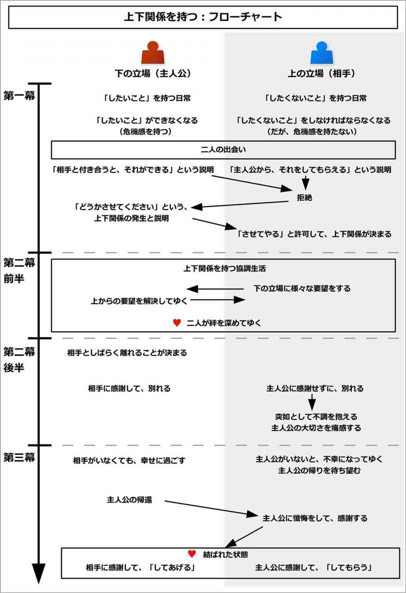
このイベントを構成するために、以下の内容を考えるとよい。
以下で、それぞれについて詳しく説明しよう。
最初に、主人公と上下関係を持つ相手を決めよう。
恋愛物語の場合は恋人役になるだろう。バトルものやサスペンスの場合、仲間になる。
次に、上下関係の内容と、上下を決めよう。
言うなれば、「誰が誰に、何を頼っているのか」という設定を新たに追加することになる。立場が上の側が、下に威張りながらも頼る形になる。
メインプロットとして用いたければ、「精神的な支えになっている」とか、「生きる勇気を与えてくれる」などの大きなものにするとよい。
場つなぎとして用いたければ、「弁当や食事を作ってくれる」とか、「一緒に登下校してくれる」、「日常の世話をしてくれる」、「風邪の面倒を見てくれる」などの些細なものでよい。
頼っている側は本来なら立場が下になるのが普通なのに、このイベントでは立場が上になるのが特徴である。
そしてその内容に対して、どちらが上で、どちらが下になるのかを決めよう。
もしメインプロットとして用いる場合、「館の主とメイド」や「お嬢様と執事」、「教師と教え子」、「先輩と後輩」などのように、上下関係が分かりやすい象徴を用いるとよいだろう。
それでは実際に、このイベントの流れを説明しよう。
なお、ここでは主人公が下（頼られている側）になり、相手が上（頼る側）になるとして説明する。
イベント冒頭では、主人公が「したいことをしている」、相手が「したくないことをしてもらっている」という姿が描かれる。
相手には、「したくないこと」があるものだ。
メインプロットで使う場合、大きなものにするとよい。それは「命を守ること」や「生きる力を得ること」、「希望を持つこと」などになるかもしれない。
サブプロットで用いるような場合、小さなものにするとよい。仕事や勉強などになるかもしれないし、炊事や洗濯などの家事になるかもしれない。体力を使う仕事や、頭を使う作業、手間がかかることかもしれない。
ただし、相手は「したくないことを誰かに頼っているが、それをしてくれることの価値に気づいていない」という状態になる。
相手は主人公以外の誰かにそれをしてもらっているが、感謝すらせずに、むしろそれをしてくれることに迷惑がっているかもしれない。
一方で主人公は、そんな相手が「したくないこと」を「したい」と思っている状態になる。
大きなことでは、「周囲の命を守ってあげること」や「生きる力を与えること」、「希望を人に与えること」が大好きかもしれない。
小さなことでは、仕事や勉強、炊事や洗濯が好きかもしれないし、体力を使う仕事を「気分転換ができる」と喜んでしたり、頭を使うことを「パズルみたいで面白い」と楽しんでいるかもしれない。
ただし、主人公は「したいことをして自分が楽しんでいるが、それをすることの価値に気づいていない」としよう。
主人公は、相手以外の誰かにそれをしてあげているが、その価値に気づかずに、むしろそれを「自分のわがままでさせてもらっている」と感じているだろう。
なお、この段階で既に「主人公が相手に、それをしてあげている」、「相手は主人公から、それをしてもらっている」としてもよい。
この場合、これ以降の第一幕は省略して、第二幕に移ってもらって構わない。
短く構成したい場合、最初からそのような関係を作っておくとよい。
ここでは作成例として、「命を助けている騎士と、命を守らせてあげているお姫様の関係」と、「弁当を作っている少女と、食べてやっている青年の関係」という二つの例で見てみよう。
命を守る騎士と守られるお姫様の例で言うと、ファンタジー的な世界観のバトルもので、相手はとある王国のお姫様だとしよう。主人公は、その王国に使える護衛の騎士だする。
イベント冒頭では、姫の「したくないこと」と、騎士の「したいこと」が示される。
姫は、「命を守ってもらうことを護衛に頼っているが、それをしてくれることの価値に気づいていない」という状態になる。
姫は次々と刺客に狙われているのだが、姫の知らないところで、護衛部隊によって全ての刺客が倒されているとする。
だから、姫は護衛部隊に感謝など一切持たずに、むしろ「無粋で嫌だ」、「武器が物騒で怖い」などと感じているのだ。
一方で主人公の騎士は、人を守ることが好きだろう。
騎士は街でも城でも弱い人々をかばい、彼らに喜んでもらうことで、喜びと生き甲斐を感じているとする。
なお、この段階では、まだ姫と騎士は出会っていないとする。
弁当のやりとりをしている青年と少女の例で言うと、主人公は少女で、相手として幼なじみの青年がいる、学園ものの恋愛物語だとしよう。
イベント冒頭では、青年の「したくないこと」と、少女の「したいこと」が描かれる。
青年は、いつも姉に昼食用の弁当を作ってもらっているとする。
だが、姉は弟である青年を猫かわいがりしているので、愛情のこもりすぎた弁当を作っているとしよう。青年はそんな弁当をいつも友人たちにからかわれて、辟易しているとする。
一方で少女は料理が大好きだとする。
家族のためにいろいろと料理や弁当を作って、喜んでもらっている姿が描かれる。
そんなとき、両者に対して新たな問題が発生することになる。
主人公はある日、「したいこと」が十分にできないことになる。
それによって主人公は、自分に対して明快な脅威が引き起こることに気づくだろう。
気分転換ができなくなるかもしれないし、毎日の楽しみがなくなるかもしれない。暇で暇でたまらなくなるかもしれないし、自分にとっての生き甲斐がなくなったように感じるかもしれない。
それによって、主人公は大いに苦しむことになる。
一方で相手は、「したくないこと」をせざるを得ない状況になってしまう。
だが相手にとっては、「したくないこと」をしなければならない脅威が、理解できていないのだ。
だから、相手は脅威があるにもかかわらず、「そっか。ならいいか」と、問題を問題だと認識しないことになる。
この意識のズレが、このイベントを有効にする鍵となる。
命を守る騎士と守られるお姫様の例で言うと、主人公の騎士はあるとき、街で移動中の国王を、刺客の襲撃から身を挺して守ることになる。
そんな大手柄によって、騎士は街や城の見回りから、王宮警備へと一気に昇進を果たすことになる。
しかしそこでは使用人が多くいるので、人を助けることができないのだ。そして、騎士は退屈な日々を過ごし始めるようになり、「弱い人を助ける」という「したいこと」ができない状態になる。
一方で相手である姫の方はというと、あるとき刺客によって、姫の護衛部隊が全滅してしまう、という問題が起こる。
しかし姫は、「今まで全然襲われてなかったんだし、いなくても大丈夫でしょう」と、全く危機感を持たないのだ。
弁当のやりとりをしている青年と少女の例で言うと、主人公の少女は、家族が海外に長期出張に行くことになり、好きな料理が思う存分にできなくなってしまう。
弁当も、一人分を作るだけでは具材が余りすぎてしまい、困り果てるだろう。
一方で相手である青年は、姉が一人暮らしを始めるなどの事情で、弁当を作ってもらえなくなるとしよう。
しかし青年は、「やっとあの笑われる弁当から解放される！」と、むしろ喜ぶことになり、危機意識など全く持たないのだ。
そんなとき、二人は出会い、互いが互いの欲求を補完し合えると知ることになる。
だが、相手は別に不便を感じていないので、危機があるにもかかわらず、「そんなのいらない」と断ってしまう。
断られた主人公は、「お願いだから、させてくれ」と頼み込むほどになるだろう。
これによって、需要と欲求にズレが生まれて、「上下関係を持つ」という問題の基礎が作られる。
命を守る騎士と守られるお姫様の例で言うと、国王は姫の護衛として、主人公の騎士を指名する。
騎士は、大好きな「誰かを助けること」ができると知り、大喜びするだろう。
そして騎士が姫の護衛として着任することになる。
しかし姫は、「たびたび刺客から襲われている」という危機を持つにもかかわらず、その事実を知らない。だから「護衛なんていらない。みんな無骨で無粋で、邪魔なだけ」と、騎士を拒むのだ。
国王も騎士も、「そう言わずに、護衛をさせてくれ」と、姫に頭を下げて頼み込むだろう。
こうして上下関係の基礎ができあがる。
弁当のやりとりをしている青年と少女の例で言うと、幼なじみの青年と少女は、互いの事情を知ることになる。
少女は、「それなら私が青年のお弁当を作ってあげる！」と提案するだろう。
しかし青年は、姉の弁当のこともあり、「お手製の弁当なんていらない。コンビニ弁当でいい」などと拒絶するのだ。
少女は「そう言わずに、作らせて、お願い！ 料理は大好きだし、具材が余ってもったいないの！」と、青年に頭を下げて頼み込むほどになる。
こうして青年と少女の間において、上下関係の基礎ができるのだ。
ここで状況の整理がされて、読み手に両者が抱える問題が示されることになる。
相手も主人公も、互いに補完関係を築くことができるが、相手だけがなぜか危機意識を持たずに、主人公を拒絶している状況が示される。
それによって、本来なら対等の感謝し合える関係になるはずなのだが、一方的に主人公が頼み込む形になり、いびつな上下関係が生まれていると示される。
これは、主人公や相手が、友人などのメンターと会話することで説明するとよい。
主人公のメンターは、主人公に「お前はそれが好きなんだから、下手に出ることはない」と言うだろう。
しかし主人公は、それをしたいがために、「自分はお願いする立場だ」と思い込み続けるのだ。
一方で相手のメンターは、相手に「お前はそれができないんだから、してもらえ。してもらわないと、ひどいことになる」と言うだろう。
だが相手は、その危機意識が全くないので、それを拒絶し続けることになる。
そんな主人公や相手に、メンターはそれぞれ「分かってない」とため息をつくかもしれない。
こうして、いびつな上下関係を読み手に説明して、物語ではこれらの問題を解決してゆくと示される。
命を守る騎士と守られるお姫様の例で言うと、ここで姫と騎士とで、それぞれ状況が説明されることになる。
姫に対しては、側近が「刺客も多いので、是非護衛をつけてください。でなければ、襲われてしまいます」と諫言するだろう。
しかし姫は、危機感を持たずに拒み続けるのだ。
一方で騎士は、騎士長から、「下手に出ることはない。これも任務であり、公務だ。たまには姫に危機意識を与えるのもよい」と言われるだろう。
だが騎士は、「今までの護衛が、それだけ姫に危機意識を持たせないように配慮して、安全を守り続けたことになる。姫に気楽に過ごしてもらえるように、自分も前任者同様、水面下で防止しよう。自分は、人を守れるだけで幸せだ」と思うだろう。
こうして、騎士は「自分はさせてもらっている側である」という態度を持ち続けるのだ。
そんな姫や騎士に、側近や騎士長はため息をついて、「分かってない」と嘆くだろう。
弁当のやりとりをしている青年と少女の例で言うと、ここで青年と少女の関係が整理されて示される。
青年は海外にいる親との電話で、つい少女とのやりとりを漏らしてしまうだろう。すると、親から「貴方は料理ができないんだから、作ってもらいなさい。栄養がないと、ひどいことになる」と言われるだろう。
しかし青年は、姉から受けたトラウマがあるばかりに、拒み続ける。
一方で少女は、友人から「そんなので下手に出ることはないよ！」と言われるだろう。
それでも少女は、「自分が好きでやりたいことだし」と、自分の立場が下であると信じて疑わないのだ。
青年の親も、少女の友人も、互いにため息をついて「分かってない」と嘆くだろう。
ここで何らかのきっかけがあることで、相手は主人公から申し出を上から目線で受け入れることになる。
そのきっかけとは、何らかの強制的な力によって引き起こされやすい。
二人の事情を知った上司や上官、立場が上の人、弱みを握られている人などから「そうしてもらえ」と命令されることで、相手は嫌々ながらも受け入れるのだ。
ここで重要なのは、相手は一切困った状態にならないことである。
「相手は全く困っていないと思っているのに、主人公の都合でそれをさせられる」という状態にしよう。
それによって、相手は「主人公にさせてやっている」という上の立場になり、主人公は「相手にそれをさせてもらっている」という下の立場を決定づけることになる。
こうして二人は、「上の立場が感謝を持たない、いびつな上下関係」という問題を抱えることになる。
命を守る騎士と守られるお姫様の例で言うと、姫は王妃にだけは怖くて逆らえないとしよう。
そこで、「姫が護衛をつけることを拒んでいる」と知った王妃が、姫に「護衛をしてもらいなさい。さもなければ、城を出ることも許しませんし、社交界への参加も認めません」などと脅すだろう。
それによって、仕方なく姫は護衛を受け入れて、身近に騎士を置くようになる。
姫は嫌々ながらも「護衛をさせてやっている」状態になり、一方で騎士は喜んで「護衛をさせてもらっている」という状態になる。
こうして本来あるべき「両者が絆でつながる関係」ではなく、「姫が感謝を持たない、いびつな上下関係」でつながることになる。
弁当のやりとりをしている青年と少女の例で言うと、ここで青年は、親には逆らえないとしよう。
親は、「少女に弁当を作ってもらいなさい。さもなければ、仕送りは止めます」などと脅すだろう。
結果として、青年は仕方なく「弁当を食ってやってもいい」と、少女の提案を受け入れる。
少女は跳び上がって喜び、本来ならしてあげる立場なのだが、青年に感謝するだろう。一方で青年は、本来ならしてもらう立場なのに、「やれやれ」と感謝を持たないだろう。
こうして、「青年が感謝を持たない、いびつな上下関係」でつながることになる。
ここで、主人公が相手と「上下関係を持つ」という新たな日常を過ごし始めることになる。
主人公は、相手の「したくないこと」をしてあげるだろう。
それなのに、相手はそれにさして感謝しておらず、それがどれだけ大切なことなのかを気づいていない状態になる。
主人公からの奉仕を、素っ気ない態度で受け取り、時には「これが気に入らない」と不満を言ったり、細かい注文をつけるだろう。
一方で主人公は、感謝されないことが当然で、奉仕するのが当然だと思っているものだ。
だから、相手に対しては「させてくれてありがとう」と、頭を下げることになる。
また、相手が満足しなければ、相手からの要求を真剣に聞き取り、少々難しいことでも、努力して改善してゆくだろう。
周囲がそんな二人を見ると、「そんな関係、おかしい」と言うだろうが、本人たちはそのおかしさに気づいていないのだ。
命を守る騎士と守られるお姫様の例で言うと、ここで騎士が姫を護衛するという、新たな日常が描かれる。
騎士は姫に襲いかかる刺客を、陰で次々と倒してゆくだろう。
だが、騎士は姫に安心して暮らして欲しいがために、自分が日夜戦っていることを姫には悟られないようにするだろう。
そして、姫から「今日はどうだった？」と言われると、たとえ激しい戦いで傷を受けていたとしても、「今日も平和でしたよ」などと微笑んで答えるのだ。
騎士は姫のためになれていると実感できて、「護衛をさせてくださって、ありがとうございます」と頭を下げるだろう。
一方で姫は、「護衛をさせてあげてるんだから、感謝しなさい」と、当然のように言うだろう。
時に姫は、「鎧が無粋でうるさい。もっと軽装にしなさい」、「剣みたいな野蛮なもの、部屋に持ち込まないで」などと難しい注文をつけるかもしれない。
それでも騎士は、その要求を真剣に聞き取り、陰でひたすら努力して対応してゆくだろう。
そんな状況を知った社交界の知り合いは、姫に「なんてうらやましい」と言うかもしれない。
一方で、騎士の仲間は、騎士の話を聞いて「なんてひどい姫だ！ 守って差し上げているのに、その態度はないだろう！」と怒りを持つかもしれない。
だが、騎士はそれでも姫に感謝しているし、姫もそれを当たり前だと思っているのだ。
弁当のやりとりをしている青年と少女の例で言うと、ここで「少女が青年に弁当を作って渡す」という新たな日常が描かれる。
青年は学校で素っ気なく弁当を受け取り、少女の弁当に「この野菜が嫌い、このおかずをもっと増やせ」などと、難癖や細かい注文をつけるかもしれない。
それを聞いた少女は、ひたすら謝り、深く反省するだろう。そして、日夜努力して改善してゆくのだ。
少女の友人がそんな二人のやりとりを知ると、「作ってあげているのに、青年のあの態度はひどい！」と憤慨するかもしれない。
そして、少女には、「食べさせてあげているんだから、青年に謝る必要なんてない」などと言うだろう。
一方で青年の友人がそんな二人のやりとりを知ると、「なんてうらやましい。王様みたいじゃないか」などと青年を評するかもしれない。
だが、少女は青年に感謝しているし、青年もそれを当たり前だと感じているのだ。
ここで主人公は、相手の要求に応えるために、陰で努力して相手を満たしてゆくことになる。
ここで相手（上：頼る側）は、主人公（下：頼られている側）に枷をはめる役割を持つ。
相手は、様々な欲求を持つだろう。そして主人公に「こうしたい」、「こうして欲しい」などと、多くの注文をつけたり、要望を伝えるだろう。
主人公は相手の無理難題に悩まされながらも、相手に知られないように陰で努力をして、それを乗り越えてゆくことになる。
時に、主人公に協力する仲間も現れるだろう。
最初こそ、その仲間となる人物は、主人公を敵視するかもしれない。
しかし主人公から助けられることによって、主人公の仲間となってゆく。
なお、ここで主人公の敵に当たる人物は、相手になる。
相手が主人公に枷をはめることで、主人公を苦しめてゆく形になる。
そのため、相手は主人公の努力に一切気づかないし、主人公の苦しみにも気づかない状態になる。
また、主人公自身も、努力している姿を相手から隠そうとするだろう。
時に、偶然にも相手は、主人公が陰で努力している場面に出くわすかもしれない。だがそんなときでも、主人公は必死でごまかして、相手が気にしないようにするだろう。
そんな隠し事がありながらも、主人公と相手は、共に絆を深めてゆくことになる。
必要に応じて、ここはサブプロットを用いて構成するとよい。
その場合、主人公は「主人公がしたいこと（相手がしたくないこと）」については相手に知られないように努力することになるが、「それ以外の脅威」は公然と助けることになる。
そのため、「主人公がしたいこと」に対する脅威とは別に、別の脅威を作って、相手に襲わせるとよい。
主人公は、そんな別の脅威を退けてゆく。
それによって、相手は主人公を信頼してゆくことになる。
なお、主人公が相手を助けるのではなく、相手が主人公を助ける流れにしてもよい。
命を守る騎士と守られるお姫様の例で言うと、ここで騎士は、姫の要求に応えるために、陰で努力をして姫を満たしてゆくことになる。
姫は「お城の外に遊びに出たい」、「夜にこっそり抜け出して、この夜会に出たい」、「貴方はここからついてきてはだめ」、「武器を持って入ってはだめ」などと、自分に降りかかる危険も知らずに、騎士に無理難題をふっかけるだろう。
騎士はそんな枷や無茶に振り回されながらも、姫に気づかれないように脅威を排して、姫を満足させてゆく。
時に、負った傷の手当てをしている時に、偶然にも姫が訪れて傷を見られてしまうかもしれない。他にも、襟元に返り血がついていることを指摘されるかもしれない。
そんな場合でも、騎士は上手くごまかして、努力を気づかれないようにしてゆくだろう。
また、騎士は「刺客」とは陰で戦うだろうが、そのほかの脅威は普通に助けることになる。
例えば、姫が崖から落ちそうになるのを、騎士が助けるかもしれない。暴れ馬から姫を助けるかもしれない。夜会で姫を侮辱する貴族の女に、騎士がささやかな復讐をするかもしれない。
それによって、姫は騎士の陰なる戦いに気づかないながらも、騎士との絆を深めてゆく。
弁当のやりとりをしている青年と少女の例で言うと、ここで少女は、青年の無茶な要望に努力して応えてゆく。
青年は「夕飯も頼む」、「食費は出すが、でもお金はかけずに、だけど美味しく」、「この食材で頼む」、「この時間までに作ってくれ」などと、少女に無理難題をふっかけるだろう。
少女はそんな要望に、努力して答えて、青年を満たしてゆく。
そして満たされた青年は、少女に問題が起こったときに、少女を助けるようになるだろう。
登下校中に、少女が不良に絡まれた時に、青年が助けるかもしれない。少女が遅刻しそうになるのを、背負って近道をして助けるかもしれない。少女が抱える委員会の仕事を手伝うかもしれない。
また、少女にどんどんと心を許すことで、距離感も近くなるだろう。
こうして両者は絆を深めてゆく。
なお、少女目線で物語を進めると、読み手は「少女が青年の無茶な要望に振り回される姿」を楽しむことになる。「少女が青年をそれだけ好きに思っている」と実感できるように演出するとよい。
一方で青年目線で物語を進める場合、読み手は「奉仕される側の優越感」を味わうことになる。「少女からそれだけ好かれている」と実感できる風に演出するとよい。
ここまでで、二人の間には十分な絆が育っていることだろう。
ここで中盤のターニングポイントとして、「近い未来に、主人公が相手に、それを提供できなくなる」という事態が引き起こる。
それには、次のような場合があるだろう。
「主人公もしくは相手が、事情で離れれざるを得ない場合」では、主人公もしくは相手が、何らかの外的な事情でやりとりができなくなってしまう。
他の大切な用事ができてしまうかもしれないし、怪我をしたり、風邪を引いてしまうかもしれない。もしくは、旅行や出張に出てしまうかもしれない。
この理由は単純なものでよくて、「離れる理由」を込み入ったものにする必要はない。
また、「二度と戻ってこない」などと劇的にしなくても、同じような面白さを得られるので、単純な理由で十分である。
「相手が主人公を遠ざける場合」では、相手は何らかのきっかけで、主人公と対立するだろう。
これは、「相手が一方的に主人公を遠ざける」という流れになりやすい。
多くの場合、相手からの要望が上がるばかりで、次第に主人公は相手の無理難題を叶えきれなくなるだろう。
すると、相手は「どうしてできないんだ」と不満をあらわにして、「もういい、お前がいなくても自分は苦労しない」と、主人公を突き放してゆくことになる。
どちらの流れでも、結果として相手は、自分でそれをしなければならなくなるのだ。
なお、この段階ではまだ別れは訪れない。別れは「予定」として組み込まれることになる。
命を守る騎士と守られるお姫様の例で言うと、ここまでで姫と騎士は、互いに十分な絆を結んでいるだろう。
それでも姫は、騎士に甘えて、次第に騎士が対処しきれなくなるほどの要望を言うようになる。
騎士は期待に応えきれなくなり、「これ以上は無理です」と拒絶するだろう。「これも、姫の安全のためです」と何度言っても、姫は理解しないだろう。
そんな騎士に姫は怒り、「あんたなんかいなくても、代わりの護衛はたくさんいるんだから！」と、国王に頼んで騎士の任を解くことになる。
弁当のやりとりをしている青年と少女の例で言うと、ある日、少女は家族のいる海外に、旅行で長期間行くことになる。
青年は「そっか」と素っ気なく返して、全く危機意識など持たないだろう。
ここで、二人が一緒にいられる最後の日を迎える。
主人公は相手に「今までこれをさせてくれて、ありがとう」と感謝するだろう。
一方で相手は、「さっさと行ってこい」と、感謝を持たない姿が描かれる。相手が主人公と対立している場合、口をきこうともしないかもしれない。
主人公は最後まで相手からは感謝されずに終わることになるが、それでも相手に対して、十分に感謝しているだろう。
そしてどんなに不遇な扱いをされたとしても、最後の最後まで、喜びと共に、相手のために誠心誠意尽くす姿が描かれる。
ついに、別れの日が訪れる。
主人公は相手に、深々と頭を下げて、感謝して別れてゆくだろう。
一方で相手は、素っ気なく別れるだろう。対立している場合、顔を見せようともしないかもしれない。
こうして二人は別れることになる。
命を守る騎士と守られるお姫様の例で言うと、ついに騎士が姫の護衛でいられる最後の日を迎える。
騎士は誠心誠意、姫に尽くすだろう。また、刺客を倒して、自分も傷つくが、姫には悟られないようにするだろう。
騎士は、こういう毎日が幸せだったこと、そしてかけがえのないものだったと気づくだろう。
ついに、任務が終わるときが来る。
騎士は深々とひざまずいて、姫に感謝を伝えるだろう。
人を助けられる喜びを知ったこと、充実して楽しい毎日を送ることができたこと、姫と一緒にいられたことなどを、暖かく語るだろう。
一方で姫は、「うるさい、もう顔も見たくない」と、顔も合わせようとはしないのだ。
それでも騎士は、「最後まで刺客の存在を悟られず、平穏に過ごせた証だ。後は後任者に託そう」と、哀しく微笑んで受け入れるだろう。
騎士は左遷され、隣国への特使として派遣されることになる。騎士は人々から陰で「姫に不興を買われて、閑職に回された。もうこの王都には戻ってこられない」などとささやかれながらも、堂々と隣国への任務に旅立つだろう。
こうして二人は、別れることになる。
弁当のやりとりをしている青年と少女の例で言うと、ついに少女が海外旅行に出る前日を迎える。
少女は心を込めて弁当や夕食を作り、青年に渡すだろう。
そして、そんな毎日がかけがえのない、喜びの日々だったことに気づく。
一方で青年は、最後まで素っ気なく食べて、ねぎらいの一言も言わずに終わるだろう。
ついに、別れの日が訪れる。
最後まで少女は青年に「ありがとう、素敵な毎日だったよ」と感謝するだろう。場合によっては、自分がいなくなることで、青年に問題が起こるのではないかと気配りをするかもしれない。
一方で青年は、「まあ旅行を楽しんでこい。お前がいなくても、俺は別に苦労はしない」という態度になる。
こうして二人は一度、別れることになる。
ここから中盤の盛り上がりとして、主人公を失った相手の姿が描かれる。
最初こそ、相手は「主人公がいなくても、何の不都合もない」と思い込んでいるだろう。
しかし、次第に「今まで見えなかった脅威」、すなわち「したくないこと」の脅威が相手を襲うことになる。
相手は、違和感に気づき始めるだろう。というのも、突如として、自分が脅威に襲われるようになってしまったからだ。
ただし相手は、最初は「主人公がそれを防いでくれていた」とは気づかないことが多い。
そのため、脅威の発生に振り回されるだろう。
しかし、自分で行おうとしても、うまくいかないものだ。他の人にお願いしても、自分には合わないだろう。
結果的に、ようやくここで、「主人公がいないから、こうなった」、「主人公がこの脅威を未然に防いでくれていた」と知るのだ。
次第に、相手はどんどん悪い状態に陥ってしまい、イライラし始めるだろう。
「どうして主人公がいないんだ」などと、八つ当たりをするかもしれない。
命を守る騎士と守られるお姫様の例で言うと、最初こそ姫は、「騎士がいなくても問題ない」と思い込んでいるだろう。
しかし、新たに配属になった護衛部隊といると、突如として、次々と刺客に襲われるようになるのだ。
姫は、どうして急に襲われるようになったのか、理解できずにおびえ始めるだろう。気軽に外出もできなくなるかもしれない。
そんなとき、姫はようやく知るのだ。「騎士が陰ながら戦うことで、姫の安全を守っていた」と。
姫は、以前に騎士の傷を偶然見たことや、騎士が姫と一緒にいる時に、よく席を外していたことを思い出すかもしれない。その後は決まって、騎士が緊張感を紛らわせるために微笑みを浮かべていたことを、思い出すかもしれない。騎士の襟元に返り血がついていた意味を、ここで悟るかもしれない。
姫は自分がしてしまったことの意味を、理解するだろう。
だが、騎士の不在にイライラしつつも、この段階ではまだ「あいつがいなくても大丈夫」と強がっているものだ。
弁当のやりとりをしている青年と少女の例で言うと、青年は最初こそ、「少女がいなくても、全く困らない」などと思い込んでいるだろう。
だが、実際に自分でやってみると、それが極めて難しいことだったり、自分には料理の才能がないと分かるだろう。
コンビニ弁当を買おうにしても、少女の料理の味に慣れると、まずくて食べられないだろう。他の人に依頼することもできないだろう。
次第に青年はイライラし始めて、「どうして少女はいないんだ！」と怒るかもしれない。
ついに相手は、自力ではどうしようもないことを理解する。
主人公がいないことで本業がうまくいかなくなってしまい、絶体絶命の状況になるかもしれない。
また、絶体絶命の状況を乗り越えられずに、瞬く間に落ちぶれてしまうことも多い。
こうして多くのものを失って、初めて相手は、主人公が必要だったと知るのだ。
命を守る騎士と守られるお姫様の例で言うと、ここでついに護衛部隊は、姫の部屋まで刺客の侵入を許してしまうことになる。
それによって、姫の部屋で血なまぐさい戦闘が行われて、部屋が血で汚されてしまうだろう。
おびえた姫は、誰も来ないような奥の部屋から出られなくなるだろう。
それによって、公務にも社交界にも出ることができずに、姫は今まで築いた見栄や立場を失ってしまう。
こうして初めて、姫は「自分には騎士が必要だった」と気づくのだ。
弁当のやりとりをしている青年と少女の例で言うと、ついに青年は、栄養が足りずに風邪を引いてしまうだろう。
また、それが影響して、本業の勉強や部活なども、うまくいかなくなるだろう。場合によっては大失敗をしてしまい、地位や名誉の全てを失ってしまうかもしれない。
青年はベッドで高熱にうなされながら、ようやく少女が自分にとって、どれだけ大切だったのかを知るのだ。
ここからクライマックスに向けて、相手が主人公を欲して、主人公が帰ってくるまでの流れになる。
相手はここで、主人公が帰ってくることを知ることになる。相手にそれをできる力がある場合、相手は主人公を呼び寄せるだろう。
しかし、主人公はすぐに相手の元へ戻ることができない。
ここで、主人公が相手の元へと戻ってくるまでの時間が、タイムリミットとして設定される。
相手はその時まで、しのげばいいのだ。
だが、十分な力を持たない相手は、どんどんと劣勢に立たされて、危機に立たされていったり、落ちぶれてゆくだろう。
相手は主人公が帰ってくる日を心から待ち望みながら、一日千秋の思いで時間を過ごしてゆくことになる。
ここで、主人公がいなくてどん底の相手と、相手がいなくても幸せを味わっている主人公の姿が、それぞれ対比されながら描かれることが多い。
相手は主人公がいないことで、最悪の状況に陥っていることだろう。
その一方で、主人公は相手のいない新たな環境で、のびのびと幸せを味わっている姿が描かれる。
新たな場では、多くの人から受け入れられていることだろう。また、そこでも好きなことを思う存分しているかもしれない。
今までは、「主人公は相手を必要とする。しかし相手は主人公など必要ない」という態度だっただろう。だがここでは、「相手が主人公を必要とする。しかし主人公は相手を必要としていない」という状態になり、関係が逆転していることが示される。
ただし、主人公は時折相手のことを思い出して、相手を心配することだろう。場合によっては、ここで相手の状態をうわさで耳にすることもある。
命を守る騎士と守られるお姫様の例で言うと、姫は国王に泣きすがって、騎士の配属を元に戻すように頼むだろう。
国王もそれを了承するが、騎士は別任務で隣国に出ているので、すぐには戻れない。
そのため、騎士が帰ってくるまでが、タイムリミットとして設定される。姫は、それまでの時間を無事にやり過ごすことができればいいのだ。
しかし、今の護衛部隊は騎士ほどの力を持たずに、次々と姫は脅威にさらされるだろう。
姫はどんどんと精神的にも追い込まれていって、ついには地下の暗い部屋で、一日を過ごすようになるかもしれない。
その一方で、騎士は隣国の新たな環境で、気分一新に張り切っているだろう。
そこでは貧しい人たちが多くいるので、騎士は人々を助け、喜ばれているだろう。それによって、隣国との関係も改善して、大きな成果を上げるだろう。騎士も、やりがいのある仕事に、充実して毎日を過ごしていることだろう。
そんな風に、騎士がいなくて追い込まれる姫と、姫がいなくても輝いている騎士という、今までとは正反対の関係が描かれる。
ただし、騎士は時折姫のことを思い出して、「姫は大丈夫だろうか、後任者は上手くやっているだろうか」と心配するだろう。
弁当のやりとりをしている青年と少女の例で言うと、青年は少女が海外旅行から帰ってくる日を知り、「それまでの時間をしのげばいい」と希望を持つことになる。
青年は、どんどん落ちぶれていくだろう。お金を使いすぎてしまい、残りが足りなくなってくるだろう。不調によって、勉強も部活も人間関係も、何もかもを失ってゆくだろう。
青年は少女が帰ってくるのを待ち望み、苦しみながら時間を過ごすことになる。
その一方で、少女は海外旅行を思う存分楽しんでいるだろう。
青年がいなくても、ホームステイ先の人々に料理を振る舞って喜んでもらっている姿が描かれる。
このように、少女がいなくて苦しむ青年と、青年がいなくても輝いている少女という、今までとは正反対の対比がなされる。
ただし、少女は時折青年のことを思い出して、「食べ物、うまくやってるかな？」と心配するだろう。
そしてついに、主人公が帰ってくる時を迎える。これがクライマックスの場面になる。
主人公は「また幸せな時間を過ごせる」と、喜びと共に相手の元へと戻ってくるだろう。
だがそこには、今までのような高圧的な相手はいない。むしろボロボロになり、みじめで、悲惨な姿の相手がいるのだ。
場合によっては、相手は主人公の帰還に喜び、泣いて主人公にすがりつくかもしれない。
主人公は少しの間いなくなっただけなのに、相手がずいぶん荒れ果ててしまったことに驚くだろう。
相手は、涙と共に、主人公に懺悔をするだろう。
自分が間違っていたことや、主人公が陰でどれだけ努力をしていたかを語り、主人公の全存在を受け入れるだろう。
そして、「お前なしでは生きてはいけない」と、落ちぶれた事情を語るかもしれない。
主人公は相手から初めて感謝をされて、感激するだろう。
こうして主人公は、「よし分かった、任せてくれ」と、張り切って報いることになる。
命を守る騎士と守られるお姫様の例で言うと、ついに騎士が姫の護衛として再着任する日が訪れる。
騎士は「姫が自分を求められた」と知って、足取りも軽く向かうだろう。
しかし案内された場所は、地下牢の一番奥にあるような暗い場所になる。そこで姫は、精神的にもボロボロの状態でうずくまっているのだ。
姫は、騎士を見ると「やっと来てくれた」と、涙を流しながらすがりつくだろう。
そして姫は、騎士に懺悔をするだろう。騎士の陰なる戦いを知らなかったことや、無茶なことを言っていたことを、涙ながらにわびるだろう。
また、騎士と別れてから今までの事情を語り、「騎士なしでは生きていけない」と伝えるかもしれない。
騎士はそれを聞いて、感激するだろう。
結果として、騎士は「私がいれば、大丈夫です」と、張り切って任務に就くことになる。
弁当のやりとりをしている青年と少女の例で言うと、ついに少女が海外旅行から帰ってくる日が訪れる。
少女は「またお弁当を作れる」と、足取りも軽く、お土産片手に青年の家を訪れるだろう。
だが、そこにはボロボロにやつれた青年がいるのだ。
少女は、短い間に青年がここまでやつれて、荒れたことに驚くだろう。
青年は少女を見つけると、涙ながらに喜び、少女にすがりつくだろう。
そして青年は、自分のしたことをわびることになる。少女の努力を認めて、少女がどれだけ自分にとって重要な存在だったのかを、切々と訴えるだろう。
それを聞いた少女は、感激することになる。
結果として、少女は「なら、とっておきのご飯を作ってあげる！」と、手によりをかけて弁当や夕食を作るのだ。
相手は、主人公が戻ってくることで、すぐに必要な力を取り戻すだろう。
主人公の支えもあり、相手は失ったものを短期間で取り返し、今まで以上に活躍するだろう。
相手は主人公に上から目線で言うこともなく、感謝と共に、主人公からの奉仕を受けるだろう。
同時に、主人公も相手から心のこもった感謝を受けることで、喜びを味わうだろう。
こうしていびつな上下関係は解消されて、両者は対等な立場となり、全ての問題が解決することになる。
命を守る騎士と守られるお姫様の例で言うと、騎士が姫の護衛につくことで、姫はいつもの安らぎを取り戻すだろう。
姫も安心して、力を取り戻し、失った見栄や名誉もすぐに挽回してしまうだろう。
また、姫は騎士に無茶なことを言うこともなくなる。騎士に必要な装備を許して、騎士を思いやる姿が描かれる。
そして、騎士に「守ってくれて、ありがとう」と、深く感謝を伝えるだろう。
騎士はそれを誇らしく思い、ますます姫に忠誠を誓ってゆくことになる。
こうして全ての問題が解決されて、ハッピーエンドへと導かれる。
弁当のやりとりをしている青年と少女の例で言うと、少女の弁当や夕食があることで、青年はいつもの力をすぐに取り戻すだろう。
すると、青年はすぐさま汚名や劣勢を挽回することになる。また、それ以上に活躍できるようになるだろう。
青年は恥ずかしがりながらも、少女に感謝やねぎらいを伝えるようになる。
そんな青年に、少女は嬉しくなって、ますます力を発揮してゆくだろう。
こうして両者は対等な関係になり、上下関係が消えて、全ての問題が解決することになる。
このイベントをコメディで用いる場合、相手を極端に辛辣にして、主人公を極端に鈍感にするとよいだろう。
すなわち、相手をツッコミにして、主人公をボケにするとよい。
相手は極めて辛辣に言っているのに、主人公は褒められたと勘違いをしたり、さほど気にしない様子かもしれない。
もしくは、主人公はさらに勘違いして、限度を超えたり、常識外れなことをして要求に応えようとするかもしれない。
そうすることで、笑いを作り出せるだろう。
このイベントは、物語中盤以降のサブプロットとして用いられやすい。
「師弟関係になる」は、主人公と相手とが師弟関係を持ち、師匠側が弟子側に願いを託すことによって起こるイベントである。
師匠側と弟子側は願いや目的を持つものだが、このイベントでは、師匠側も弟子側も、自分一人ではそれを実現することができない状態になる。
そんなとき、二人が出会い、師弟関係になる。
師匠は弟子に願いを託すと同時に力を与え、弟子は師匠から力を授かることで、互いの問題を乗り越えてゆくことになる。
結果的に、弟子が二人の願いを実現する流れになる。
このイベントはメインプロットだけでなく、サブプロットや続編、スピンアウトとしても用いられやすい。
このイベントの概要図と流れ図を、それぞれ以下に示す。
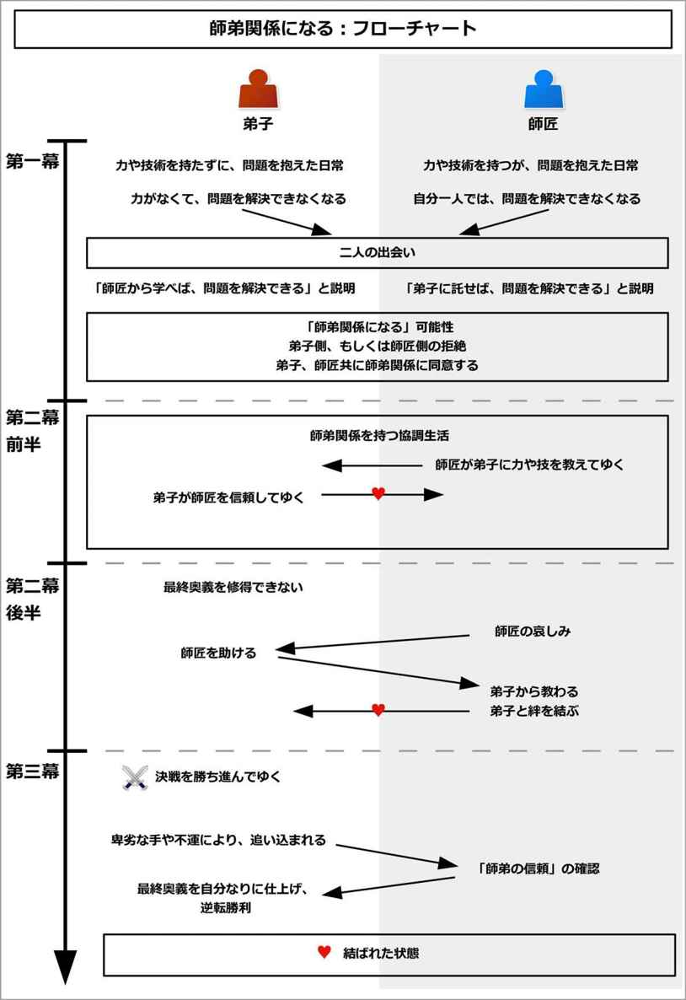
このイベントを構成するために、次のような内容を追加しよう。
以下で、それぞれについて詳しく説明しよう。
最初に、師匠と弟子の人物をそれぞれ決めよう。
以降では、「主人公」と「相手」という表記の代わりに、「師匠」と「弟子」と表記する。
師匠になる人物は、弟子よりも何らかの点において優れた能力を持つことになる。
一方で弟子になる人物は、その力を持たないことになる。
これは誰でもよい。師匠よりも年上であっても、子どもでも老人でも、恋人役や先輩でも構わない。
恋愛物語の場合、師匠と弟子において、片方が主人公、片方が恋人役になるだろう。
次に、師匠が弟子に、何を教えるのかを決めよう。
これは、教えられるものであれば何でもよい。
これは世界観を元に発想するとよい。
バトルものなら、そのバトルでの戦い方を教えるだろう。スポーツものなら、その競技で必要な技術を教えるだろう。
ファンタジー的世界観の場合、剣の使い方や魔法の使い方を教えるかもしれない。医療ドラマの場合、病を治す力を教えるだろう。親子ドラマの場合、愛情の与え方を教えるかもしれない。
最後に、弟子が何で戦うのかを決めよう。
弟子は師匠から教わった技術を用いて、何らかの形で戦うことになる。
そのため、弟子が戦う舞台を用意しよう。
それは、勝負や大会、コンテストなどの勝敗を決するものや、試験やテストなどの合否が出るもの、「これを達成する」という目標など、達成した結果が明快に分かるものにするとよい。
師匠と弟子は、弟子がそれを実現できるように力を合わせてゆくことになる。
なお、敵の存在は必須ではない。「演劇を成功させる」や「ロケットを打ち上げる」、「厳しい環境で生き延びる」などのような、自己実現的なものでも構わない。
その場合、「困難」を「敵」だと見なして進めてゆくとよい。
それでは実際に、このイベントの流れを見てゆこう。
イベント冒頭では、師匠と弟子が、一つの技術において正反対の状況に置かれている姿が描かれる。
師匠はその技術に長けていて、その力を発揮することで、物語の目的を実現しようとしているだろう。
憎い敵を倒すために、その力を鍛えているかもしれない。その技術や力を使って、何かを達成しようとしているかもしれない。
ただし、師匠は手練れであればあるほど、「その力を持っている」とは周囲に誇示しないものだ。
人知れず、その力を鍛えていることだろう。
そして、その力を発揮できる時を待ちわびていることになる。
一方で弟子は、その力を全く持たないことで、脅威と戦うことができずに逃げ回っていることだろう。
敵に簡単に倒されてしまうかもしれないし、敵から馬鹿にされたり、いじめられているかもしれない。何かを成し遂げたい場合、その技術や力だけが大きく欠けていることで、失敗し続けているだろう。
それによって弟子は目的を十分に果たせずに、落ち込み、時に悔し涙を流しているかもしれない。
そんな、双方が抱えている問題と状況が示される。
なお、ここでは両者の接点はない状態になる。もし二人に接点があって知り合っていたとしても、互いが補完し合える能力を持つことには、気づいていない。
もしサブプロットとして用いる場合、「一時的にその力が必要な状況になる」という形にするとよい。
ここでは例として、師匠が弟子に「武道を教えるバトルもの」、「メイクを教える恋愛物語」という二つの流れで説明しよう。
武道を教える例で言うと、ここでは師匠として、武道の師範を設定する。弟子として、いじめられっ子を設定しよう。そして、世界観は現代物で、武道で戦うバトルものにする。
イベント冒頭では、師匠と弟子とで、対極の姿が描かれる。
師匠は若き青年だが、既に師範代となり、道場を持っているとする。武道の世界では有名な人物で、超一流の力を持っていることになる。
ただし、敵対する道場が金儲けに走り、師匠の道場は入門者が激減して、つぶれる危機に立たされているとする。
そこでその師匠は、「入門者を増やして、道場の経営を立て直す」という目的を持っているとする。
しかし本人は、そんな雰囲気をおくびにも出さずにいるだろう。そして次の武道大会で、敵道場の憎きライバル師範を倒すことを目指して、静かに鍛錬をしているとする。
その大会で勝つことによって、世間に実力差を誇示して、道場を復活させようとしているのだ。
一方で弟子は男の子だが、いじめられっ子になる。
弟子の目的は、「いじめられずに、強くなって、居場所を作る」ことだとしよう。
しかしいじめっ子と戦う力がないため、毎日いじめられて、逃げて、泣かされている姿が描かれる。
こうして、一方は優れていて、一方は全くそれを持たない、という対極の姿が示される。
メイクを教える例で言うと、師匠は若きメイクアップアーティストの男だとする。一方で弟子は、メイクが激しく苦手で、かつノーメイクでは見ていられないほどの顔を持つ、そんな女だとする。
イベント冒頭では、男は一流のメイク技術を発揮することで、タレントやモデルなどの女性を美しくしている姿が描かれるだろう。
だが男は、元がよい美人のメイクをしても面白くなくて、「いつかメイクのし甲斐がある、素敵な女性と出会いたい」と思っているとする。
一方で女は、メイクが下手なことで、恋に失敗し続けている姿が描かれる。
女は「いつか綺麗になって、モテたい」という目的を持つとする。
しかし何度も顔とメイクが原因で振られて、泣き続けているだろう。
そんなある日、師匠にも弟子にも、「このままでは目的を果たせない」という問題が発生することになる。
師匠側では、自分一人だけでは目的を果たせなくなるような制限が発覚する。
師匠が何らかの事情で動けなくなるかもしれない。もしくは、環境が変わることで、師匠がその力を使えなくなるかもしれない。もしくは、うっかりミスをしたり、敵の罠にはまるなどして、師匠は自分でそれを実現することができなくなるのだ。
師匠が深い傷を負ってしまったり、病に倒れてしまうかもしれない。高齢になって戦えなくなるかもしれないし、必要なアイテムを失ってしまうかもしれない。もしくは、ルールが変わってしまい、師匠は参加できなくなるかもしれない。
一方で弟子の方も同様に、「これ以上、その力がない状態ではいられない」という状況に追い込まれてしまう。
もしもう一度敵に襲われると、死んでしまうと予測できるかもしれない。近い未来に、より強い困難や敵に襲われると予告されるかもしれない。
こうして、師匠も弟子も、「このままでは、願いを達成できない」という事態に直面することになる。
武道を教える例で言うと、ここで師匠は、自分だけでは目的を果たせなくなってしまう。
ここでは、師匠が参加する武道大会の試合では、大人の部は二年に一度しか行われなくなるとしよう。参加者が少ないために、そのように変更されることになる。
だが、師匠は二年後まで待つことができない。今年の大会で勝って名誉挽回をしなければ、師匠の道場は破産してしまうだろう。また、人々が注目する大会はそれしかなく、他に機会はないのだ。
ただし、子どもの部は参加者が多いので、毎年続けるとする。
一方で弟子の方は、いじめられっ子にいじめられて、安らいでいられる居場所がなくなってしまう。親の都合で、家にもいられないとする。
そして強くならなければ、どこにもいられなくなってしまうのだ。
メイクを教える例で言うと、ここで師匠となる男は、ある日「この一流モデルたちのメイクをしていても、理想とする『メイクのし甲斐がある人』には出会えない」と悟ることになる。
それによって、自分だけでは目的を果たせなくなってしまう。
一方で弟子となる女の方は、周囲がどんどん彼氏を作っていって、彼氏がいないのは自分一人だけになるだろう。
それによって、グループのみんなについて行くことができなくなってしまう。
結果として、自分のメイク力を何とかして彼氏を作らなければ、立場がなくなってしまうのだ。
だが師匠側も弟子側も、そんな現実を否定するだろう。
「そんなことはありえない」、「何かの間違いだ」、「こんな世の中、ひどすぎる」などと現状否定をして、現実を直視しようとしないものだ。
場合によっては、周囲を変えようとして手を尽くすかもしれない。
しかし、何の変化も生み出せずに終わる。
結果として、師匠側も弟子側も、「自分一人だけでは、目的を実現できない」という現実に打ちのめされることになる。
武道を教える例で言うと、師匠は「二年に一度開催なんて、ありえない」と、受け入れられないものだ。
そして大会の主催に猛抗議をするかもしれない。武道の権威に折り合って、何とかしてもらおうとかもしれない。過去の仲間や教え子に署名をもらって、反対運動を起こすかもしれない。
また「子どもの部で優勝すればいい」と気づくだろう。
だが、師匠の道場には、それに合致するような子どもの教え子はいない。探しても見つからないだろうし、知り合いの親や子にお願いしても、誰もが断るだろう。
こうして、どんなに手を尽くしても、その決定は変えられない状況になってしまう。
師匠は道場の破産を予感して、「こんなの嘘だ」と頭を抱えることになる。
一方で弟子は、「居場所がなくなるなんて、世の中ひどすぎる」と嘆くことになる。
弟子は、いじめられっ子から逃れられる場所を、新たに探そうとするだろう。
だが、どこに行っても見つけられてしまい、どこにもいられなくなってしまうのだ。
結果として弟子は、「僕はどこにもいられない」と、追い詰められてしまう。
メイクを教える例で言うと、師匠になる男は「メイクのし甲斐がある人がいないなんて、ありえない」と、現状否定をするだろう。
そしてメイクのし甲斐がある人を、捜し始めるだろう。
しかし、現代ではどんな女性も美しくて、メイク技術も高くて、男が満足できるような女性はいないのだ。
そして男は厳しい現実に打ちのめされ、「こんなの、嘘だ」とうなだれることになる。
一方で弟子となる女は、「彼氏がいないのは自分だけ」という現状を否定して、必死に彼氏を作ろうとするだろう。
だが、どんな男性もそのメイクと顔を見ただけで引いてしまい、女は現実の厳しさを知ってしまう。
結果として女は、「こんな世の中、間違っている」と涙を流すだろう。
そんなとき、両者は出会うことになる。
二人は偶然にも、互いが互いを補完し合えることに気づくだろう。
それは、「師匠が偶然、危機的状況にいる弟子を助ける」という出来事に象徴される。
弟子はいつものように、その力を持たずに苦しんでいるだろう。そんなとき、師匠が偶然通りがかって、助けることになる。
弟子は師匠の実力に惚れるだろう。そして、「師匠に学べば、自分はその力を得られて、目的を達成できる」と気づく。
一方で、師匠は「弟子を持ち、願いを託すことで、自分の目的を達成できる」と気づく。
これは、出会った場で気づくこともあるし、一度別れた後で気づくこともある。
このイベントの場合、状況が複雑であることが多いため、一度別れた後で整理して説明するとよいだろう。
そして、それぞれが抱える問題が再度読み手に示される。同時に師匠には「弟子に教えて、願いを託せばよい」と、弟子には「師を持って、学べばよい」と説明される。
武道を教える例で言うと、ここで二人が出会うことになる。
その弟子がいじめられて逃げている時に、師匠と遭遇するのだ。
師匠は、その弟子をかばいながらも、子どもとはいえ武道の経験者五人や十人を相手にして、赤子の手をひねるかのように易々と撃退するだろう。
弟子は師匠の実力に驚き、その力にあこがれるだろう。
そして弟子は、「この人を師として武道を学べば、強くなれて、居場所を作れる」と気づくことになる。
メイクを教える例で言うと、それぞれ悩みを抱えた男と女は、ここで出会うことになる。
男は「メイクのし甲斐がある人は、いないのか」とうちひしがれながら、街をトボトボと歩いているだろう。
一方で弟子となる女は、ひどいメイクで男友達と待ち合わせをしているかもしれない。ただ、待ち合わせの場所に早く来すぎたので、待ちぼうけをしているだろう。
そんなとき、二人は出会う。
男は女の顔とメイクに驚き、「これぞ自分の求めていた女性だ！」と確信する。
そして女に頼み込んでメイクをさせてもらうと、女は驚くほど美しくなってしまうのだ。
女はそのメイクで、待ち合わせていた男友達からの好印象を受けて、喜ぶだろう。こうして女は男に助けてもらった形になり、師匠となる男にあこがれることになる。
このイベントでは、二度目の拒絶が発生する。
ここで片方もしくは両方が、師弟関係になることを拒絶することになる。
師匠側が拒絶する場合、弟子側が師弟関係にあこがれることが多い。
その場合、師匠から見ると、その弟子となる人物は、あまりにもその分野では才能がなさそうに見えて、「他にもっとふさわしい人がいるんじゃないか」と思うだろう。
それによって、その弟子ではなく、他の候補者を探そうとするだろう。
一方で弟子が拒絶する、師匠側が師弟関係にあこがれることが多い。
だが弟子から見ると、その分野では師匠はあまりにもすごい人物のように見えるかもしれない。それによって、「この人は、自分とは世界が違う、すごすぎる人だ」と思い、拒絶することがある。
もしくは、弟子から見ると、師匠はその分野では力があるかもしれないが、なんだか頼りなく見えるかもしれない。力だけはあっても、それ以外の面が全くだめな状態なので、そんな負の側面を知ることで嫌がることもある。
もちろん、双方が互いを拒絶することもある。
こうして、師弟関係への可能性が示されるが、片方もしくは両方が拒絶することになる。
武道を教える例で言うと、ここでは弟子側があこがれて、師匠側が拒絶する形にしてみよう。
出会った子は、「僕も先生のように強くなりたい」と言うだろう。
そこで師匠は「この子に武道を教えて、自分の道場名を背負ってもらって、大会で勝ってもらえばいい」と気づくだろう。
しかし、師匠が見ても、その子はどうにも弱そうな子に見えるものだ。それに、短期間で技を伝授するなら、多くの弟子を抱えるわけにもいかない。
だから、「他にもっといい子がいるんじゃないか」と思い、師匠側が「ちょっと考えさせてくれ」と拒絶することになる。
メイクを教える例で言うと、ここでは弟子側である、女が拒絶する形にしてみよう。
男は「君のような人を求めていた。是非メイクを教えさせてくれ」と頭を下げるだろう。
女は既に、メイクアップアーティストの男に惚れているため、跳び上がるほど嬉しいだろう。
だが、「こんなに一流の人から教わるなんて、こんなにメイクが下手な自分が望んではいけない」、「こんなに素敵な男性は、こんなに不細工な私には不釣り合いだ」などと拒絶することになる。
そんなとき、互いが自発的に師弟関係を結ぶようなきっかけが起きる。
そのきっかけは、「他に適任者がいない」、「期限が迫る」、「師匠や弟子の優れた点を知り、見直す」といった内容に象徴されるだろう。
師匠が拒絶していた場合、他に適した教え子がいない状態で、弟子を決めなければならない期限が訪れるだろう。
また、弟子には意外な素質があることを見抜くかもしれない。
弟子が拒絶していた場合、師を決めなければ、立ちゆかない状況になるかもしれない。
師匠に対して何らかの嫌っていた側面がある場合、それに意味があったと悟るだろう。師匠が本当の姿や本当の実力を見せることで、弟子は「ダメな部分はカモフラージュで、実はすごい人だった」と見直すかもしれない。
こうして、双方は「互いしかいない」と、自発的に師弟関係を結ぶことになる。
武道を教える例で言うと、ここで「これ以上は探すことに費やせない」と、師匠は弟子を決める期限を迎えるだろう。
そんなとき、師匠は再び、弟子がいじめっ子に追いかけられている姿を見つけて、高い場所から眺めることになる。
そこから見ると、弟子に意外な才能があることを発見するのだ。
いつも全力疾走をして逃げていたので、足腰がしっかりしているかもしれない。また、いつも殴られるのをよけていたため、敵からの攻撃をかわすのが上手いと気づくだろう。反射神経もいいかもしれない。
それは線が細くても、たぐいまれなる才能だと気づくかもしれない。
それによって、師匠は弟子の実力を見直して、「是非君に教えたい」と思いを改めることになる。
こうして、二人は師弟関係を結ぶことになる。
メイクを教える例で言うと、拒絶していた女は、メイクの可能性があると知って、メイク教室に通うかもしれない。
だが、どんな教師も、男のようにはできないのだ。
そしてついに、最後の男友達にも振られそうになってしまう。
結果として立ちゆかなくなり、女は考えを改めて、男に「メイクを教えてください」と申し出ることになる。
こうして二人は、師弟関係になるのだ。
ここで改めて、師匠と弟子の紹介がなされるだろう。
どのような点が得意なのか、どのような点が劣っているのかが明確にされる。
また、弟子の課題も明確になり、達成すべき目標が設定される。
その目標は、戦いや競争を含むような内容になりやすい。
敵に勝つことかもしれないし、何らかの大会で優勝することかもしれない。合格通知を得ることかもしれないし、誰かに受け入れられることかもしれない。何らかの夢を実現することかもしれない。
それによって、師匠と弟子は、それぞれ別の思惑があったとしても、一つの目標に向かって力を合わせることになる。
武道を教える例で言うと、まずは師匠と弟子の自己紹介がなされて、どのような特徴を持っているのかが読み手に示される。
師匠が持つ武道の経歴や、得意技、スタイルなどが説明されるだろう。一方で弟子は、足腰や反射神経がよいが、相手を殴る勇気がない、などの素質が示される。
ここでは、「弟子が武道大会の子どもの部で優勝する」という目標設定をする。
師匠はそれによって、道場の経営を立て直す。弟子はそれで自信を持ち、いじめっ子に対抗して、居場所を確保する。そのような目標が設定される。
こうして二人は、武道大会へ向けて動き出してゆく。
メイクを教える例で言うと、まずは師匠になるメイクアップアーティストの男と、弟子になる女の自己紹介がされるだろう。
そして、互いの特徴を読み手に示す。男のメイクスタイルや経歴が示されるだろう。一方で女は、メイク技術と顔はひどいが、スタイルや人柄、素養はいいと分かる。
ここでは、「女が地元のミスコンテストで優勝する」という目標を設定するとしよう。
そのコンテストでは、関係者として女を振った歴代男たちがずらりといるので、女がそこで優勝すれば、彼ら全員を見返すことができるとする。
ただしそのコンテストはプロのアーティストがサポートするのは禁じられているので、女は自力でメイクをしなければならないとする。
男は女にメイクを教えることで、やりがいのあるメイクを実現する。女はメイクを学び、自信をつける。
こうして二人は、コンテストに向けて動き出してゆくことになる。
ここから師匠はメンターとして、アドバイスをして、秘訣をどんどん教えてゆくことになる。
しかしそこで、二人に対して多くの問題が降りかかってゆく。
その問題は、「弟子のできの悪さ」、「師匠の教え方の悪さ」、「周囲からの邪魔立て」として起こりやすい。
弟子のできが悪い場合、弟子は師匠からの教えを受けるだろう。しかしそれは退屈な訓練であったり、単調な作業の繰り返しになることが多い。
弟子は次第につまらなくなり、「この師でいいのだろうか？」と疑問に思い始める。
そして弟子がついに投げ出そうとした時に、初めて師匠は「実戦形式でやってみよう」と言い出すのだ。
弟子は「いきなり実戦なんて、無理です！」と言い張るだろう。しかし実際にやってみると、自然と体が動いて、その力がついているのだ。
弟子は、今までの単調な訓練には意味があり、それが実力に反映していると気づくだろう。
こうして弟子は、師匠を信頼して、どんなに苦しい訓練でも前向きに挑戦してゆくことになる。
師匠の教え方が悪い場合、弟子は師匠の言うことをほとんど理解できずに、簡単な基礎すら持たず、落ち込みやすく、忍耐を知らず、かんしゃくを起こしてすぐに投げだそうとするだろう。
師匠は次第に「人選を間違えた」と感じてゆき、投げ出そうとするだろう。
しかしあるとき、弟子の趣味や、喜んでやっていることを目の当たりにする。
師匠は訓練メニューをその趣味や好きなことに関連させて教えることで、弟子は瞬く間に身につけてゆくのだ。
こうして師匠は、「この弟子でよかった」と納得して、忍耐力のない弟子にも、前向きに教えてゆくことになる。
周囲からの邪魔立てが入る場合、師匠側、もしくは弟子側に、訓練を止めさせようとする邪魔が入るだろう。
弟子が困難を負う場合、師匠がそれを助力することになる。一方で師匠が困難を負う場合、弟子が助力するだろう。
それによって、二人は訓練を続けてゆくことになる。
こうして、師匠は弟子と、絆を深めてゆく。
弟子はいくつかの訓練や実戦を経て、力をつけてゆくだろう。そして、弟子が倒すべき相手も明確になってゆく。
ところで、弟子が戦う敵には師がいて、その「敵の師」は師匠と対立している相手になりやすい。すなわち、弟子同士だけではなく、師匠同士でも対立を持つのだ。
それによって、弟子が勝つことが、師匠同士の戦いにも勝つことになる。
この部分は、必要に応じてサブプロットを用いて構築するとよい。
武道を教える例で言うと、弟子はトレーニングだと言われて、来る日も来る日も窓ふきをさせられるだろう。
しかも、わざわざ一歩下がった場所にバケツを置かれて、一歩を踏み出して腕を伸ばさなければ、窓をふけないのだ。
弟子は次第に無意味な雑用に飽きてきて、「もう嫌だ！」と投げだそうとするだろう。
そんなとき、師匠が「いい頃合いだ。これから実戦形式で、私と戦ってみよう」と言うのだ。
弟子は「そんなことできない」と言うだろうが、師匠は強引に弟子に襲いかかる。
逃げることと避けることだけは上手い弟子は、防戦一方になるが、そこで師匠が「一歩踏み出せ、腕を伸ばせ！」と言う。
すると、窓ふきの経験から、条件反射的に弟子は師匠の懐に飛び込み、手のひらを師匠のあごへと当てているだろう。
弟子は「拳であれば、一撃を与えられていた」と気づき、「今までの訓練には、全て意味があった」と悟るのだ。
こうして弟子は師匠を信頼して、どんな苦しい訓練にもついて行くことになる。
また、あるとき、師匠と敵対している道場師範の教え子が、弟子をいじめている子だったと知るだろう。そしてそのいじめっ子も、大会に参加すると分かるのだ。
それによって、弟子が大会で勝つことは、弟子がいじめっ子に恨みを晴らすのと同時に、師匠同士の対立でも勝つことになると知る。
メイクを教える例で言うと、女のメイク力のなさはひどくて、男がどんなに教えても全く身につかないだろう。
女も、「自分にはメイクの素質がない、美的センスがない」と、落ち込んでゆくかもしれない。
そんなとき男は、女が映画を大好きだと知る。同時に、「映画俳優なら、どんな特殊メイクをしていても見分けられる」という素質があると知る。
そこで男は、映画俳優になぞらえて教えてみると、驚くほど効果があるのだ。
男は映画を見まくることで、「この部分はあの映画のあのシーンのあの俳優で」、「お前のアイラインはあの俳優、チークはこの俳優、リップはこの俳優」などと工夫して、教えてゆく。
それによって、女は自信を持ち、どんどんとメイクを学んで力をつけてゆく。男もやりがいが出てきて、次々と技術を教えてゆくだろう。
また、ここで敵として、女をいつも馬鹿にしていた美人女性が登場するとしよう。同時に、その美人には、師匠である男にとっての敵とも言える、メイクアップアーティストがついているのだ。
美人や敵メイクアップアーティストは、男の前で女を小馬鹿にするだろう。
その美人も敵メイクアップアーティストの支援を得てコンテストに出ると知り、男も女も「あいつらだけは打ち倒してやる」と力を合わせることになる。
師匠は弟子に多くの技術を教えてゆき、弟子も順調に身につけてゆくだろう。
しかし、弟子には一つだけ習得できない、「最終奥義」のような技があることが多い。
それは師匠にとっての必殺技のようなものであり、得意とする技術になるだろう。
だが、その技は難易度が極めて高いものであったり、弟子の素質に関わるような技になりやすい。
弟子はその技を習得しようとするが、結果として、形にならないだろう。
多くの場合、その技とは、失敗した時のリスクが大きすぎるような、危険な技になる。
それは、防御を完全に捨てて、攻撃するような構えになるかもしれない。もしダメージを食らえば、再起できないほどの深い傷を負うリスクがあるかもしれない。シビアなタイミングや精度を必要とするかもしれない。
そのため、勇気や度胸がなければ絶対に成功しないのだ。
「弟子は技術的にはできるかもしれないが、勇気や度胸を未だ持てないから、その技を使えない」、という形にするとよい。
これが、クライマックスで逆転劇を演出するための前振りとなる。
なお、最終奥義はいつもとは違う構えを用いることが多い。
剣を逆手に持ったり、特殊な構えをしたり、いつも用いる武器やアイテムを捨てて使う武器を限定することで、視覚的に「最終奥義を使う」と示すことが多い。
武道を教える例で言うと、師匠が一人で訓練をしている時に、弟子がその姿をのぞき見するだろう。
そこで、その最終奥義の構えと、攻撃の仕方を知ることになる。
ただし、それは防御を完全に捨てた捨て身の技なので、勇気や度胸がなければできないとする。
弟子はおもしろ半分でそれを真似しようとして、師匠に知られないように、陰で訓練を重ねてゆくだろう。
だが、勇気のない弟子には、実戦でそんな技など使えるはずがないのだ。
メイクを教える例で言うと、あるとき男は女から、「重要な用事なのに、メイクをする時間がないんです！」とすがられるだろう。
そこで男は、最終奥義として、極めて短時間で美しく見せるメイク技法を披露する。
しかしそれは極めてシンプルなものになり、シビアな技術を要求されるものになる。
威力は抜群だが、少しでも間違うと、悲惨なことになると分かる。
師匠は何度も女に、その最終奥義の手ほどきをするだろう。そして「メイクは元々ある美しさを引き立てるだけのものだ。そして誰もがその美しさを持っている」という哲学を、繰り返し語るかもしれない。
だが、女は自分の顔に自信がないだけあって、「厚く塗る方が、自分の本当の顔を隠せるので安心する」と言って、それをする勇気などないのだ。
最終奥義を身につけられないまま、ついに決戦の日が間近に迫る。
ここで師匠は弟子に、休息を与えることが多い。「明日のために、今日は全てを忘れてしっかり休め」と伝えるのだ。
一方で師匠は、「用事があるから」と、場を外すことが多い。
弟子から見ると、師匠は神妙な顔つきをしていたり、緊張していたりと、「いつもの師匠と違う」と、違和感を持つだろう。
そして、気になった弟子は、師匠の後をつけて行くかもしれない。もしくは心配して、師匠の帰りを待つかもしれない。
場合によっては、偶然別の場所で師匠と出会うことになる。
こうして弟子は、「師匠が抱える問題」へと踏み込むことになる。
武道を教える例で言うと、武道大会の前日を控えて、師匠は弟子に「今日は休め」と伝えるだろう。
そして師匠は神妙な面持ちで、背広姿で出て行く。そんな光景を弟子は見かけるだろう。
何となく気になった弟子は、暇なこともあり、道場の前で師匠の帰りを待つことにする。
メイクを教える例で言うと、地元ミスコンテストの日を前にして、男は一本の電話を受け取る。
そして女に「来てもらって悪いが、やっぱり今日は休みにする。ゆっくり休め」と言うだろう。
女は「なら、一緒に食事でも」と誘うだろうが、男から「今日は用事があるからだめだ」と断られることになる。
男は礼服を着て、慌てて出て行くだろう。その様子に、女は不安に思うだろう。そして、こっそり後をつけてゆくことにする。
このイベントでは、中盤の盛り上がりにおいて、「師弟関係が一時的に逆転する」という出来事が起こりやすい。
ここまでは、「弟子が師匠から教わる」ばかりであった。
だが中盤の盛り上がりで、「師匠が弟子から教わる」ことや、「師匠が弟子から救われる」というような、そんな出来事を起こすことが多い。
そこで、師匠に対して、全く別の種類の問題を抱えさせるとよい。
それは多くの場合、師匠を大きく落ち込ませて、弟子に教えるどころではないような状況になるだろう。
弟子に戦いを教えている場合、師匠は彼女に振られるかもしれない。大切な家族や友人を失うかもしれない。近所の人から誤解されて、責められ、大切な場所から立ち退かなければならなくなるかもしれない。
それは多くの場合、師匠が「その技術を身につけるきっかけになった人や出来事」に関連する。
彼女や家族、大切な人を守るために、その技術を身につけようとしたのかもしれない。師匠にとってのメンターがいて、そのメンターとの思い出の場所やアイテムを失うことになるかもしれない。
これは、「二度と戻らないもの」になりやすい。それによって師匠は絶望し、涙を流すことだろう。
師匠といえども、完璧な人間などではないのだ。
一方で、弟子にそれを解決できるだけの力を与えよう。それは根本的な解決にはできないが、気を紛らわせるには十分なことになりやすい。
彼女に振られたなら、弟子が一緒にいてあげて、寂しさを紛らわせてあげることもできるかもしれない。家族を失ったなら、弟子が師匠の思い出話を聞いてあげて、思う存分泣かせてあげるかもしれない。近所の人から誤解されたなら、新たな道や希望を与えられるかもしれない。
それによって師匠は弟子に助けられ、時に弟子から深い学びを得るだろう。そして、師匠はその弟子から学ぼうともするだろう。
すると、師弟関係はどちらが師、どちらが教え子とも言えなくなり、共に学び、認め合うという対等な立場になる。
たとえ年齢差があったり、力の差があったとしても、関係ない。二人は「師弟」以上の「友」になるのだ。恋愛物語であれば、恋愛感情を抱くようになるだろう。
こうして師弟の域を超えて、二人は深い絆をはぐくむことになる。
武道を教える例で言うと、中盤の盛り上がりでは、師匠が全くの別問題を抱えることになる。
それは、ある大切な女性を失ってしまうことで起きるとしよう。
師匠は、その女性を守りたいがために、武道を志したとする。しかし、結局その女性は、別の男を選んでしまうのだ。
師匠が絶望して帰ってくると、そこには弟子が待っている。
弟子が「どうしたの？」と訊くと、師匠は「もう俺が武道をする意味は、なくなった」と、事情を語るだろう。
そんなとき、弟子がそっと寄り添って、師匠の魅力を語るだろう。「こんなすごい師匠の魅力に気づかないなんて、そんな女は馬鹿だ！」と、師匠に代わって、怒りを爆発させるだろう。
それによって師匠は同じように怒り、弟子と共に大暴れをするだろう。
そして一段落して落ち着いたら、師匠は弟子の前で、大泣きをするのだ。
弟子がそっとそれに寄り添うことで、二人はより「師弟」を越えた「友」になる。
こうして、二人は強い絆で結ばれることになる。
メイクを教える例で言うと、ここでは男が、ある女性を事故で失ったとしよう。
その女性は男の先輩になり、メイクアップアーティストを目指したきっかけとなる、あこがれだった人だとする。
葬儀場から寂しそうに出てきた男は、女がそこで待っていることに気づくだろう。
帰りながら、男は女に、メイクアップアーティストを目指したきっかけや、その女性との思い出、あこがれていたことなどを語るだろう。
男は、「俺がメイクをする意味はなくなった」と語るかもしれない。だが、女は「私がその意味になれたら、いいのに」と伝えるだろう。
男は「お前なんか、あの人の足下にも及ばない」と言いつつも、その優しさに触れて、いつしか大粒の涙を流しているだろう。
こうして二人は、師弟関係を超えた、対等で深い絆で結ばれることになる。
ついに最終決戦は始まる。
最終奥義以外の全てを受け継いだ弟子は、戦いに挑むだろう。
戦いが始まり、最初こそ弟子は緊張からミスを連発することで、追い詰められるかもしれない。
しかし練習の流れを思い出すと、すぐに窮地から脱出して、困難を通過してゆくだろう。
そこからは、弟子は師匠に教わった通りに行い、順調に勝ち進んでゆく。
師匠は弟子の活躍を、安心して見守ることだろう。
ここで、最大の敵となる相手が登場するものだ。
それは師匠が敵視している相手組織であり、同時に弟子にとっても敵視している相手になるだろう。
その敵との戦いが、この物語のクライマックスであると示される。
敵も順調に勝ち上がってゆくだろう。
そしてついに、敵との最終決戦が訪れることになる。
武道を教える例で言うと、大会が始まり、弟子は勝ち上がってゆくだろう。
最初こそ弟子は緊張から追い詰められてしまい、師匠はハラハラするだろう。
だが、一度練習通りに勝つと、その後は安心して様子を見守っていることになる。
同時に、敵チームも勝ち上がってゆく。
師匠も弟子も、「決勝戦で彼らと戦うことになる」と予測するだろう。
そして双方は順調に勝ち進み、ついにその決勝戦が訪れる。
メイクを教える例で言うと、地元ミスコンテストが開催されて、審査が進むことになる。
女は最初こそ、緊張からミスを連発するかもしれない。
しかし女は訓練の内容を思い出し、男の教えを守ることで、困難を乗り越えるだろう。
そして順調に勝ち上がってゆく。
同時に、敵となる美人女性も勝ち進んでゆくだろう。
こうして、ついに最終審査が訪れることになる。
ここから、最終決戦が始まる。
最終決戦で、ついに弟子と敵とが戦うことになるが、序盤では弟子が優勢なことが多い。
しかし、多くの場合、敵は卑劣な手を使うことで、形勢を逆転することだろう。
それは人質を取ったり、脅したりすることかもしれない。審判がいるような勝負では、マナー違反であったり、ルール違反なことをばれずに行うだろう。
それは弟子が「勝てる」と思った、一瞬の油断につけいったものになりやすい。
そして弟子は、大きなダメージを受けることだろう。
人質や脅しは、即座に解放されるだろう。
しかし、弟子が受けたダメージは想像以上に大きく、突如として圧倒的な劣勢になるものだ。
師匠は怒り、抗議できる環境であれば大いに抗議するだろう。
だが、それも認められずに終わる。
ついに弟子は、このままでは確実に負ける流れになってしまうのだ。
そのような、「目的を達成できなくなる危機」を演出しよう。
武道を教える例で言うと、決勝戦の最初では、弟子が優勢になるだろう。
だが、審判の見ていないところで、敵は絶妙な反則技を使うことになる。
師匠は猛抗議をするが、受け入れられずに、むしろ師匠の方が審判から警告を食らってしまうかもしれない。
弟子の傷は深く、一転して劣勢に立たされることになる。
このままでは、間違いなく負ける流れになってしまうのだ。
メイクを教える例で言うと、最終審査は地元イベントのステージ上で行われるとする。
最終審査の前で、審査員の事前評価でも、女は自分が優勢に立っていることを知るだろう。
しかし、その準備室で、敵は卑劣な反則技を使うのだ。
敵である美人女性は、事故に見せかけて、メイクを台無しにするような薬品を女の顔にかけることになる。
偶然、足りなかった小物を届けに来た男が、その様子を目の当たりにするだろう。
そして「そんな事故、ありえない」と猛烈に抗議をするが、敵メイクアップアーティストの反論もあり、また観客を待たせられないので、最終審査は伸ばせないことが決まる。
また、大会ルールで、プロのメイクアップアーティストである男が、候補者である女のメイクをすることは許されない。
女はメイクの全てを自力でやり直さなければならないのだが、圧倒的に時間がない。
このままでは、確実に負けてしまうことになる。そしてその短時間でできるのは、最終奥義しかないのだ。
ここからがクライマックスになる。
クライマックスでは、師弟関係が再確認されて、二人で勝利を勝ち取る流れになりやすい。
ついに弟子は、瀬戸際の状況まで追い込まれるだろう。
全ての手を出し尽くして、もう完全に手段が残っていないものだ。
そこで、一つだけ可能性が残っていることに気づく。それが、今まで一度たりとも成功できなかった、最終奥義になる。
場合によっては、ここまでで一度、最終奥義を出そうとして失敗していることもある。それでも弟子は、追い込まれてから再び挑もうとするだろう。
ここで、「師弟関係の再確認」と、弟子による「師匠との同一化」が行われることが多い。
「師弟関係の再確認」では、師匠は弟子を信頼しているか、弟子は師匠を信頼しているか、両者がその確認を行うだろう。
弟子はここで、今までのことを思い出し、急に弱気になることが多い。何らかのきっかけで、自分が「力のない人である」と思い出すだろう。
そこで、弟子が師匠の存在を思い出すだろう。もしくは「こんな自分でも、勝てますか？」と、師匠に弱音を吐き出すかもしれない。
そして震える弟子に対して、師匠が自信を持って「勇気を持て。お前ならできる」と伝えるかもしれない。
それによって、両者は固く信頼し合っていると再確認するだろう。
また、弟子による「師匠との同一化」では、弟子が「まさに師匠のように振る舞う」という演出がなされる。
瀬戸際の状態で、弟子は極限の状態で震えながらも、少しだけ落ち着きを取り戻すだろう。
そんなとき、師匠がよくしていた特徴的なポーズや構え、癖や仕草などを、そっくりそのままコピーして実現するのだ。
それは周囲の人にとっては、あたかもそこに師匠がいるかのような印象さえ受けるかもしれない。
これは、弟子が師匠の教え全てを受け入れたことを象徴する行為になる。
また、ここで師匠の技と、弟子のよさをかけ合わせた、より優れた最終奥義を作り出すことも多い。
結果として弟子は最終奥義を成功させて、勝利を勝ち取るのだ。
なお、この「師弟関係の再確認」と「師匠との同一化」は、順番を前後させても構わない。
武道を教える例で言うと、絶体絶命の状態まで追い込まれた弟子は、最後の最後で、最終奥義の構えを見せるだろう。
それはまさに、師匠の姿と重なるほどの同一化になるだろう。
その一方で、弟子は今までずっといじめられてきたことを思い出すだろう。
そして、不安そうな顔で、「こんな僕でも、強くなれますか？」と師匠を見るのだ。
師匠は静かに、「お前を信頼している」とうなずくだろう。
弟子は、師匠の技を自分なりの素質に合うように改良して、技を発揮する。
結果として、最終奥義を成功させて、逆転勝利を得ることになる。
メイクを教える例で言うと、瀬戸際の状態に追い込まれた女は、最後の最後で、男が使っていた最終奥義を使うことになる。
無駄な道具を手放して、必要最低限の道具を手に、男と同じ特徴的な持ち方をするだろう。
それでも女は、リスクの高い最終奥義に、緊張で手が震えていることだろう。素顔を他の人から見られてしまい、その人の反応から、今までずっと馬鹿にされたことを思い出してしまうだろう。
女は完全に自信を失い、過去にメイク力と顔で苦しんだことを男に告白するかもしれない。そして涙を浮かべて哀しそうに微笑んで、「こんな私でも、綺麗になれますか？」と訊くかもしれない。
男は微笑んで、「君はもう、十分に魅力的な女性だ」と答えるだろう。
最終審査が始まり、ステージ上に現れた女は、「化粧の厚さ」でごまかすのではなく、奥義を完全に完成させているだろう。
そして「師匠の技」と「自分なりの魅力」を組み合わせて輝かせることで、逆転勝利をすることになる。
勝利を飾った二人は、祝福し合うだろう。
一方で敵は、師弟関係の絆がなかったために敗北した、という形にするとよい。
それによって、敵も考え方を変えて、主人公たちに頭を下げることも多い。すると、「師弟関係」というテーマがしっかりと描けるだろう。
そして二人は、新たな日々を始めることになり、全ての問題が解決して、ハッピーエンドへと導かれる。
武道を教える例で言うと、弟子の勝利に師匠は大いに喜び、抱き合って喜び合うだろう。
一方で敵であるいじめっ子たちは、師匠と弟子の関係にあこがれて、敵道場を見限ることになる。
後日談として、師匠の道場には、多くの入門希望者が訪れている状況が描かれる。それによって、道場の経営は立ち直ることになる。
また、弟子は戦ったいじめっ子たちと友人になっているだろう。そして弟子が中心になって動くことで、彼らと共に、弱い者を助ける側になっているだろう。こうして、弟子も元いじめっ子たちも、居場所と自尊心を得ることになる。
弟子は師匠から学び、師匠は弟子からも学び、二人は道場でさらなる目標を掲げ、新しい一歩を踏み出してハッピーエンドとなる。
メイクを教える例で言うと、男は女の勝利に、女を抱きしめて喜ぶだろう。
一方で敵となる美人と敵メイクアップアーティストは、男と女の絆を見て、「自分たちが間違っていた。許してくれ」と頭を下げるだろう。
後日談として、男はますます女の素材をよくするメイクを編み出すことで、喜ぶ姿が描かれる。
一方で女は、周囲から「ああいう女性になりたい」と、あこがれを持たれる存在になっているだろう。
そして二人はさりげなく「これからもずっと一緒にいよう」などと告白して、全ての問題が解決して、ハッピーエンドへと導かれる。
このイベントをコメディで用いる場合、目的と、勝って得られるものをどうでもいいものにするとよいだろう。
すると、師匠たちが真剣になればなるほどギャップが生まれて、笑いを作れるだろう。
場つなぎとして用いる場合、師弟関係は一時的なものになることが多い。
例えば、「弟子側が試験で赤点を取り、師匠側が教えるようになる」とか、「弟子側が弁当を必要とするようになって、師匠側が教えることになる」など、一度だけの問題になることがほとんどである。
それによって、その出来事を乗り越えさえすれば、師弟関係を解消して、元の状態に戻ることができる。
補足ではあるが、第三幕以降においては、師匠が戦いの場にいる必要はない。また、生きている必要もない。
師匠が既に死んでいたり、病に倒れて遠くで見守っている、という形でも構わない。
戦いが始まった後は、基本的に弟子が戦うばかりで、師匠が活躍する場面はクライマックスのみになる。また、師匠が弟子以外に影響を与えることもない。
そのため、クライマックスで弟子が「イメージとして師匠を思い浮かべる」とすれば、師匠は生きていなくても内容を進めることができる。
この場合、「約束をする」と組み合わせると、効果的になるだろう。
このイベントは、続編やスピンアウトとしても用いられやすい。
その場合、師匠が前作の主人公になったり、弟子が前作のメンターに相当する場合が多い。
「依存関係を失う」は、主人公が依存している支えを失うことによって起こるイベントである。
主人公は親や周囲の人などに、食料や安全の確保などを依存して、助けてもらっているとする。
ある日、主人公はそんな助けを全て失うことになる。
主人公は突如として、サバイバルな環境に放り込まれてしまうことで、自力で生きてゆかなければならなくなるのだ。
主人公は次第に甘えを断ち切ってゆき、自立してゆく。
最終的に、甘えを完全に断ち切るような試練を乗り越えることで、完全に自立を果たす流れになる。
このイベントは、物語冒頭や過去の回想、サブプロットとして用いられやすい。
このイベントの概要図と流れ図を、それぞれ以下に示す。
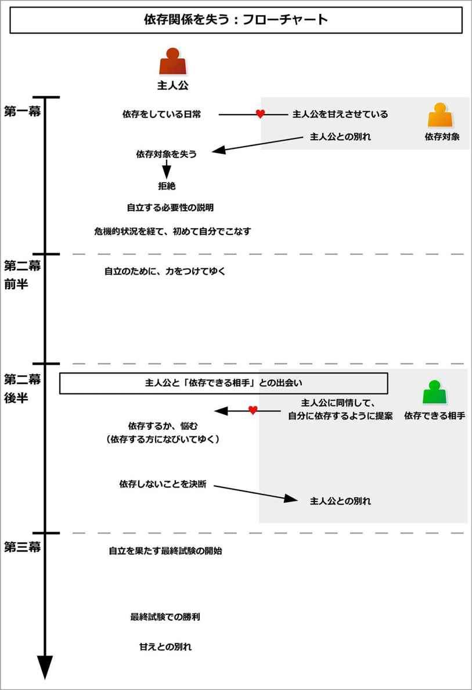
このイベントを構成するために、主人公に「依存対象」と「依存内容」を追加しよう。
言うなれば、これは主人公が「誰に」、「何を」頼り切っているのかを決めることになる。
それは主人公を守るものであり、ある意味主人公を「甘えさせている」と言えるものになるだろう。
主人公はそれを依存対象に任せっきりで、自力では何もしようとしてはいないものになる。
例えば、主人公が幼い子なら、「親」にお金を稼ぐことや、食べ物を得ることを依存しているかもしれない。
主人公が王子であれば、「護衛」に、自分の身を敵から守ることを依存しているかもしれない。「国王」に政治の執行を依存しているかもしれない。「部下の武将」に戦闘の指揮を依存しているかもしれない。
内気な少女なら、「幼なじみの友人」に、他の人と話すことや、男子と接すること、あこがれの人とやりとりすることなどを依存しているかもしれない。
男性なら「妻」や「恋人」に家事や育児を依存しているかもしれないし、女性なら、「夫」や「兄弟」に収入を依存しているかもしれない。
そのような依存対象と、依存内容を作っておこう。
それでは実際に、このイベントの流れを見てゆこう。
イベント冒頭では、主人公は誰かに何かを依存しながら生きている姿が描かれる。
それは、「甘え」として表現される場合も多い。
主人公は周囲の年長者から、「自分でできるようになりなさい」と、口やかましく言われているかもしれない。また、訓練を押しつけられていたり、嫌々練習をさせられているかもしれない。
ただし、主人公はそれをしたくないものだ。場合によっては、いつも隙あらば逃げだそうとしているかもしれない。
そして、「この人たちがいるから、自分はそんなのする必要はない」と言い逃れをして、自分の興味あることだけを追いかけているかもしれない。
周囲はそんな主人公にため息をつきながらも、その甘えを許していることになる。
ここでは例として、「親に食料とお金を頼っている若者」、「身の安全を護衛に頼っている王子」、「恋人役の青年に声をかけることを、友人に頼っている少女」という、三つの例で説明しよう。
親に食料とお金を頼っている若者の例で言うと、ファンタジー的な世界観で、主人公は食料の調達やお金を稼ぐことを、親に頼り切っているとする。
イベント冒頭では、主人公は親から「そろそろ自分で狩猟できるようになりなさい」、「貴方の年齢なら、これから少しずつ自分で稼げるように練習しなさい」などと、口やかましく言われているだろう。
しかし、主人公は「まだそんな年齢じゃない。隣の兄ちゃんも、これぐらいの歳から始めたって言うし！」などと言って、逃げ出そうとするのだ。
親はため息をつきながらも、そんな主人公を甘やかせているだろう。
護衛を頼っている王子の例で言うと、主人公は一国の王子だとする。主人公は敵の刺客から身を守ることを、周囲にいる護衛に完全に頼っているとする。
イベント冒頭では、主人公である王子は、無理矢理剣を教えられているかもしれない。国王や家庭教師からは、「自分の身は自分で守れるようになることが大切です」と、口うるさく教えられているだろう。
だが、王子は「護衛がいるなら、任せればいいんだ。私がする必要などない。立派な護衛がいるから安心だ」などと、隙さえ見つけては、剣の練習から逃げ出すのだ。
国王や教師はため息をつきながらも、そんな王子を甘やかせていることになる。
恋人役の青年に声をかける少女の例で言うと、恋愛物語で、主人公は極度に内気な少女だとしよう。そんな少女には片思いの青年がいるのだが、恥ずかしくて自分からは声をかけられないとする。
だから、親友にいつも声をかけてもらって、話を仲介してもらうようにしているとする。
イベント冒頭では、少女は親友から「自分から話せなきゃダメだよ」などと言われるだろう。だが少女はそれを分かりつつも、つい親友を頼ってしまうのだ。
親友はため息をつきながらも、そんな少女を甘やかせていることになる。
しかしそんな平穏が、突如として奪われることになる。
ある日、主人公はその依存対象を全て失ってしまうのだ。
事故で死んでしまうかもしれないし、魔物に殺されてしまうかもしれない。
他にも、「依存対象が遠くに行くことになった」とか、「しばらく会えなくなるのに、うっかり主人公に必要なアイテムを渡し忘れた」、「うっかり代用品や代替者の準備を忘れて、遠くに出かけた」などもあるだろう。
そのような出来事が起こることで、主人公は依存することができずに、突如として自分一人でそれをしなければならなくなる。
親に食料を頼っている若者の例で言うと、ある日、主人公の両親が、不運にも盗賊たちに殺されてしまうという出来事が起こる。
親類もいないので、残された主人公は誰にも依存することができなくなるのだ。
護衛を頼っている王子の例で言うと、あるとき他国からの侵略があり、国が滅ぼされることになる。
王子は命からがら逃げ出すことに成功するが、一人だけ生き残り、護衛を全て失うだろう。
恋人役の青年に声をかける少女の例で言うと、親友が突然海外留学をすることになる。
それによって、少女はいきなり一人で、恋人役の青年に声をかけたり、付き合ってゆかなければならなくなるのだ。
主人公は、最初は自分の置かれた状況を信じられないだろう。
そんなとき、主人公は依存内容を必要とする状況に追い込まれる。
そして今までと同じように甘えを持ち続けて、誰かに頼ろうとするだろう。
しかし、新たに放り込まれた環境では、誰もそんな主人公に手助けをする人はいないのだ。
こうして主人公は、自分がいったいどうしたらよいのか分からなくなり、途方に暮れることになる。
なお、次節でのメンターによる説明が長くなる場合、主人公は一時的にそれを得て助かることで、説明する時間を確保するとよい。
ただしそれは一度きりの幸運だと、主人公にも読み手にも伝えておこう。
お金を失った場合、たまたま少しのお金がポケットの中にあるかもしれない。敵に囲まれている場合、たまたま猛者が通りがかって、敵を追い払ってくれるかもしれない。
そのように、一度脅威を見せておくことで、次の「主人公が自立する必要性」に重要感を持たせることができる。
親に食料を頼っていた若者の例で言うと、葬儀を終えた主人公は、次第に腹が減ってくるだろう。
そして今までと同じように、親に「お腹がすいた」と言っても、その親は既にいないのだ。
近所の人に食料を分けてもらおうとしたり、誰かに食べ物を与えてもらおうとするかもしれない。
だが、周囲の人は誰一人として、主人公に力を貸そうとはしない。
こうして主人公は、途方に暮れることになる。
護衛を頼っていた王子の例で言うと、国と護衛を失った主人公の王子は、あるとき盗賊に襲われるだろう。
そして今までと同じように、周囲の人に助けを求めて守ってもらおうとするだろう。
だが、護衛は既にいないし、誰も王子を助ける人などいない。
こうして王子は、「護衛がいなくなった」という問題に直面して、絶体絶命の危機に陥る。
ただし、ここでは運良く通りがかりの剣士に助けられ、無事にやり過ごすことができることになる。
恋人役の青年に声をかける少女の例で言うと、内気な少女は、恋人役の青年と一対一で話さなければならない状況になるだろう。
青年が、いつものように少女に話しかけてくるかもしれない。
そして今までと同じように親友に頼ろうとするだろうが、その親友は既にいない。クラスメイトも、別の友人も、力を貸そうとはしないだろう。
それによって、少女は「自分で青年と向き合い、話さなければならない」という問題に直面することになる。
ただしここでは、青年が先生に呼ばれるなどの急用が入ることで、無事にやり過ごすことができる。
依存対象を失った主人公は、「このままではまずい」、「どうしたらいいんだろう」と途方に暮れることになる。
そんなとき、メンターの登場によって、「こうすれば生きてゆける」という道が示される。
ここで、主人公が自立する方法を示すことになる。メンターから、「こうすれば、自力でそれを得られる」と説明されるだろう。
また、主人公にはそれしか道はないと示される。
しかし、主人公は今までそれを人に依存していただけあって、すぐには受け入れることができないものだ。だから、「自分にはそんなことできない」、「したことがないからできない」、「自信がない」などと拒絶するだろう。
そして自分の不運を嘆き、「どうしてこうなったんだ」と運命を恨むだろう。
こうして主人公は、「自立する」という道を拒絶して、「誰か助けて」と、今までのような依存する道を選び続けることになる。
それぐらい、今まで甘えていた主人公にとって、「自立する」というのは厳しい道に見えるのだ。
親に食料を頼っていた若者の例で言うと、ここでは道行く人がメンターとなり、主人公に教えるとする。
すると、その人から「自分で獲物を捕れ」と言われるかもしれない。もしくは、お金を稼ぐために、「雇い人募集」という張り紙を示されるかもしれない。
しかし主人公は、「今までやったことない」とか「できない」などと言い訳して、それを拒絶するだろう。
そして、自分の運命を呪い、嘆くだろう。
だが、そんな主人公を助ける人など、誰もいないのだ。
それでも主人公は、依存できる人を捜そうとするだろう。
護衛を頼っていた王子の例で言うと、ここでは王子を助けた剣士がメンターになるとする。
王子は剣士に「護衛になってくれ」と頼るかもしれない。だが、剣士は「お前の腰にあるものは何だ？」と、王子の腰に剣があることを教えて、「自分の身は自分で守れ」と言うだろう。
また、王子には護衛を雇うだけの十分なお金もなく、自力で身を守るしか道はないと示される。
しかし、王子は「できない」、「自信がない」と、自分で戦うことを拒絶するだろう。
そして運命を呪い、嘆くかもしれない。だが、誰も王子を助けることはしないのだ。
それでも王子は、「自分で戦う」という道を選ばずに、依存できる人を捜し続けようとするだろう。
恋人役の青年に声をかける少女の例で言うと、ここでは別の友人がメンターになるとしよう。
その友人は「青年との会話ぐらい、自分でやりなさいよ。でないと、いつまで経っても近づけないよ」と言い、少女を突き放すだろう。
しかし、今まで青年との会話を親友に頼っていただけあって、「そんなことできない」と、恐怖を感じるだろう。
そして「どうして親友は海外留学に行っちゃったの？」などと、現実を嘆くかもしれない。
だが、そんな少女を助ける人などいない。
それでも少女は、依存できる人を捜そうとするだろう。
主人公は甘えを持ちながら、甘えを許されない環境に放り込まれてしまった。
当然、自然と危機は相手の方から主人公へと向かってやってくるだろう。
そして主人公は、絶体絶命の状況に追い込まれることになる。
そんな状況に追い込まれて、初めて主人公は甘えを断ち切ることになる。
このときに多く用いられるのが、「本能の目覚め」という象徴である。
極限まで追い込まれた主人公は、無我夢中で行動するだろう。
そして「気がついたら、それを実行していて、成し遂げていた」という形になることが多い。
主人公は、生まれて初めて甘えを断ち切り、それを自分でこなしたことになる。
それによって、主人公は今まで得ていたものよりもはるかに質は劣るが、望むものを手に入れることができ、安堵するだろう。
しかし今までの幸せが失われたことと、自分がどん底に落ちたことを知るだろう。一方で同時に、「こうすれば生きていける」という安堵と希望を持ち、喜びと哀しみが混じった涙を流すことだろう。
それは、自立をする上では避けられない、甘えを断ち切る痛みと哀しみになる。場合によっては、自分の手を汚すことになるかもしれない。
主人公は痛みを味わい、涙を流しながら、引き返せないところまで来てしまったことを知るだろう。
それは、「子ども」から、「大人」になるための第一歩であると言えよう。
こうして、主人公は自立への道を歩んでゆく。
親に食料を頼っていた若者の例で言うと、次第に主人公は腹が減ってたまらなくなるだろう。
そして餓死するほどまで追い込まれて、初めて自分の中にある野生が目覚めるのだ。
主人公は無我夢中になって行動して、野生動物を捕まえて、皮をはぎ、そのまま食べざるを得ないかもしれない。腹が減っている中で過酷な重労働をして、ほんのわずかなお金を得て、粗末な食べ物を得るかもしれない。
それは、両親に食べさせてもらっていた暖かく美味しい料理とは、天と地ほどの差があるだろう。
主人公は、そんな支えを失ってしまったことと、どん底に落ちてしまったことを再確認してしまう。
しかし同時に「腹が満たされた。こうすれば、これから生きていける」と感じて、安堵と哀しみの混じった涙を流すだろう。
こうして主人公は初めて「自力で食べ物を得る」、「自力でお金を稼ぐ」ことを成し遂げ、自立への道を歩き始めることになる。
護衛を頼っていた王子の例で言うと、ついに王子は敵に取り囲まれて、剣を抜かれ、まさに命を奪われようという状況になるだろう。
そんな状況で、王子の中にある防衛本能が目覚める。
王子は無意識で剣を抜き、気がついたら荒い息をつきながら、敵全員を始末しているだろう。
脅威が去ったことを確認すると、王子は安堵し、その場にへたり込むかもしれない。
王子は、王子であるという立場を失ったことと、自分の手を血で染めたこと、そして「国も護衛も失った」という、自分がどん底に落ちたことを知るだろう。
しかし同時に、「この剣さえあれば、生きていける」という安堵と哀しみの混じった涙を流すのだ。
こうして初めて「自分で自分の身を守る」ことを成し遂げて、自立をしてゆくことになる。
恋人役の青年に声をかける少女の例で言うと、少女は友人から「自分から話しかけられないと、青年から見捨てられるよ」と釘を刺されるだろう。
そんなとき、恋人役の青年につかまってしまい、一対一で会話をしなければならなくなる。
だが、少女は全く話せずに、青年に落胆されるだろう。そして「ごめん」と言って立ち去る青年の後ろ姿を見て、「青年から見捨てられる」という言葉を切に感じることになる。
そこまで追い込まれて初めて、少女の中にある本能が目覚める。
「二度と話しかけてもらえなくなる」という衝撃をきっかけに、気がついたら「違うの！ 聞いて！」と、叫んでいるだろう。
そして震えながらも、たどたどしく青年に事情を語るのだ。自分が内気であること、少女にとっては青年がすごすぎる人であること。だから緊張して話せなかった、という本心を伝えるだろう。
それによって青年は安心して、「そういうことだったのか」と納得するものだ。そして青年は「そんなの気にすることはない。次からもっと話そう」と言い、少女と別れるだろう。
少女は、友人という支えを失って、自分の言葉のつたなさを知るだろう。
だが一方で、「青年と直接話せる」という安堵の混じった涙を流すのだ。
こうして初めて甘えを断ち切り、「自分から声をかける」ということを成し遂げて、自立してゆくことになる。
甘えを断ち切った主人公は、次々と襲いかかる試練を乗り越えて、自立するための力を育ててゆくだろう。
最初こそ無我夢中で戦っていただろうが、次第に効率のよい技術や力を得てゆくことになる。
ここでの主人公は、自発的に新たな目標を設定して、それに挑んでゆく形になる。
主人公は先達からよい方法を教わったり、自分で研究したり、人の方法を真似たりすることによって、着実に成長を実感してゆくだろう。
それに合わせて、主人公は自信を身につけてゆくのだ。
また、自分が力をつければつけるほど、自分の置かれる環境もよくなってゆくだろう。努力が明快に成果として現れることで、主人公は努力して自分を成長させる快感を覚えてゆく。
この部分は、必要に応じてサブプロットとして構築するとよい。
なお、この段階では、次第によくなってゆくとはいえど、以前のレベルには達しない。以前よりもはるかに低いレベルの状態で、成長させてゆこう。
場合によっては、ここで仲間や恋人役と出会うこともある。
彼らは主人公と一緒に行動して、知識を分かち合い、困難を乗り越え、支え合いながら共に成長してゆく存在になる。
それによって、彼らとより深い絆を結んでゆくことになる。
親に食料を頼っていた若者の例で言うと、主人公は自力で狩猟をしたり、お金を稼いでいくことになる。
最初は闇雲に狩猟をしていたり、お金を稼いでいたことだろう。
しかし次第に、効率的な狩猟方法や稼ぎ口を見つけてゆくだろう。
また、仲間たちと出会うことで、共に困難を乗り越えるだろう。恋人役の少女とも出会い、協力し合うかもしれない。
主人公は仲間たちや恋人役と力を合わせることで、自発的に、より効率的な「食べていく方法」を知ってゆく。また、仲間たちと共に工夫をすることで、どんどん人並みの食べ物を得られるようになってゆく。
それは両親から得られていたものと比べるとはるかに劣るが、少しずつその質に近づいてゆくことになる。
護衛を頼っていた王子の例で言うと、王子は自力で敵と戦い、排除してゆくことになる。
最初こそ、王子は無茶苦茶に剣を振り回していただろう。だが、次第に効率的な敵との戦い方や、戦術を身につけてゆくだろう。
また、仲間たちと出会うことで、共に剣の技術を切磋琢磨することになる。
最初は怪我や生傷が絶えなかっただろうが、次第に怪我も少なく、安全に戦うことができるようになってゆく。
それは護衛から守られていた安全度には未だに及ばないが、それでも少しずつ、安全を確保できるようになるのだ。
恋人役の青年に声をかける少女の例で言うと、主人公の少女は自発的に、青年に声をかけてゆくことになる。
最初こそ、青年と話す場合は慌てて、しどろもどろになったかもしれない。口べただったり舌足らずで、誤解が多かったかもしれない。
しかし、場数を重ねるほど、少しずつ落ち着いて話せるようになる。
自発的に声をかけるようになり、青年との意思疎通ができるようになってゆくだろう。少しずつ青年は少女のことを理解できるようになり、打ち解けてゆくだろう。
それは友人に頼っていた頃には及ばないが、自力で意志を伝えられるようになってゆくのだ。
ここから中盤の盛り上がりにかけて、主人公に「甘えを選ぶか、自立を選ぶか」という選択が与えられやすい。
あるとき主人公は、ふとしたきっかけで、依存できる新たな相手と出会うだろう。
親類が見つかるかもしれないし、主人公が偶然にも誰かを助けると、その助けた相手が主人公の境遇を知り、主人公を助けようとするかもしれない。
相手はそれを余分に持ちすぎているため、喜んで主人公にそれを与えようとするだろう。
ただし、主人公もしくは相手に何らかの事情があり、すぐには依存関係を作れない状態になる。
そして主人公は、その相手に依存するかどうかを決めることになる。
親に食料を頼っていた若者の例で言うと、少しずつ生活をよくできていて、自力で向上してゆく喜びを味わいつつあるだろう。
そんなとき、主人公の前に、親類が現れることになる。
親類は主人公の過酷な状況を知り、「こんなに幼いのにこんなに働いて、大変だったでしょう。でも、私が引き取ってあげますよ」と申し出るだろう。
ただし、親類の事情で、すぐには引き受けられないとする。そのため、「この日に戻ってくるから、その日までにどうするかを決めて、待っていて」と言われて、一時的に別れることになる。
主人公は、その親類の世話になるかどうかを、その日までに決めなければならなくなる。
護衛を頼っていた王子の例で言うと、王子は自分を鍛え始めて、自分が強くなっていくことに喜びを感じ始めているだろう。
そんなとき、偶然にも昔の部下と出会うことになる。
元部下は「殿下、ご無事で何よりでした！」と喜ぶと同時に、王子の置かれた状況を知り、嘆くだろう。
そして元部下は、「これからは私が護衛をしましょう。だから、殿下ご自身がもう戦う必要はありません」と申し出ることになる。
しかし、元部下の事情で、すぐには護衛につくことはできない。二人は元部下の任務が終わる日に、再び出会うことを約束する。
こうして王子は、その日までに「護衛を任せるかどうか」を決断しなければならなくなる。
恋人役の青年に声をかける少女の例で言うと、少女はたどたどしくはあるが、青年と直接話せるようになり、喜びを感じつつあるだろう。
そんなとき、別の友人が「やっぱり見てられない。手伝ってあげようか？」と申し出るのだ。
ただし、その友人は事情があり、すぐには手伝えないだろう。「この日からなら手伝えるから、考えておいて」と言われるのだ。
こうして少女は、その日までに「青年との会話を、友人に頼るかどうか」を決めなければならなくなる。
主人公は「甘えの道」と「自立の道」を前にして、悩むだろう。
依存できる相手が見つかったことは、嬉しいかもしれない。だが、今から元の甘えた生活に戻るのは、「何か違う」という気がするものだ。
しかし、相手は大きな魅力で主人公を誘うだろう。相手は主人公が自力で得られるものよりも、はるかに高い質と量で、主人公がより望むものを提供できるのだ。
主人公はその誘惑に、心が揺らぐことになる。
多くの場合、主人公は甘える方になびいていくものだ。
主人公は悩みつつも、仲間たちとの時間を過ごすだろう。そして、「甘え」を持つ最後の時間を過ごしてゆくことになる。
甘えと自立との狭間で悩んでいた主人公だが、ついに決断しなければならない時が訪れるだろう。
そして主人公は、自分の未来を決断するために立ち上がることになる。
親に食料を頼っていた若者の例で言うと、主人公は「再び甘える」か、「自立する」かで悩むことになる。
そんなとき、親類は主人公にお土産として、手作りの料理を与えるだろう。
それは親が作ってくれていたのと同じぐらい美味しいもので、主人公が現在味わっている粗末な食べ物とは、比べものにならないほどだろう。
それによって、主人公は「甘えれば、もう狩猟をせずとも、働かなくても、こんな美味しいものが食べられる」と感じて、甘えの道へとなびくかもしれない。
そんな思いを抱えつつ、ついに決断の日が訪れる。
護衛を頼っていた王子の例で言うと、王子は元部下に護衛を任せるかどうかで悩むだろう。
王子は、最初こそ「護衛を受けるのは、何か違う」と感じるかもしれない。
だがそんなとき、元部下と二人でいるときに、敵に襲われるだろう。
すると、元部下はあっさりと敵を始末して、王子は楽ができるだろう。
それによって、王子は「甘えれば、もうこんなに苦しく自分を鍛えなくて済む」と、甘えの道へと傾くだろう。
そうして、ついに決断しなければならない日を迎えることになる。
恋人役の青年に声をかける少女の例で言うと、少女は友人に頼るかどうかで悩むだろう。
「せっかく少しずつでも話せるようになったんだし、友人に任せるのは何か違う」と感じるかもしれない。
だがそんなとき、その友人は「青年が好むような言い回しにしてあげるよ」とか、「いい雰囲気になるように、場所もセッティングしてあげるよ」などと誘うのだ。
そんな誘惑に、少女は「再び頼ろうか」と悩むことになる。
少女は、返答まで猶予を得るだろう。そしてついに、その返答の日が訪れる。
主人公は、甘えの道か、自立の道かを選ばなければならなくなった。
多くの場合、主人公は甘える道を選ぼうとしているものだ。
しかし、ここで何らかのきっかけがあることで、甘える道を断ち切り、自立への道を決意することになる。
そのきっかけとは、「甘えることで失うもの」への気づきと、「依存対象からの願い」という二つの内容によって、もたらされやすい。
「甘えることで失うもの」では、「甘えの道」に入ることで、主人公が失うものがあるだろう。それは共に上を目指す仲間かもしれないし、今まで支えてくれた恋人役になるかもしれない。
そんな「新たにできた大切なもの」があることで、甘えることをためらうようになる。
そして、「依存対象からの願い」では、「自立して欲しい」という、両親などの依存対象から過去に受けた、願いを思い出すだろう。
これは、何らかのアイテムが主人公に渡されることで、主人公は依存対象からの切なる願いを思い出すことが多い。
それに気づくことで、主人公は「甘えの道」からの誘いを断ることになる。
甘えの道を断ち切った主人公は、もはや悩みはしないだろう。
こうして主人公は、「自立への道」へと、ひるむことなく突き進んでゆくことになる。
親に食料を頼っていた若者の例で言うと、親類が迎えに来る日が来るだろう。
親類は主人公の前に現れて、主人公に「一緒に行きましょう。もう、狩猟や労働をしなくてもいいですよ」と誘うだろう。
そんなとき、親類は少し遠くに住むことになるので、「もし親類の誘いを受けると、仲間や恋人役とは離ればなれになる」と判明する。
主人公は仲間たちや恋人役の存在を思い出すだろう。ひょっとすると、そんな仲間たちが主人公を見送りに来るかもしれない。
また、両親を思い出すアイテムが、親類から主人公に渡されるかもしれない。それは、主人公に「自立して欲しい」という願いをよみがえらせるだろう。
そんな仲間たちの存在と、両親の願いを思い出すことで、主人公は「やっぱり俺は、ここにいます」と、親類からの誘いを断ることになる。
親類も、主人公の決意に納得して、受け入れるだろう。
こうして主人公は甘えを断ち切り、自立への道へと突き進んでゆく。
護衛を頼っていた王子の例で言うと、ついに元部下が護衛につける日が訪れるだろう。
そんなとき、元部下は、「そういえば、亡き国王陛下が、これを殿下にと」と、手紙を渡すだろう。
そこには、国を立て直して欲しいという願いと、そのためにも王にふさわしい、自立した人間になって欲しいという願いが書かれているのだ。
そんな言葉に触れることで、王子は「私は国を立て直したい。そのためには、私はまだまだ自分を鍛える必要がある。だからもう少しだけ、一人でやってみようと思う」と、元部下からの提案を拒絶することになる。
元部下も、その言葉を受けて、感激して受け入れるだろう。
こうして王子は甘えを断ち切り、自立へと邁進してゆくのだ。
恋人役の青年に声をかける少女の例で言うと、ついに青年とのやりとりを、友人に頼むかどうかを決断する日が訪れるだろう。
そんなとき、海外にいる親友と電話をするかもしれない。
そして話せるようになったことを語ると、大いに喜んでもらうのだ。同時に、「少女ならできる」と深く信頼されるかもしれない。
それによって少女は、「他の人のお膳立てよりも、自分でやりたい」と決意して、友人からの誘いを断ることになる。
こうして少女は甘えを断ち切り、つたないながらも自立へと突き進んでゆく。
ここからクライマックスにかけて、自立を証明するための「最終試験」が設定されることが多い。
その試験をクリアしたら、以前の水準に戻り、同時に誰もが自立したと認めるような状態になるのだ。
その「最終試験」は、今までの中でも一番難易度が高いものになりやすい。
普通の人では、それはできないだろう。専門の人ですら、ためらうほどの難しい内容になりやすい。
そのため主人公にとっては、それはとてつもなく大きな問題で、手に負えないような印象を受けるだろう。多くの場合、危険があり、勇気を試される内容になる。
主人公は自立を果たすためにも、その「最終試験」を受けることを選び、それに向かって準備を開始することになる。
なお、ここで「最終試験の終わりが、自立の完了」であると、タイムリミットが設定されやすい。
そう示しておくことで、読み手がクライマックスの到来と、エンディングが近いことを予感できるようになる。
親に食料を頼っていた若者の例で言うと、ここでは、以前の食料レベルに戻せるほどの、大きな仕事を得ることにしよう。
しかしそれは、「最近周囲を荒らしている、一人のお尋ね者の盗賊を倒す」というような、少し危険な仕事になるのだ。
その盗賊は強くて、普通の人はおろか、専門の賞金稼ぎですら見送るような、難易度の高いものになる。
主人公は自立を果たすためにも、その仕事を引き受けるだろう。
こうして主人公は、「最終試験」という最後の挑戦へと立ち向かってゆくことになる。
護衛を頼っていた王子の例で言うと、ここでの最終試験は、「強力な刺客が現れて、彼を倒すこと」だとする。
以前の護衛たちが「これぐらいの敵までなら、互角に戦える」という程度の強さがあるものだ。
その刺客はそれと対等に戦えるほど強いことで有名なので、彼を倒せれば、自立したことを証明するには十分な成果になるとする。
だが、王子の力では、当然危険もはらむものだ。
それでも王子は、その敵と戦うことを決意するだろう。
こうして王子は、自立を決めるために、最後の戦いへと向き合うことになる。
恋人役の青年に声をかける少女の例で言うと、ここでの最終試験とは、「青年と二人で、コミュニケーションをしっかりと取れなければ実現できないような、委員会の仕事を達成すること」だとしよう。
それは、友人に頼っていた時でも難しいほどの、上手いコミュニケーションを必要とするものになるのだ。
少女は、「自分の想いを相手に伝えられるようになる」と決意して、その仕事を引き受けるだろう。
こうして少女は、最終試験の仕事に挑んでゆくことになる。
ついに、最終試験が始まる。
強力な敵がいる場合、主人公はその敵と戦うが、劣勢になってゆくだろう。
最終試験では、主人公は苦戦するものだ。そして力が足りずに、絶体絶命の状況にまで追い詰められるだろう。
ここで、何らかのきっかけがあることで、主人公は逆転勝利をすることになる。
その逆転劇を演出するきっかけとして、「敵が主人公の依存対象を奪った元凶だと判明する」、という流れを用いることが多い。
すなわち、相手は主人公の仇だと判明するのだ。
主人公はそれを知って、怒りを爆発させて、本当の底力を発揮するだろう。それによって、逆転勝利を勝ち取るだろう。
こうして主人公は、仇を討つのと同時に、完全な自立を手に入れることになる。
親に食料を頼っていた若者の例で言うと、主人公はお尋ね者の盗賊を見つ出して、戦うだろう。
だが、力が足りずに次第に劣勢になるものだ。最後には、危機的状況にまで追い込まれるだろう。
そんなとき、その盗賊が主人公の両親を殺した張本人だったと判明する。
それによって主人公は怒りを爆発させて、逆転勝利を奪い取るのだ。
護衛を頼っていた王子の例で言うと、王子は強力な刺客と戦うだろう。
しかし王子は劣勢になってゆき、最後に絶体絶命の状況になる。
そんなとき、国王や教師を殺したのが、その刺客だと判明するのだ。
王子はそれによって怒りを爆発させて、敵を倒すことになる。
恋人役の青年に声をかける少女の例で言うと、青年と密にコミュニケーションを取らなければならない委員会の仕事を進めてゆくだろう。
しかし、本番ではコミュニケーションが上手くできずに、失敗を繰り返すだろう。そして絶体絶命の状況に陥るだろう。
そんなとき、少女は自分がコミュニケーション下手になったきっかけと遭遇する。
過去にそれと似たような委員会でうまくコミュニケーションできずに失敗したから、少女は自信喪失をして、依存するようになったのだと思い出す。
少女は過去と向き合い、甘えを完全に断ち切るだろう。
そして恥ずかしさを越えて、少女は青年の手を握るなどして、手でも情報を伝えることで、伝えきれない部分をフォローするのだ。
こうして、困難を乗り越えることになる。
自立を手に入れた主人公は、イベントの最後で、「象徴としての甘え」を捨てる行動を取ることがある。
そうして、主人公は「新しい状態の主人公」として生まれ変わるのだ。
結果として、主人公は完全に自立を果たして、全ての問題を解決することになる。
親に食料を頼っていた若者の例で言うと、自立を果たした主人公は、両親の墓参りをして、「さようなら」と伝えるかもしれない。
両親が住んでいた家を、思い出と共に焼き払ってしまうかもしれない。
こうして過去の甘えに終止符を打ち、自分なりの、自立した生き方を始めるのだ。
護衛を頼っていた王子の例で言うと、自立を果たした主人公は、王子の象徴だった長くて美しい髪を切るかもしれない。
それによって過去の自分と決別して、国を立て直すために、自立した生き方をしてゆくことになる。
恋人役の青年に声をかける少女の例で言うと、自立を果たした少女は、海外の親友に「ありがとう。もう手伝わなくてもいいから」と伝えるかもしれない。
内気さの象徴だった、目を隠すほどの長い前髪を切るかもしれない。
こうして過去の自分と別れて、自分らしい道を進んでゆくことになる。
このイベントをコメディとして用いる場合、依存内容を生活では全く必要ではないような、どうでもいいものにするとよい。
一方で主人公は、「これがなければ生きていけない」と真剣に振る舞えば振る舞うほど、ギャップが生まれて笑いを作り出せるだろう。
このイベントは、冒頭で用いるか、もしくは過去の回想として用いられやすい。
過去の回想で用いる場合、主人公がどのようにして今のような状態になったのか、それを物語中盤で語る形で組み込まれるだろう。
このイベントは、既に力を持っているキャラクターに使われるため、メンターなどの過去の回想にはうってつけだろう。
「一方的に助けてもらう」は、主人公が相手から一方的に助けてもらうことになるイベントである。
主人公には苦手なことがあるだろうが、ある日、それをしなければいけない状況になる。
そんなとき、主人公は「それが得意」という相手と出会うだろう。
主人公は相手の協力を得ることに成功して、一方的に助けられることで、問題を乗り越えようとしてゆく。
その過程で、主人公は相手と親しくなってゆき、いつの間にか相手の問題を解決して、相手を助けていることになる。
結果として両者は今までの距離感に戻るが、今までよりも絆は深まっていることになる。
このイベントは、主人公と相手との出会いや、親密になってゆく過程で多く用いられる。
このイベントの概要図と流れ図を、それぞれ以下に示す。
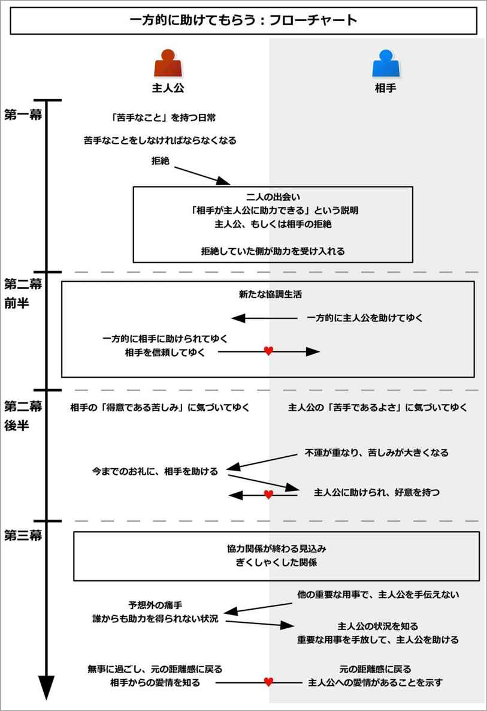
このイベントを構成するために、以下の内容について追加しよう。
以下で、それぞれについて詳しく説明する。
最初に、主人公が助力を得る相手を決めよう。
恋愛物語なら恋人役になるだろうし、バトルものなら仲間になるだろう。
次に、「主人公にとっては苦手だけど、相手にとっては得意なこと」を追加しよう。
男性の場合、勉強や学期末テストが苦手かもしれない。女性の場合は、体力を使うことや戦うことなどが苦手かもしれない。
料理や掃除が苦手かもしれないし、人付き合いが苦手かもしれない。人を喜ばせるようなプレゼントを選ぶこと苦手かもしれないし、朝早く起きることが苦手かもしれない。
そのように、主人公は「苦手なこと」を持つ。
一方で、相手は逆にそれを得意だとする。
これは、「相手が得意なもの」という設定から考えてもよい。
そのように、主人公の欠点を補完するような性質を、相手に持たせよう。
それでは実際に、このイベントの流れを見てゆこう。
イベント冒頭では、「主人公の苦手なこと」と、「主人公が楽しみにしていること」の二つが示される。
「主人公の苦手なこと」では、主人公はそれをすることにはうんざりしていて、場合によってはそれから逃げている日常が示される。
例えば勉強が苦手な場合、主人公は勉強をサボっているだろう。料理が苦手な場合、コンビニ弁当などで済ませているだろう。
なお、ここでは「なぜそれが嫌いなのか」は説明されない。友人や仲間から「どうして嫌いなの？」と訊かれても、「嫌いなものは嫌いだから」などと、理由を語らないようにしよう。
それが、中盤の盛り上がりにつながってゆくことになる。
その一方で、「主人公が楽しみにしていること」も示される。
主人公は何かを楽しみにしているだろう。
週末の休みに外出することや、夏休みに遊びに行くこと、スポーツ大会で活躍することなどを楽しみにしているかもしれない。
この「苦手なことを嫌っている度合い」と「楽しみにしていることへの期待度」が高ければ高いほど、次に起こる「苦手なことをしなければならない」という状況に緊迫感を与えることができて、魅力的な冒頭にできる。
ここでは例として、子どもとのやりとりが苦手な主人公で見てみよう。
主人公の青年は一匹狼で、子どもとのやりとりが大の苦手だとする。
イベント冒頭では、主人公は「子どもとのやりとりが苦手である」ということと、「年に一度の、親戚がいる土地への旅行を楽しみにしている」ということが説明される。
主人公が友人と公園を歩いていると、小さな子どもから「遊んで」と絡まれるかもしれない。そして大いに困るだろう。
友人から「お前は本当に子どもが苦手だな。どうして嫌いなんだ？」と訊かれても、主人公は「嫌いなものは嫌いなんだよ」と、理由を答えないだろう。
そんな主人公だが、親戚のいる土地が大好きで、年に一度、そこに旅行に行くのが楽しみだとしておく。
そんなある日、突然、主人公はその苦手なことをしなければならない状況に追い込まれる。
それは、試練として象徴される出来事になるだろう。
勉強が嫌いな場合、学期末テストを受ける状況になるかもしれない。
料理が苦手な場合、両親が長期海外旅行に出るかもしれない。その上お金がなくなり、弁当ではしのげなくなってしまい、自炊をせざるを得ないかもしれない。
こうして主人公は、「苦手なこと」をしなければならない状況に陥ってしまう。
子どもが苦手な主人公の例で言うと、あるとき、主人公の家では事情によって、数日後から親戚の子どもを一定期間ほど預かることになるとする。
そこで主人公は、親から「その子の遊びの面倒を見るように」と言われてしまうのだ。
主人公は、当然その「苦手なこと」をしたくないものだ。だから、それをすることを拒絶するだろう。
しかしそんなとき、もしそれを乗り越えなければ、主人公の「楽しみにしていること」が奪われてしまうことが判明する。
勉強が嫌いで夏休みを楽しみにしていた場合、もし次のテストで点数を取らなければ、補講が課せられるだろう。そうなると、楽しみにしていた夏休みが全てつぶされてしまうかもしれない。
料理が苦手でスポーツ大会を楽しみにしていた場合、栄養のあるものを食べられないと、楽しみにしていたスポーツ大会で力を出せなくなるだろう。
主人公にとっては、「楽しみにしていること」を実現するのは絶対に必要なことになる。
そのため主人公は、最初こそ自力で何とかしようとするだろう。だが、それらの努力は全て無残な結果になってしまう。
場合によっては、他に頼れる人を捜そうとするかもしれないが、無駄に終わるだろう。
こうして、その試練を乗り越えなければ、主人公には未来がなくなってしまうのだ。
子どもが苦手な主人公の例で言うと、親戚の子の面倒を押しつけられた主人公は、当然「やりたくない」と断るだろう。
だが断ると、「楽しみにしていた旅行、行かせるわけにはいかないね」と、親から脅されてしまう。
主人公は旅行を何よりも楽しみにしているため、主人公は渋々でも受け入れざるを得なくなるのだ。
たまたまその子が遊びに来ていて、主人公は自力で対処しようとするかもしれない。
だが、全くの無為に終わるだろう。その子に泣かれて、つまらなさそうにされて、主人公は落ち込まされるだろう。
ここで主人公が抱える問題と状況が整理されて、読み手に示される。
主人公は「苦手なことをしなければならなくなったが、一人ではできない」、という問題を抱えていると明示される。
他の人に頼ろうとしても、他の人は全て用事が入っていたり、事情があることで、助力を得ることはできないだろう。
そんなとき、相手が登場することになる。
その相手とは、何らかのきっかけで偶然会うかもしれないし、友人や知人から紹介されることもある。
もしくは主人公が悩んでいる時に、相手が偶然通りがかって、助けてくれるかもしれない。主人公が友人に愚痴っていると、「あの人に助けてもらうといいよ」と教わるかもしれない。また、教師や親などの権力者から、名指しで「この人から助力を得るように」と言われることもある。
相手はそれが大好きで、しかも大の得意だと言うのだ。
その上、実際に評判は高く、相手をよく知っている友人や知人は、太鼓判を押すだろう。
しかし、ここでは「主人公が拒絶する」、もしくは「相手が拒絶する」のどちらかの拒絶が引き起こされる。
「主人公が拒絶する」になる場合、相手は乗り気になることが多い。しかし主人公側に、相手から助力を受けるわけにはいかない、何かしらの理由があるだろう。
これは多くの場合、「相手に申し訳ない」という気持ちが起きやすい。一方的に助けてもらうことになり、相手にお返しができないので、申し訳なく思うだろう。
もしくは、相手と以前にケンカをしたことがあって、苦手意識があるかもしれない。相手が主人公にとってはあこがれの存在なので、反射的に断ってしまうかもしれない。相手に対して、何か後ろめたいことがあるかもしれない。
一方で「相手が拒絶する」になる場合、主人公は「天の助け」と歓迎するだろう。
しかしその一方で、相手側は、何らかの「助力をしたくない」という理由があることになる。
これも同様に、以前に主人公とケンカしたことを根に持っているのかもしれない。もしくは、主人公にあこがれているので、気恥ずかしくて断っているのかもしれない。主人公に対して後ろめたいことがあるのかもしれないし、他に用事があるからかもしれない。
こうして、助力をしてくれる相手とは出会うものの、どちらかによって一度拒絶されることになる。
拒絶する側は、「協力する方がいい」とは頭では分かっているものだ。
しかし、なかなかそれに踏み切れない。
そして他によりよい適任者がいるかを探そうとするが、そんな人など他にはいないのだ。
子どもが苦手な主人公の例で言うと、ここで主人公が抱えた問題が、整理されて読み手に示される。
主人公は子どもが苦手なのに、家で親戚の子を預かることになり、その子と遊ぶ役目を言いつけられてしまったのだ。
主人公は、友人などを頼ることで、何とか乗り切ろうとするかもしれない。
だが、友人たちは全て予定が入っているなどで、協力を得られないだろう。
そして頭を抱えて悩んでいると、主人公は友人から、恋人役となる少女を紹介されることになる。
その少女は、子どもが大好きだと言うのだ。
友人から紹介されて事情を説明すると、少女はらんらんと目を輝かせて、「じゃあ、今日一緒に幼稚園に行こう。帰りに年の離れた弟を迎えに行くんだ。一緒に遊ぼう」などと言い出すかもしれない。
あまりの積極性に、主人公はたじろぎ、「やっぱり、他の人にする」などと、他に適任者を探そうとするかもしれない。
こうして主人公は、「他に適任者がいないか、ちょっと考えさせてくれ」と拒絶することになる。
だが、そんな人など、他にはいないのだ。
そしてついに、主人公もしくは相手の拒絶していた側が、それを受け入れることになる。
ここでは、何らかのきっかけがあって、拒絶した側が自発的に「やってもいい」と思うようになる。
主人公が拒絶する場合、他に適任者が見つからずに、「これ以上一人でやろうとしてもだめだ」と判明するような、そんなタイムリミットが訪れるかもしれない。
相手が拒絶する場合、何らかの「気変わり」が起きるだろう。
主人公が一人でやろうとして失敗している姿を見て、相手は「見ていられない」と感じるかもしれない。
主人公に何らかの面で助けられることで、主人公を見直すかもしれない。
結果として、主人公は相手から助けてもらえることになる。
子どもが苦手な主人公の例で言うと、他に適任者を探していた主人公は、結局恋人役の少女以外は誰も見つからないまま、親戚の子を預かる日を迎えてしまう。
主人公は少女に頭を下げて、親戚の子と遊んでもらえるようにお願いするだろう。
少女は喜んで、少女の弟と一緒に、親戚の子の面倒を見ることを受け入れるだろう。
こうして主人公は、少女から「一方的に助けてもらう」という状態になる。
ここで、主人公は相手との新たな日常を始めることになる。
主人公は相手と一緒の時間を過ごすようになり、新しい日々が描かれる。
勉強が苦手なら、放課後の教室で、二人で勉強をして過ごすようになったかもしれない。下校も一緒にするようになったかもしれない。
料理が苦手なら、相手が主人公の家に来るようになったかもしれない。一緒に夕飯を食べるようになったかもしれない。
そして、主人公は相手から一方的に助けられることで、目標に挑んでゆけるようになる。
相手の協力を得る上で、二人は接点を増やしてゆくだろう。
その過程で、二人に対して、様々な問題が起こるだろう。
しかし、そんな問題に対して二人で力を合わせて乗り越えてゆくことで、二人は互いを知り、絆を深めてゆくことになる。
同時に、主人公の目的を達成するために、仲間が登場するかもしれない。
その仲間となる人物は、最初こそ主人公もしくは相手を敵視して、攻撃するかもしれない。しかし主人公たちとのやりとりを経て、その人物も主人公に協力する仲間になってゆく。
そして仲間とも力を合わせて、主人公が抱える問題を達成できるように、一つ一つ困難を乗り越えてゆくことになる。
この部分を長くしたい場合は、適宜サブプロットを用いて構築するとよい。
子ども嫌いな主人公の例で言うと、主人公は恋人役の少女と新たな時間を過ごすようになるだろう。
学校が終わった後、親戚の子と一緒に幼稚園に向かい、少女の弟や他の子と遊ばせるだろう。
子どもが苦手な主人公は、終始少女に頼りっぱなしかもしれない。主人公が何かお礼をしようとしても、少女は「私が好きでしているから」と受け取ろうとはしないだろう。
そのような、新たな日常が描かれる。
その過程で、二人に何らかの困難が降りかかるだろう。
親戚の子や少女の弟が、風邪を引いてしまうかもしれない。迷子になるかもしれないし、高い場所から降りられなくなるかもしれない。
そんな問題を、二人で力を合わせて乗り越えてゆく。
そして主人公と少女は、より深い接点を持つようになってゆく。
また、少女の弟や家族などとも知り合ってゆくだろう。
最初こそ、彼らは主人公を嫌うかもしれないが、主人公と接して助けられてゆくことで、主人公の仲間になってゆくだろう。
そのようにして、主人公は少女や仲間たちと共に、「期日まで、親戚の子の面倒を見る」という目標を実現してゆくことになる。
ここまでで、主人公は相手と十分な絆を結んだことだろう。
中盤のターニングポイントで、その絆があることで、互いが抱える事情に踏み込んでゆくことになる。
その事情とは、主人公にとっては「なぜそれが苦手なのか」、相手にとっては「なぜそれが得意なのか」という内容で象徴されやすい。
ふとした折に、主人公は相手に、「なぜこれが好きなのか」、「なぜこれが得意なのか」と尋ねるだろう。
すると、そこから相手の意外な事情を知るのだ。
それは多くの場合、相手は「実は、いつも好きというわけではない」、「犠牲にしたことも多くあった」と告白することになる。
もしくは、最初は好きではなく、誰かに喜んでもらうために、わざと好きなように見せかけていたのかもしれない。
勉強が好きで得意な場合、相手は勉強ができなければ生きていけないような、そんな厳しい家庭環境だったのかもしれない。でも、いい成績を取ると親が喜んでくれたので、親を喜ばせるために「勉強が好き」と演技していたのかもしれない。
そして相手は、「一度でいいから、勉強を放り出して、遊園地で遊んでみたかった」などと夢を語るかもしれない。
料理が得意な場合、相手の両親は共働きで忙しくて、自分でせざるを得なかったのかもしれない。両親に心配をさせないためにも、「料理が好き。だから自分でできる」と演技していたのかもしれない。
そして、「一度は誰かの手料理や、レストランの料理を味わってみたい」と伝えるかもしれない。
もちろん、相手は「今では本当にそれが好きになった」と言い、それは真実になる。だが、「そればっかり」ということに苦しんでいるようにするとよい。
主人公はそんな一面を知り、相手が他の誰にも打ち明けないような苦しみがあることを知ってゆく。
一方で、相手は主人公のことを知ってゆくことで、苦手であることにもメリットがあると知ってゆくだろう。
勉強をしないことで、主人公は悪友たちと遊んだ、輝かしい思い出を語るかもしれない。子ども時代の英雄譚や冒険談、戦果などを話して聞かせるかもしれない。
料理が苦手でも、美味しく味わうコツを身につけたかもしれない。いろんな店の味を知ったかもしれない。
すると、相手は主人公のそんな日常をうらやむだろう。
そして二人は、互いに新たな世界を知ってゆくことになる。
子ども嫌いな主人公の例で言うと、主人公は少女に「なぜ子どもがそんなに好きなのか」と疑問に思ってゆくだろう。
すると、何らかのきっかけを経て、少女は事情を語るだろう。
それは、両親が忙しくて、小さい頃に構ってもらえなくて、ずっと寂しさを抱えていたからかもしれない。弟にはそんな思いをさせたくなくて、精一杯面倒を見ているのかもしれない。
だから、「今では本当に、子どもが好きになっちゃった。でも、一度でいいから思う存分、甘える側に立ってみたいかも」などと、寂しく笑うかもしれない。
主人公は、少女が抱える深い孤独と寂しさを知り、驚くことになる。
一方で、少女は主人公に「なぜ子どもが嫌いなの？」と問いかけるだろう。
ひょっとすると、主人公も少女と同じ理由なのかもしれない。幼い頃から一人で寂しかったから、どう付き合ったらよいのか、分からないのだと。
ただ、一匹狼でいることで、主人公は自分と対話する時間を得たかもしれない。
それで、「誰もがみんな、孤独なんだと思う。でも、とことんまで孤独になると、優しくできるようになるんだ」と、自分なりの人生哲学を語って聞かせるかもしれない。
それを聞いて、少女は「そんなことまで考えてるんだ。すごいな。私はずっとばたばたしてて、そんなこと考えたことすらなかった」と、主人公をうらやましく思うだろう。
こうして二人は、互いの世界を知ってゆくことになる。
ここから少しずつ、主人公は「相手が抱える苦しみ」を知ってゆくことになる。
相手は、「得意なことをする」ことにも、少しだけ疲れる時が来るものだ。
たとえそれが好きであったとしても、そういう瞬間があるものだ。
ここでは短期間で次々と不運が重なることで、そんな疲れが相手を襲うことになる。
その不運とは、「努力が無駄になる」ということで起こりやすい。
勉強が得意な場合、相手は努力をして勉強をしたり、教えようとするだろう。しかし体調の悪さや心配事が重なって、相手はいい成果が出せなくなるかもしれない。
料理が得意な場合でも、スーパーが休みで、遠くまで買い物に行かざるを得ずに、疲れるかもしれない。せっかく努力して作ったものが不運な事故で台無しになってしまい、作り直さなければならないかもしれない。
そういう不運が重なることで、相手はどんどん疲弊してゆくだろう。
しかしそんなときでも、相手は「頑張らなきゃ」と、自分に鞭を打って行動しようとするのだ。
主人公はそんな相手に力を貸そうとするだろうが、相手は断るものだ。というのも、主人公は「それが苦手」なのだから。
結果として主人公は、何も力を貸すことはできずに、無力感を募らせてゆくことになる。
ここで主人公は、「助けられる一方」であることに対して、決別することを決意する。
それによって主人公は、何らかの行動を起こし始めるだろう。ただし、この行動や何をするのかは、読み手には伏せられやすい。
主人公は、相手を助けるために、準備を整えてゆくだろう。
そして「助けられるばかり」であるという、最後の時間を過ごしてゆく。
ついに、主人公が相手のために行動を起こす日が訪れる。
主人公は立ち上がり、「助けられるばかり」という関係を壊してゆくことになる。
子ども嫌いな主人公の例で言うと、少女は弟の世話にも疲れる時が来るものだ。
それは、ちょっとした不運の積み重ねになるだろう。
弟のためにしたことが、裏目に出てしまうかもしれない。
弟が「お父さん、お母さんと一緒にいたい」などと、叶えられないわがままばかりを言って泣いて、少女を悩ますかもしれない。
必死に親代わりをしようとしても、それでも弟を満足させられないかもしれない。
少女は「自分も甘えたい」、「自分もわがままを言いたい」という欲求を押し殺して、それでも、「もっと頑張らなきゃ、もっと努力しなきゃ」と、無理をしているだろう。
主人公はそんな少女に何もできずに、無力感を味わってゆくことになる。
主人公が少女を手伝いたくても、主人公にとっては苦手なことでしかないから、苦しみを肩代わりしてあげることすらできないのだから。
ここで主人公は思い立ち、そんな少女を助けようと、陰で行動を起こしてゆく。
そんな、「一方的に助けられるばかり」となる最後の時間を過ごしてゆく。
そしてついに、準備が整い、行動を起こす時が訪れる。
主人公は少女を助けるために、立ち上がるのだ。
中盤の盛り上がりでは、主人公によって相手が助けられる、という流れが用いられやすい。
相手は不運が重なり疲れが爆発しそうになったとき、主人公が相手を助けることになる。
相手が勉強が得意で、「一度でいいから、遊園地で遊んでみたかった」と言っていた場合、主人公は勉強を忘れさせて、遊園地へと連れて行くだろう。
相手が「一度は誰かの手料理や、レストランで味わってみたかった」と言っていた場合、家族や友人に作ってもらったり、レストランに連れて行くだろう。
主人公は、そんな「ちょっとした恩返し」をすることになる。
そこは、いわば主人公が得意とする分野だ。主人公は相手に遊び方や楽しみ方を教えて、思う存分楽しんでもらうことになる。
相手は、最初こそ「そんな時じゃない」などと抵抗するかもしれない。しかし、主人公は強引に退路を断ち、「もう戻れない。行くしかない」と連れ出すのだ。
相手は最初こそ、渋々従うだろう。
だが、すぐにそれは、夢のような時間へと変わる。
今まで何度も夢に見た瞬間を思う存分味わい、楽しみ尽くした後、相手は「主人公を助けているようでいて、自分が助けられた」と感じることになる。
子ども嫌いな主人公の例で言うと、決行前日の夕方、不運が重なった少女は、ついに哀しさを抑えきれなくなる時が来るだろう。
そして、叶えられないわがままを言って困らせる弟から逃げ出して、陰で「私だって、甘えたいのに......！」と、涙を流すかもしれない。
そんなとき、主人公は少女を助けるために行動を起こすのだ。
その翌日、戸惑う少女を強引に連れ出して、主人公は少女とデートをすることになる。
主人公の手配は完璧だろう。弟の世話は、主人公の家族に任せるだろう。
また、少女の両親からも確約をもらっているだろう。主人公は少女の両親から、「私たちが娘の苦しみに気づけなくて申し訳ない。娘を是非頼む」との言づてと、たっぷりの軍資金と、遊園地のフリーチケットと、一流レストランの予約を預かっているかもしれない。
そして大手を振って、主人公は「今日の俺は、お前の親代わりだ。好きにわがままを言って、甘えていい。好きなことをさせてやる」と告げるのだ。
少女は最初こそ戸惑い、ためらうだろう。だが、主人公が強引に連れ出して、小さな願いを実現してゆくと、少しずつ勢いが出てくるだろう。
そして少女は、今まで夢に見た、最高の時間を過ごすことになる。
思う存分にわがままを聞いてもらい、心ゆくまで甘えて、今まで積もりに積もった全てのわだかまりを解消するだろう。
全てを満喫し終わった後、少女は「主人公を助けているようで、自分が助けられた」と感じることだろう。
ここから、主人公は相手と一緒にいる時間に、期限があることに直面してゆくことになる。
というのも、相手が主人公を助けるのは、一時的なものになる。
主人公が目標を達成すれば、相手は主人公を助ける必要はなくなるものだ。
それはすなわち、主人公と相手が一緒にいる理由がなくなる、ということだ。
ここまでで、主人公も相手も、互いに深い絆を結んでいることだろう。
だが、「もっと一緒にいたい」とは言い出せないものだ。
そして二人は、時に強がったり、時に寂しがったりするなど、ぎくしゃくしたやりとりをしてしまう。
また、一緒にいる期限を前にして、最後の時間を過ごしてゆくことになる。
ここで、その一緒にいられる期限が、タイムリミットとして設定される。
そのため、試練は「一時的なもの」や、「期限がはっきりしているもの」にするとよい。
その上で、「これが達成できればいい」という目標を設定しよう。
これが主人公たちの目標になり、これを達成するために力を合わせてゆくことになる。
なお、ここでタイムリミット直前の時期に、相手にとって重要な予定が入ることが多い。これが、クライマックスの危機を演出する前振りとなる。
子ども嫌いな主人公の例で言うと、親戚の子を預かる期日が見えてくるだろう。それによって、「相手といつまでも一緒にいることはできない」と予感することになる。
その日が近づくにつれて、主人公も相手もそれを意識してしまい、ぎこちない雰囲気を出してしまうかもしれない。
そんなとき、期日の直前には、少女には一日ほど主人公を手伝えない予定が入ることになる。それは、少女が長年楽しみに待っていたイベントだとしよう。
そのため、主人公は少女から「その日は手伝えないから」と言われるだろう。
主人公は今までの経験から、「この調子なら何とかなりそうだ」と楽観視して、「少女の助力がなくても大丈夫だよ」と受け入れることになる。
クライマックスでは、「予想外の痛手」と「代償を伴う回復」という二点が演出されやすい。
「予想外の痛手」として、主人公は計画を立てて順調に進めるだろうが、土壇場になって予想もしなかった痛手を被ることだろう。
それは、何か想定外の邪魔が入ることかもしれないし、不運な事故に遭うかもしれない。
それによって成功の計画や見込みが乱されて、主人公はこのままでは目標を達成できなくなるのだ。
主人公には、この状態を回復するほどの時間的余裕はないだろう。
子ども嫌いな主人公の例で言うと、主人公は親戚の子を預かる一定期間を終えようとする頃に、予想もしなかった痛手を被ることになる。
ここでは、今までは遊びのための数時間だけ面倒を見ればよかったのだが、丸一日面倒を見なければならなくなったとしよう。
それを回避しようとしても、主人公は無力で、何もできずに絶望することだろう。
そんなとき、「代償を伴う回復」が訪れる。
それは、相手が何らかの代償を支払えば、その危機的状況から回復することができるのだ。
その代償とは、時間を拘束されるかもしれないし、体力を使うことになるかもしれない。貴重なアイテムやお金を費やすことになるかもしれない。楽しみを失うことになるかもしれない。誰かに誤解されて、恥ずかしい思いをすることになるかもしれない。
ただし、相手がそれをしたとしても、相手自身には何らメリットはないことになる。当然、主人公には相手に与えられる、その代償にふさわしい謝礼など、持つはずがない。
だが、それが可能なのは、相手しかいないのだ。
これは言うなれば、主人公の運命を、相手が完全に握ることになる。
多くの場合、相手は偶然にも、主人公の危機的状況を知ることになる。
それを知った相手は、無意識にその代償を支払い、すぐさま行動するだろう。
そして主人公をフォローして、結果的に目標を達成させるだろう。
子ども嫌いな主人公の例で言うと、主人公はここで、丸一日ほど親戚の子の面倒を見なければならなくなってしまった。
だがその日には、少女は長年楽しみにしていた、重要な用事がある。だから少女の協力は得られない。
主人公は、頭を抱えるだろう。
実際に当日になり、主人公は一人で親戚の子の面倒を見ようとするが、全てがうまくいかないだろう。そして、大きな問題でも引き起こしてしまうかもしれない。
そんな時、偶然少女と出会うかもしれない。もしくは、友人を通して、少女は主人公の状態を知るかもしれない。
すると、少女は「どうしてそんな大切なこと、言ってくれなかったの!?」と、重要な用事を放り出してでも、主人公の元へと助力に来てくれるだろう。
少女は多くの犠牲を払うかもしれない。だが、結果として主人公は助かることになる。
主人公は何とか目標を達成して、相手から助力を得る必要もなくなった。
それによって、主人公と相手とは、昔と同じような距離感に戻ることになる。
しかし、全てが終わった後、主人公は「なぜあのとき、メリットがないのに、相手はためらうことなく主人公を助けたのだろう？」と、不思議に思うだろう。
場合によっては、それを相手に直接尋ねるかもしれない。
相手は素直に言う場合もあるし、素直に言わないこともあるだろう。
だが、主人公には分かるのだ。それは、主人公への心からの好意がなければできないことに。
こうして、主人公は相手との絆を得て、全ての問題を解決することになる。
子ども嫌いな主人公の例で言うと、結果として、親戚の子を預かる期間を無事に過ごしきったことが示される。
何とか目標を達成した主人公は、少女に感謝して、以前と同じような距離感に戻るだろう。
全てが終わった後、ふいに主人公は少女に、なぜ重要な用事を放り出してまで主人公を助けたのか、尋ねるかもしれない。
少女は恥ずかしがって、言わないかもしれない。強がるかもしれない。
だが、主人公には分かるだろう。それは、主人公への好意があるからこそ、できたことなのだと。
こうして、全ての問題が解決することになる。
このイベントは、最後に別れて終わる流れになる。
そのため、メインプロットとして用いる場合で最後をハッピーエンドにしたい場合、ここでオマケとして、何らかの再会をさせるとよいだろう。
その場合、主人公が冒頭で持っていた「楽しみにしていること」を利用するとよい。
「苦手なこと」を達成した主人公は、思う存分、楽しみにしていることを楽しんでいることだろう。
そしてその場にも、相手がいるのだ。
それによって、二人はその後もずっと一緒にいるようになった、と説明するとよい。
恋愛物語の場合、ここで告白をさせてもよいだろう。
子ども嫌いな主人公の例で言うと、親戚の子の面倒を見た主人公は、晴れて楽しみにしていた親戚のいる土地へと旅行に向かうだろう。
そこでは、親戚の家に泊まることになる。
すると、主人公と一緒に、少女と少女の弟も一緒についてきている光景を描くことで、再会したことを示すことができる。
また、主人公と少女が二人きりで、遠くから子どもたちが遊んでいる姿を見ているとき、どちらかがさりげなく告白するかもしれない。
こうしてハッピーエンドへと導くことができる。
このイベントをコメディで用いる場合、「苦手なこと」や「試練」の内容をどうでもいいことにするとよい。
どうでもいいことや馬鹿げたことに対して、真剣になればなるほどギャップが生まれて、笑いを作れるだろう。
このイベントは、場つなぎとして多く使われる。
特に、相手と親しくなってゆく第二幕前半で用いると効果的になる。
「息の合うパートナー関係になる」は、主人公と敵対している相手が、それぞれ一致団結して問題解決をしてゆくイベントになる。
主人公はイベント冒頭で、相手と激しくケンカをして、対立することになるだろう。
だがあるとき、そんな相手と協力しなければならない問題が起きる。
主人公も相手も協力などしたくないのだが、状況がそれを許さない。
また、その協力内容も、互いがあうんの呼吸を必要とするものになる。
こうして両者は、嫌い合っているが互いに協力することで、少しずつ和解をしてゆき、心を一つに合わせてゆく。
結果として対立を解決することで、両者は全ての問題を解決する流れになる。
このイベントの概要図と流れ図を、それぞれ以下に示す。
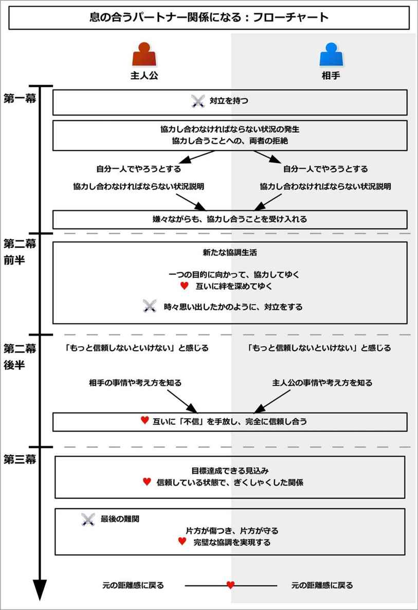
このイベントを構成するために、以下の内容について考えるとよい。
以下で、それぞれについて詳しく説明してゆこう。
まずは、協力し合う相手を決めよう。
恋愛物語なら恋人役になるだろうし、バトルものなら仲間やライバルになるだろう。
次に、協力し合う「一つの目的」を決めよう。
これは、「両者が共通して持つ性質や状況」を元に、「共通して起こりうる試練」から発想するとよい。
これは勝負や競争を含むものにすると、作りやすい。何らかの大会やコンテスト、戦いなどから発想するとよいだろう。
両者が共に学生なら、試験勉強や体育祭、文化祭、委員会の仕事のような出来事から、試練が起きうるだろう。
両者が共に好戦的な性格なら、共に脅威となる敵が現れたり、戦いができなくなることについての試練になるかもしれない。
両者が共に好むものや嫌いなものがある場合、何らかの脅威が発生することで、好むものが手に入らなくなったり、嫌いなものが近づいて来るような試練になるだろう。
両者が共に山道で迷ってしまい、無事に麓まで戻るという試練になるかもしれない。共に無人島で置き去りにされて、食料を確保するという試練になるかもしれない。
共に同じ目的地に向かう状況かもしれないし、共に同じ悩みを解決しなければならないかもしれない。
その場、その時期や時間、その状況で起こりうる「一つの目的」をリストアップしてみよう。
主人公たちは、それについて「同じ境遇の味方」として協力しなければならなくなる。
その上で、その一つの目的に対して、二人がそれぞれ協力し合わなければできない要素を追加しよう。
これは、「並列作業」を考えることで、作り出せる。
「並列作業」とは、「二人が別々に、同時に作業しなければならない」という要素である。
その目的を達成するためには、何を同時にかつ別々にする必要があるだろうか。
例えばケンカや戦いでは、「防御と攻撃」を同時にしなければならないかもしれない。もしくは、「思考と行動」を同時にする必要があるかもしれない。「休息と戦闘」や「前線での戦闘と後方支援」などの切り口もあるだろう。
試験勉強であれば、「教えることと学ぶこと」かもしれないし、「勉強と日常生活」という切り口もあるかもしれない。
無人島に置き去りにされたならば、「食糧確保と寝床確保」や「睡眠と見張り」、「獲物を追い込む役と仕留める役」などもあるだろう。
そのように、二人が同時に作業しなければならないような内容を抽出するのだ。
それによって、二人は協力せざるを得なくなる。
それでは実際に、このイベントの流れを見てゆこう。
まずはイベント冒頭で、主人公が相手と激しくケンカをするような出来事を起こしておこう。もしまだ出会っていなければ、出会った直後にケンカをさせよう。
それは些細なきっかけでよい。それによって、「二度と相手の顔を見たくない」という状況にしよう。
そして、そんな対立している日常が描かれる。
両者はいつまで経っても和解することはなく、ずっと対立したまま犬猿の仲になっているのだ。
なお、もしサブプロットとして用いる場合、主人公と相手は仲がいい状態かもしれない。
その場合でも、「この分野においてだけは、相手と張り合う関係になる」という分野を持たせるとよい。
ここでは作成例として、「冒険もので、主人公たちが無人島に取り残される物語」と、「恋愛物語で、文化祭で喫茶店をする物語」という二つの例で見てみよう。
無人島の例で言うと、主人公は、一人前の冒険者になることをあこがれている少年だとする。そして、そんな主人公には、ライバルとなる男の子がいるとする。
イベント冒頭では、主人公とライバルは犬猿の仲で、顔を合わせるといつもケンカをしてしまう状況が描かれる。
二人には師匠となる人がいるが、その師匠はいつもケンカして騒がしい二人に対して、ほとほと嫌気がさしているとする。
文化祭で喫茶店をする例で言うと、世界観は学園もので、主人公は少女だとする。恋人役に青年がいるとする。
主人公と青年は同じクラスで、文化祭で喫茶店をやることになったとする。
イベント冒頭では、文化祭前夜となり、少女と青年が文化祭のことで対立しているとしよう。
対立の理由は何でもよいが、ここでは少女が「青年がサボっている」と批難するとしよう。一方で青年が「少女がやることを作りすぎ」だと批難しているとする。
周囲のクラスメイトは「また二人のケンカが始まった」と、ため息をついているかもしれない。
そんな風に、対立している日常が描かれる。
主人公は相手といがみ合っている状態だが、そんな時、二人同時に問題が起きることになる。
それは「二人一緒に、一つの試練に巻き込まれる」という出来事として引き起こされるだろう。
二人に共通する強大な敵が現れるかもしれない。二人は共にテストでピンチになり、試験勉強と日常生活を乗り切らなければならないかもしれない。
二人の原因や事情、立場などはそれぞれ異なるかもしれない。しかし両者は全く同じ「一つの目的」を持って、対処しなければならなくなるのだ。
主人公たちはそれを避けて通ることはできずに、乗り越えなければならなくなってしまう。
無人島の例で言うと、主人公とライバルがいがみ合っているそんなあるとき、ついに師匠は我慢しきれなくなり、二人を連れ出して、船で無人島にまで連れて行くのだ。
そこは絶海の孤島で、主人公たちが逃げ出せるような場所ではない。
師匠は「二人力を合わせて、ここで生き延びろ。一ヶ月後に俺は迎えに来る。もし力を合わせない場合、お前たちは死ぬだろう」と伝えて、二人を島に放り出し、自分は船で帰ってしまうのだ。
二人は無人島に置き去りにされてしまい、島にあるものだけで生き延びなければならなくなってしまう。
文化祭で喫茶店をする例で言うと、二人が対立しているそんなとき、少女と青年に共通する問題が発生することになる。
何とか全員で喫茶店の準備を完成させるが、夜食に問題があって、クラスのほとんどが腹痛で動けなくなったとしよう。
そして元気なのが、その夜食に手をつけなかった少女と青年だけなのだ。
すると少女と青年は、クラスのみんなから、「せっかくここまで作ったんだから、お願い、二人で運営して！」と頼まれてしまうことになる。
ここでは少しでも収益を上げなければ、赤字分がクラス全員の負担になってしまうとしよう。少女も青年も、それだけは回避しなければならない。
だから、どうあがいても喫茶店の運営はしなければならないのだ。
突然降ってわいた試練に対して、二人は困惑するだろう。
その試練は、二人にとってはそれぞれ荷が重すぎるように感じるかもしれない。
敵は、一人で立ち向かうには強すぎるだろう。
そのため主人公も相手も、自分一人ではどうしようもなく、途方に暮れるだろう。
そんなとき、偶然か必然か、両者は互いが同じ目的を持っていることを知ることになる。そして協力し合うことで、互いが互いを補完し合えるとも分かるだろう。
それは各自が自分で気づくこともあるし、メンターから教わることもある。また、「二人で協力し合え」と目上の人から命令される場合もあるだろう。
しかし両者は「顔も見たくない」という間柄のため、「お前なしでもできる」とまくし立てて、別れることになる。
こうして両者は一度、互いの協力を拒絶することになる。
無人島の例で言うと、無人島に放り出された主人公とライバルの二人は、水も食べ物も自分で得なければならないことに、途方に暮れるだろう。
水源を探すだけでも、一苦労かもしれない。その上、獲物も探さなければならないし、狩猟道具も必要かもしれない。
主人公は、ライバルも同じように困っている表情をしていることに、気づくだろう。
そして、「二人で力を合わせてやれば、もっとはかどるかもしれない」と思うだろう。また、師匠の「力を合わせなければ、死ぬ」という言葉を思い出すかもしれない。
しかし二人はいつものように強がって、「俺なら一人で楽勝だ。まあ、お前にはできないだろうな」などと互いに挑発して、別れることになる。
こうして二人は、一度協力関係を拒絶することになる。
文化祭で喫茶店をする例で言うと、文化祭の喫茶店を二人きりで切り盛りしろと頼まれた少女と青年は、当然「そんなの無理」だと拒絶するものだ。
調理も必要だし、接客も必要になるものだ。休憩時のフォローも必要になるだろう。
そんなとき、クラスの人から「二人で協力し合えば、できないこともない」と言われることになる。
だが、両者は「顔も見たくない」というほどケンカしてしまっている。それでも喫茶店の運営はしなければならない。
そこで両者は、「あんたなんかいなくても、できる」と張り合って、それぞれが勝手にお客と対応することになる。
ここでいったん、主人公たちが抱えることになった問題が整理されて、読み手に示される。
両者はそれぞれ、自分一人で困難を解決しようとするものだ。
しかし、一人で解決することが不可能な状況であることが、ここで説明される。
それは、「並列作業」をしなければならないことによってもたらされる。
戦いの場合、「攻撃と防御」を同時にしなければならないという状況が説明されるだろう。しかし主人公は、一度には両方はできずに、攻撃もしくは防御の一つしかできないのだ。
試験勉強の場合、「勉強と日常生活」を同時にこなさなければならない状況が説明されるだろう。しかし主人公は、一度には片方しかできないことになる。勉強をしている間は家事ができないし、家事をしている間は勉強はできない。そんな状況になる。
これは、相手にとっても同様で、相手も同じ要素で苦しむことになる。
それによって、二人は「一人ではだめだ。協力し合わない限り、乗り越えられない」と痛感することになる。
二人はすぐに、両者の顔を思い浮かべて、「あいつも同じことで困っているんじゃないか」と想像するだろう。
しかし、ケンカをしている両者にとっては、協力するなどありえない。
「他にもっと適任者がいるはずだ」、「他にもっといい方法があるはずだ」、「同時にこなせる方法があるはずだ」と思い、他に協力し合える人や、解決方法を探そうとするだろう。
だが、他の適任者や解決方法など、ありはしないのだ。
無人島の例で言うと、ここで主人公たちが抱える問題が、読み手に整理されて示される。
主人公とライバルは、共に無人島で一ヶ月ほど生き延びなければならなくなったこと。だが、二人は対立していること。「協力し合わなければ、死ぬだろう」と師匠から言われたことなどがまとめられる。
そして主人公は自分一人でやろうとするのだが、その無人島を生き抜くには困難であると痛感するだろう。
例えば谷間の水源から水をくむにしても、水をくむ担当と、水を引き上げる担当の二人が必要になるだろう。
また、獲物を狩るにしても、追い込む役と仕留める役が必要だと分かるだろう。
そのように、「並列作業」が必要になり、必ず相方が必要な状況になるのだ。
主人公はあるとき、ライバルも同様に苦しんでいることを知るだろう。
だが、ケンカをしている分、自分から「困っている」とは言い出せないものだ。
結果、「お前なしでも、俺はできる」と強がって、協力を拒絶し続けるだろう。そして、「このままではやばい、早くいい方法を見つけないと」と危機感を持ち、進めてゆくだろう。
文化祭で喫茶店をする例で言うと、ここで状況が整理されて、読み手に対して問題が示される。
恋人役の青年が勝手に接客するのを横目に、主人公の少女は一人でやってみて、「一人だけでやるには大変すぎる」と実感するだろう。
接客と調理を交互にするのは、時間のロスが大きいかもしれない。調理スペースや道具の数にも、制限があるかもしれない。また、休憩したい時に、すぐに休憩を取れないかもしれない。
そんな風に並列作業が必要になってしまい、パートナーが必要となるのだ。
そんなとき、少女は青年がどう対処しているのかを見てみると、青年も同じように苦しんでいることに気づく。
しかし、ケンカをしている二人にとっては、「困っている」とか「協力し合おう」などとは言えないものだ。
こうして「大変そうね。私は大丈夫だけど」、「はっ、お前こそしんどそうじゃないか。俺は楽勝だけどな」などと張り合ってしまい、互いに悩むことになる。
両者はそれぞれ、自力で何とかしようとしていただろう。
だがここで何らかのきっかけがあり、二人とも痛手を負い、絶体絶命の状態に追い込まれることになる。
例えば戦いの場合、実際に強大な敵に挑み、ボロボロにされて、命からがら逃げ切ることができるかもしれない。もしくは、戦いに負けた側がその後どうなったのかを見るかもしれない。
一人で戦った人がその後どうなったのか、実際に目の当たりにするかもしれない。
二人がそのような「痛手」をありありと知った時、両者は偶然にも再会するだろう。すなわち、両者が互いに絶体絶命の状態で再会することになる。
そして、「お前のためじゃない。自分のためだ」と双方が強がることで、協力して助け合うだろう。
すると、予想以上にすんなりとうまくいくのだ。
初めて力を合わせて危機を共に乗り越えた二人は、こうして協力することを受け入れることになる。
無人島の例で言うと、ついに二人は獲物を確保できずに、腹が減って動けなくなるだろう。そして「このままだと死んでしまう」と、本気で危機感を持つことになる。
そんなとき、両者は再会するだろう。互いにやつれた顔を見て、互いの事情を知る。
同時に、二人は無人島に置き去りにされ、死んだ先人の遺骨を見るかもしれない。
協力し合わない未来をそこに見てしまい、二人は「お前のためじゃない、自分のためだ」などと強がりながらも、協力し合うことになる。
すると、いともあっさりと獲物が捕れてしまうのだ。
二人は食料を得られることに感激して、目下の「餓死する」という問題を乗り越える。
こうして二人は「ケンカを続けること」よりも「協力し合うこと」を優先するようになり、力を合わせて困難に挑むことになる。
文化祭で喫茶店をする例で言うと、接客を個別にしていた二人は、ついに限界を迎えるだろう。
お客の列がさばけなくなるかもしれないし、不満が出てくるかもしれない。その様子を見たお客が、どんどん離れていくかもしれない。
場合によっては、担任教師から「協力しなかった二人の責任は大きいから、二人には多めの赤字負担をしてもらおうか」などと脅されるかもしれない。
結果として、二人は「お前のためじゃない。クラスのみんなのためだ」と強がりながらも、協力し合うことになる。
そして調理と接客で役割分担を決めて動き始めると、いともあっさりとスムーズにこなせるようになるのだ。
二人は客をさばけることに感動するだろう。
結果として、二人は張り合うことよりも協力し合うことを選ぶようになり、力を合わせて喫茶店の運営をしてゆくことになる。
両者は役割分担を決めて、一つの目的に向かって、互いに協力してゆくだろう。
その上で、二人が目的を実現するには、ぴったりと息を合わせる必要があると分かってゆく。
それは、「相手の状態を知る」、「相手が今必要としているものを予測する」という内容になりやすい。
二人は訓練や実戦を通して、どんどんと連携をこなしてゆき、あうんの呼吸を身につけてゆくことだろう。
次第に両者の考え方も似通ってきて、相手が考える内容も分かってくるだろう。
そしてついつい、ケンカをしていることを忘れてしまうものだ。二人でうまく達成できれば旧知の仲のように喜び合い、失敗すると、哀しみを共有するかもしれない。
だが、ふとした弾みで「ケンカをしているはず」ということを思い出して、やはり強がるだろう。
そういう強がりや恥ずかしさを持つが、それでも二人は気持ちを一つにしてゆくことになる。
この部分を長続きさせたい場合、二人に引き起こす小さな試練をいくつか用意して、それをサブプロットを用いて構築するとよい。
無人島の例で言うと、協力関係をするようになった二人は、それぞれ役割分担を決めて、一つ一つ協力することで困難を解決してゆくだろう。
二人で水を確保し、二人で獲物を仕留めることができるようになる。
それでも、二人には「小さな試練」が次々とやってくるだろう。
大雨がやって来るかもしれないし、道具が必要になるかもしれない。どう猛な野獣がいて、戦って追い払う必要が出てくるかもしれない。
そんな試練が来る度に、二人は協力して、小屋を建ててしのいだり、狩猟道具を作ったり、武器や防具を準備するだろう。
成功したら、旧知の仲のように喜び合い、失敗すると、一緒に落ち込むかもしれない。
だが、ふとしたきっかけで「俺とお前はケンカをしているんだからな！ こんなに一緒にいるところを誰かに見られたら、仲良しだと思われるだろうが！」と思い出し、強がるかもしれない。
それでも、少しずつ二人は気持ちを一つにしてゆくことになる。
文化祭で喫茶店をする例で言うと、二人は調理と接客で役割分担をすることで、歯車がうまくかみ合い始めるだろう。
そんな二人に、さらに「小さな試練」が襲いかかるだろう。
休憩をする必要が出るかもしれない。接客していた主人公の少女が、不良の男たちに絡まれてしまうかもしれない。少女が服を汚してしまい、着替える必要があるのに、替えの服がないかもしれない。
そんなとき、二人は巧みな連携でそれを乗り越えてゆくだろう。
青年は少女のために作り置きをしておいたり、接客と調理を必要に応じて入れ替わるかもしれない。青年が自分の替え衣装を、少女に与えるかもしれない。
その試みがうまくいくごとに、少女は「自分がピンチになったら、青年が助けてくれる」と、青年を信頼してゆくだろう。同様に、青年も少女を信頼してゆくだろう。
こうして二人は、少しずつ気持ちを重ねてゆくことになる。
二人は協力し合うことで、何とか目標達成のめどが立ってくることになる。
目標達成をするには、もう少し効率を上げればできる状態になるだろう。
だが、両者の間にある「不信」が枷になることで、二人は最大限の力を発揮することができずにいる。
二人は上手く連携できるようになってきたが、それでもこの段階では、相手を信頼しきれていない状態になる。
自分の背中を相手に任せることができないかもしれない。もしくは、自分の命綱を相手に任せることができないかもしれない。自分の大切なアイテムを渡すことができないかもしれない。
相手に任せきることができずに、相手の動きを常に確認するかもしれない。そのため、自分の作業に集中しきれないかもしれない。
それによって、「今のままでは目標達成ができない。相手をもっと信頼しないといけない」と感じることになる。
また、それは「相手にかける言葉」として象徴されることもある。
二人には、もはや慣れっことなってしまった「挑発と強がりの応酬」があるものだ。
相手に任せる時や交代する時に、「ミスするなよ」、「お前じゃないんだから」などと応酬しているかもしれない。
力を合わせる時に、「ちゃんとできるのか？」、「それはお前だろう」などとやり合っているかもしれない。
主人公も相手も、「もっと相手を信頼できれば、もっとうまくできるのに」と感じているだろう。
しかし、未だに信頼しきれない状態であることが示される。
無人島の例で言うと、ここで少しずつ、「無人島で一ヶ月をやり過ごす」という目標達成のめどが見えてくるだろう。
二人は上手く連携できるようになってきたが、ここで「不信」が足枷になっていることで、十分に効率的に動けていないと分かる。
それは、武器や道具をそれぞれ「自分専用」にしていることがあるかもしれない。
二人は自分の武器や道具だけは相手に渡したくないが、資源が少なくて、多くを作れないとする。
もし状況に応じて、互いに有利な武器を分かち合うことができれば、狩猟や行動が大きく効率化できると知る。
だが、二人は互いに「自分の武器を壊されたらどうしよう」、「ライバルが一時的に力を持つから、裏切られて命令されたらどうしよう」などと、恐怖を抱くものだ。
こうして二人は信頼したいのだが、信頼しきれずにいることになる。
文化祭で喫茶店をする例で言うと、少女も青年も、何とか喫茶店をやり遂げるめどが立ってくるだろう。
だが、ある一つのことが気になってしまって、二人は集中できずに、最大限の力を発揮できずにいる。
それは、二人は未だに交代する時に、つい癖で「ミスするなよ」とか、「汚さないでよ」などという嫌みを言ってしまうことだとしよう。
それによって、「あんたじゃないんだから」、「それはお前の方だろう」と応酬する形になってしまうのだ。
二人は言ってしまった後に、いつも後悔してしまうだろう。
同時に、それが二人の集中を妨げる枷となって、「最後まで客を途切れさせずに満足させる」という目標達成ができない状態になる。
しかし、「任せた」、「信頼してるよ」などという言葉は、気恥ずかしくて言いたくても言えない。だから、強がって嫌みを言ってしまうのだ。
こうして二人は、互いに信頼したいのに、信頼しきれずに力を発揮できずにいることになる。
そしてついに、「一番大変な時期」を目前とすることになる。
主人公たちは目標達成のめどが見えてきたが、その前に「一番大変な時期」が予測されるだろう。
二人はそんな「一番大変な時期」を目前にして、「今以上に協力し合わなければ、未来はない」と感じるだろう。
その前夜、互いに絆を深めた両者は、ふと互いの過去や事情を知ることによって、それぞれの考え方を理解できるようになるだろう。
それによって、互いがなぜ今までのようなケンカや対立をしていたのか、その理由を知ることになる。
これは、両者がふとした休息の時に行われやすい。
相手は過去に、悔しい思いや哀しい思いをしたことがあるのかもしれない。大切な人との約束があるのかもしれない。信念があるのかもしれない。夢や希望、目標があるのかもしれない。もしくは、誰かを助けたいのかもしれない。
主人公は相手の背後にある、そんな事情を知ることになる。
それによって主人公は、相手をあざけっていたことを心の中で反省して、相手を許せるようになるだろう。
同様に、相手も何らかのきっかけで、主人公の背後にある事情を知ることになる。
二人は互いの背景事情を知ることで、いつの間にか心の中で、互いを許せるようになってしまうのだ。
そして、「一番大変な時期」は訪れるだろう。
二人は互いに乗り越えることを誓い合い、それに向かって挑むことになる。
無人島の例で言うと、島に嵐が来つつあることが分かる。二人はそんな「一番大変な時期」を前にして、夜、たき火を囲みながら「嵐を乗り越えないと、未来はない」と語り合うだろう。
そんなあるとき、主人公はふとしたきっかけで、ライバルの過去を聞くことになる。
ライバルは両親とは幼い頃に離ればなれになり、そんな両親を捜すために冒険者を志しているのかもしれない。
だから、主人公から「お前には無理だ」などと言われると、腹が立つのだと語るだろう。
同様に、別のきっかけで、主人公は自分の事情をライバルに語って聞かせるだろう。
それは幼い頃に力がなくて馬鹿にされて、「強くなりたい」と願ったのかもしれない。
こうして主人公もライバルも、相手のことを理解できるようになる。二人は互いに、心の中で「あいつの力になりたい」と思っていることだろう。
夜も明け、ついに嵐が訪れるだろう。そして二人は、「嵐を乗り切る」という大一番を迎えることになる。
文化祭で喫茶店をする例で言うと、協力し合うようになった二人は、無事に午前の部をやり過ごして、昼休みに入る。
「午後の最初が、喫茶店では一番大変な時期になる」と分かっている二人は、「今以上に協力し合わなければ、未来はない」と感じるだろう。
そこで二人が早めの弁当を食べていると、青年はふと少女に言うのだ。「昨日、少女がどうしてあんなにもやることを押しつけていたのか、理由が分かった。確かにこれぐらい準備していないと、足りないな」と。
また、「俺はこういう計画が苦手だから、分からなかったな」と、少女に言うかもしれない。
一方で少女も、「昨日、青年がサボっていた理由が分かった。こんなに忙しいと、休みたくなるよね」と言うかもしれない。
こうして二人は、互いのことを理解できるようになる。また、心の中で「この人の力になりたい」と思うかもしれない。
昼休みも終えて、ついに一番忙しい時期が訪れるだろう。そして二人は、目標を達成するために、立ち上がるのだ。
「一番大変な時期」を迎えた二人は、今まで通りで対処しようとする。
しかし、次第に状況は悪くなってゆき、最後には「このままでは共倒れになる」という危機的状況を迎えることになってしまう。
そこで主人公、もしくは相手のどちらかが、「不信を手放して、相手を信頼する」という行動に出る。
自分の背中を相手に任せるかもしれないし、自分の命綱や、大切なアイテムを相手に渡すかもしれない。
また、「そっちは任せた」と、完全な信頼を向けるだろう。
それは、「パートナーに無駄な意識を向けなくなり、自分のするべきことに集中する」という行動として実感するだろう。
それによって、主人公は相手から信頼されていると知り、互いに完全なる信頼を作り、困難を乗り越えることになる。
無人島の例で言うと、嵐が訪れて、造った小屋が吹き飛ばされそうになるだろう。
二人は協力して対処するが、「このままではダメだ」という危機的状況になる。
そんなとき、ライバルは主人公に、自分の大切にしていた武器と道具を渡すだろう。そして、「それを使え。それなら、きっと大丈夫だ」と言うのだ。
それは、ライバルが完全に主人公を信頼していることを示している。ひょっとすると、ライバルにとって、それは賭けなのかもしれない。だが、信頼するしか道はないのだ。
主人公はそんな信頼を託されて、信頼で応えることになる。
主人公も、今まで渡さなかったような大切な道具をライバルに与えて、二人で協力し合うだろう。
こうして嵐を無事に乗り切ることができるのだ。
文化祭で喫茶店をする例で言うと、昼食時の午後の部が始まると、今まで通りに対処しようとするだろう。
しかし、すぐに状況は悪くなってゆき、「このままだとダメだ」と実感することになる。
そんなとき、青年は少女と交代する時に、「ミスするなよ」とは言わずに、「そっちは任せた。信頼してる」と言うのだ。
実際に青年はそれから、自分のするべきことに集中しているだろう。それは、主人公を完全に信頼しきっていることを意味する。
主人公もそんな信頼に応えて、「こっちは任せて。そっちは貴方に任せるから」と、自分のするべきことに集中する。
こうして二人は最大限の力を発揮して、困難を乗り切るのだ。
困難を乗り越えた二人は、順調に目標達成を目前としてゆく。
信頼し合うようになった二人は、今までとは少し違うやりとりをすることになるだろう。
今までのように挑発をしかけて、それをやめて、「まあ、お前にもいいところはあるし......」などと、相手を遠回しに認めることを言うようになるかもしれない。
それが相手を困惑させて、相手も主人公を認めることを、恥ずかしそうに、遠回しに言うかもしれない。
そして二人はぎくしゃくした関係になってしまい、今まで簡単にできていたことも、できなくなってしまうかもしれない。
だが二人は順調に力を合わせてゆき、困難を乗り越えてゆく。
ここで、目標達成までのタイムリミットが設定されやすい。
「ここまでしのげば、目標を達成できる」という期限を設定することで、クライマックスと物語の終わりを読み手に予感させて、緊張感を高めてゆく。
無人島の例で言うと、一ヶ月という時間が過ぎ去るまであと数日という状況になり、タイムリミットが設定される。
主人公とライバルは深く信頼し合い、順調に進めてゆくだろう。
そんなとき、主人公はライバルを慣れで挑発しようとした後で、「まあ、お前も悪い奴ではないし......」などと、恥ずかしそうに語るかもしれない。
するとライバルは思わず道具を落として、下で支えている主人公に当ててしまうかもしれない。
ライバルが謝った後で、同様にライバルも、主人公を遠回しに認めることを言うだろう。すると主人公も思わずライバルの支えを外してしまい、ライバルを高い場所から落としてしまうかもしれない。
そんな風に、ぎくしゃくした関係になりつつも、二人は師匠が戻ってくるその日まで、困難を乗り越えてゆくことになる。
文化祭で喫茶店をする例で言うと、一番大変な昼食時を乗り切った二人は、文化祭の終わりまであと少しという状況になり、タイムリミットが設定される。
少女も青年も順調に進めていくだろうが、あるとき主人公は「青年がいれば、安心だね」と、つい本音を漏らしてしまうかもしれない。
慌てて少女は「そういう意味じゃないから！」と、顔を赤らめてフォローするかもしれない。
だが、青年も「俺も、お前がいれば安心だ」と、恥ずかしそうに伝えるだろう。
こうして互いにぎくしゃくすることで、今までできていたことも、上手くできなくなってしまうかもしれない。
それでも二人は力を合わせて困難を乗り越え、タイムリミットに向けて順調に進めてゆくことになる。
クライマックスでは、目的達成を目の前にした主人公たちの前に、最後の難関が立ちふさがることが多い。
この「最後の難関」は、今までとは別次元の戦いになりやすい。
今までが行事を達成することを目標としていたら、最後の難関は、何かしらの戦いをしなければならなくなるかもしれない。
今までが戦いで勝つことを目標としていたら、最後の難関は、何かの行事を達成しなければならないかもしれない。
そしてその難関は、「最強の敵」として象徴されるだろう。
戦いの場合は、最も強い敵の親玉が登場するかもしれない。試験の場合は、最も難関の教科になるかもしれない。
今までとは次元が違う困難に対して、両者は完全に意志を一つにすることを求められるのだ。
その最強の敵を前にして、主人公たちは恐れおののき、体を震わせるかもしれない。
だが、主人公たちに、逃げ場などありはしない。相手の方から、主人公の方へと襲ってくるのだ。
主人公たちは覚悟を決めて、二人で力を合わせて、この最後の難関を乗り切ることを決意する。
そして、最後の決戦の時はやってくる。
無人島の例で言うと、ここでは最後の難関として、「海賊と戦う」という内容にするとしよう。
一ヶ月の期限が訪れる日を直前として、海賊が主人公たちのいる無人島へと降り立ち、他の船から奪った財宝を引き上げ始めるのだ。
そして海賊たちは、その拠点が誰かに荒らされていると知る。それは、主人公たちが海賊のものだとは知らずに、「いいものがあった」と使っていたとする。
海賊たちは拠点がばれたことを悟り、そして主人公たちがまだ島にいると気づくだろう。
それによって、海賊たちは「おそらく二人いる。そいつらを見つけ出し、ただちに殺せ」と動き始めることになる。
主人公たちは、次第に追い詰められていくだろう。
そしてついに追い詰められて、二人は海賊たちと戦わなければならなくなる。
この難局を乗り切るには、二人が今までよりもはるかに息を合わせる必要があるだろう。その「精密な連携」こそが、主人公たちの最も武器とするものになるからだ。
そして二人は、武器を握り、意志を一つにして、海賊たちに挑むことになる。
文化祭で喫茶店をする例で言うと、ここでは最後の難関として、「不良たちに絡まれる」ことにする。
第二幕の前半で追い払った不良たちが、逆恨みをして、集団で青年を取り囲み、校舎裏へと連れ出すことになる。
彼らは文化祭荒らしで有名で、青年がそのターゲットになったのだと説明される。
少女は校舎から、「どうしよう、どうしよう」と頭を抱えて、青年を見つめるだろう。
こうして二人は、不良たちと戦わなければならなくなってしまうのだ。
主人公たち二人は、「最後の難関」と戦い始めるだろう。ここからがクライマックスになる。
だが、そんな二人に、大きな試練が訪れることで、二人は完全に分かり合えることになる。
ここでは、そんな変化のきっかけとして、「片方が傷つくこと」が多い。
そして動けなくなるなどのハンディキャップを背負うことで、逃げられない状況になるだろう。
片方が傷つき、動けなくなるかもしれない。片方が病にかかり、力を出せなくなるかもしれない。
そんな状況なので、傷ついた側は自分が目標を達成できないことを悟り、「自分はもうダメだ。お前だけでも生き残れ」と伝えるだろう。
すると、もう片方はわだかまりを捨てて、相方を守るだろう。身を挺してかばったり、相方の分まで作業をしたり、食料を差し出すだろう。
傷ついた側は、「どうして守る！」などと強がるだろうが、「そんなことを言っている状況じゃない」と諭されることになる。
そんなとき、「二人でこう力を合わせれば、二人とも乗り切れる」というわずかな可能性が示される。だが、それを実現するには、両者が完璧な協調をしなければならない。
多くの場合、守る側は「お前と一緒にいるのは、悪くなかった」と素直になることだろう。
その流れで、傷ついた側も素直になるだろう。
こうして両者は和解して、完全に意志を合わせて、最後の試練を乗り切ることになる。
無人島の例で言うと、主人公たち二人は、精密な連携で海賊たちを次々と倒してゆくだろう。
しかし、最後に残った海賊の親玉を前にして、ライバルは事故によって足を怪我してしまい、動けなくなる。
主人公だけでは、親玉に勝てないのは明白だ。だから、ライバルは主人公に「俺はいい、お前だけでも逃げろ！」と言うだろう。
だが、主人公はライバルを守る。そしてわずかな隙を突いて、ライバルを抱えてその場から離れるだろう。
ライバルは「どうして守る！ すぐに追いつかれるだけだ！」と叫ぶだろう。一方で主人公は、「そんな場合じゃない」と説得する。
そして、主人公は「俺は一撃だけなら親玉の攻撃を止めることができる。ここで俺は、親玉の一撃を受け止める。その隙にお前が上から攻撃すれば、親玉に勝てる。これしか道はない」というわずかな可能性を示す。
しかし、それをするには、完全に意志を合わせなければならないのだ。それは、二人が完全に相手を信頼して、命を相手に委ねなければできないことだろう。
ライバルも、覚悟を決めて、それを受け入れるだろう。そして二人は、「お前と一緒にいるのは、悪くなかった」と、最後の最後で、互いに素直になるだろう。
結果として、二人は寸分違わぬ見事な連携を成し遂げて、海賊の親玉を倒すことになる。
文化祭で喫茶店をする例で言うと、青年は不良たちと戦いつつ、走り出すだろう。
そして青年が追い込まれそうになると、少女が上から見て、「そっちにいる！」と指令を与えることになる。
少女が目となることで、青年は次々と倒してゆけるだろう。少女もフライパンなどを持って、参戦するかもしれない。
だが、最後に青年と少女は追い詰められる。また、少女は武器を失い、青年は目くらましの砂を投げつけられて、一時的に目が見えなくなるだろう。
青年は少女に、「お前だけでも逃げろ！」と言うだろう。しかし少女はそれを拒絶する。
そこで少女が青年のすぐ後ろで「私が貴方の目になって、敵の方向と距離を伝える。それで貴方が戦えば勝てる」と、わずかな可能性を示す。
「これまで狭いキッチン内で、何度もぶつからずに入れ替わった。互いの姿を見ずとも、何度も皿を渡し合った。そのステップ、その息づかいを使えば、できなくもない」と言うのだ。
青年も覚悟を決めて、その策を受け入れるだろう。二人は、「お前と一緒にいるのは、面白かった」と素直になるかもしれない。
そして二人は、一心同体となるほどの連携を発揮して、不良たちと戦う。
それを見ている周囲の人たちには、まるで二人がキッチン内で軽やかなステップを踏んでいたり、皿の受け渡しをしているかのように見えるかもしれない。
こうして二人は、見事な連携で不良たちを全て撃退することになる。
全ての問題を解決した両者は、目的を達成し、協力し合う必要はなくなるだろう。
それによって、二人は以前のような距離感に戻ることになる。
二人は再び、些細なことで対立するかもしれない。
だが、二人の間には絆が生まれていて、両者は今まで以上に信頼できるようになっているのだ。
無人島の例で言うと、ちょうど一ヶ月目が訪れて、師匠が島に訪れると、師匠は驚くだろう。
二人は満身創痍ながらも、一ヶ月を生き抜いた上に、たった二人でお尋ね者だった海賊たちを全滅させたのだから。
海賊たちは、逮捕されるだろう。そして二人は波乱に満ちた試練を乗り切ったことになる。
日常に戻った二人は、やはり些細なことでケンカをして、師匠を悩ませるかもしれない。
だが、それは今までのような無配慮なケンカではない。ケンカをしつつも、互いの根底には、強い絆と信頼があるのだ。
こうして全ての問題が解決することになる。
文化祭で喫茶店をする例で言うと、全ての困難を乗り切った二人は、クラスの全員から盛大に祝ってもらうかもしれない。また、文化祭でも優秀賞を得るかもしれない。
文化祭を終えた二人は、以前のような距離感に戻るだろう。
二人は何らかの出来事で、再びケンカをするかもしれない。
しかしそんなケンカも表面的なことだけで、根っこの部分では二人の間に信頼が芽生えていて、深い絆で結ばれていることになる。
このイベントをコメディで用いる場合、イベント冒頭でのケンカを極端なものにさせるとよい。
両者が嫌えば嫌うほど、後に続く出来事でのリアクションも大きくなり、笑いを作り出せるだろう。
このイベントは、相手との出会いや、仲良くなるための過程など、場つなぎのサブプロットとして用いられることが多い。
第一幕から第二幕前半で多く用いられる。
このイベントは最後に別れることになるため、メインプロットで用いる場合、必要に応じて再会させて、ハッピーエンドに導くとよい。
「立場が入れ替わる」は、主人公と別のキャラクターにおいて、立場が入れ替わることで変化を作り出すイベントである。
イベント冒頭で、主人公と相手とは、何らかの軸で意見の相違を抱え、対立することになる。
そんなとき、何かしらのきっかけで、互いの立場が入れ替わってしまう。
主人公は、実際に相手側として動かざるを得なくなることで、相手の事情を知り、考え方や行動を変えてゆく。
一方で相手も、主人公側として動くことで、主人公の事情を知り、主人公を受け入れてゆくことになる。
結果として、両者は和解して、助け合うことで問題を解決する流れになる。
このイベントの概要図と流れ図を、それぞれ以下に示す。
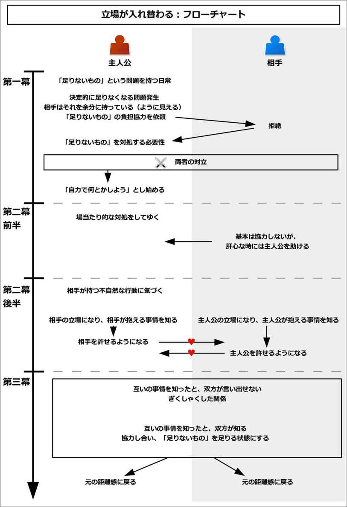
このイベントを構成するために、以下の流れで考えるとよい。
以下で、それぞれについて説明してゆこう。
まずは主人公と対立する相手を決めよう。
恋愛物語ならば恋人役になり、バトルものなら主人公が仲間に引き入れたい人物になるだろう。
次に、「主人公と相手との対立」を作ろう。
このイベントでは、ただ単純に「腹が立ったから」という理由だけでケンカさせてしまうと、立場が入れ替わった時に納得できなくなる。
精神的な要因ではなく、「相手の立場になれば、誰でもそう行動するようになる」という、物質的な要因が必要になる。
そこで、まずは「物質的に足りないもの」という要素を設定しよう。
対立とは、資源が十分にないことから起こるものだ。すなわち、「十分になくて、足りない」から対立が起こることになる。
それは、時間が十分にないことかもしれないし、お金が十分にないことかもしれない。能力や人手、気力や体力、必要なアイテムの数や量、土地や場所、人脈など、様々なものがあるだろう。
例えば、主人公と相手にとって「食料が十分にない」というだけでも、十分に対立を生む要因になる。
そのような「物質的に足りないもの」を設定しよう。
そして、なぜそれが足りないのかという事情を、両者それぞれに設定しよう。
例えば、「足りないこと」として、「人手が足りない」を選んだとしよう。
ならば、主人公側と相手側で、それぞれ「なぜそれが足りないのか」という理由を考えてみよう。
恋愛物語の例で言うと、主人公の少女は、まだ幼い弟を保育園に迎えに行かなければならないかもしれない。両親は共働きで、他に世話をできる人がいないかもしれない。
一方で恋人役の青年は、入院している母親の世話をするために、病院に行かなければならないかもしれない。青年の家でも、青年以外には世話ができる人がいないかもしれない。
こうすることで、共に「人手が足りない」という潜在的な事情を抱えることになる。
後は、両者に対して、「事情を語れない理由」を追加しよう。
これは精神的な理由にするとよい。
先の恋愛物語の例で言うと、主人公は優等生で、言い訳をしたくない性格なのかもしれない。弟を溺愛していることを、恥ずかしいことだと思っているからかもしれない。
一方で恋人役の青年は、学校では冷たい性格で通っているので、優しさを持っているという側面を見せたくないのかもしれない。「マザコンだ」などと誤解されたり、見下されるのを恐れているのかもしれない。
それによって、両者は事情を語れないことになる。
このように、「物質的な事情を持ち、精神的な理由で言い出せない」という構図を作ることが、このイベントでの鍵となる。
それでは実際に、このイベントの流れを見てゆこう。
イベント冒頭で、主人公はある日、何かしらの「物質的な足りないもの」という潜在的問題を抱えることになる。
何らかの原因で、人手が不足するかもしれないし、食料が不足するかもしれない。アイテムの数が残り少なくなるかもしれない。
そんな問題が発覚して、主人公は足りない中でも、何とかやりくりをしようとするだろう。
主人公はそんなギリギリの状態で、毎日を何とかやり過ごしている状態が描かれる。
ここでは、恋愛物語の例で見てみよう。
主人公の少女は、年の離れた弟を溺愛しているとする。
だがある日、弟の幼稚園への送迎を気軽に引き受けてしまい、放課後の時間が大幅に制限されてしまうことになる。
それによって、他の活動に対しては「時間が足りずにできない」という問題を抱えることになる。
ここでは主人公は他にも、様々な用事や仕事があるとしよう。
主人公は優等生で真面目な性格なので、「引き受けたからには全うしたい」と思うだろう。
こうして主人公は、慢性的な「時間が足りない」という状態に陥ることになる。ただし、ここでは何とかやり過ごすことができているとする。
だがある日、「新たな問題」が発生して、主人公はどうしてもその「新たな問題」をこなせない状況になってしまう。
それは、「足りないもの」がさらに必要となるような出来事が起こるのだ。
人手が足りない場合は、もっと人手を必要とするような事件や事故、トラブルが起こるかもしれない。食料が足りない場合、大いに腹を空かせるような出来事が起こるかもしれないし、もっと食料を必要とする人が出てくるかもしれない。アイテム数が足りない場合、そのアイテムをさらに必要とする事態が起きるかもしれない。
すると、主人公はどうしても、自分だけではそれを解決しきれなくなってしまう。
恋愛物語の例で言うと、主人公が時間のなさで窮しているそんなとき、主人公は教師から委員会の仕事を押しつけられるとしよう。
恋人役として青年がいるが、「青年と一緒に委員会の仕事をしろ」と教師から命令されてしまうのだ。
すると、主人公は弟の送迎があるため、どうしても委員会の仕事を早く切り上げないといけなくなる。委員会の仕事という「新たな問題」に、時間が足りずに対処しきれなくなってしまうのだ。
こうして主人公は、自分だけではその新たな問題を解決できなくなってしまう。
主人公が「新たな問題」に対処しきれずに困っているとき、相手が登場する。
主人公から見ると、相手はふんだんに「主人公が足りないもの」を持っているように見えるものだ。
だから、主人公は相手に対して、自分の代わりを負担してもらうように依頼するだろう。
しかし、相手はむげに断ることになる。
主人公は相手に「なぜ協力してくれないのか」と理由を問いかけるが、まともな理由など返ってこない。
主人公にはとても重要な事情がある。それなのに代わってもらえないため、相手の狭量さに腹を立てることだろう。
ただし、相手から「なぜできないのか」と問われると、主人公も「事情を語れない精神的な理由」によって、本当のことを言えないものだ。
それによって、両者は事情を語れずに、互いの裏にある事情を考えられない状況になる。多くの場合、「相手に正当な理由などない」と思い込むものだ。
こうして二人は、「足りないもの」という軸において、「相手はそれをできるはずなのに、してくれない」という対立をすることになる。
なお、次の状況説明に時間がかかる場合、ここでは奇跡的に代役が見つかるなどで、乗り切るようにするとよい。
それによって、状況を読み手に説明できる時間を確保できる。
恋愛物語の例で言うと、主人公の少女は、恋人役の青年に、「私は時間がないの。だから、委員会の仕事を代わりにやってもらえないかな？」と頼むだろう。
しかし、青年は「嫌だ」と、その要求を無慈悲に突っぱねるだろう。
主人公が「どうしてできないの？」と理由を問いかけると、相手は視線をそらせて、ごまかすだろう。
その様子から、「青年には、明らかにろくな理由などない」と予想できるだろう。
一方で青年が主人公に「ならなぜお前はできないんだ？」と問いかけると、主人公は上手く答えられないものだ。弟を溺愛しているなどと知られるのは恥ずかしいので、「とにかく大切な用事があるの！」と、一点張りだろう。
主人公も青年も、互いの主張を受け入れることなどできず、「少しぐらいやってくれてもいいじゃない」、「お前がやれよ」、「私は忙しいの！」、「俺だって！」、「どうせ遊びで忙しいんでしょ！」、「お前こそ楽をしたいだけだろう！」などと、双方の妥協線が見いだせない状態になる。
ただしこのときは、奇跡的に友人に代わってもらうことなどで、何とかやり過ごすことができるとする。
ここでいったん、状況説明が行われる。
主人公は、友人や知人、メンターなどに相談することで、事情を再度整理して、読み手に今の状況を示すだろう。
主人公には慢性的な「物質的に足りないこと」があり、新しい問題を対処しきれなくなってしまった。
ただし、相手が主人公の分まで協力してくれれば、主人公は助かる。
だが、その相手は主人公の肩代わりをしようとしない、という問題が示される。その上、その理由はどうやらなさそうなのだ。
場合によっては、メンターから「素直に自分の事情を打ち明ければ、分かってくれるんじゃないのか」と提案されることもある。
しかし主人公は、「そんなこと恥ずかしくて、相手には言えない」と、精神的な理由を元に拒絶することになる。
そして、「何とか解決策を見いださないといけない」と、主人公の目的が提示される。
場合によっては、「いつまでなら何とか対処できる。それまでに、何とかしなければならない」と、期限として設定されることもある。
だが主人公にとっては、それを一人で対処することは、到底難しいことになる。
主人公は「相手が助けてくれれば、全部解決するのに」と思うだろう。
しかし相手は、そんな主人公を助けようとはしないのだ。
恋愛物語の例で言うと、ここで再度、読み手に状況を整理して示すことになる。主人公が友人に相談することで、整理するとよい。
主人公は弟の送迎を引き受けてしまい、慢性的に時間不足な状態であること。さらには委員会の仕事まで押しつけられたこと。そして相方である青年が手伝ってくれないことが説明される。
友人からは、「素直に事情を青年に言えば、分かってくれるんじゃないかな？」と提案されるかもしれない。
しかし主人公は、「そんなこと、恥ずかしくて言えるはずがない。弟を溺愛してると知られると、きっと彼は学校中に言いふらして、私が笑われようになる。もしくは弱みを握られて、いいようにされてしまう」と、それを拒絶することになる。
主人公は、他にいい解決策がないか探そうとするだろう。
だが、他にいい解決策など思いつかず、「青年が助けてくれればいいのに」と思うばかりだろう。
ここで何らかのきっかけがあることで、主人公は相手と決定的な対立をすることになる。
それは、再び「足りないこと」が必要になることによって、引き起こされるだろう。
主人公は「今度こそ」と、手を変え品を変え、あらゆる方法で相手に頼むだろう。
だが、相手は無慈悲に突っぱねる。
その態度に主人公は怒って、「もうお前には頼まない！」と自分から切り捨ててしまうのだ。
そして主人公は、無理をしながら自力で対処せざるを得なくなってしまう。
恋愛物語の例で言うと、委員会の仕事が本格化して、今まで以上に時間がなくなるだろう。
そして主人公は「今度こそ」と青年に頭を下げてお願いするが、青年は素っ気なく拒絶するだろう。
他にも、賄賂を渡そうとしたり、お菓子や食べ物で釣ろうとしたり、機嫌を取ろうとするかもしれない。
それでも青年は、主人公に協力することを拒むのだ。
その態度から、ついに主人公は「少しぐらい手伝ってくれてもいいじゃない！ もう貴方には頼まないわよ！」と、怒ってしまう。
主人公は、その仕事を持ち帰りで処理するかもしれないし、早朝に来てこなすことになるかもしれない。
こうして主人公は、無理をしながら対処せざるを得なくなってしまう。
主人公は相手に腹を立てつつも、問題を対処しようと、その場その場で対策を実行してゆくだろう。
だが、それには多くの犠牲を伴うものだ。
友人に一人ずつお願いすることで、少しずつ信用を失っていくかもしれない。お金を使って解決する場合、お金がどんどん減ってゆくだろう。アイテムを使って解決する場合、大切な代用品がどんどんなくなってゆくだろう。
最もよい解決策は、「相手が主人公に協力してくれる」ということだ。だが、それは何度お願いしても、してもらえない。
そして主人公は、場当たり的な問題解決を続けてゆくことになる。
なお、この部分を長く持たせたい場合、サブプロットを用いて構築するとよい。
その場合、主人公には新たな問題が、次々と襲いかかるだろう。
相手は「自分もそれが十分にないのに、面倒をかけさせやがって」などと言いながらも、肝心なところで主人公を助けることになる。
こうして、主人公は相手との絆を深めてゆく。
また、主人公を邪魔するような人物も出てくるかもしれない。しかし、その人物とのやりとりを通して、仲間としてゆくだろう。
なお、ここでは敵に当たる人物は、相手になる。そのため、主人公は相手から助けられて絆を深めつつも、相手が根本的な部分で協力してくれないことに対して、怒りを溜めてゆくことになる。
恋愛物語の例で言うと、主人公は友人に一人ずつ委員会の代役をお願いして回るだろう。
だが、それを続けていると、友人たちから「自分だけ委員会を全然せずに、友人に押しつけている」と、悪いうわさが立ち始めるだろう。
主人公は「この方法も、あと数回使うのが限度だ。どうしよう」と頭を抱えるものだ。
肝心の青年は、何度依頼してもなしのつぶてになる。そのため、主人公は腹が立ってしょうがないだろう。
ただし、本当に主人公が苦しんでいる時には、「俺も忙しいのに......」とため息をつきながらも、青年は助けてくれるだろう。
こうして、主人公は青年と絆を深めてゆく。
しかし、青年は根本部分までは助けてくれないので、主人公にとっては不満が残ることになる。
主人公は、何とかしようとするだろう。しかしそれでもいい解決策は見えずに、場当たり的な解決を続けることしかできないのだ。
中盤のターニングポイントで、主人公は相手の不自然な行動に注目してゆくことになる。
相手は主人公への協力を断り続けているが、主人公から見ると、正当な理由はないように感じられるものだ。
そこで主人公は、相手の様子を観察し始めるだろう。
すると、相手は主人公にとって、不可解な行動をしているものだ。
何かを気にしているかもしれないし、何かを隠しているように見えるだろう。
ここから主人公は、相手が正当性を持たないことを証明するために、動いてゆくことになる。
場合によっては、周囲から「相手は大変な状況にいるらしい」と聞くかもしれない。だが主人公は、「そんなの、協力しないための言い訳作りでしかない」と、聞く耳を持たないだろう。
恋愛物語の例で言うと、ここから主人公は、青年が放課後に、すぐに下校することに気づくだろう。
青年は、何か別の荷物を抱えているかもしれない。
主人公はそれを見て、「用事があるように見せかけている、演技だ」と思い込むだろう。実際に青年に「それは何？」と問いかけても、ろくな答えは返ってこないのだから。
ここで主人公は、「青年の素性を知り、ろくな用事がないことを証明すれば、自分を手伝わざるを得なくなる」と画策することになる。
ここから主人公は、相手の真実を突き止めるために、行動を開始してゆく。
そしてついに、「どうやら相手は、この時間にここで何かをしているらしい」と、相手が抱える真相に近づくことになる。
主人公は、それを決行する日を決めるだろう。もしくは、「近いうちに判明する」と予測するだろう。
こうして主人公は、相手を嫌いでいられる最後の瞬間を迎えることになる。
そしてついに、当日が訪れる。
ここで主人公は、「立場が入れ替わるきっかけ」に触れることになる。
これは、主人公が自発的に行動を起こす場合もあるし、相手の事情に巻き込まれる形になる場合もある。
主人公が自発的に行動をする場合、相手を尾行することで、相手が事情を抱えている場面に出会うだろう。
相手の事情に巻き込まれる場合、第三者が主人公を相手と勘違いして、相手の事情が起きている現場へと連れて行くかもしれない。
他にも、相手が体調を崩すことで、主人公は渋々、相手の家にまで向かわなければならないかもしれない。
それによって主人公は、相手の立場になるのだ。
恋愛物語の例で言うと、主人公は「青年は放課後に、どこかでサボっているはずだ。それを突き止めよう」と思い、調査を始めるだろう。
そしてついに、「青年は、放課後に知り合いと待ち合わせをして、バスでどこかに向かっているらしい」と判明する。
主人公は、青年を尾行して、サボっている現場で「やっぱりサボっているんじゃない！」と批難することで、協力を得ようとするだろう。
こうして主人公は、青年と対立していられる最後の瞬間を迎えることになる。
その当日、主人公は青年を尾行するだろう。
だがタイミング悪く、青年は教師に呼ばれてしまい、知り合いとの待ち合わせの場所から一時的に席を外すだろう。
主人公が青年のいた場所に向かうと、そこでちょうど青年の知り合いが駆けつけることになる。
知り合いは、主人公がその場にいることに気づいて、「君は彼の代役？ 早くしないと、バスに間に合わなくなる！」などと伝え、主人公の手を強引に引っ張るだろう。
主人公は反論する余裕もなく、強引に見知らぬ病院へと連れて行かされることになる。
主人公はそこで、相手が抱えている深い事情を知ることになる。
相手の境遇を知り、相手は極めて厳しい状況にいると判明する。
家族が病で倒れていたり、誰かの面倒を見る必要があるかもしれない。多くの仕事や家事、用事をこなしたりする必要があるかもしれない。大切な人を失い、哀しい状態にあるかもしれない。大きなトラブルに巻き込まれて、もがいている状態かもしれない。
主人公はその場にいる周囲の人から、相手について知るだろう。
彼らは一様に、「すごいよね、あの人。こんなに大変な状況なのに、愚痴一つこぼさずにやっている。尊敬するよ」などと、褒め称えるだろう。
事情を全く知らなかった主人公は、相手が抱える苦しみや哀しみに触れることで、驚くだろう。そして、今までの自分を恥じ入るかもしれない。
もしくは、こんなに大切な事情を抱えながら、何も言わなかった相手に怒りすら覚えるかもしれない。
恋愛物語の例で言うと、主人公は強引に病院へと連れて行かされて、そこで青年の家庭が抱える事情を知るだろう。
父親はおらず、母親が倒れて、青年は一人で家族を支えていることを知らされるだろう。母親が働けないので、青年は学校に通いながらも、バイトを掛け持ちしてしのいでいるかもしれない。
知り合いや看護師からは、「それなのに彼、文句の一つも言わずにやっているのよ。すごいわ」などと話を聞くかもしれない。
事情を知った主人公は、青年の母親と話をするだろう。場合によっては、母親からも「あの子は、素敵な息子」だと感謝されるかもしれない。
こうして主人公は、青年を許せるようになるのだ。同時に、「どうしてこんな大切なこと、言ってくれなかったんだろう」と、腹を立てるかもしれない。
主人公は自発的に、「私にできることがあったら、言ってください」と協力を申し出るだろう。周囲もそれに甘えて、主人公に頼るだろう。
ここでまた、相手も同様に、主人公側の立場に立つことで、立場が入れ替わることになる。
なお、必ずしも同時に入れ替える必要はない。
まずは主人公が相手の立場を知り、その後しばらくしてから相手が主人公の立場を知る、という流れでもよい。
主人公と同様に、相手も主人公側の事情に触れて、主人公を見直すことだろう。
恋愛物語の例で言うと、青年も、何らかのきっかけで主人公の立場に立たされることになる。
青年が待ち合わせの場所に戻ってくると、主人公の手帳が落ちていることに気づくかもしれない。その中には、幼稚園に迎えに行かなければならないことや、手伝いのスケジュールがびっしりと記されているだろう。
青年は待てども迎えが来ないので、病院に向かうことになる。
青年は「こんなにスケジュールがあるのに手帳を落とすと、きっと少女は困っているだろう」と思い、その途中に幼稚園に寄って、主人公に手帳を渡そうとするだろう。だが、そこには主人公はおらずに、主人公の弟と出会うことになる。
幼稚園の人は、一様に「主人公さん、こんなに大変な状況なのに、文句一つ言わずに笑顔でやって、すごいわ」などと褒めて、青年に事情を語るだろう。
こうして、青年は主人公の事情を知り、許せるようになる。同時に、「どうしてこんな大切なこと、言わなかったんだ」と、腹を立てるかもしれない。
青年は、自発的に「俺にできることがあったら、言ってください」と、協力を申し出るだろう。周囲もそれに甘えて、青年に頼るだろう。
ここから、両者が和解してゆく流れになる。
互いの事情を知った両者は、互いに罪悪感と敬意を抱えながら、どう言い出そうか悩むかもしれない。
それは、「自分だけが、相手の事情を知ってしまった」という気持ちから引き起こされることになる。
主人公は、「今まで、ひどいことを言ってしまった」と、一人自省の念を持つかもしれない。
謝りたいが、今まで対立していたからこそ、何らかのきっかけがなければ言い出せないのだ。
二人は今までと同じように、表面的な対立をし続けるかもしれない。
しかし心の底から怒ることなどできずに、両者はぎくしゃくした関係をすることになる。
なお、ここで読み手に対して、解決までのタイムリミットが設定されやすい。
それは、「いつ頃に、二人が互いの事情を知ったことが明かされる」という予測として設定されるだろう。
それによって、読み手にクライマックスの到来を暗示することができる。
恋愛物語の例で言うと、互いの事情を知った両者は、互いにどう言い出そうか、悩むだろう。
病院帰り、主人公は公園で一人、悩むかもしれない。
青年に対する深い反省と共に、「言ってくれない青年が悪い」、「自分も悪かった」と、様々な思いを巡らし、悩むだろう。
そこで、偶然にも主人公は青年とばったり出くわすことになる。
二人は「ケンカしていた」ということを思い出して、いつものように相手を責めようとするだろう。
しかし、互いにすぐに収まって、ケンカもできなくなるだろう。
ここでは、「二人が自分の家や病院に戻ったら、互いが互いの事情を知ったとして、全てが解決する」というタイムリミットを設定できるだろう。
ここからクライマックスにかけて、互いが「互いの事情を知った」と知ることになる。
主人公は相手の立場になり、上手くこなすことができただろう。そんなとき、ふと自分の重大な用事を忘れていたことに気づくかもしれない。
それで慌ててそちらに向かうと、全てが解決しているのだ。
不思議に思って周囲に尋ねると、「相手がそれをしてくれた」と知るだろう。
これは相手にとっても同様になる。
こうして両者は、互いが「互いの事情を知った」と知ることになる。
その後、両者は再び会い、事情を語り合うだろう。
片方は「どうして言ってくれなかったの！」となじり、片方は恥ずかしがりながら事情を語るだろう。
またその直後に、「そういうお前こそ」となり、両者の事情が明かされることになる。
恋愛物語の例で言うと、主人公が青年との別れ際に、「お前、手帳を落としただろう？」と青年から渡されるだろう。
そこでふと、弟を迎えに行く時間がとっくに過ぎていると気づくのだ。
慌てて幼稚園に向かうと、弟は無事に家まで送り届けられていて、他の用事も全て解決しているのだ。
そしてそれは、青年が解決してくれていたと知るだろう。
同様に、青年も慌てて病院に向かうと、母親の世話を含めて、全て解決しているのだ。
翌日、両者は学校で出会うだろう。そして、「どうしてあんな大切なことを、言ってくれなかったの！」、「お前こそ！」などと、互いを責めるかもしれない。
その後、両者は恥ずかしがりながらも、事情を語り合うだろう。
主人公は真面目なので、「頼まれたことは全うしたかった。あと、弟を溺愛していると知られるのが恥ずかしかった」と事情を伝えるだろう。一方の青年も、「マザコンだと思われるのが嫌だった」と明かすだろう。
そして二人は、和解することになる。
互いの事情を知った二人は、協力し合う流れになる。
二人が上手く力を出し合うことで、「足りないものが足りる状態にする」ことができると知るのだ。
これは言うなれば、「一つのオレンジを巡って、姉妹がケンカをしていた。しかし、姉はケーキを作りたくて皮が欲しかった。妹は実を食べたかった。互いが事情を知って、解決できた」という流れと同じである。
それによって、力を合わせて協力することで、二人は「足りない」という問題を解決することになる。
恋愛物語の例で言うと、相手の事情を知ったら、互いに協力し合って行動できるようになるだろう。
主人公は弟に、青年は母親に事情を説明して、二人は「学校外で、弟の迎えと母親の世話をする役」と「学校内で、委員会の仕事をする役」を交互に担うという解決策を導き出せるかもしれない。
後は、委員会の仕事を期限まで果たせば、問題は解決される。
委員会の仕事を全てやり遂げた主人公たちは、共に祝うだろう。
また、弟の送迎は、主人公の母親が都合よくできるようになったり、青年の母親は退院するなどで、イベント冒頭で抱えた問題も解決することだろう。
こうして両者は、全ての問題を解決することになる。
問題を解決した二人は、以前の状態に戻るだろう。
しかし、二人は以前よりも、より深い絆で結ばれていることになる。
このイベントでは最後に別れる形になるため、もしメインプロットで用いる場合、この後に何らかの再会を組み込めばよい。
恋愛物語の例で言うと、全ての問題を解決した二人は、以前の距離感に戻るだろう。
だが、二人は以前よりも、より親密になっていることだろう。
メインプロットで用いる場合、その後、二人は家族ぐるみの付き合いをするようになって、ハッピーエンドに導くこともできるだろう。
このイベントをコメディで用いる場合、前半の部分がコメディになる。
前半では大変さの悲壮感をなくして、ドタバタにすることで、コメディとして用いやすくなる。
このイベントは、サブプロットで用いることが多い。
その場合、抱える問題は全て「一時的な問題」にすると使い勝手がよくなる。
つまり、全ての問題を「一時的に足りなくなる」とするのだ。
これによって、キャラクター設定に柔軟性を加えて、「一時的なイベント」として処理することができる。
例えば「主人公には、年の離れた弟がいる」という設定を追加すると、メインプロットに影響が出る場合も多いだろう。
そこで、その設定を一時的なものにするのだ。
具体的に言うと、「いとこの子を一時的に預かっていて、幼稚園に迎えに行かなければならない」とすることもできるだろう。
いとこでなくとも、「近所の顔なじみの人から頼まれた」という事情でもいいだろう。
そうすることで、キャラクター設定の変更を最小限で済ませることができ、どんな物語にでも適用できるイベントにできる。
「実力に差が出る」は、主人公が相手との間で、実力に差が出ることによって起こるイベントである。
主人公と相手は力が対等か、もしくは相手の方が優位な状態になる。
そんなとき、主人公は力を発揮できて貢献できるのに、相手だけが全く役に立たない状況に陥ってしまう。
それによって相手は焦り、必死に努力をするが差は縮まらず、自己嫌悪に陥る。
相手は自分の存在意義に苦しむことになるが、結果として自分の活躍できる場があると知ることで、問題解決をすることになる。
このイベントの概要図と流れ図を、それぞれ以下に示す。
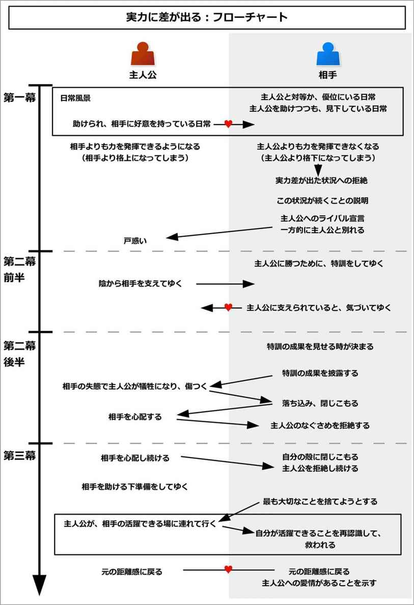
このイベントを構成するために、以下の内容について考えるとよい。
以下で、それぞれついて詳しく説明しよう。
最初に、主人公に嫉妬する相手を決めよう。
その相手とは、多くの場合、恋人役や仲間などの、主人公にとって身近で親しい人物になる。
次に、主人公が持っている優れた能力を一つ決めよう。
その能力とは、主人公が最も得意とする能力だろう。
バトルものなら「この武器が強い」という特技になるだろう。恋愛物語なら「人に好かれる」とか、「明るい」、「器用にこなせる」、「成績がいい」といった特徴や特技などもあるだろう。
ネガティブなことでも、裏を返せば全て特技になる。
「いつも孤独」なら、裏を返すとそれは「一人でも寂しくない」とか「人に嫌われてもはねのける強さがある」と言えるかもしれない。
「悩みがちな性格」なら、裏を返すとそれは「毎日を真剣に生きている」、「悩みながらも前に進んでいる」となるかもしれない。
そのように、優れた能力を一つ決めよう。
最後に、主人公が能力を十分に発揮できて、相手は全く役に立たない状況を作ろう。
バトルもので、主人公が白魔法使いで、相手が剣士だったとしよう。すると、「傷ついた人たちが苦しんでいる場面」を作ることができるかもしれない。
主人公が弓使いで、相手が剣士の場合、「遠距離での戦い」を設定できるだろう。
恋愛もので、主人公が不良の青年、相手が明るい少女だとしよう。
ならば、「誰にも頼れない場面」や「みんなが仲良くはなれないような場面」を作ることができるかもしれない。例えば、どうあがいても平和に解決できないケンカや対立など、人間が激しく争っているような場面を設定できるだろう。
すると、主人公ばかりが貢献して、相手は全く役に立たなくなる状況を作ることができる。
それでは実際に、このイベントの流れを見てみよう。
イベント冒頭では、主人公は相手と一緒に、同じ目的を持って行動している姿が描かれる。もし出会っていない場合、出会わせて、打ち解けさせておこう。
ここでは、相手は主人公と力が対等か、もしくは相手の方が格上な状態になる。
それは主人公や周囲の人たちも承認済みで、相手自身もその力を誇りに思っていることだろう。また、その力は周囲の人たちを喜ばせているような、価値のある力になる。
また、この力は、相手にとっては「それを取ったら他には何も残らない」というような、そのキャラクターが最も愛していて、喜びや生き甲斐を感じている力になりやすい。
サブプロットで用いる場合、「この状況では、相手からこれを取ったら何も残らない」という風に、状況を限定した形にするとよい。
キャラクターによっては、鼻を高くしすぎて、それができない主人公を見下して笑っているかもしれない。
それでも主人公が危機ともなると、相手は真剣に主人公を助けて、守っている姿が描かれる。
相手はどんなときでも、そんな風に主人公を支えるだろう。だから主人公は相手を心から尊敬して、素直に好意を持っていることになる。
ここでは具体例として、「剣で戦うファンタジーの冒険もの」と「青年と少女が不良と戦う恋愛物語」の例で見てみよう。
剣で戦う冒険ものの例で言うと、ファンタジー的な世界観の冒険もので、主人公が勇者、仲間が剣士だったとしよう。
イベント冒頭では、主人公である勇者と、相棒である剣士は共に、「街の依頼を受けて、賞金を稼ぐ」という目的を持っているとしよう。そして二人は協力し合い、生きているとする。
ここでは、剣士の方が実力は上だとする。
その剣士は、「剣なら俺の方が格上だ」と自負しているだろう。一方で主人公もその実力差は了解済みで、「お前には敵わないよ」と笑って受け入れているだろう。
剣士は得意げに「こういう技術はできるか？」などと言って、それができない主人公をあざ笑っているかもしれない。
剣士は剣だけが取り柄なので、「剣士からそれを取ったら何も残らない」というほど、剣を愛して、喜びを感じているとする。
そんな態度を取りつつも、主人公の危機には全身全霊で助けて、自分よりも弱い主人公を守るのだ。
剣士はなんだかんだ言いつつも、自分よりも力を持たない主人公を、全力で支えて、守っている。主人公が怪我でもしたら、真剣に心配をするだろう。
そんな剣士に、主人公は純粋に好意を持っているとする。
不良の青年と優等生の少女の例で言うと、主人公が不良の青年で、相手が優等生の少女だったとしよう。世界観は普通の学園もので、恋愛物語だとする。
イベント冒頭では、二人が一緒になって、様々な学校の問題を解決するように依頼される、そんな日常が描かれる。
少女も青年も、生徒や教師から頼られるのが、この上なく幸せだとする。
特に少女にとっては、「少女からそれを取り除くと、何も残らない」というほど、誰かの面倒を見ることが好きだとしよう。
少女は優等生なので頭の回転も速く、生徒たちに勉強を教えて、教師からの仕事依頼もそつなくこなして、優遇されるだろう。
一方で青年は、体力しか取り柄がなく、頭が悪く、書類も苦手で、頼りにならないかもしれない。
少女はそんな青年に、「もっと私を見習って、勉強しなさい」などと笑っているかもしれない。青年は、「少女には敵わないよ」と笑って受け入れているだろう。
そんな態度を取りつつも、少女はしっかりと青年に勉強を教えて、青年を助けている姿が描かれる。
青年はそんな風に助けてくれる少女に、純粋に好意を持っているだろう。
また、少女自身も、自分の優れている点を誇りに思っているだろう。
そんなある日、主人公たちは新たな環境に入ることになる。
その環境では、主人公の持つ力だけがもてはやされて、逆に相手の力が全く役に立たなくなるのだ。
時に、主人公が「こんな能力、実生活では何の役にも立たない」と思っていたような無駄な才能が、極めて大きな役に立つこともある。
勇者と剣士の冒険ものの例で言うと、ここで主人公たちは、新たな街に訪れるとしよう。
その街では、今までの敵とは違う魔物に襲われているのだ。
その魔物は、「魔法剣」を用いなければ倒せないとしよう。
魔法剣は、使い手の魔力に反応して、威力が変わるとする。だから、剣と持ち主との相性によって、大きな力の差が出るとしよう。
すると、今までは剣士の方が敵を倒せていたのに、この街では圧倒的に主人公が倒せるようになってしまう。
主人公は今まで、「魔法剣なんて、何の役にも立たない」などと思っていたかもしれない。それが、急に大きく役立つことになるのだ。
一方で剣士は、今までは力でねじ伏せていただけなので、この町では全く魔物を倒せずに、役立たずになってしまう。
不良の青年と優等生の少女の例で言うと、少女と青年は生徒会の依頼で、風紀委員を一時的に担当することになる。
そして、「他校から来る不良たちを追い払う」という仕事をしなければならなくなってしまう。
他校の不良たちは、少女の言うことなどには一切耳を貸さないだろう。むしろ「女に何ができる」とあざけって、少女をおびえさせるだろう。
そこで青年が少女を守りつつ、不良と戦い、追い払うだろう。
青年は突如として力を発揮できるようになり、活躍し始める。その一方で優等生の少女は、青年に頼ってばかりで、何も活躍できなくなってしまうのだ。
ここで、相手による「実力差が出たこと」に対する拒絶が行われる。
相手は今まで主人公と対等か、もしくは優位に立っていただけあって、うろたえることになる。
周囲は主人公ばかりを、「我々が待ち望んだ英雄だ」と持ち上げるだろう。
一方で相手は、周囲から「口先だけの能なし」だという烙印を押されてしまい、見下されるだろう。
時に、主人公だけが好待遇を得ることもある。
それは、今まで主人公よりも優位に立っていた相手にとっては、主人公の方が格上扱いされるのは耐え難いことであり、「あり得ない」ことになる。
そして、「こんなのはたまたまだ」、「この環境だけが特別だから、たまには主人公に花を持たせるのもいい」などと言って、ごまかすだろう。
そのように、相手は既に立場が逆転しているにもかかわらず、自分が主人公と対等であるか、格上であることを維持しようとするものだ。
勇者と剣士の冒険ものの例で言うと、ここで剣士が現状を否定することになる。
突如として活躍できなくなった剣士は、「この街だけが、特殊なだけだ」、「たまには勇者にも活躍してもらわないと」、などと強がるだろう。
しかし、周囲の人はどんどん主人公を英雄扱いをする一方だろう。
それによって、主人公だけが「街を救ってくれる英雄」だとあがめられて、豪華な宿や食事を提供されることになる。
一方で剣士は、「口先だけで敵を倒せない、無能者」だとののしられて、粗末な宿屋で、粗末な食事をしなければならなくなるのだ。
不良の青年と優等生の少女の例で言うと、ここで少女が「ありえない」と拒絶することになる。
今までは少女の方が立場的に上で、周囲から褒められていたのに、突如として青年ばかりが周囲から認められるようになるのだ。
少女は強がって、「たまには青年にも花を持たせないと」などと、自分の優位性を維持しようとするだろう。
だが内心は焦っていて、「何とか自分も役に立たないと」と必死だろう。
そして少女は無理にでも不良たちを追い払おうとするが、全て失敗してしまう。
ここでメンターによって、主人公と相手に対して、新たな状況説明がされる。
メンターは、その新たな環境に属する人になるだろう。
そこでメンターが、「世界中のどこでも、この状況がしばらく、もしくはずっと続くことになる」と説明するのだ。
すなわち、「これから世の中全てが、主人公の才能を求めるようになる」、「相手が活躍できるのは、ごく限られた場所でしかなく、それはもうじきなくなる」と示されることになる。
例えば主人公が回復が得意で、相手が戦いが得意なら、「和平交渉が成り立った。これから、戦いは急激に減ってゆく。だが治癒を求める人は、どんどん増えてゆく」と言われるかもしれない。
主人公が戦いに強く、相手が勉強に強いなら、「優等生でも活躍できる場は学校だけだ。社会では、誰もが一人で戦わなければならない」などと言われるだろう。
本当は、それは真実ではない。いわゆる「ごく一部でしか成り立たない、ローカルルール」になるものだ。
もしくは、メンターが相手の増長した態度を改めさせるために、わざとそのような嘘をつくこともある。
しかし真実味を持たせて語ることで、主人公や相手、読み手は「全ての世界でそうなる」と思い込むことになる。
それによって、相手も読み手も、「今までの相手は、貢献していたようでそうでなかった」、「相手はごく限られた場しか知らずに、そこで意気揚々としていたんだ」と錯覚することになる。
それが、相手に「本当の自分は、役に立たない無力な人だ」という自覚を引き起こすことになる。
ただし、ここでは相手はそれを受け入れようとはしないものだ。
場合によっては、相手は焦り、自分も今までの力を応用して何かの点で役に立とうとしたり、活躍しようとするだろう。
だが、それらはことごとく失敗することになる。
勇者と剣士の冒険ものの例で言うと、街の長老から、主人公たちは説明を受けるだろう。
長老は、「これからどんどん、魔法剣でしか通用しない魔物が増えてゆく。あの街もこの街も、最初は『魔法剣の使い手など、必要ない』と思っていた。だがどんどん世界は変わってゆく。もはや、魔法剣を扱うのは必須だ」と語るだろう。
それによって、剣士は衝撃を受けることになる。今までの剣士は、狭い世界で威張っていただけだと知るのだ。
本当は、その長老は極めて狭い、この地域周辺のことしか把握していない。だが、主人公も剣士も、読み手も「全世界でそうなる」と信じ込むことになる。
剣士は「ありえない」と焦るだろう。
そして力ずくでも敵を倒そうとするが、魔法剣を使いこなせない剣士は、全て失敗することになる。
不良の青年と優等生の少女の例で言うと、ここで青年と少女が共通して信頼する、メンターを登場させるとする。
そのメンターは医者などの、社会人だとしよう。
すると、そのメンターは「優等生で威張っていられるのは、学校だけだ。現実では、大切なものを奪われないように実力で身を守る、そんな戦いがほとんどだ」などと二人に語るだろう。
本当は、そのメンターは「少女に、青年を見下すことはやめさせよう」と思って、優しさから少女をたしなめたことになる。
しかし、あまりにも真実味を持たせて話すことで、少女も青年も、読み手も「優等生では何の役にも立たない」と思い込むことになる。
少女は勉強や知識を利用して、不良を追い払う方法がないかと考えるかもしれない。
しかし、全て失敗することになる。
ここで何らかのきっかけがあって、相手は「自分と主人公の間で、力の差がついてしまった」と受け入れることになる。
そのきっかけとしては、「どん底まで落ちる」という出来事に象徴されるだろう。
今まで認められていたことが、全て認められなくなるかもしれない。一番認めて欲しい人から、敬遠されてしまうかもしれない。大切な地位やアイテムを失ってしまうかもしれない。
それによって、相手は「自分と主人公の間で、実力差がついてしまった」と認めざるを得なくなる。
相手は今まで自分が得意だった分野を、主人公に逆転されてしまい、盛大に悔しがるだろう。
だが、相手もすんなりと、主人公に対して「負けました」と言えるものではない。
それによって、相手は「自分のその技をマスターする！」、もしくは「それに代わる能力を身につける！」と思い立つことになる。
多くの場合、相手は主人公をライバル視して、主人公に対して対抗することを宣言するだろう。
主人公にとっては、「別に対抗するようなものではないだろう」という感覚になる。だが、相手のプライドがそれを許さないのだ。
時に、「今日から俺とお前は敵同士だ！」と、絶縁宣言を伴うこともある。
結果として、主人公は相手からの挑戦状を、一方的にたたきつけられることになる。
勇者と剣士の冒険ものの例で言うと、街の人たちから最低の扱いを受けた剣士の仲間は、ついに落ちるところまで落ちるだろう。
ここでは、剣士は街の対魔物部隊から、「剣士はいらない。邪魔だから戦いに参加するな」と拒絶されるとしよう。
それによって、主人公との間で実力差がついてしまったことを受け入れて、主人公に対して「俺も魔法剣を扱えるようになる！」と宣言することになる。
また、「それまでは、お前は俺の敵だ。この街では今後一切、協力し合うことはない！」とも告げるだろう。
主人公にとっては、剣士に対しても対抗意識などないため、無理矢理剣士からの挑戦を押しつけられる形になる。むしろ、そんな剣士を心配するほどだろう。
こうして主人公は、「二人の間で実力差がついてしまった」という問題を抱えることになる。
不良の青年と優等生の少女の例で言うと、ついに少女は、生徒会から「風紀委員は、青年一人だけでいいんじゃない？」などと言われてしまう。
それはプライドの高い少女にとっては、どん底に落ちたことを意味する。
こうして少女は、青年との間で実力差が出てしまったことを受け入れざるを得なくなる。
そして、「今に見ていなさい！」、「今日から貴方と私は敵同士よ！」などと、青年に対して対抗宣言をすることになる。
青年は「対抗するようなことでもないのに」という感覚なのだが、少女は「学校で自分が青年よりも格下だ」とは、プライドが許さないのだ。
結果として、青年は少女から一方的に、目の敵にされてしまう。
ここから、相手の怒濤のような修行が始まる。
主人公はのんびりしながら、居心地のよい空間を満喫するだろう。そしていつもの調子で楽に活躍して、成果を出してゆくだろう。
一方で相手は、主人公に対抗するために、日夜不眠不休で努力や特訓を重ねてゆくものだ。
そして、相手は「ついにできた！」と、何らかの成果を見せるかもしれない。
だが、実戦や現場では、それは一切役に立たずに終わることになる。
主人公は、相手からあからさまな嫉妬を受けるかもしれない。
主人公を恨んだり、「これができない私は最低だよね」と自嘲したり、活躍する主人公に対して陰から「うらやましいなぁ、できる奴は」とぼやくかもしれない。
この部分はコメディとして構築されやすい。コメディとして表現する場合、相手の嫉妬を、極端に表現するとよいだろう。
勇者と剣士の冒険ものの例で言うと、ここから剣士の怒濤のような修行が始まる。
剣士は過酷な訓練を自分に課して、それを乗り越えてゆくだろう。
一方で主人公は、それを心配しながらも、街の人から要望がされるがままに魔物を倒してゆくだろう。
主人公はますます地位を固めてゆく一方で、剣士は主人公に嫉妬しつつも、陰でひたすら努力を重ねることになる。
不良の青年と優等生の少女の例で言うと、ここから少女の特訓が始まる。
体力をつけようとして走り込みをしたり、戦い方を学ぼうとしたり、必殺技を身につけようとして特訓するだろう。
そんな少女を尻目に、青年は不良たちと戦い、追い払うことになる。
そして青年はますます生徒会や生徒たちから信頼され、少女はどんどん疎外感を味わってゆくだろう。
少女は青年に嫉妬しつつも、特訓の量を増やしてゆく。
相手は「こんな程度ではだめだ、追いつけない」と、主人公に追いつこうとして、努力に努力を重ねるだろう。
しかし、主人公は楽々とそれができるのに、相手はどれだけ努力してもできないのだ。
多くの場合、その努力は見当違いの努力になる。どんなにその修行や訓練をしても、力の差は埋まらないようなものになりやすい。
だが、主人公がどれだけ「それじゃ力はつかない」と言っても、相手は信用しないものだ。そして自分の方法論に固執することになる。
この部分を長持ちさせたい場合、サブプロットを用いて構築するとよい。
その場合、相手は「実力差を埋めるために、まずはこれをできるようになる」と、問題を細分化して、部分的な目標を作り、それに挑む形にするとよい。
そしてそれを達成するために、主人公が陰ながら手伝うようにするのだ。
主人公は、相手に対しての対抗意識など持っていない。むしろ、相手に力を得て欲しかったり、元気になって欲しいものだ。
だが、相手は主人公に対抗意識を燃やしているので、主人公の助力を拒否するものだ。
そのため、主人公はこっそり援助を差し出したり、「相手のためにやっているわけではない」、「相手も、主人公に助けられているわけではない」とフォローするなりごまかすなりして、主人公は陰から分からないように相手を助けてゆく。
最初こそ、相手は「主人公に助けられている」とは気づかないだろう。主人公自身に助けられたとしても、「偶然だろう」と納得するものだ。
だが、何度も助けられるにつれて、偶然が重なるにはあまりにも不自然だと気づいてゆく。
そして何らかのきっかけで主人公が絡んでいることを知り、主人公に助けられていることを知るだろう。
相手は、複雑な心境で、その支援を受け取るだろう。強がってはいるが、やはり相手も、主人公の優しさに気づいているのだ。
主人公の陰なる支えもあり、相手が小さな目標を達成してゆくごとに、両者はより絆を深めてゆくことになる。
勇者と剣士の冒険ものの例で言うと、「こんなんじゃだめだ」と感じた剣士は、修行量を増やしてゆくだろう。
だが、主人公や読み手から見ると、どんなにその修行をしても、魔法剣を扱えるようにはならないように演出される。
主人公はそれとなく、「その修行では力はつかない」と修正を促すかもしれないが、剣士は聞く耳を持たないだろう。
その努力が実らないことを知りつつも、主人公はそんな剣士のひたむきさを知っているので、剣士に知られないように食事を置いて行ったり、宿を用意したりと、こっそりと助け続けるだろう。
また、時に剣士は、魔物に対して無茶な戦いに挑むかもしれない。そして絶体絶命の状況に陥ったところを、偶然を装った主人公や、主人公が手配した仲間によって助けられるだろう。
最初こそ、剣士はそれらの助けが自分の人徳であったり、運がいいなどと、「これも自分の実力だ」と思っているだろう。
しかし度重なる「都合のよすぎる偶然」に、次第に主人公が自分に対して気を配っているのだと知ってゆくことになる。
剣士は強がりながらも、主人公の優しさに気づいてゆくだろう。
こうして二人は、英雄と落ちこぼれという正反対の地位を得つつありながらも、そして距離が離ればなれになりつつありながらも、絆を深めてゆくことになる。
不良の青年と優等生の少女の例で言うと、少女は「もっと頑張らないと、力はつかない」と思い、特訓の量を増やすだろう。
青年から見ると、どんなにそんな特訓をしても、力はつかないと分かるだろう。だが、青年がどんなに言っても、少女は聞く耳を持たない。
青年はそんな少女を気にして、少女に悟られないようにしつつ、「せめて怪我をしないように」と細工をしたり、暑さで倒れないように水筒を置いたりと、手助けしてゆくことになる。
また、少女が危険に陥った場合、青年は偶然を装って助けるだろう。
最初こそ、少女は「私を応援してくれるファンがしてくれた」、「妙な偶然が多い」と勘違いするかもしれない。
だが、度重なる「偶然」に、次第に青年が少女を助けてくれているのだと気づいてゆく。
少女は青年に対して表面的には強がりながらも、青年の配慮と優しさに気づいてゆく。
こうして二人は、少女が小さな目標を達成してゆくごとに、絆を深めてゆくことになる。
ここから中盤の盛り上がりにかけて、相手はその力を「自分にはできない」と受け入れて、落ち込むまでの流れになる。
相手は主人公に対して、「いつに成果を見せる」もしくは「いつに決着をつける」などと、修行に期限を設定することが多い。
相手はその成果発表の日に向けて、準備を重ねているのだ。
そして、その前日が訪れることになる。
相手は「約束通り、成果を見せてやる」と、主人公の前に現れるだろう。時に、何らかの特別なアイテムなどを持ち、自信を窺わせるかもしれない。
主人公はもちろん相手に力をつけて欲しいものだ。だが、力があろうとなかろうと、相手は主人公と対等か、もしくは今まで自分を守ってくれた、尊敬している人には変わりない。
ここで上下関係や立ち位置にこだわっているのは、相手だけになる。
しかし相手にはそれが分からずに、一方的に主人公に対抗意識を燃やしていることになる。
だが、明日の結果次第では、相手はどうなるか分からない。
ここではそんな、「相手と今までの関係でいられる、最後の日」を過ごすことになる。
ついに、相手が成果を見せる当日が訪れる。
主人公も相手も、うまくいくことを願って、成果発表の場へと向かうだろう。
勇者と剣士の冒険ものの例で言うと、剣士は「この日に成果を見せてやる」と、主人公に宣言していたとしよう。
その前日が訪れ、剣士は主人公の前に現れるだろう。
厳しい修行を乗り越えた剣士は、新たな魔法剣を持ち、自信を窺わせるかもしれない。
主人公は今まで通りに接しようとするだろうが、剣士が拒絶するだろう。
そして「明日を楽しみにしていろ」と言って、別れることになる。
主人公も、街の人から「早く魔物を退治してください！」とせかされて、別れざるを得ないかもしれない。
こうして二人は、互いに別々に、今までの関係でいられる最後の日を過ごすことになる。
ついに発表の日当日が訪れるだろう。
主人公も剣士も、剣士がうまくいくことを願いながら、成果発表という戦いの場へと赴くことになる。
不良の青年と優等生の少女の例で言うと、少女は「この日に、鍛えた成果を見せてあげるわ」と青年に宣言していたことだろう。
その前日が訪れて、少女は青年の前に現れる。少女は修行によってぼろぼろになった姿で、「楽しみにしていなさい」と、自信を見せるだろう。
青年はそんな修行の成果などどうでもよくて、今まで通りに少女に接したいだろう。だが、それは少女の方から拒絶されてしまう。
そして青年は「不良たちがやってきた！ お願い、何とかして！」と生徒や生徒会から促されることで、少女と別れざるを得ないだろう。
こうして二人は、それぞれの思いを胸に、今までの関係でいられる最後の日を過ごすことになる。
ついに、発表当日が訪れる。
青年も少女も、神妙な面持ちでその場へと向かうだろう。
ここで、相手の成果を発表する場として、「特別な場」が設けられやすい。
それは偶然にも、何らかの別の行事や催し物、大会やバトルなどがある場になりやすい。
バトルものなら、その技を競う大会があったり、その技を必要とするような大きな戦いが起きるだろう。
他にも、その能力を大いに必要とされるような、大きな仕事や、大きな試験などがあるかもしれない。大きな問題が発生して、その能力が求められるかもしれない。
それは多くの場合、主人公ですら苦しめられそうなほどの規模になりやすい。
相手は「ちょうどいい」と、自分の実力を示そうとするだろう。
観客などいる場合、相手は大見得を切って、周囲の関心を引こうとすることもある。
ここで自信を持たせれば持たせるほど、次に訪れる落胆が大きくなり、シリアスにできる。
時が訪れて、相手は勢いよく敵に向かってゆくだろう。
結果として、相手は無残に敗北したことが示される。その場には、既に相手はいないだろう。
相手が戦い、簡単に敗れる場面は省略されやすい。
組織で動く場合、相手は貢献するどころか、むしろ足を引っ張ったことが示される。
周囲の人たちは、「あいつは口先だけだった」、「できもしないことを言って」、「結局迷惑をかけに来ただけじゃないか」などと、批難しているだろう。
そのしわ寄せは、全て主人公が負ったことが説明される。
場合によっては、主人公は負うべきではない傷を負ってしまっていたり、失うべきではないアイテム、人脈、お金、時間、信頼などを失ってしまったかもしれない。
主人公は周囲から、「災難だったな」などと言われるかもしれない。
だが主人公はそんなことよりも、この場にいない相手のことを心配しているだろう。
勇者と剣士の冒険ものの例で言うと、約束である翌日の正午が訪れて、剣士が成果を発表する時が訪れる。
しかしちょうどそのとき、町に魔物が大勢押し寄せることになる。主人公たちは街の対魔物部隊と連携して、魔物と戦わざるを得なくなる。
剣士は「ちょうどいい、俺の実力を見せてやる。みんな、見ていろ！」と大勢の前で大見得を切って、一人魔物に飛びかかってゆくだろう。
その日の夕方となり、戦いが終わったことが示される。戦いの後処理をしながら、対魔物部隊の人々は、「あの剣士は口先だけで、足を引っ張っただけじゃないか」と、口々にののしっているだろう。
その負担は全て主人公が負うことになり、剣士を守る際に、主人公は負うはずのない傷を負ってしまったと示される。
主人公は、対魔物部隊の人から「災難だったな」と気配りをされるかもしれない。
だが、主人公は傷などどうでもよく、むしろその場から姿を消した剣士のことを心配しているだろう。
不良の青年と優等生の少女の例で言うと、少女が不良たちを追い払う、成果を発表する時が訪れる。
しかしその日は、他校の不良グループの中でもリーダー格の、強い不良リーダーがいることになる。
青年は他の風紀委員や不良仲間に声をかけて、力を借りなければならない状況になるだろう。
そんなとき、少女は「ちょうどいい、私の成果を見せてあげるわ！」と、青年の制止も聞かずに、無謀にも飛び込んでゆくだろう。
その日の夕方、青年は病室で寝かされて、医者に診てもらっているだろう。「命には別状はないが、しばらくは安静に」と言われるかもしれない。
少女はその場にはいないだろう。他の生徒会や風紀委員仲間は、「あの少女は口先だけで、事態をややこしくしただけだったじゃないか」と、不満を爆発させているかもしれない。
青年は人質にされた少女を助けるために、身代わりとなり、無抵抗なままリンチを受けたことが示される。
病室のベッドで気がついた青年は、生徒会や風紀委員仲間から「災難だったな」と言われるかもしれない。
だが、青年にとって怪我などどうでもよくて、むしろその場にいない少女のことを心配するだろう。
全ての後処置を終えた主人公は、相手がいる場所へと、一人向かうだろう。
そこでは相手が激しく落ち込み、自分の殻に閉じこもっているだろう。
相手は自分の部屋に鍵をかけていたり、個室に閉じこもって、誰とも接しようとしないものだ。
主人公は相手の部屋の前に立ち、自信を失った相手に対して、何とかなぐさめようとするかもしれない。しかし、その言葉ですら、相手は傷つくだろう。
今までは、相手はいじけることは多々あったかもしれない。だが、ここでは本気の落ち込みになる。
場合によっては、相手は主人公に対して、「できる奴に、何が分かる！」などと、ひどい罵声を浴びせるかもしれない。
相手も、主人公が優しさで接してくれていることは分かっているものだ。八つ当たりだと分かっていても、自分に対する歯がゆさで、そうせざるを得ないのだ。
主人公もそれ以上は何も言えなくなり、その場から立ち去ることになる。
結果として、二人の関係は引き裂かれてしまうことになる。
この相手の落ち込みと、主人公への拒絶が、このイベントの中盤の盛り上がりになるだろう。
勇者と剣士の冒険ものの例で言うと、後処置が終わった主人公は、剣士のいる場所へと一人向かうだろう。
剣士は落ち込み、宿屋の暗い一室に閉じこもり、誰とも接触しようとはしないだろう。
主人公だけは、宿屋の扉越しに、剣士に「気にするな」などと励まそうとするものだ。だが剣士は、「できる奴になぐさめられたくない」などと、主人公が差し出した手を拒絶するだろう。
その様子は、今までのいじけた様子ではなく、心からの落ち込みになる。
主人公は何も言えなくなり、その場を立ち去るしかできない。
こうして二人の関係は、決定的に壊れてしまうのだ。
不良の青年と優等生の少女の例で言うと、その日の夜、青年は少女の家へと訪れるだろう。
少女の家族は、事情を知っているとする。そして青年を少女の部屋の前まで案内するだろう。
だが、少女はそれ以来部屋に閉じこもってしまい、出てこないのだ。
青年は、扉越しに「心配するな」と優しく声をかけるかもしれない。
しかし少女は、自分を責め続けるだろう。少女は、青年が少女に変わってリンチを受ける一部始終を見ていたことだろう。それによって、「私が全部悪いの」と、罪を全て負おうとする。
それは今までとは違い、本気の自責と落胆になるだろう。
青年が少女に言葉をかければかけるほど、少女は傷ついてゆく。
結果として、青年はそれ以上は何も言えなくなり、その場を立ち去らざるを得なくなる。
こうして二人の関係は、致命的に引き裂かれてしまう。
ここからクライマックス前までにかけて、互いが別々の生き方をしている姿が、対比されながら描かれる。
主人公は、周囲から賞賛された、英雄として生きるだろう。主人公が背負った傷や負担も、すぐに癒えたことが示される。また、周囲の人たちから受け入れられ、誰よりも成功した状態で過ごすことになる。
だが、そんな主人公の様子は、幸せそうではない。というのも、その場には相手がいないからだ。
主人公はどんな瞬間でも、相手のことを気にしているだろう。
一方で相手は、一人きりで閉じこもった状態で、誰からも相手にされずに、自ら接触を断っていることになる。暗い部屋の隅っこで、うずくまっているだろう。
時に、相手は主人公の前から姿を消したり、消息を絶つこともある。
もし相手が主人公の前に出てきたとしても、主人公とは一切触れ合わないように、相手の方から主人公を避けることが多い。主人公が無理に絡んだとしても、「もう構わないでくれ！」、「放っておいてくれ！」などと、接触を拒絶するだろう。
相手は自責の念に駆られているだろう。また、「なぐさめようとしてくれた主人公に、心にもないようなひどいことを言ってしまった」と、苦しんでいるかもしれない。
最初こそ、周囲の人々は相手のことをののしっていたかもしれない。しかし、時が経つにつれて、相手の存在自体を記憶から消し去ってゆくだろう。
主人公は、相手に手をさしのべることができない。相手も、主人公の手を受け取ることができない。
そんな両者の対比がここでなされることになる。
なお、必要に応じて、その場や状況が抱える「根源的な問題」を、ここで主人公が全て解決しようとしていることを描くとよい。
主人公は、「この場での仕事は、これを成し遂げれば終わる」という期限を持つことになる。
それをタイムリミットとして設定することで、この後に続くクライマックスに向けての準備ができる。
勇者と剣士の冒険ものの例で言うと、主人公は街で活躍してゆくだろう。
受けた傷はすぐに癒えて、街の人から英雄扱いされて、やりがいを持ち、地位も名誉も得てゆくだろう。
だが主人公は、どんなによく扱われても、一抹の寂しさを抱えているだろう。そして、いつも剣士のことを気にしている姿が描かれる。
一方でその剣士は、「ほら吹き」の烙印を押されて、街の人たちから完全につまはじきにされるだろう。
それによって剣士は、いつしか宿屋からも姿を消してしまい、消息を絶ってしまう。
主人公は剣士を捜したくても、街の人からの要望で時間を取れなくなってゆく。
主人公は魔物の発生源も突き止めるだろう。それによって、「魔物の発生源を封じれば、この街の仕事も終わる」と、タイムリミットが設定される。
そして、対妖魔部隊の仲間たちと共に、その魔物の発生源を封じてゆく。
不良の青年と優等生の少女の例で言うと、青年の傷はすぐに癒えるだろう。
青年は、学校でも「身代わりになって少女を守った英雄」として、英雄扱いされるだろう。
だが、どんなにちやほやされたとしても、どんなに頼られたとしても、青年は嬉しそうではない。少女がそばにいないからだ。
一方でその少女は、元気をなくして、自分の殻に閉じこもっているだろう。
学校で青年と出会い、青年が声をかけても、少女は青年を無視して避けるだろう。青年が無理に絡んだとしても、「もう構わないで！」と、拒絶するのだ。
また、他の生徒からの勉強相談も、「ごめん、他の人に聞いて」と避けて、誰とも接触しなくなるだろう。
そうして、少女は次第に人々から忘れ去られてゆく。
青年は何とか少女を元気にしてやりたいが、何もできない。少女も、青年の助けを受け取ることができない。
その間に、青年は他校の不良に対して、学校間の対立を引き起こすことになった、根源的な問題に対処してゆく。
「その問題を解決しさえすれば、不良問題はなくなる」と示されて、タイムリミットが設定される。
そして、青年は生徒会のメンバーと協力して、その問題を順調に解決してゆくのだ。
相手の絶望は、行き着くところまで来てしまう。ここからがクライマックスになる。
相手は主人公への罪償いとして、自分にとって一番大切なものを捨てようとするだろう。それは、そのキャラにとって、「それを取ったら何も残らない」というものになる。
身を投げ出そうとするかもしれないし、属している社会から出ようとするかもしれない。戦うことをやめようとするかもしれない。
そんなとき、主人公は相手が今にも世を捨てようとしていることを知るだろう。相手が消息を絶っていた場合、ここで相手の居場所が判明することになる。
主人公は重要な用事を手放して、駆け出すだろう。
そして相手が世を捨てる寸前で、それを止めることになる。
主人公は、「お前からこれを取ったら、何が残るんだ!?」と叱るかもしれない。
相手は活躍することも身を引くこともできずに、「自分には何もできない」と、さめざめと泣くだろう。
とにかく主人公は、相手を落ち着かせることになる。
勇者と剣士の冒険ものの例で言うと、消息を絶った剣士は、ついに身投げをしようとして、崖へと向かってゆくだろう。
主人公はある日、そんな剣士の消息を人づてに知ることになる。「思い詰めた顔をしていて、あの先には崖しかないのに、なぜ行くのだろう？」といった内容から、主人公は重要な用事を放り出してでも走り出す。
主人公は剣士を見つけるだろう。だが、遠くから声をかけても声は届かないようで、主人公は焦るだろう。
そして剣士が崖から身投げをしようとした瞬間、主人公は剣士を押しとどめることになる。
剣士は自分が活躍できない上に、死ぬことですらできないと知り、「自分は何もできない」と、さめざめと泣くだろう。
とにもかくにも、剣士は主人公によって確保されて、宿屋に連れ戻されることになる。
不良の青年と優等生の少女の例で言うと、少女は担っていた全ての委員会をやめようとするだろう。
青年はそのことを、担任から聞かされることになる。青年は少女の元へと走り出すだろう。
少女は生徒会のポストに、その辞退願いの入った書類を入れようとする。
そんなとき、全力で走って息を荒らげた青年が、「間に合った」と少女の手をつかみ、止めることになる。
青年は、「お前からこれを取ったら、何が残るんだ!?」と、少女を叱るだろう。
少女は活躍することも、罪を負うこともできずに、「私には何もできない」とさめざめと泣くだろう。
とにかく青年は少女を確保して、引き留めることに成功する。
ここから、主人公は相手を救うことになる。
主人公は、言葉ではなくて、行動で相手を説得する形になる。
相手は再び閉じこもっているかもしれないが、主人公はそんな相手の手を引き、無理矢理にでも「別の場」へと連れ出すだろう。
「どこへ連れて行く!?」と困惑する相手の声を無視して、無理矢理手を引き、別の場へと導くことになる。
その「別の場」とは、「相手の力が発揮できる場」になる。
そこで、主人公は相手にこう示すのだ。「主人公ばかりが活躍できる場というのは、極めて限定的なものでしかない。世界全体で見ると、やはり主人公は役に立たない存在で、相手の方が格上である」と。
実際にそこでは、相手は多くの人々から助けを求められるだろう。
最初こそ、相手は戸惑いながら、自信のなさから「自分にはできない」と拒絶しようとするだろう。
だがその問題は逼迫していて、相手は断り切ることができずに、力を発揮せざるを得なくなる。
そこで相手は自信がないながらも力を発揮すると、以前のように、相手が立派に活躍できるのだ。
相手は人々から感謝されて、喜ばれるだろう。そして、英雄扱いされるだろう。
戸惑う相手に対して、ここでメンターが再登場して「自分の考えは間違っていた」と明かされることになる。
すなわち、「以前の自分の教えは間違っていた。やはり世の中では、相手の能力が求められている」と示すことになる。
これによって相手は自信を取り戻し、涙を流しながら、自分が貢献できる喜びを再認識するだろう。
勇者と剣士の冒険ものの例で言うと、その数日後、主人公は落ち込んだ剣士の手を引き、無理矢理宿屋から連れ出すだろう。
困惑する剣士には何も答えず、その街を出て、別の場所で急な任務を受けることになる。
最初こそ、剣士は「もう俺は、魔物と戦うことなどできない」と言うかもしれない。
だが、その街の問題は逼迫していて、剣士は戦わざるを得なくなる。
すると、今までとは打って変わって、剣士である仲間が大いに活躍して、主人公はさほど活躍できないような状況になるのだ。
実際に、新たな街の人々は、剣士を尊び英雄扱いして、頼りにするだろう。
活躍できることに戸惑う剣士に対して、主人公は教えるだろう。「あの街だけが特殊なんだよ。普通の世界では、君には敵わない」と。
また、主人公と剣士にその教えを与えたメンターも再登場して、「これからは魔法剣の時代が来ると思っていたが、儂の読みは間違っておったようだ......」などと語るのだ。
すると、剣士は「敵を倒せる」、「この力でいいんだ」と、力を発揮してゆくだろう。いつしか今まで通り調子づいて、剣を振りながらも、同時に涙を流して喜び、貢献できる喜びを感じるだろう。
不良の青年と優等生の少女の例で言うと、翌日、主人公は少女の教室へと押し入り、手を引いて無理矢理連れ出すだろう。
困惑する少女には何も伝えずに、とある教室へと入るのだ。
するとそこでは、「成績が悪くて補講になりそう」という人たちが集まって、勉強会をしていることになる。だが、いい教え役がいなくて、みんな困り果てているだろう。
そんなときに優等生の少女がようやく来たので、みんなは我先へと「ここの問題、教えて！」と少女を頼るだろう。
また、生徒会の人たちもわざわざその教室に訪れて、少女に「この書類がうまくできなくて」と頼ることになる。
最初こそ、少女は「私にはできない」と拒絶しようとするかもしれない。
だが、生徒たちの苦しみは逼迫しているので、受け入れざるを得なくなる。
すると、生徒たちから大いに喜んでもらい、少女は自分が活躍できる場があると知るだろう。
青年は、「不良問題なんて、滅多に起きないことだ。やっぱり学校でも社会でも、少女の方が頼られる人ってことだよ」と、微笑んで伝えるのだ。
また、ここでメンターを再登場させて、「優等生でいいんだよ。あれは君に、主人公を見下さないようにさせたいがためについた嘘だった」と伝えさせるとよい。
こうして少女は、自分が活躍できることに喜び、涙ぐみながらも、喜びと共に人々に貢献してゆくだろう。
二人は関係性を取り戻し、以前と同じように対等か、もしくは相手が格上の状態に戻るだろう。
ところでここで、主人公はあの場が抱える「根源的な問題」を対処したことが示される。
それによって、「主人公がいなくても、その場は上手く対処できるようになった」と説明される。
これは問題の発生源を解決することでもよいし、問題を対処できる人を育てることでもよい。
結果として、主人公はその場に居続けなくても大丈夫になるのだ。
もし主人公が、「自分のためだけ」を考えていれば、あの場に居続ければいいのだ。それだけで、周囲の人たちから大いに受け入れられて、自分だけが地位や利益、名声を独占できただろう。
だが主人公にとっては、その場で自分の地位や名誉を確保するよりも、相手の笑顔を見ている方が心地よいのだ。
すなわち主人公は、自分の見栄や豊かさよりも、相手の喜びや幸せを優先した、ということだ。
相手はそれに気づいているだろう。だから自分よりもできない主人公を見下すことはなくなり、今まで以上に主人公を支え、助けるようになる。
また主人公も、そんな相手に助けられ、同時にできる限りの手助けをして、絆を深めたことが示される。
こうして全ての問題が解決されて、ハッピーエンドへと導かれる。
勇者と剣士の冒険ものの例で言うと、後日談として、二人が冒険している姿が描かれるだろう。
ふいに、剣士は主人公に、「あの街だったら、お前は今頃、街一番の富豪の娘と結婚でもして、軍の指揮官になって、貴族入りしていただろうな」などと茶化すかもしれない。
主人公は「そんなの俺の柄じゃないよ」と笑うだろう。
剣士は、主人公が莫大な地位や名誉、財産よりも、剣士と一緒にいることを選んだのだと気づいているだろう。
こうして剣士は主人公をより守るようになり、主人公も剣士を支えて、冒険を重ねてゆくだろう。
二人の絆がより深まり、全ての問題が解決することになる。
不良の青年と優等生の少女の例で言うと、後日談として、今まで通り二人が一緒にいる姿が描かれる。
様々な生徒会や委員会の仕事をこなして、試験を乗り越え、やはり優等生の少女が力を発揮するだろう。
それでも少女は青年を馬鹿にすることはなくなり、青年に丁寧に勉強を教えたり、青年の負担になるような仕事を肩代わりしてあげるだろう。
少女は青年に、「風紀委員を続けていて、不良問題をそのままにしていたら、貴方はずっと学校の英雄でいられたのに。馬鹿ね」と言うかもしれない。
青年は「はは、本当に後先考えない馬鹿だ」と笑うだろう。
それでも少女は、青年が少女のためにそうしてくれたのだと知っているだろう。また、あのときの「生徒たちが教室に集まって勉強会をした」、「生徒会が少女に書類を頼んだ」というのも、全て青年が仕組んだ、少女を元気づけるための策略だったと気づいているだろう。
こうして少女は青年を助けて、青年も少女を支えて、学校の問題を解決してゆくことになる。
二人の絆はより深まり、全ての問題が解決して、ハッピーエンドへと導かれる。
このイベントをコメディで用いる場合、「新たに役立つ能力」を馬鹿げたものや、どうでもいい能力にするとよい。
馬鹿げたことなのに、新しい環境の人たちは、それを大いに褒め称えるのだ。
また、それに対して相手が強く嫉妬したり、真剣に悩むようにすることで、ギャップが生まれて笑いになる。
このイベントは、主人公と相手との間に、関係性が成り立っている必要がある。
仲間であったり、恋人役であったりと、一緒に行動していて、ある程度相手を知っている必要がある。
また、笑いとシリアスの両方を作れるため、物語中盤で用いると効果を発揮するだろう。
「約束をする」は、主人公が誰かと約束をすることによって起こるイベントである。
主人公は、同じ夢や目的を共有する、同士のような相手がいるだろう。
しかしその相手は、不運によって先に倒れてしまうことになる。
そのときに、主人公は相手から願いを託されて、主人公が後を引き継ぐことになる。
結果的に主人公は約束を果たし、相手に弔いをして終わる流れになる。
このイベントは、メインプロットを補強するためのサブプロットとして用いられる。
このイベントは、感動を作る力が強い。
このイベントの概要図と流れ図を、それぞれ以下に示す。
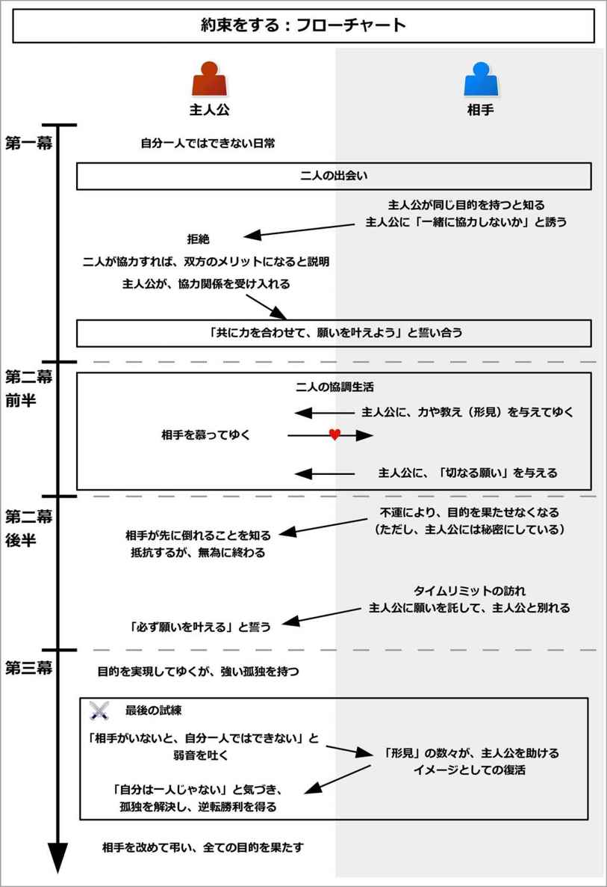
このイベントを構成するために、「約束をする相手」、すなわち「主人公に願いを託す人」を追加しよう。
その相手は、主人公と同じ夢や目的を共有する、同士のような存在になる。
それは友人やライバル、メンターになるかもしれない。かつて主人公と同じ目的を持った先輩になる場合もあるし、「会社の人たち」や「村人たち」のように、複数人になる場合もある。
また、その人は、主人公と出会う段階で生きている必要はない。既に死んだが、遺書を残した先祖や先人になることもある。その場合、時に相手は「幽霊」という形で生き続けていることもある。
相手は主人公とは仲のよい間柄で、互いに尊敬し合い、応援し合うような関係だろう。既に死んでいたとしても、主人公は相手の気持ちが十分に分かるほど、同じ境遇で、感情移入できる相手になるだろう。
能力としては、主人公よりも相手の方が優れていることが多い。
そして共有する夢や目的の内容は、主人公が物語で達成しようとすることそのものになる。
彼らは、主人公の旅にはついて行けないキャラクターになる。
そのため、使い捨てにしてもよい人物にしておこう。
それでは実際に、このイベントの流れを見てゆこう。
このイベントは、メインプロットである「本来の目的」とは別に、サブプロットとして自由な形で、並列して走らせることができる。
以降ではメインプロットと同調して説明させてゆくが、全くの別個にイベントを進行させても構わない。
なお、第一幕全体は、回想として簡略化されて説明されることも多い。だが、ここでは一つ一つ細かく説明してゆくことにする。
イベント冒頭で、主人公は相手と出会うことになる。
主人公は物語で目的を持つものだが、それを一人で実現するには自信がない状態だろう。
バトルものなら勇気がなかったり、力がない状態だろう。恋愛物語なら、自分の魅力を信じられないかもしれない。
そんなとき、主人公は相手と出会うことになる。この相手が、後々主人公に願いを託して倒れる人物になる。
出会いのきっかけは、偶然でも知人の紹介でも、どんな流れでもよい。相手が既に死んでいる人物の場合、手紙や遺書、過去の文献などを見つけることになる。場合によっては、その文献に宿る霊として、相手が登場するだろう。
ここでは作成例として、冒険もので見てみよう。
世界観は剣と魔法で魔物と戦うような、ファンタジーものだとする。主人公は青年で、「魔王を倒し、生きて故郷に帰る」という目的を持っているとする。
だが、主人公は「自分のような智恵も力もない人に、それができるはずがない」と思っているとしよう。
そして、小さな村で、魔物の襲来におびえながらも、村の護衛として戦いつつ、幼い弟や妹たちと一緒に過ごしているとする。
そんなとき、主人公はその相手と出会う。
相手は主人公と同い年の若者で、近くの町から出てきたばかりの冒険者だとする。
主人公と相手の二人は、自分たちが同じ目的を持つと知るだろう。そして、協力し合えるとも知る。
また、二人は感性や境遇としても共感するところがあり、惹かれ合うだろう。
そんなとき、相手から「互いに協力し合わないか？」と誘われることになる。
「共に敵を倒そう」と誘ったり、「共にこれを実現しよう」と言うかもしれない。恋愛物語の場合、相手は「主人公を恋人役と結ばせることで、自分の目的が果たせる」、という形になりやすい。
もし相手が既に死んでいる場合、「この書を読んでいる方よ、願わくば、この願いを実現して欲しい」と手紙や遺書で誘われるだろう。
冒険ものの例で言うと、主人公と若者の二人は共に、親を魔王の軍に殺されたことを知り、すぐに打ち解け合うだろう。
そして、若者も主人公と同じように、「魔王を倒したい」という思いを持っているのだ。
すると、主人公は若者から「一緒に協力しないか？」と誘われることになる。
相手から協力することを提案された主人公だが、ここで一度拒絶することになる。
主人公は、誘われたこと自体は嬉しいかもしれないが、自分の力や魅力に自信が持てないままだろう。
これは、条件反射的に拒絶することが多い。
冒険ものの例で言うと、若者から誘われた主人公は、最初こそ喜ぶだろう。
だが、すぐに現実に戻って、「自分にはできない、力がないし、特殊な能力もない」、「村の護衛も必要」、「幼い弟や妹の面倒も見ないといけない」などと理由を挙げて、拒絶することになる。
ここで状況の解説と、「二人が協力することで、目的を達成できる」という目的が示される。
主人公は物語での目的を持っていることが、ここで再度読み手に示されるだろう。
しかし、主人公は勇気がなかったり、自信がなかったり、力がないことで、それに挑戦することができずにいるのだ。
そんなとき、相手は主人公を補完できる力を持っていることが示される。
相手は主人公と協力し合うことで、自分の目的をも達成することができる言うだろう。
すなわち、「二人が協力し合うことで、互いの目的を達成できる」と示されるのだ。
また、ここで主人公が他に足枷を持っている場合、それらからも自由になるだろう。
主人公が物語の目的を実現するには、相手と協力し合うことはメリットしかなくて、デメリットは見あたらない状態になる。
だが、それでも主人公は決断できないものだ。
冒険ものの例で言うと、ここで読み手に対して、主人公たちが置かれた状況が示されるだろう。
この世界では魔王が復活して、街や人々を襲い続けていること。誰かが魔王を倒さなければならないこと。だが、誰もが街の防衛で手一杯であること。
主人公も若者も、魔王の軍によって家族を失い、魔王を滅ぼしたいと思っていること。
そして二人は協力し合えること、などが若者によって語られるだろう。
また、ここで、主人公への足枷も外される。
幼い弟や妹は、面倒を見てくれる人が見つかるだろう。護衛の任務も、「主人公がいなくても大丈夫だ。それよりも、この村からも魔王討伐に向かう兵士を出さなければならない。それに最も適任なのが主人公だ」と、許されるだろう。
主人公が「魔王を倒す」という物語の目的を実現するには、若者と協力し合うことはメリットしかなくて、デメリットは見あたらないものだ。
だが、それでも主人公はためらい続けるだろう。
そんなとき、何らかのきっかけがあることで、ついに主人公が相手と「共に目的を叶えよう」と決断することになる。
そのきっかけは、「逃げ道を失う」ということで起きやすい。
主人公はこれまで、「それをしないでいても大丈夫」という道に逃げていたことだろう。
それは、「他の人がやってくれる」と、他の人に頼ることかもしれない。「自分にはこういう用事がある」と、他の用事に逃げることかもしれない。「まだしなくても、大丈夫」と、先送りにしていたかもしれない。
だが、それらを全て失うことで、主人公は自らそれをしなければならなくなる。
結果として主人公は覚悟を決めて、相手と共に目的を実現することを決意する。
そして、ここで主人公は相手と、「一緒にそれを実現しよう」と誓い合うことになる。
冒険ものの例で言うと、ここで主人公は逃げ道を失うことになる。
主人公は、今まで「村で生きる」という逃げ道に頼っていた。だが、それをここで失うのだ。
主人公と若者が共に村を離れていた時に、魔物の軍が、主人公の村を襲うだろう。
そして、主人公は帰る家を失うことになる。多くの家は焼かれ、その中に主人公の家も混じっているのだ。
主人公は村の人々からも、「村から兵士を出さなければならない。兵士となり、魔王を倒してくれ」と、願いを託されるかもしれない。弟や妹たちも、泣きながらも主人公との別れを受け入れるだろう。主人公自身も、両親を殺された恨みがある。
こうして主人公は帰る家を失うことで、「若者と一緒に魔王を倒す。そして生きて、それぞれの故郷に帰ろう」と、若者と誓い合うことになる。
ここで、主人公が相手と一緒に行動している日常が描かれる。この部分を冒頭に持ってきて、第一幕全体を回想として説明しても構わない。
主人公は相手と一緒に行動をすることで、日々励まされ、助けられながら生きていることだろう。
また、主人公が危機的状況になった場合でも、相手はすぐさま助けてくれるだろう。
ところでこの相手は、主人公から見ると、メンターのような存在であり、完璧な存在になりやすい。
主人公から見ると、相手は力があり、優しく、明るく、頭もよく、真面目でひたむきで、努力家で、勇気があり、公平で、素直で、謙虚で、人から好かれて、能力も高いことだろう。
ただし、相手は「病弱で体が弱い」もしくは「不運である」という欠点を持ち合わせやすい。体の強さや運のよさに関して言うと、主人公の方が優れていることが多い。
だが全体的に見ると、相手の方がはるかに能力的には優れていて、主人公は「相手の方こそ英雄にふさわしい」と思っているものだ。
場合によっては、主人公は相手から助けられるばかりかもしれない。
主人公はそんな相手にあこがれて、信頼している姿が描かれる。実際に、主人公たちが他の仲間を持つ場合、相手がリーダー的な立ち位置になることも多い。
それなのに、その相手もなぜか主人公を心から尊敬していて、誰よりも信頼しているものだ。
そして相手は、「自分よりも、主人公こそが英雄にふさわしい」と言ってはばからないだろう。
この段階では、相手がどうして主人公をそこまで認めて信頼するのか、主人公には理解できないものだ。
なお、相手が死んでいる場合、これ以降では主人公は相手の文献を読みながら、同時に相手がたどった道と同じ道をたどるだろう。それによって、相手と一緒に行動をしているような体験をしてゆくことになる。
冒険ものの例で言うと、主人公と若者は共に魔王討伐の軍に属することで、魔物と戦っている姿が描かれる。
主人公は危機に陥るかもしれないが、若者が主人公を助けることで、難局を乗り切ることだろう。
また、ここで仲間たちとも出会い、共に戦ってゆくことになるとしよう。
若者は主人公よりも力があり、勇敢で、智恵もあり、優しく強い心も持ち合わせているという、勇者らしい性格になる。
そんな若者に主人公が勝てる要素は、健康と運のよさぐらいしかないのだ。
だから主人公は、いつも助けてくれて、道しるべを与えてくれる若者を尊敬して、「若者の力になりたい」と強く願っているだろう。また、「若者こそ、英雄にふさわしい」と思っているだろう。
一方でその若者は、「主人公の方がすごいよ」と微笑み、「主人公こそ、英雄にふさわしい」と言ってはばからないだろう。
主人公が若者に「どうして？ お前の方がすごいだろう」と言っても、若者は「そう感じるものなのかもしれないね」とはぐらかして、理由を教えてくれないだろう。
そして二人は協力して、互いに刺激し合い、切磋琢磨し合うことで、活躍しているのだ。
この部分を長く構成したい場合、サブプロットを用いて構成するとよい。
その場合、目的を果たすために必要な要素を作り、一つ一つを達成させてゆくとよい。
その過程で、主人公には仲間ができるかもしれない。最初こそ、その人物は主人公や相手を敵視しているかもしれないが、主人公や相手から助けられることで、仲間になってゆく。
また、次第に敵の姿も明快になってゆくだろう。
ここではそんな困難を乗り越えることで、主人公は相手と絆を深めてゆく。
なお、ここで恋人役が登場する場合もある。
このイベントでは相手と結ばれることはできないので、恋人役は「相手の兄弟姉妹」という形になりやすい。
それと同時に、主人公は相手から、象徴としての「形見」を一つ一つ受け取ってゆくことになる。
それは、勇気や思い出、力、アイテム、思想、励ましの言葉、考え方、振る舞い方、技術、奥義、必殺技など、目的を果たすために必要なものになりやすい。
これは、第三幕のクライマックスを元に逆算して配置するとよい。
主人公は相手に追いつくために、教えを願うこともある。相手は惜しげもなく、主人公にそのコツや方法を与えてゆくだろう。
もちろん、この段階での主人公は、それらが形見になり、後々自分を助けるものになるとは露にも思わない。
冒険ものの例で言うと、魔王を討伐するためには、魔王の手下を三体ほど倒す必要があるとしよう。
主人公は仲間を見つけつつ、若者と協力して、その手下たちを倒してゆくことになる。
その過程で、主人公は若者を助け、若者は主人公を助けることで、互いに絆を深めてゆく。
それと同時に、主人公は若者から、魔王を倒すための技や考え方、励ましの言葉、アイテムなどを受け取ってゆく。
中には、貴重なアイテムも含まれるかもしれない。だが、若者は「僕が持つよりも、君が持つ方がふさわしい」と、達観した様子で手渡すだろう。
第二幕前半の適当な場所で、主人公は相手からの「切なる願望」を受け取ることが多い。
それは主人公たちが目指す目的とは別種のもので、「目的を果たした後に、大切な人のために、こうしたい」という内容になる。
例えば「故郷の人たちに、これをしてあげたい」、「家族に、これをしてあげたい」、「恋人に、こうしてあげたい」というものになるかもしれない。
そして相手は、それを主人公の前で何度も実演して見せるだろう。
また、故郷や家族、恋人など、相手にとって「大切なもの」のことを何度も語るだろう。
主人公は、「何度も聞かされてうんざりだよ」と笑うかもしれない。それでも相手は、何度も何度も、主人公がそれを覚えてできるようになるまで、主人公に語ったり実演して見せるだろう。
これが、クライマックス後の、ラストシーンの前振りとなる。
冒険ものの例で言うと、主人公は若者からよく、彼の故郷について話を聞くだろう。「こういう村で、こういう特徴があるんだ」などと詳しく語るだろう。
そして相手は、「僕はそこで、いつもこうするんだ。これがとても気持ちよくて、楽しいんだ」ということを語って聞かせるのだ。
それは、村を見渡せる丘から、愛する村の人々のために、彼が大好きな笛を吹くことかもしれない。ある祭りで、村の人々を喜ばせるために、若者にしかできないような、独特の舞を舞うことかもしれない。
若者が「それが僕の切なる願いだ」と言うことで、それが何よりも大きな願望であることを明確にしておく。
同時に、「一緒にやろう」と、主人公にもそのやり方を教えるだろう。
ただし、このときの主人公は、嫌々付き合う程度だろう。主人公にとっては、これが唯一若者に対してうんざりする点かもしれない。
そのように、若者の「切なる願い」を主人公が聞いておいて、そしてそのやり方を身につけておくことが、ラストシーンの前振りとなる。
ここからついに、相手が倒れてゆき、主人公に願いを託す流れに入ってゆく。
相手は主人公と比べても、「完璧な人」であるものだ。
しかし、そんな「完璧な人」だからこそ、悲劇が訪れることになる。
それは多くの場合、不運な出来事となって、相手を襲うだろう。
相手は何らかの事情によって、目的を果たせない状態に陥ってしまう。
死に至る病に伏せるかもしれないし、死に至る傷を負ってしまうかもしれない。敵の卑劣な罠にかかってしまうかもしれない。もしくは、事情で主人公の属する組織にはいられなくなるかもしれない。
そしてそれは、「相手が誰かを助けるためにそうならざるを得なかった」となりやすい。
幼い子どもを救うために、傷を負ったり、病に伏せるかもしれない。家族を救うために、組織を離れなければならないかもしれない。
最初こそ、相手は主人公に対して、それを隠しているだろう。
だが、ついに隠しきれない状態にまで追い詰められてしまう。
そしてそれが発覚した時には、もはや手遅れで、誰が手を施そうとも回復できない状態になってしまっているのだ。
ただし、たとえ早期に発見できていたとしても、誰にも回復はできないたぐいの不運になる。
主人公はありとあらゆる手段を駆使して、相手を助けようとするだろう。
だが、全て徒労に終わってしまう。
結果として、相手は道半ばにして倒れることになるのだ。そして、主人公と同じ道を歩けなくなってしまう。
そんな現実を前にして、主人公は「どうして自分ではなくて、彼が失われなければならないんだ!?」と、世の中の理不尽さを嘆くだろう。
主人公にとっては、可能であれば、自分が代わりに犠牲になってもいいほどに感じるものだ。だが、主人公が身代わりになることなど、できない。
そして主人公は、「それほど完璧な存在でも、あらがえない運命がある」ということを知ることになる。
相手は急速に、衰えてゆくだろう。
そんな変化に対して、主人公は何もできずに、無力感を味わうことになる。
冒険ものの例で言うと、ここで若者には、一人の妹が生き残っているとしよう。
そんな妹は兄である若者を慕っているので、追いかけきたとする。
だが、その妹が、運悪く魔物に襲われてしまうのだ。
若者は命をかけて救い出すだろう。しかしそのときに、死に至る傷を受けてしまう。
最初こそ、若者はそれを隠して主人公に接するだろう。そして、いつも通りに振る舞うだろう。
その演技は完璧で、まさか若者が死に至る傷を負っているとは、主人公はおろか、仲間たちも、誰一人として気づくことはできないだろう。
しかし次第に無理が出てきて、主人公が気づく頃には、取り返しのつかない状況になってしまっているのだ。
相手は、「主人公たちが早くに気づいていても、僕は助からないと分かっていた」と言うものだ。そしてそれは事実だろう。
しかし主人公は当然のように、ありとあらゆる手段で若者を助けようとするだろう。だが、若者の言う通り、全て無駄に終わってしまう。
倒れた若者を抱きかかえ、主人公は「どうして自分ではなくて、若者をこの世界から奪うんだ！」と嘆くだろう。
可能であれば、主人公が命を代わりに差し出せる覚悟は十分にできている。だが、そんなことできるはずもない。
こうして主人公は、どんなに完璧な人間であっても、あらがえない運命というものがあるのだと知ることになる。
若者は、どんどんと衰えてゆき、やつれて、ついにはベッドから出られなくなってしまうだろう。
主人公はそんな若者に対して何もできずに、ただ拳を握り、歯ぎしりをして見守っていることしかできないのだ。
そしてついに、相手と一緒にいられる最後の日を迎える。
この日、相手は不思議と力を取り戻すことになる。
病や怪我をしていたとしても、一日だけ元気を取り戻すだろう。組織から出ることになっていたとしても、一日だけ自由に動ける権利を得ることだろう。
心配する主人公に対して、相手は驚くほどすがすがしく、昔と同じような姿を見せることになる。
そして相手は、主人公を誘って、「以前と同じように、一緒にこれをしよう」と誘うだろう。
主人公は戸惑いながらも、それを共にすることになる。
場合によっては、二人が一緒にいられるのはこれで最後になると、主人公は感じているかもしれない。
だから、いつもと同じことをしているのに、それがかけがえのない時間のように感じられるだろう。
場合によっては、ここで相手は主人公に、最後の教えや技術、奥義などを渡すこともある。
その日が終わる頃、相手は「思う存分、楽しんだ」と微笑むだろう。同時に、「もう思い残すことは、何もない」と受け入れるのだ。
そして相手は、主人公の前で倒れることになる。組織から離れる場合、相手は「時間だ」と、立ち去る時が訪れたことを伝えるだろう。
冒険ものの例で言うと、ある日の朝、若者は急に元気を取り戻すだろう。
そして「以前と同じように、主人公に技を教えてあげるよ。今回のは特別に、最終奥義だ」と、主人公を誘って出ることになる。
主人公は戸惑いつつも、若者があまりにも元気そうなので、安心してゆくだろう。
こうして主人公は若者から、最終奥義を伝授されることになる。
若者は、主人公に伝えるために、今までの中でも一番真剣に取り組むかもしれない。そこから、主人公は「これが最後になるのかもしれない」と予感するだろう。
その日の夜、若者は主人公と共に、久しぶりに夜の街を楽しむかもしれない。
高台から輝かしい夜景を眺めながら、最後に「ああ、主人公と一緒にいられて、楽しかった」、「もう、思い残すことはない」と伝えるだろう。
そして若者は、その場で倒れるのだ。
ここから主人公が相手と別れる場面が、中盤の盛り上がりとなる。
主人公と相手は、最後の瞬間を過ごすだろう。そして相手は主人公に願いを託して、主人公はそれを受け取ることになる。
相手は主人公に抱きかかえられて、刻々と死へと近づいてゆくだろう。組織から離れる場合、迎えが来たり、刻々と車や電車の発車時刻が近づいて来るだろう。
主人公はただ、泣くことしかできないかもしれない。
相手はそんな主人公に微笑んで、願いを託し、「主人公こそが、英雄にふさわしい」と伝えるだろう。
だが、主人公は未だにその理由が分からない。「教えてくれ」と頼んでも、相手は答えないか、もしくはもはや答えられないだろう。
そして相手は微笑んで、一方で主人公は嘆きながら、二人は別れることになる。
相手が既に死んでいる場合、そこで文献が終わっているだろう。幽霊として再会していた場合でも、その幽霊は成仏したり、消えてしまう形になる。
冒険ものの例で言うと、若者は主人公の腕の中で、死んでゆくだろう。
主人公はただただ、泣くことしかできないだろう。
若者はそんな主人公に、「君なら魔王を倒せる。僕の分まで、頼む」と、願いを託すことになる。
主人公は、最初こそ「嫌だ、一緒に」と言うかもしれない。だが、最後には説得されて、受け入れるだろう。
こうして主人公は、「魔王を倒して、生きて故郷に戻る」という願いを託される。
若者は「君こそ英雄にふさわしい」と言うだろう。主人公はその理由が分からないし、訊いてももはや、若者は答えられないだろう。
そして若者は微笑んで、主人公の腕の中で、静かに息を引き取るのだ。
主人公は、かけがえのない相手を失った。
ここから主人公は、相手がいない状態で、目的を果たすために動いてゆくことになる。
もし相手がリーダーであったり、目的を果たすためのアイテムや道具、資源、人脈などを持っていた場合、主人公が全てを引き継ぐことになるだろう。
ここでは、主人公の性格に変化が起きやすい。それは、「無理をする」もしくは「性格を反転させる」という出来事として引き起こされる。
「無理をする」場合、主人公が普段明るい性格なら、底抜けに明るく振る舞うだろう。普段が優しい性格なら、底抜けに優しく振る舞うようになるだろう。
「性格を反転させる」場合、主人公が普段は優しい性格なら、ここから人が変わったかのように、冷徹な振る舞いをするようになる。普段が冷徹な性格の場合、不気味なほど優しく振る舞うようになるだろう。
主人公はまるで人が変わったかのように、今までのようなためらいや不安を消し去り、驚くほどの実力を発揮してゆく。
それは、主人公が「目的を叶えるためには、何でもする」という形で実現されるだろう。
実際にそれによって、短期間で圧倒的な成果を作り出してゆくことになる。
昔から一緒にいる仲間は、そんな主人公を見て、「痛々しい」、「見ていられない」、「人が変わった」などと感じて、大きな違和感を覚えるものだ。
だが主人公から遠い人は、そんな主人公の変わりようなど知らない。だから、「彼こそが英雄だ」、「ついに待ち望んだ英雄が現れた」と、主人公を持ち上げ始めることになる。
一方で主人公は、そんな周囲からの戸惑いや賞賛には、何も感じないだろう。
主人公は、ただただ、哀しいのかもしれない。
どんなに賞賛されても、どんなに味方が心配しても、主人公は「孤独」なのだ。
だから、相手との唯一のつながりである、「目的を果たすこと」だけのために生きている姿が描かれる。
主人公にとっては、それ以外に生きている意味などないのだ。
主人公は驚異的な勢いで成果を出してゆき、ついに目的を果たすめどが見えてくるだろう。
ここで、「いつには目的を果たすことができそうだ」というタイムリミットが設定されやすい。
それによって、読み手に対してクライマックスの準備をさせることができる。
冒険ものの例で言うと、若者を失った主人公は、ここから怒濤の勢いで進撃をしてゆくことになる。
主人公は、若者の跡を継いで、仲間たちを率いるリーダーとなるだろう。
主人公はまるで人が変わったかのように、仲間たちを率いて、魔物の軍へと向かってゆくだろう。そして傷つくことを恐れずに、魔物たちを滅ぼしてゆく。
その成果は魔王討伐軍全体に知れ渡り、主人公は急速に地位を上げて、指揮官へと上り詰めるだろう。
主人公は軍のリーダーとして、驚異的な速度で軍を大きくし、魔王の根城へと駒を進めていくことになる。
古くからの仲間は、そんな主人公を「危なっかしい」と思ったり、「理解できなくなった」と恐れるかもしれない。一方で新たな味方たちは、主人公を「待ち望んだ英雄」としてたたえるだろう。
主人公はそのどちらにも影響されずに、ただただ無感情に、魔物を殺してゆくだろう。
主人公は、ただ哀しいだけなのかもしれない。
そしてついに、魔王との最終決戦を迎えることになる。
主人公はついに、目的を果たす目前にたどり着くだろう。ここからがクライマックスになる。
敵がいる場合、互いに死力を尽くして戦うことになるだろう。何かを実現する場合、全力で対処してゆくだろう。
だがここで、主人公は絶体絶命の危機を迎えることになる。
それは多くの場合、「主人公の力だけでは足りない」という出来事によって引き起こされる。
主人公は後一歩のところで力が及ばずに、限界を迎えるだろう。そして自分の無力さに絶望するかもしれない。
同時に、主人公はここで初めて弱音を吐くだろう。もはやいない相手に向かって、「お前がいないと、自分はやっぱりだめだ」と。
そんなとき、主人公は相手の「形見」によって助けられることになる。
これまで様々な形で、相手から「形見」を得たものだ。ここでそれが、一つ一つ、主人公を守り、力を与えてゆくことになる。
敵から攻撃を受けたときに、相手から譲り受けた形見のアイテムが盾となり、主人公を守るかもしれない。
また、相手から教わった技術が役に立つこともあるだろう。相手から教わった行動が身にしみていることで、自然と攻撃を避けることができるかもしれない。相手と同じように振る舞うことで、形勢を逆転してゆくかもしれない。
主人公にとってそれは、あたかも相手が主人公の手を引いてくれているような、そんな「動かされる」という感覚になるかもしれない。
他にも、相手の最後まであきらめない姿勢や、相手が抱えていた痛みを思い出して、「この程度の痛み、相手が抱えていたものに比べれば、全然たいしたことがない」と気づくかもしれない。
そんな風に、勇気や思い出、力、アイテム、思想、励ましの言葉、考え方、振る舞い方、技術、奥義、必殺技などが、主人公に力を与えるのだ。
同時に、それらは主人公の中で、「記憶の再生」もしくは「イメージとしての再生」として復活するだろう。
主人公は、過去に相手とやりとりした記憶を思い出すかもしれない。それは今と同じような状況で、相手がかけてくれた言葉になるだろう。
イメージとして再生される場合、主人公が気力の限界を迎えたときや、ふいに意識が飛んだときに、相手が主人公に語りかけるだろう。そして、「相手ならこう言う」という内容が、まどろんだ意識の中で再生されることになる。
それによって、主人公は目覚めるだろう。
そして、自分の中に、相手が生きていることを知るのだ。
主人公が相手の考え方を取り込み、同じように振る舞うようになるだろう。この相手と同じような振る舞いをすることを、「同一化」と呼ぶ。
主人公は相手と同一化することで、孤独な戦いから、「二人での戦い」にするのだ。主人公は、もはや自分が孤独ではないと知るだろう。
結果として、主人公は相手と共に、危機をくぐり抜けて、目的を果たすことになる。
相手との同一化を果たした主人公は、哀しみを消し去っているだろう。
そして、自分の中に相手が生きていることを知り、孤独という問題をも解決することになる。
冒険ものの例で言うと、主人公が率いる魔王討伐軍は、ついに魔王のいる広間へとたどり着くだろう。
だがそこで魔王は真の力を目覚めさせて、圧倒的な力を発揮して、討伐軍を崩壊させてゆく。
総力戦になり、共に甚大なダメージを受けるだろう。
そして後一歩で倒せるという段階で、主人公の軍も力尽き、仲間も倒れ、主人公自身も全ての武器を失って傷つき、力の限界を迎えるだろう。
主人公は、ここで始めて弱音を吐くことになる。
もはやいない若者に向かって、「お前がいないと、やっぱり俺はだめなんだ」と。
そんな絶体絶命の状況で、主人公が死を覚悟したとき、若者の形見として受け取ったペンダントが、身代わりとなって主人公を守るのだ。
また、主人公は限界の状況で、若者がそこにいるかのようなイメージを抱くかもしれない。
そして若者に声をかけられて動くと、魔王からの攻撃を避けられているのだ。
気がつくと若者の姿は消えていて、自分が一瞬だけ、夢を見ていたのだと気づくだろう。
だが、そうすることで、主人公は「自分の中で生きている若者」に気づくことになる。
若者からもらった、形見の短剣があることを思い出すかもしれない。「あいつの抱えていた痛みは、こんなものじゃなかった」と、耐える力を得るかもしれない。最後に教わった、最終奥義を思い出すかもしれない。
主人公は、「俺は、一人で戦っているんじゃない」、「孤独になったわけではない」と気づくだろう。
こうして主人公は、若者と一緒に戦うことで、魔王を討ち果たすことになる。
主人公は「魔王を倒して、故郷へと帰る」という目的の半分を果たして、同時に若者との別れに対する感情をも解決するのだ。
ここからが、エンディングへ導く最後の場面となる。
主人公は、目的を果たして英雄となった。
だが主人公は、たとえ英雄扱いされたとしても、自分が英雄であるとは思わないだろう。
主人公は、「本当の英雄は、自分の中にいる相手だ」と思うものだ。
ラストシーンは、「相手の盛大な葬儀」もしくは「相手の『切なる願望』の実現」として描かれやすい。
葬儀を行う場合、相手の盛大な葬儀が行われるだろう。ここで、「旅立つ相手を見送る場」、もしくは「遠くにいる相手にも伝わるような、メッセージを伝える場」が改めて設定されることになる。
相手を慕う人が、相手の葬儀や見送る儀式のことを知り、どんなに遠くからでも集まってくるだろう。
その数は膨大な数へとふくれあがり、それによって相手の人徳や魅力を再確認することになる。
そして相手が本当に旅立つその直前で、既に会えないほど遠くからでも、相手を見送りつつ、全員が感謝のメッセージを伝えるのだ。
相手が生きている場合、相手は遠くからそのメッセージを受け取り、微笑むだろう。
相手が既に死んでいたとしても、魂の状態でそれを受け取り、相手は思い残すことなく永遠に眠るだろう。そのような、イメージとしての演出が用いられやすい。
こうして、相手は幸せな状態で、物語の舞台から完全に姿を消すのだ。
相手の「切なる願望」を実現する場合、主人公は相手に変わって、その願いを実現するだろう。
相手にとっての「大切な人」の元へと赴いて、主人公はいつの間にか相手のようになりきって、それを実現するのだ。
こうして主人公は相手の願いを全て叶えて、切ない余韻を残しながら、エンディングへと導かれる。
冒険ものの例で言うと、魔王を倒した主人公は、英雄として扱われるだろう。
だが主人公は、「自分の中に生きている若者こそ、真の英雄だ」として、謙虚に対応し続けるだろう。
そして、改めて若者の葬儀と、魔王討伐で犠牲となった戦士たちへの葬儀が、厳粛に、盛大に行われるだろう。
葬儀が終わった後、主人公は自らの故郷へ帰るだろう。村人からは祝福されて、「今夜は宴を用意しています」と言われるかもしれない。
だが、主人公は「まだ旅の目的は果たしていないから、すぐに旅立つ」と言うのだ。そう、「若者の故郷に帰る」という目的が、まだ残っている。
そして主人公は若者の形見と共に、若者の代わりに、若者の故郷に帰還を果たすのだ。
主人公は若者の故郷にたどり着き、まさに若者が語ったのと同じ風景を目の当たりにするだろう。
するとその瞬間に、若者が主人公の体の中で、記憶と共に、鮮やかに息を吹き返すのだ。
主人公はまさに若者と同一化して、無意識に若者が望んでいたことを行うだろう。
丘の上で、彼がよく演奏していた笛を吹くかもしれない。ちょうど祭りが行われていて、そこで彼にしかできない舞を舞うかもしれない。
その姿は、村の人たちや若者の家族が、「彼が生きて帰ってきた」と錯覚するほどの同一化になるだろう。
主人公が、若者を自分の中で生き返らせ、最後の目的を叶えるのだ。
こうして全ての願いを叶えて、エンディングへと導かれる。
もしコメディで用いる場合、「目的」を馬鹿げたものや、どうでもいいことにするとよい。
すると、ギャップが生まれて笑いになるだろう。
このイベントは、メインプロットを補強するサブプロットとして用いられることが多い。
別途メインプロットを作り、それに対して感動を補強する形で追加しても構わない。
ところで、「なぜ相手が主人公をそこまで信頼するのか」、「なぜ相手は主人公が英雄にふさわしいと思っているのか」という問題については、明快に回答が示されるわけではない。
これは主人公がクライマックスで相手と同一化する時に、相手がどれだけ自分を信頼してくれていたかを理解することで解決される。
すなわち、相手は自分が志し半ばで倒れると予感していることになる。その上で、相手は「主人公がきっと自分の意志を継いで、願いを実現してくれる」と、そこまで主人公を深く信じていた、ということになる。
いわば、相手は主人公などの常識をはるかに越えた、超越した存在に近いと言える。
なお、相手はメンターになりやすい。その場合、このイベントをメインプロットの第一幕に並列して用いることも多い。
主人公は多くの教えを相手から受けるため、「師弟関係になる」との相性がよい。
「願いを託される」は、主人公とは全く関係のない人たちから、主人公が願いを託されることによって起こるイベントである。
主人公は物語で目的を持つものだが、相手から「別に解決しなくてもいい、ついでの願い」を託されることになる。
主人公にとっては、それを解決しなくても全く影響はないが、解決することで相手が喜ぶような願いである。
主人公がそんな願いをついでに叶えることで、相手から「ささやかなお礼」を受ける流れになる。
最終的に主人公は、そのお礼によって助けられることになる。
このイベントは、メインプロットを補強するためのサブプロットとして用いられる。
他者の事情を加えることができるため、世界観に空間的な壮大さを作りたい場合に効果的になる。
このイベントの概要図と流れ図を、それぞれ以下に示す。
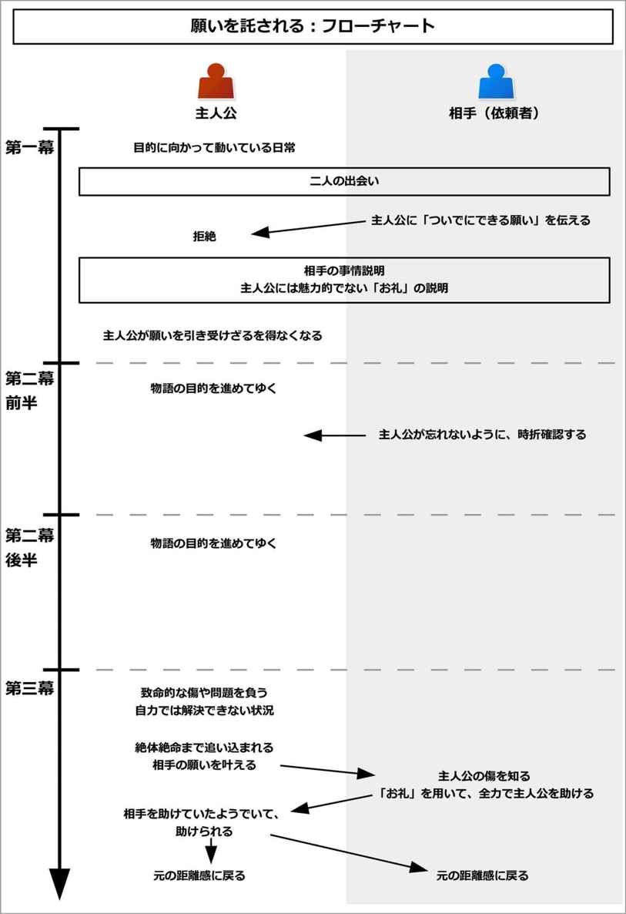
このイベントを構成するために、以下の流れで考えるとよい。
以下で、それぞれを流れに沿って説明してゆこう。
まずは、「願いを託す人」を新たに追加しよう。
多くの場合、願いを託す人とは、主人公とはさほど関係がない人になる。
主人公に近いことはあまりなく、全くの見ず知らずの人であることも多い。
また、相手は既に死んでいる人になる場合もある。その場合、遺書や文献として主人公の前に姿を現すだろう。もしくは、幽霊となって出てくる場合もある。
ここで彼らの持つ「願い」とは、「主人公が物語の目的を実現すること」になる。もしくは、主人公が物語で実現しようとしていることのついでにできることである。
例えばバトルものでは、「敵を倒す」であったり、「大会で優勝する」というのが物語の目的になるだろう。恋愛物語では、「主人公が恋人役と結ばれること」が物語の目的になるだろう。
言うなれば、願いを託す人は、主人公に「貴方のお噂はかねがね聞いております。貴方がこれを実現する時、そのついでにこれも実現してくれませんか」と、お願いすることになる。
ほとんどの場合、それは主人公にとっては自分とは関係のない事情になる。場合によっては、主人公にとっては負担になることもある。
相手は、主人公に協力できることがほとんどない。その上、主人公に対する謝礼も、主人公から見るとろくなものが用意されていないことがほとんどである。
そのように、主人公にとっては「やっかいな追加の願い」になりやすい。
次に、その「願いを託す人」である相手の事情を作ろう。
主人公が物語の目的を実現することで、相手のメリットになる内容を作ろう。もしくは、主人公が目的を果たせない場合、相手に起こるデメリットを作ろう。
例えばバトルものでは、主人公が敵を倒すことで、「願いを託す人」である相手は自分の恨みを晴らすことができるかもしれない。もし倒せなければ、他に同じような苦しみを持つ人が出続けるかもしれない。
主人公が優勝することで、宣伝効果になり、相手は傾いた店の経営を立て直せるかもしれない。もし優勝できなければ、その店はつぶれてしまうかもしれない。
恋愛物語の場合、主人公が恋人役と結ばれることで、相手は街の平和を作ることができるかもしれない。もし恋人役と結ばれなければ、街は戦争状態に陥ってしまうかもしれない。
相手のメリットとデメリットさえ明快になっていれば、過去の事情や流れは適当に作って構わない。プロットにはほとんど影響しないため、自由に相手の背景設定を作るとよい。
そのため、地味な物語でも、空間的に壮大な背景を追加することが可能になる。
相手を王族や、大規模な勢力のリーダー、権力を持つ人、影響力が強い人などにすると、世界観が壮大になりやすい。
それでは実際に、このイベントの流れを見てゆこう。
なお、このイベントは、メインプロットである「本来の目的」とは別に、サブプロットとして自由な形で、並列して走らせることができる。
以下では「本来の目的」と同調して説明させてゆくが、全くの別個にイベントを進行させても構わない。
イベント冒頭では、主人公が物語の目的に向かって動いている姿が描かれる。
バトルものなら戦っているか、戦いを始めようとしているだろう。恋愛物語なら恋人役と触れ合っているか、もしくは出会おうとしているだろう。
主人公の状態は、どのようなものでも構わない。主人公はうまくいっている場合もあるし、そうでない場合もある。
そんなとき、主人公は何らかのうわさや出来事を知るだろう。
それが、「願いを託す人」である相手のうわさ話になる。
「そういう人がいるらしい」と小耳に挟んだり、相手が死んでいる場合、「そういう人がいたらしい」と話に聞くだろう。
だがここでの主人公は、さして興味もなく、「自分とは関係ない話だ」と思って気にしないものだ。
ここでは例として、「幽霊から成仏できるようにお願いされる恋愛物語」の例と、「恋人役の許嫁から、許嫁解消をお願いされるバトルもの」という二つの例で見てみよう。
幽霊から頼まれる例で言うと、主人公として少女、恋人役として青年がいる、恋愛物語だとしよう。
主人公は青年とは既に出会っていて、恋も順調で、仲良くなりつつある状態だとしよう。
イベント冒頭で、あるとき部活などの旅行で、一緒に山奥の古い山荘に泊まることになるとする。
そこで山荘にたどり着いた主人公は、友人から「ここでは幽霊が出る」といううわさを耳にする。
ただし、ここでの主人公は「へえ、そんなこともあるのか」と、聞き流す程度だろう。
恋人役の許嫁から頼まれるバトルものの例で言うと、世界観はファンタジー的な学園バトルもので、主人公は青年、恋人役として少女がいるとしよう。
バトルの内容は、剣や魔法で戦い、大会での優勝を目指しているとする。
主人公はバトルを勝ち進めながら、同時に少女との恋を順調に進めているとする。また、バトルで優勝すれば、少女と結ばれる権利が得られるとしよう。
そんなあるとき、主人公はあるうわさを聞くことになる。それが、「少女には親同士が勝手に決めた許嫁がいる」という内容になる。
主人公は動揺するかもしれないが、それでも「そんな男は見たことないし、どうせただのうわさだろう」と気にしないだろう。
そんなとき、何らかのきっかけで、主人公は「願いを託す人」である相手と出会うことになる。
ほとんどの場合で、相手の方から主人公に接触してくるだろう。そして、主人公は相手の願いを知ることになる。
その願いというのは、主人公が物語で目的としていることを実現して欲しい、というものになる。もしくは、「そのついでにこれもして欲しい」という、ついでにできるような簡単なことになる。
幽霊から頼まれる例で言うと、主人公が幽霊のうわさを聞いた後で、主人公の前に、一人の女の子の幽霊が現れるだろう。
最初こそ、女の子は幽霊らしく主人公を脅して、「立ち去りなさい」と言うかもしれない。
だが主人公が幽霊だとは気づかずに叱ると、女の子は突然しおらしくなり、泣き出すだろう。
その後に主人公が幽霊だと気づいて、二人は仲良くなる。
そんなとき、友人たちが「今夜は肝試しをしよう。二人組で、森の中のほこらまで行こう」と言い出す。
また、「そのほこらで告白したカップルは、結ばれる」という伝承があるとも言うのだ。
主人公は、「青年に告白したい」と思うだろう。
それを聞いた幽霊の女の子は、主人公に「ついでにこれも持って行って、ほこらの隣にある桜の木の下で埋めて」とお願いするのだ。
主人公が「これは何？」と訊くと、女の子は「私の骨」と答えるだろう。
恋人役の許嫁から頼まれるバトルものの例で言うと、主人公が「少女には許嫁がいる」といううわさを聞いた後、まさにその許嫁である男が主人公の前に現れることになる。
そして男は主人公に対して、「バトルで優勝して、是非少女と結ばれてください。そして少女の親に、許嫁を解消するように仕向けてください」と頭を下げるのだ。
突然のことに、主人公は驚くだろう。
多くの場合、主人公は「余計なお世話だ」と、遠ざけようとするものだ。ついでにできることを依頼されたとしても、主人公にとってはそれは「やっかいごと」でしかない。
そのため、主人公は「自分で何とかしろ」、「自分とは無関係だ」などと突き放すだろう。
幽霊から頼まれる例で言うと、肝試しついでに骨を埋められるように頼まれた主人公は、驚いて「そんなことできない」と拒絶するだろう。
ついでにできることとは言っても、告白とは正反対の雰囲気になるし、何より主人公にとってはやっかいごとでしかないのだ。
恋人役の許嫁から頼まれるバトルものの例で言うと、男から許嫁解消を頼まれた主人公は、「それは俺に言うことじゃなくて、少女の親に言うことだ」と拒絶するだろう。
また、バトルで勝つことだけでなく、少女との恋を実らせることですら、主人公には自信がないものだ。
だから、「俺に言われても、困るだけだ」と、男を突き放すだろう。
ここで状況の整理がなされて、相手がメンターとなり、主人公に事情が語られることになる。
主人公は、相手から突然「願いを叶えて欲しい」と頼まれることになってしまった。
だが、主人公がわざわざそれをする理由はないものだ。
そこで相手は主人公に対して、自分の身の上話や、主人公に依頼するようになった経緯を説明することになる。
相手はなぜそうしなければならないのかが示されて、そして自力ではできずに、主人公にしか頼めない事情を語るだろう。
この相手の事情を語る部分が、このイベントでの魅力となる。
世界観や空間的な広がり、背景事情の壮大さなど、追加したい要素を追加するとよい。
それによって、主人公の成否が、多くの人々に影響を与えると知ることになる。
これが、物語により多くの使命や緊張感を与えることになる。
ただし、相手は主人公の力にはなれないものだ。だから、仲間になることもできない。
また、ここで主人公に対して、「何らかのお礼ならできる」と伝えるだろう。だが、それは主人公にとってさほど魅力的なお礼にはならないものになる。
それによって、主人公にとっては「関わりたくないやっかいごと」であると示される。
しかし、相手にとっては、自分でできるものならしているものだ。その上、頼れるのは主人公しかいないのだ。
相手は誠心誠意頭を下げるだろうが、ここでの主人公は、「気持ちは分かるけれども、自分にも他にすることがある」と、否定的な態度を取り続けることになる。
なお、ここでの「魅力的ではないお礼」が、第三幕のクライマックスで主人公を救うことになる。第三幕の内容を元に、このお礼の内容を設定するとよい。
幽霊から頼まれる例で言うと、ここで状況が整理されて、女の子が抱える事情が語られる。
主人公は、幽霊である女の子から、「女の子の骨を、ほこら近くにある桜の木の下に埋めて欲しいと頼まれた」という問題を抱えてしまった。
ここで女の子が、身の上を語るだろう。
百年ほど前に生まれたこと、両親を失って、兄と共にこの家に引き取られたこと、この家では厄介者として邪険に扱われたこと、だけど兄が守ってくれたことなどが語られる。
そして兄が病に倒れて死んでしまい、女の子もそのすぐ後に、事故で死んでしまったとする。
女の子は、兄が埋葬された場所には、桜の木が植えられたことを語るだろう。そして、「兄様は、桜の木の下で眠っています。私も一緒にそこで眠りたいのです。そうすれば、私も安らかに眠れます。これは、私ではできずに、主人公さんにしかお願いできないんです」と言うだろう。
だが、女の子は幽霊なので、自力ではできない上に、主人公の手伝いもできない。
女の子は「自分の力で、花を咲かせるぐらいならできる。それならお礼にできる」と、提案するかもしれない。実際に花を咲かせてみて、主人公を驚かせるだろう。
だが、山荘の外には野草の花が咲き乱れていて、主人公にとっては何ら魅力などない。
主人公は「気持ちは分かるけど、それでも骨を埋めるなんて、やりたくない」と答えることになる。
なお、この「花を咲かせる」というお礼が、クライマックスで主人公を助けることになる。
恋人役の許嫁から頼まれるバトルものの例で言うと、ここで主人公は男から、「少女と男との許嫁を解消されるように頼まれた」という状況が整理されて、男の事情が語られる。
男の家と少女の家は伝統的に仲がよいために、幼い頃に、勝手に許嫁関係を押しつけられてしまったこと。男は別に好きな女性がいることや、近いうちに婚約しようとしていることが語られる。
しかし、男の側から断れない、という事情を抱えているとしよう。
ここでは、男は高貴な身分出身の人だとしよう。同時に、少女の家も高貴な家で、共に「家の品格」を重視しているとする。
男の家は少女の家からすると格下になるため、自分側から断ると、少女側の家を辱めることになると説明される。
そして男は主人公に、「これは私にはできずに、主人公さんにしかできないんです。主人公さんがバトルで優勝して、少女と恋を実らせれば、自然と許嫁関係は解消できるのです」とお願いするだろう。
主人公は「気持ちは分かるけど」と言うが、主人公にも少女との恋を実らせることができるのか、分からないものだ。
その上、男は国外にいることがほとんどなので、主人公と少女との恋に協力できるわけはない。
男は、「自分は医療の世界で生きたい」と言うだろう。そして「自分の医療組織が成功しつつあるから、お礼として、怪我をしたら無料で治療してあげられます」と、お礼を提案されるかもしれない。
だが主人公は健康体なので、医者など必要としていないだろう。
そのため、「少女とはまだ付き合っているわけではないし、気持ちを確かめたわけでもないし、俺からそんなことはできない」と断ることになる。
なお、ここでの「怪我をしたら、主人公を治療できる」というお礼が、クライマックスで主人公を助けることになる。
そんなあるとき、主人公がその願いを受け入れるきっかけが訪れる。
そのきっかけとしては、「主人公が相手の立場になる」という出来事によって引き起こされやすい。
主人公はあるとき、相手の日常や生活に触れるだろう。
そこで、相手がどれだけ苦しんでいるのか、どれだけ哀しんでいるのかを体験することになる。
それによって主人公は相手の気持ちが理解できるようになり、相手の願いを引き受けることになる。
幽霊から頼まれる例で言うと、主人公はその後、ふとしたきっかけで、女の子の遺品に触れるだろう。
友人たちと山荘の探検をしていると、それに触れるかもしれない。
そこには、少女が兄と、幸せそうに寄り添っている写真があるかもしれない。また、兄を失ったときの哀しい日記もあるかもしれない。
それによって主人公は、女の子の哀しみを理解する。
こうして、女の子のために「肝試しで青年とほこらまで行き、青年に告白する。ついでにほこら近くの桜の木の下に、女の子の遺骨を埋める」という願いを引き受けることになる。
恋人役の許嫁から頼まれるバトルものの例で言うと、主人公はその後、ふとしたきっかけで、男の生活に触れることになる。
街で偶然、男が女と一緒にいるところに出くわすだろう。その女が、男の婚約者になる。
そして三人で、食事でもすることになる。
主人公は、男の境遇について聞かされるだろう。すると、男と女の出会いや境遇が、主人公と一緒かもしれない。
そして主人公は男に共感して、「確かに自分がそうだったら、嫌だよな」と実感することになる。
結果として、「バトルで優勝して、少女と結ばれる。ついでに少女と男との許嫁関係も解消する」という願いを引き受けることになる。
第二幕の前半と後半は、基本的に普通の流れで構わない。主人公は物語の目的を実現してゆく上で、必要な準備を重ねてゆくことになる。
主人公は恋人役や仲間との絆を深めたり、敵との対立を深めてゆくだろう。
ここでは、相手は根幹の部分には関わらない。
相手は適当に主人公に絡ませて、託した願いを忘れさせないようにする程度でよい。
幽霊から頼まれる例で言うと、主人公は夜を迎えて、友人たちと肝試しを始めるだろう。
主人公は青年と一緒になり、小さな骨壺を持って、森の中を歩くだろう。
そして青年から助けてもらったり、思い出話を聞いてもらったり、道に迷ったりすることで、青年との絆を深めてゆく。
ここでは、女の子はさして重要ではない。時々出てきては主人公に「忘れないで」と催促する程度になる。
恋人役の許嫁から頼まれるバトルものの例で言うと、主人公はバトルで勝ち進めながら、同時に少女との恋を、普通に進めてゆくことになる。
敵として、恋敵が登場するとしよう。
主人公は恋敵との直接対決に向けて、訓練を重ねてゆくだろう。そして少女との絆を深めてゆく。
ここでは、許嫁の男はほとんど登場しない。時々登場して、忘れないように促す程度になる。
第二幕後半でも、引き続き通常の流れと同一になる。
主人公は目的を果たす目前にまでたどり着くだろう。
その前夜、主人公や仲間はひとときの休息を取り、安らぐことになる。
そして、今までの平和や平穏、絆がどれだけ大切だったのかに気づくだろう。
戦い当日になり、主人公たちは準備をするだろう。
そして、目的を実現するために、旅立つ。
幽霊から頼まれる例で言うと、青年との絆を深めた主人公は、ついにほこらに近づくだろう。そしてそれは、主人公が青年に告白をする場にもなる。
主人公が告白をすることで、二人の今までの関係が壊れてしまうかもしれない。しかし、主人公はもはや、自分の想いから逃げることをしたくないだろう。
その前に、二人はひとときの安らぎを得る。開けた場所に出ると、満天の星空に気づき、二人で眺めるだろう。
そこで主人公は、青年と二人で一緒にいることが、かけがえのない時間だったのだと気づく。
そしてついに主人公たちは、ほこらへとたどり着くことになる。
恋人役の許嫁から頼まれるバトルものの例で言うと、ここまでで主人公は、少女との絆を深めただろう。
恋敵との決勝戦を前日に控えて、その前に、二人は最後の安らぎを得ることになる。
二人で最後の晩餐を共にして、少女から「お願い、勝って」と言われるかもしれない。
そして戦い当日が訪れて、主人公は恋敵との決勝戦に臨むことになる。
ここで、主人公は最大の困難を乗り越えて、「本来の目的」を実現する流れになる。
主人公は最大の難関に直面して、絶体絶命の危機を迎えるだろう。
ここでは一時的に勝利する流れと、一時的に敗北する流れのどちらでもよい。
主人公は、自分の内面を見ることで自分に素直になり、問題を乗り越えるかもしれない。もしくは、一時的に敗北を喫してしまうだろう。
幽霊から頼まれる例で言うと、主人公はほこらで青年に告白しようとする。
だが、勇気がなくて、言い出せないだろう。そして泣き出してしまい、青年から心配されるかもしれない。
その場から逃げ出す主人公だが、間違って崖から落ちそうになるだろう。それを青年から助けられ、主人公は「どうしていつも助けるの？」と問いかけるかもしれない。青年は、「好きでない奴に、ここまでしない」と、恥ずかしそうに言うだろう。
結果として、主人公は自分の思いに素直になるが、ここでタイミングの悪い邪魔が入ってしまい、雰囲気をぶち壊されたとしよう。
それによって、主人公は一時的に告白に失敗してしまうことになる。
恋人役の許嫁から頼まれるバトルものの例で言うと、ここで主人公は、決勝戦で恋敵と戦うだろう。
主人公は絶体絶命の危機を迎えながらも、主人公は自分の思いに素直になるだろう。
そして主人公は逆転勝利をして、少女と結ばれることになる。
第二幕は「本来の目的」が中心であったが、ここから相手とのエピソードに戻る。
第二幕で主人公が一時的に勝利した場合、ここで何らかの「置き土産」として象徴される、問題を抱えることになる。
一方で、第二幕で主人公が一時的に敗北した場合、ここで一時的な猶予を得て、「本来の目的」を実現する最後の機会を得るだろう。
そんなとき、主人公は予想以上の痛手を被ることになる。
主人公は一つの致命的な傷を負い、それによって「本来の目的」が無効化されてしまうか、実現できなくなってしまうという危機に瀕してしまう。
それは、主人公の力ではどうしようもないものになる。
主人公は自力で何とかしようとするが、結果として無為に終わる。
こうして、主人公は「いつまでにその問題を対処しなければ、全てが水の泡になってしまう」というタイムリミットに縛られてしまうのだ。
幽霊から頼まれる例で言うと、主人公は青年への告白への失敗をしてしまったが、ここで再度告白する猶予が与えられる。
青年は、まだ主人公を意識し続けているだろう。だから、「いい雰囲気さえ作ることができれば、再度告白することができる」と気づくのだ。
こうして、「少女の遺骨を埋め終わるまでに、青年に告白する」というタイムリミットを得て、それに向かって進んでゆくことになる。
恋人役の許嫁から頼まれるバトルものの例で言うと、バトルで優勝した主人公は、ここで恋敵から受けた傷が深いことを知る。
そして、表彰式の最中に、血を吐いて倒れてしまうのだ。
主人公を助けるには、高度な医者たちが必要になるだろう。だが、運悪く高度な医者は誰も都合がつかずに、主人公は危機的状況に陥ってしまう。
こうして主人公は、「生き続けなければ、少女との恋も、全てが水の泡になってしまう」という問題を抱えることになる。
ここで、相手からの「ささやかなお礼」を受けることになる。
なお、相手からの「ついでにできる願い」をまだ実現していない場合、ここまでのどこかで相手の願いを実現するとよい。
相手は主人公に感謝するだろう。同時に、主人公が致命的な傷や問題を抱えていることを知る。
そこで相手はできる限りの力を駆使して、主人公を助けるだろう。
そのお礼とは、相手にとっての「最も大切なもの以外の全て」を差し出すほどのものになることが多い。
相手は、自分の財産や人脈、素質、能力、時間、アイテムなど、どんなに貴重なものを持っていたとしても、それら全てをなげうってでも主人公を助けるだろう。
相手は、「最も大切なもの」を得られれば、それで十分に満足なのだ。
そのように、相手は主人公に対して、そんな「ささやかなお礼」をして報いることになる。
こうして主人公は、相手を助けたことで、結果的に相手に助けられることになるのだ。
なお、このお礼の内容を元に、第一幕での相手の事情説明の段階で、「こういうお礼ができる」という説明を作るとよい。
幽霊から頼まれる例で言うと、ここで主人公は桜の木を見つけて、女の子の遺骨を埋めるだろう。青年も女の子の姿を見ることで、事情を知り、協力するだろう。
すると女の子は、そこで兄の霊と出会うだろう。兄もそこで、妹を心配して気にし続けていたとする。
二人は再会して、涙を流して喜び、今度こそ安らかに、永遠の眠りにつくことになる。
最後に、兄妹は主人公と青年に感謝するだろう。そして「感謝の気持ちです」と、彼らは「花を咲かせる力」を使って、また残った全ての生命力を使って、季節外れの桜を満開にするだろう。
兄妹が完全に眠った後で、主人公は彼らから、最高の雰囲気を与えられたことに気づく。
そして青年に告白をして、青年から受け入れられるだろう。
すなわち、主人公は女の子を助けていたようで、実は助けられたことになるのだ。
恋人役の許嫁から頼まれるバトルものの例で言うと、ここで主人公は、傷つきながらも恋人役の両親を説得して、許嫁の問題を解決するだろう。
そして許嫁問題を解決した直後、主人公の元に、医師団が駆けつけることになる。
それは許嫁だった男によって、最高の医者たちがここに集まるように指揮されたことが示される。
主人公は、男が医療組織を作っていたことを思い出すだろう。
男は許嫁解消の一報を受けて、同時に恩人でもある主人公が危機的状況にいると知り、自分が持っている全ての人脈、時間、お金、能力をつぎ込んで、主人公を助けたと説明される。
結果として、主人公は一命を取り留めることになる。
主人公は男を助けたようでいて、実は助けられたことになる。
願いは全て達成された。
主人公も相手も、それぞれ別の生き方を始めるだろう。
こうして全ての問題が解決されて、ハッピーエンドへと導かれる。
幽霊から頼まれる例で言うと、主人公は青年と付き合うことになるだろう。
一方で、兄妹は安らかに眠り、二度と霊として現れることはないだろう。
こうして全ての問題が解決して、イベントは閉じられる。
恋人役の許嫁から頼まれるバトルものの例で言うと、優勝を果たした主人公は回復して、そして少女と結ばれるだろう。
また、許嫁だった男は許嫁を解消されて、女と婚約するだろう。
男は一時的に、主人公のために「女との婚約」以外の全てを手放すかもしれない。だが、「女との婚約」という最高のものを手に入れて、しかもすぐに地位や名誉、財産などを実力で元通りに戻すだろう。
こうして互いに新たな生き方を始めて、ハッピーエンドへと導かれる。
もしコメディで用いる場合、「目的」を馬鹿げたものや、どうでもいいことにするとよい。
すると、ギャップが生まれて笑いになるだろう。
このイベントは、メインプロットを補強するためのサブプロットとして用いるとよい。
それによって、メインプロットにさらに厚みを加えることができる。
「悲劇に終止符を打つ」は、過去から繰り返されている悪影響を、主人公が解決することになるイベントである。
主人公は物語で目的を持つものだが、主人公はある日、過去にそれと同じようなことをしようとして失敗した「悲劇の英雄」がいると知る。
そしてその悪影響があり、主人公もしくは周囲の人に、今でも苦しみを生み続けていると知る。
主人公は「悲劇の英雄」に共感して、その悪影響を断つためにも、過去の再戦とも言える戦いを起こすことになる。
まさに過去の再現とも言える状況と対立を経て、主人公は今度こそ勝利を収める。
結果として、主人公は自分の目的を果たすと同時に、過去の問題にも決着をつけることになる。
このイベントは、メインプロットを補強するためのサブプロットとして用いられる。
歴史や背景を強化できるため、世界観に時間的な壮大さを作りたい場合に効果的になる。
このイベントの概要図と流れ図を、それぞれ以下に示す。
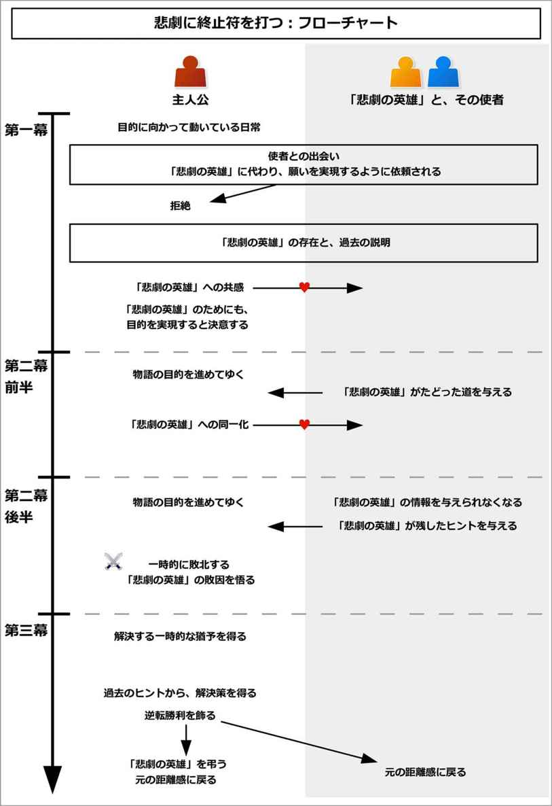
このイベントを構成するために、以下の流れで考えるとよい。
以下で、それぞれを流れに沿って説明してゆこう。
まず最初に、過去に存在したことになる「悲劇の英雄」を追加しよう。
これは主人公が物語の目的を達成する上で、主人公と大きな相似点を持つ、過去の人物になる。
基本は全くの別人を用いることになるが、過去の主人公でも、親や兄弟、先祖でも構わない。
主人公はこの「悲劇の英雄」に共感して、同一化をしてゆくことになる。
次に、その「悲劇の英雄」である相手の過去を作ろう。
相手は、過去に主人公とほぼ同じ目的を持っていたが、その目的を果たせなかったことになる。
これは、主人公の目的から出来事の流れを作って、それを相手の過去に当てはめてもよい。逆に相手の過去を作り、それを主人公が経験してゆく流れとして当てはめてもよい。
なので、片方の流れさえ作れば、もう片方はそれをコピーすればよいだけである。
そして主人公は、そんな相手とほぼ同一の経験をしてゆくことになる。
バトルものなら、主人公と同じように敵を倒そうとしたり、優勝を目指したことだろう。恋愛物語なら、主人公と同じように、恋人役と同じような人に恋をして、結ばれようとしただろう。
だが、相手は最後の最後で、それを果たせずに終わることになる。
最後に、「悲劇の英雄」である相手がその目的を果たせなかったことで、後に尾を引く問題を作ろう。
この問題によって、相手に関係する多くの人が苦しむことになる。
バトルものなら、相手は魔王を倒そうとして、戦ったかもしれない。だが、魔王を倒せず終わることで、多くの人が魔王に支配されて苦しめられるようになったかもしれない。
相手は大会での優勝を目指したが、敵に負けたかもしれない。ならば、それからずっと、相手が属していたチームは敵チームから馬鹿にされ続けたかもしれないし、屈辱を受け続けたかもしれない。
恋愛物語なら、相手が恋人と結ばれなかったことで、両家が離ればなれになってしまったかもしれない。それによって、両家が没落したかもしれない。もしくは、両家が支配力を失ったために、パワーバランスが崩れて、抗争が起きるようになったかもしれない。
そのように、相手が目的を果たせなかったことで、尾を引く悪影響を作ろう。
なお、この事情は根が深ければ深いほど、そして長い間、多くの人が、深く苦しんでいればいるほど、派手になって魅力が出やすい。
「百年前に起こった事件」、「千年前に起こった悲劇と問題」という風に、壮大な時間を取るのもいいだろう。
また、「この家系に影響を受けている」、「この土地に住む人が影響を受けている」、「街や国全体が持ち続けている」という風に、関わる人を大規模にするのもよい。
そんな長きにわたる深き問題に、主人公が終止符を打つことになるのだ。
それでは実際に、このイベントの流れを見てゆこう。
なお、このイベントは、メインプロットである「本来の目的」とは別に、サブプロットとして自由な形で、並列して走らせることができる。
以下では「本来の目的」と同調して説明させてゆくが、全くの別個にイベントを進行させても構わない。
イベント冒頭では、主人公が物語の目的を達成しようとしている姿が描かれる。
バトルものなら、敵を倒そうとして戦っていたり、大会で優勝するために訓練しているだろう。恋愛物語なら、もっと恋人役との接点を得ようとしているかもしれない。
ここでは作成例として、魔物と戦うバトルものと、恋愛物語の二つの例で説明してみよう。
魔物と戦うバトルもので言うと、現代ファンタジーの世界観で、主人公として青年がいるとする。
イベント冒頭では、主人公の青年が、夜な夜な魔物と戦っている姿が描かれる。そして悪い魔物を封印して、街の平和を守っているとする。
また、魔物を生み出す根源となる、異世界とのゲートが開きつつあるとしよう。
主人公は、「その魔物を生み出すゲートを閉ざしたい」という目的を持っていることが示される。
恋愛物語の例で言うと、世界観は学園もので、主人公として青年、恋人役として少女がいるとしよう。
イベント冒頭では、主人公は、少女との恋を進めている姿が描かれるだろう。
そして、主人公は「少女と結ばれたい」という目的を持っていることが示される。
そんなとき、主人公は過去にいた「悲劇の英雄」について、知ることになる。
これは、過去から何かしらの使者（ヘラルド）が訪れることによって、引き起こされやすい。
ただし、使者は「悲劇の英雄」その人ではないことに注意しよう。「悲劇の英雄」からの願いを受け取った部下や仲間、手下や子孫であることが多い。
「悲劇の英雄」その人でもよいが、その場合は健忘を伴うなどの、何らかの「過去を部分的に思い出せない事情」が必要になる。この理由は、第二幕後半で示す。
使者は人間だけでなく、遺書や遺言、伝承、家伝などとして伝えられることもある。また、過去に関わった人が幽霊となり、主人公にそれを伝えることもある。
主人公はそんな使者と出会うだろう。そして使者から、「過去の『悲劇の英雄』に代わって、我々の願いを実現してください」と頼まれることになる。
なお、過去の事情説明は長くなり、複雑になりがちである。また、第二幕以降でも、コミュニケーションを取ってゆくことになる。そのため、文献よりも人物を用意した方が、後の説明がスムーズにできるだろう。
魔物と戦うバトルもので言うと、魔物と戦っている主人公の元に、ある使者が訪れる。
使者はある家系の末裔で、その家は代々「千年前から、魔物のゲートを再び封じようとする人が現れたときに、知恵と力を授けるように」と伝え続けられたとする。
そしてその使者は、主人公に「千年前の当主に代わって、我々の願いを叶えて欲しい」と頭を下げるだろう。
恋愛物語の例で言うと、少女と付き合いをしている主人公の元に、ある日、ある家からの使者が訪れる。
使者はある家柄の子孫で、「百年前の先祖から伝わる遺言を携えて参りました」と言うだろう。
その遺言では、主人公に「主人公の家系の子孫は、いつか何々家の人と、再び結ばれて欲しい」と書かれている。そしてその家の末裔が、まさに少女に当たるのだ。
多くの場合、ここで主人公は一度拒絶することになる。
それは、「いきなりのことでためらう」もしくは、「信じられなくて、罠だと疑う」、「やっかいごとには引き込まれたくない」などの心理として引き起こされやすい。
場合によっては、使者は主人公に対して、明らかに面倒を持ちかけてきそうな雰囲気であったり、敵のような姿をしていることもある。
主人公は突然の出来事に驚き、すぐには受け入れがたい心情を持つだろう。
魔物と戦うバトルもので言うと、主人公は突然の使者来訪に戸惑い、身構えるだろう。
場合によっては、使者を敵の罠だと疑って、遠ざけようとするかもしれない。
恋愛物語の例で言うと、主人公は「少女との恋を実現できるかどうかも分からないのに、結ばれて欲しいなんて言われても」と、使者の言葉に身構えるだろう。
そして「何か思惑があるのではないか」と、疑ってかかることになる。
そんなとき、改めて状況の説明と、使者から「悲劇の英雄」について説明されることになる。
使者は主人公に害をなすものではないと伝えて、礼を尽くすだろう。そして改めて自己紹介をして、相手は主人公を応援するために訪れたのだと言うだろう。
ここでは、使者から以下の内容について説明されることになる。
この説明部分が、このイベントでも最も根幹となる部分になる。そしてこの過去の流れをしっかりと構築できていればいるほど、時間的な壮大さを加えることができて、魅力的になる。
以下で、それぞれについて説明してゆく。
まずは、過去に「悲劇の英雄」がいたことと、その人物がたどった過去について説明される。
主人公は物語で目的を持っているが、実は過去にも主人公と全く同じことをしようとして、達成できなかった人物がいると説明される。
主人公が敵を倒そうとしている場合、その「悲劇の英雄」も敵を倒そうとしたことだろう。主人公が何かを実現しようとしている場合、その「悲劇の英雄」も、それを実現しようとしただろう。
だが、敵がいたり、何らかの問題が発生することで、それを実現できなかった流れが示される。
また、ここで「尾を引く悪影響」についても説明される。
「悲劇の英雄」がそれを実現できなかったことで、彼の周囲にいる人物や、子孫、社会などが苦しみを被り続けるようになったことが説明される。
場合によっては、主人公もその悪影響を受けているかもしれない。
最後に、主人公が「悲劇の英雄」に代わって、その「尾を引く悪影響」を止められることが示される。
それは、主人公が物語の目的を実現するだけで、自動的にその悪影響を止められることになる。
これによって、主人公が実現しようとしていることに、大きな背景事情を追加することができる。すなわち、「主人公が目的を叶えるのは、多くの人の念願である」という事情を追加することになる。
使者は純粋に、主人公を応援しに来たのだと伝えるだろう。場合によっては、主人公の力になるアイテムや智恵も与えるかもしれない。
そのようにして相手からの事情説明がなされるが、主人公は「気持ちは分かるが、自分にも対処できるかどうか分からない」と、使者に対しては否定的な態度を取り続けるだろう。
魔物と戦うバトルもので言うと、ここで使者から、過去について語られるだろう。
今からおよそ千年前に、主人公と同じように魔物のゲートを封印しようとした若者がいたことが語られる。この若者が、「悲劇の英雄」となる。
若者は、主人公と同じように魔物と戦い、仲間たちと共に、ゲートを閉ざそうとしたことが示される。
だが、ゲートを閉ざすことを快く思わない敵が、若者の邪魔をして、ゲートの封印を阻止したとする。
若者はゲートの力を弱めるのが精一杯だったとしよう。そして、「今からおよそ千年後になると、封印の力が弱まるだろう。すると、異世界への門は完全に開いてしまう。だから千年後に再び異世界への門を閉ざそうとする者が現れたら、力になって欲しい」という遺言と武器を残して、倒れたことが説明される。
使者の家系は、その遺言と武器を「千年後に現れる英雄」にもたらすために、受け継いできたのだと語るだろう。
また、若者が封印を完成できなかったことで、「魔物が少しずつ現れる」、「千年後に再び、大きくゲートが開く」という尾を引く悪影響が説明される。
主人公も、その悪影響があるからこそ、魔物と戦わなければならないのだ。同時に、街の人たちもその悪影響に苦しんでいるだろう。
こうして、使者は主人公に、「過去の英雄に代わって、ゲートを完全に封印するのです。そのお願いに参りました」と、頭を下げるのだ。同時に、主人公に対して新たな武器を差し出すだろう。
主人公は武器を受け取り、「応援は感謝するが、自分でもゲートを封印できるかどうか分からないのに、過剰な期待をされても困る」と、使者に対しては否定的に接するだろう。
恋愛物語の例で言うと、ここで使者から、過去について語られることになる。
今からおよそ百年前、主人公の先祖である若旦那は、一人の女の子と恋仲だったとする。
だが、両家が結ばれることを快く思わない敵勢力の罠にかかってしまい、若旦那と女の子は結ばれなかったとする。
それまで両家は互いに補完できる関係にあり、協力し合うことで発展したのだが、それ以来、両家は苦しむことになったと説明される。
使者は両家から懇意にされていた家柄なので、その悪影響を大きくかぶり、苦しんでいることが示されるだろう。
そんなとき、両家の間で再び主人公と少女が恋仲になっていると知り、使者は居ても立ってもいられずに訪れたのだと語られる。
「百年間、先祖代々、この時が来ることを待っていました。だから、お二人に結ばれて欲しいのです。両家のつながりを元に戻して欲しいのです」と、涙ながらに使者は語るだろう。
主人公と少女が恋を成就すれば、後は全てうまくいくから、主人公に新たな負担はないと説明される。
また、使者は先祖である若旦那と女の子の遺品を持ってきて、主人公に「何かの力になれれば」と渡すだろう。
主人公は「気持ちは分かるが、自分でも少女と恋を実らせることができるか分からないのに、そんなこと引き受けられない」と、使者に対しては否定的な態度を取り続けることになる。
そんなとき、主人公は「悲劇の英雄」と同調して、「彼のためにも、自分がそれを成し遂げる」と決意することになる。
それは、「悲劇の英雄」である相手の境遇を再体験することによって起こりやすい。
主人公はあるとき、相手の遺品や伝説、出来事をより深く知るだろう。
それは、相手の足跡をたどったり、夢が途絶えた場所や、命を落とした場所に触れることになるかもしれない。偶然にも、相手の墓や、眠っている場所に訪れるかもしれない。
そこで、主人公は相手と、同じような境遇なのだと知ることになる。
同じような苦しみや悩みを持っていただろうし、同じようなことに喜んだことだろう。
それによって、主人公は相手を全くの他人事だとは思えなくなり、妙に親近感がわくのだ。
こうして主人公は、「相手のためにも、自分がそれを代わりに実現しよう」と決意することになる。
魔物と戦うバトルもので言うと、ここで主人公は、千年前の若者についてより深く知るきっかけが訪れるだろう。
それは、使者からより詳しく、若者について聞くことで引き起こされる。
若者は、家族を魔物に殺されたかもしれない。また、この土地で、人々に優しくされた過去を持つかもしれない。
そしてそれは、主人公の境遇と全く同じなのだ。
主人公は、若者の墓参りをするかもしれない。
そこで主人公は「それで封印ができずに倒れたのなら、さぞや無念だっただろうな」と、若者に同情することになる。そして、若者を全くの他人だとは思えなくなり、自分の同士のように感じるだろう。
こうして主人公は若者の武器を握りしめて、「若者のためにも、俺が代わって魔物のゲートを封印してやる」と決意することになる。
恋愛物語の例で言うと、ここで主人公は、百年前の若旦那について知るだろう。
それは、使者から無理矢理渡された遺品を見ていて、その過去に触れるかもしれない。
写真があり、若旦那と女の子は、主人公と少女に外見がそっくりかもしれない。また、それぞれの日記があり、若旦那と主人公は、同じような境遇だと知るだろう。また、若旦那と女の子の関係も、主人公と少女の関係と似通っているだろう。
そして、二人が引き裂かれてゆく苦しみと、引き裂かれた後の絶望が記されているかもしれない。
主人公はそれに触れることで、「きっと、哀しかっただろうな」と他人事のようには思えなくなる。
こうして主人公は、若旦那の遺品を受け入れて、「若旦那のためにも、少女と結ばれよう」と決意することになる。
第二幕前半と後半では、本来の目的を進めていくのと同一の流れになる。その上で、過去と同じ構図が再現されてゆくことになる。
主人公が仲間を手に入れる場合、その仲間は「悲劇の英雄」が得た仲間と同じような素質を持っているだろう。場合によっては、相手の仲間だった人物の子孫が、主人公の仲間になることもある。
主人公が困難を持つ場合、その困難は「悲劇の英雄」が経験したのと同じようなものになるだろう。
主人公に敵がいる場合、その敵は、「悲劇の英雄」が戦った敵と同じような性質を持っているだろう。相手の敵だった人物の子孫が、主人公の敵になることも多い。
主人公は、使者から少しずつ、「悲劇の英雄」のことを詳しく聞き出すだろう。
そして、自分が意図せずに、「悲劇の英雄」と同じような道をたどっていることに気づいてゆくことになる。
また、主人公が困難を前にしたときに、「悲劇の英雄」がどう対処したかをヒントにすることで、乗り越えることもある。
その場合、使者から「悲劇の英雄」がどのようにして解決したのか、全てを説明されていない状況で、問題に対峙するようにするとよい。
そうすることで、主人公が解決した後に、「それは悲劇の英雄がやったことと同じだった」とすることができる。
こうして、結果として過去と同じような構図が再現されてゆくことになる。
この部分は、サブプロットとして構築するとよい。
その場合、過去と現在とでほぼ同じような展開になるので、片方を作りさえすればよい。もう片方は、それを少しだけ変更をすればよい。
主人公は仲間を手に入れて、困難を乗り越えて、力をつけてゆくだろう。同時に、敵が次第に明確になってゆく。
それと同時に、主人公はさらに「悲劇の英雄」の境遇を知り、共感をしてゆくだろう。
そしてどんどんと、「悲劇の英雄と自分とは、無関係の他人だとは思えない」、「自分は悲劇の英雄の生まれ変わりではないか」と感じるほど、同一化をしてゆくことになる。
魔物と戦うバトルもので言うと、ここから主人公は、魔物が発生するゲートを封印するために、力をつけてゆくことになる。
主人公に仲間ができると、実はその仲間の先祖も、「悲劇の英雄」である若者の仲間だったと知るだろう。
主人公が使者から「若者は、こういう場所で戦った」という話を聞くと、まさにその場で魔物が現れて、同じような戦いをすることになるだろう。
こうして主人公は、次第に力をつけてゆくことになる。
また、敵の姿も次第にはっきりしてきて、その敵も、過去に若者を邪魔した勢力の末裔だと分かるだろう。彼らは人を苦しめることで、快楽を得ているとする。
それはまさに、千年前の再現とも言えるほどの構図となる。
また、主人公は若者の境遇を知ってゆくにつれて、「他人だとは思えない。自分は彼の生まれ変わりではないか」と感じるほど、同一化をしてゆくことになる。
恋愛物語の例で言うと、ここから主人公は、少女との恋を進めてゆく。
主人公に仲間ができれば、それは「悲劇の英雄」である若旦那を支えた人と、同じような素質を持つ人になるだろう。
また、若旦那の日記を読んだ後で、同じような出来事が少女に起こるかもしれない。そこで、主人公は若旦那の遺品を使うことで、少女を助けるかもしれない。
少女は、若旦那の愛した女の子と同じように喜び、主人公に信頼を寄せてゆくだろう。
こうして二人は、絆を深めてゆくことになる。
また、次第に敵の姿も判明する。そして主人公と少女を引き裂こうとする理由も明らかになってゆく。
ここでは、主人公の家と少女の家は、共に主人公がいる地域では人望がある家だとしよう。だがもう一つ、昔から金と権力で、人を脅して地域を支配しようとする家があるとする。その家の主が、敵だとする。
主人公の家と少女の家が協力し合うと、魅力が高まりすぎて、敵の家は太刀打ちできなくなるのだ。だから、実力で両家を引き裂こうとしているとする。
それはまさに、百年前の若旦那がいたときと、同じような状況となっているだろう。
そして、主人公は若旦那の境遇を知るにつれて、「自分はあの人の生まれ変わりなのではないか」と思うほど、親近感を持ってゆくことになる。
ここでターニングポイントを迎えて、主人公は敵と戦う方向で動き出す。
物語の目的を実現するために、主人公は必要な前準備を終えるだろう。それと同時に、「悲劇の英雄」と深い絆を結んでいる状態になる。
ここまでの主人公は、使者から「悲劇の英雄」がたどった道を知ることで、上手く対処できたことだろう。
しかしここから、主人公はそんな「悲劇の英雄」の情報を得られなくなってしまう。特に、なぜ「悲劇の英雄」が敵に敗北したのか、その情報が得られなくなるだろう。
それは、「情報欠損」に象徴されて引き起こされやすい。
使者は「悲劇の英雄」の情報を主人公に全て与えるだろうが、肝心の敵と戦った部分や、敗因が残されていないのだ。
それは、「悲劇の英雄」が彼ら使者に伝えきる前に、命や体力の限界を迎えたからかもしれない。当初は残っていた情報が、何らかの事故で失われたかもしれない。場合によっては、「悲劇の英雄」が意図的にそうする場合もある。
時に、その情報が残っていても、使者が倒されてしまったり、敵の罠にかかって情報が隠滅させられることもある。
結果として、主人公は「悲劇の英雄」がなぜ負けたのか、どうすれば敵に勝てるのか、その情報が得られなくなってしまうのだ。
ただしその代わりに、ここで解決へのヒントが与えられる。
それは、何らかの暗号や謎かけとして与えられやすい。
「悲劇の英雄」は、敵を倒す方法を敵に知られないようにしたいものだ。そして未来に現れる英雄、すなわち主人公にだけ伝わるように、肝心な部分だけを意図的に暗号化することが多い。
これは、第三幕の内容から逆算して作るとよい。
その暗号や謎かけを得た主人公は、それを解こうとするだろう。だが、ここではその内容は分からないことになる。
魔物と戦うバトルもので言うと、ここまでで主人公はゲートを封印する準備を整えて、ここからゲートを封じる流れに移る。
主人公は、「悲劇の英雄」である若者がどのようにしてゲートを封じようとしたのか、そしてなぜ失敗したのかを、使者から教わろうとするだろう。
しかし使者は、「ゲートを封じる方法は分かっていますが、なぜ失敗したのかは分かりません」と答えるだろう。
その情報は、若者からは伝えられなかったのだ。
その代わりに、若者から「水と月の交わるところ」という、暗号のような言葉を残されたことを知る。
主人公は、「敵に悟られないように、そのような暗号を残したのだろう」と予測して、その暗号を解こうとするだろう。
しかし、その暗号は解けずに終わる。
恋愛物語の例で言うと、ここまでで主人公は少女との絆を結び、ここから少女と結ばれようとする流れに移る。
ここで主人公は、なぜ若旦那が敵によって、恋人である女の子との仲を引き裂かれたのか、その原因と敗因を知ろうとするだろう。
だが、使者は「分かりません。なぜ二人が離ればなれになったのか、伝えられていないのです」と答える。
その代わりに若旦那は、妙な「数字と言葉の組み合わせ」を残しているだろう。
主人公は、「これは何かの暗号だろうか？」と予測する。「他の人に知られてはいけない、未来に現れる当事者、すなわち主人公にだけ伝えたい内容ではないか」と思うのだ。
主人公はその暗号を解こうとするだろうが、解けずに終わることになる。
主人公はついに、決戦の前日を迎える。
暗号の謎と、なぜ「悲劇の英雄」が敗北したのかは、結局分からずじまいになる。
主人公は最後の安らぎを得つつ、同時に「悲劇の英雄」に対する思いをはせるだろう。
また、「悲劇の英雄」を身近に感じることで、「今度こそ、自分が実現してやる」と決意するだろう。
戦い当日が訪れると、主人公は立ち上がる。
そして、長きにわたる苦しみに終止符を打つために、主人公は決戦の場へと旅立つのだ。
魔物と戦うバトルもので言うと、ついに魔物のゲートが開く時が訪れるだろう。
戦いの前夜、主人公は最後の安らぎを得ることになる。
主人公は、「悲劇の英雄」である若者に、思いをはせるだろう。その若者は主人公と同じようにこんな戦い前夜を迎えて、その翌日、願いを果たせずに倒れて、命を失ったのだ。
そして、決戦当日が訪れる。
その夜、主人公は若者が握った武器を手にして、若者が使ったアイテムを身につけるだろう。
暗号と敗因は分からずじまいだが、主人公はそれを乗り越えなければならない。
こうして千年も続く戦いに決着をつけるべく、戦いの場へと赴くことになる。
恋愛物語の例で言うと、ついに告白する時が訪れるだろう。
その前夜、主人公は「悲劇の英雄」である若旦那に思いをはせるだろう。若旦那は同じように告白前夜を迎えて、この翌日、敵の手にかかり傷つき、女の子との仲を引き裂かれたのだ。
夜が明け、当日が訪れる。
結局暗号と、なぜ若旦那が女の子と別れたのかは、分からないままだろう。
だが主人公は若旦那の思いを胸に、恋人役である少女の元へと向かうだろう。
ここから主人公は、敵と戦って、目的を実現しようとしてゆく。
多くの困難が立ちふさがり、敵とは総力戦になってゆくだろう。仲間も一人、また一人と倒れていくかもしれない。同時に、敵も力や勢力を失ってゆくだろう。
そんなとき、主人公は敵の罠にかかり、ここで一時的に敗北することになる。
それは、「悲劇の英雄」がたどった道と同じ道になる。主人公はここで、「悲劇の英雄」の敗因を知ることだろう。
だが、今それを知ったところで、もう遅いのだ。
主人公は絶望するだろう。そして「悲劇の英雄」と同様に、まるで過去が再現されたかのように、主人公は敗北を喫してしまうことになる。
敵は高笑いをし、勝利を確信するだろう。一方で主人公は、絶望に浸ることになる。
魔物と戦うバトルもので言うと、ここから主人公は、魔物が出てくるゲートが開いてゆく中で、ゲートを開こうとする一族との戦いになる。
互いに総力戦になり、幾度も逆転劇を繰り返すだろう。
そんなとき、敵の罠が発動する。敵は、大勢の力のない一般市民をゲートの前に配置することで盾にして、「これでもゲートを封印できるか」と脅すだろう。
その卑劣な手段に、主人公は怒りを持つだろう。だが、そのためらいが隙を生み、劣勢に立たされてしまう。
敵は勝利を確信して、「千年前と変わらない、お人好しどもだ」と、主人公たちを笑うだろう。
それによって主人公は、なぜ「悲劇の英雄」が敗北したかを知ることになる。そしてそれを知った時には、もう遅いのだ。
こうして主人公は敗北することになる。
敵は高笑いをして勝利を確信し、主人公は絶望に浸るだろう。
恋愛物語の例で言うと、ここから主人公は、少女に告白しようとする流れになる。
ここでは、少女の誕生日などで、祝いの場が設けられているとしよう。
社交の場でもあるので、敵の家の刺客も紛れ込んでいると分かるだろう。
刺客は、主人公と少女との仲を引き裂こうと、小細工を使って嫌うように仕向けるかもしれない。
だが、主人公はそれを乗り越えてゆく。
そんなとき、敵の罠が発動する。
主人公のポケットにふいに手紙が入れられて、「それ以上少女に近づけば、少女を殺す」という脅しがあるのだ。
それを証明するかのように、少女のペットが殺されてしまうかもしれない。だが、敵の家がそれをしたと証明することはできない。
主人公は、なぜ若旦那が女の子と結ばれなかったのかを、理解するだろう。だが、それを知った時には、もはや遅いのだ。
その後、主人公は少女と約束通り二人きりになる。少女はペットの死に哀しみ、だからこそ主人公と一緒にいることを求めるだろう。
だが、もはや主人公に告白することなどできないし、一緒にいることすらできないのだ。
互いに好きなのに、主人公は少女を好きでいるからこそ、「これ以上一緒にいるのはやめよう」と言わざるを得ないのだ。
少女は戸惑い、理由を訊くかもしれない。しかし、主人公がその理由を答えられるはずもない。
こうして主人公は少女と別れることになり、敵に敗北してしまうことになる。
敵の家は高笑いをして勝利を祝福し、少女との大切な関係性を失った主人公は、絶望に浸るだろう。
主人公は敗北してしまった。主人公は絶望に浸り、希望を失った状態で滅びまでの時間を過ごすことになる。
だがそんなとき、主人公にわずかな猶予が与えられる。
敵がいる場合、勝利を確信した敵は、完全に主人公にとどめを刺すことはしないだろう。そして油断をして、主人公にさらなる絶望を見せようと企むかもしれない。
そこで主人公は、まだ完全に終わったわけではないと気づく。
主人公は仲間たちから救われることや、幸運を得ることで、自由に動ける猶予を得るだろう。
そして全てが終わるまでのタイムリミットが設定されて、それまでに問題を解決しなければならなくなる。
魔物と戦うバトルもので言うと、ついに魔界と街とを繋ぐゲートが、本格的に開き始めるだろう。
だが油断した敵は、主人公に「そこで街の終わりを眺めていろ」と言い、とどめを刺さずにいることになる。
そんなとき、主人公は仲間によって救出されるだろう。そして手当てを受けて、動けるようになる。
ゲートが開ききるまでは一刻の猶予もないが、まだ時間はある。その時間がタイムリミットとして設定される。
その間に、主人公は今度こそゲートを封印しなければならなくなる。
恋愛物語の例で言うと、少女と別れた主人公は、灰色の毎日を送り始めるだろう。
少女が声をかけてきても、あえて冷たくあしらわなければならないかもしれない。
それによって、少女は「主人公が変わった」と、涙するかもしれない。
主人公はそれでも、少女のために突き放さなければならないのだ。
そんなとき、「まだ終わったわけではない」と気づかされることになる。それは、仲間から励まされることで気づくかもしれない。
主人公は仲間たちの協力もあり、敵の監視をすり抜けて行動する抜け道を得るだろう。そこでなら、少女とも会うことができるのだ。
場合によっては、少女は主人公の抱えている事情に気づき、「殺されてもいいから、主人公と一緒にいたい。だから協力させて」と伝えるかもしれない。
こうして主人公は、「敵に見つかる前に、敵の陰謀を排除する」、「失敗すれば、少女は殺される」という、タイムリミットを持つことになる。
主人公は再び行動してゆくだろう。
そして何らかのきっかけで、「悲劇の英雄」が残した暗号の意味を理解することになる。
これは、読み手には暗号の意味を隠しておいて、主人公だけが気づくように演出することが多い。
読み手は暗号の意味が分からないまま、主人公が起こす意味不明な行動を見守るだろう。
時に、主人公の周囲は、そんな意味不明な行動を起こす主人公を見て、「ついに気が狂った」などと言うかもしれない。
だが、主人公は着実に対策をしているのだ。
そして主人公が絶体絶命の状態に陥ったように見せかけて、その「隠しておいた解決法」を実行に移す。
それによって、主人公は敵に逆転勝利を収めることになる。
魔物と戦うバトルもので言うと、主人公はゲートを封印するために、考え始めるだろう。
そして何らかのきっかけで、「悲劇の英雄」が残した「水と月の交わるところ」という暗号の意味が判明する。ただし、ここではまだ、読み手にはその意味を明かさない。
主人公はゲートとは正反対の方向に走ってゆくだろう。それを見て、仲間は「主人公が逃げ出した」と勘違いするかもしれない。
主人公は敵に見つかり、追い込まれてゆくだろう。
そして絶体絶命の状態になったとき、主人公はニヤリと笑うのだ。
そこで主人公は、「水と月の交わるところ」が、ある場所を指していることを明かして、そこには敵を一網打尽にできる力があるのだ。主人公は逃げる姿を装い、敵をそこまでおびき出したことが明かされる。
こうして主人公は、敵を滅ぼす。同時に、主人公の意図を理解した仲間たちは、盾となっていた一般市民を助け出すだろう。
結果として、主人公は見事にゲートを完全に封印することができるのだ。
恋愛物語の例で言うと、主人公は少女への脅迫を無効にして、敵に勝つために、考え始めるだろう。
そのとき、何らかのきっかけで、「悲劇の英雄」である若旦那が残した、数字と文字の意味が判明する。
主人公は、ある小さな家へと向かうだろう。そして読み手に見せないように何かをした後で、今度は堂々と少女に会いに行くのだ。
その後、主人公と少女は一緒に、敵の家を操る主がいる場所に、直接赴くかもしれない。
敵の主は、部下に命令して、少女に銃を向けるだろう。読み手は、「主人公が少女を殺すために動いた」と勘違いするかもしれない。
そんな絶体絶命に追い込まれたとき、主人公はニヤリと笑うのだ。
そして敵部下たちの銃口は、一斉に敵の主へと向けられる。敵の主は、部下たちに銃口を向けられて、驚くだろう。
ここで主人公が、種明かしをすることになる。主人公は若旦那の暗号を解読して、それがある家系を指していたことが示される。
その家系こそが、過去に女の子に危害を加えようとしていた、陰の実行グループになるのだ。
その家は、敵の主から人質や金の問題を盾に、脅されていたとする。主人公はその家に向き合い、彼らが持つ問題を解決したことが明かされる。
そしてその敵から脅されていた家が、まさに今、敵の主に銃口を向けている部下たちに当たるのだ。
結果として、敵の一家は実行グループから裏切られる形となり、街から永遠に追い出されることになる。
こうして主人公は、敵からの脅威を完全に取り払い、逆転勝利を収めるのだ。
目的を果たした主人公は、「悲劇の英雄」を改めて弔うだろう。彼がいたことで、長きにわたる苦しみに終止符を打つことができたのだ。
主人公は大切な人たちと共に、新たな毎日を送り始めるだろう。
こうして全ての問題が解決して、ハッピーエンドへと導かれる。
魔物と戦うバトルもので言うと、ゲートは完全に閉ざされて、街に平和が訪れるだろう。
主人公が魔物と戦う必要はなくなり、新しい毎日を送り始めることになる。
こうして千年もの長きにわたる戦いに終止符が打たれて、ハッピーエンドへと導かれる。
恋愛物語の例で言うと、敵の家は完全に追放されて、滅ぶことになる。
主人公の家と、少女の家の両家が結ばれ、街では平和がもたらされるだろう。実行グループの家も、今までの行動を悔い改めるだろう。そして人を脅すことなどやめて、主人公と少女の家に忠誠を誓い、新たな日々を始めるだろう。
主人公は少女に改めて告白し、結ばれるだろう。
こうして百年にも渡る街の苦しみに終止符が打たれて、全ての問題が解決し、ハッピーエンドへと導かれる。
このイベントをコメディで用いる場合、主人公や敵の「目的」や「戦い」を馬鹿げたものにするとよい。
それによってギャップが生まれて、笑いを作れるだろう。
このイベントは、メインプロットを補強するためのサブプロットとして用いるとよい。
歴史や背景を強化できるため、世界観に時間的な壮大さを作りたい場合に効果的になる。
なお、第一幕で「悲劇の英雄」の過去を説明する場合、別物語として挿入しても構わない。
すなわち、いったん舞台を変えて、「悲劇の英雄」を主人公にして、物語を進める形にしてもよい。
その場合、「悲劇の英雄」が敗北する部分は描かれずに、読み手には伏せられることになる。
「相手に恩を持つ」は、主人公が相手から恩を受けることによって起こるイベントである。
主人公はある日、相手から助けられることになる。
それは相手にとっては簡単にできる親切だが、主人公にとっては命を助けられるほどの大きな助けになる。
主人公は相手にお礼をしようとするが、何も返せるものはない状態になる。
一方で相手はお礼など受け取ろうとしないし、気にもとめない程度だろう。しかし主人公は納得がいかずに食い下がる。
すると、相手は主人公の目的を知り、その目的に沿うことをお礼代わりとして要求することになる。
結果として主人公が目的を達成して、相手に喜ばれて、主人公も納得して問題解決をする流れになる。
このイベントは、メインプロットを補強するためのサブプロットとして用いられる。
主人公の動機を強化できるため、主人公の動機が弱い場合によく用いられる。
また、大規模な物語構築において、非関連な物語を一つに集約させる場合に中核となるイベントになる。
このイベントの概要図と流れ図を、それぞれ以下に示す。
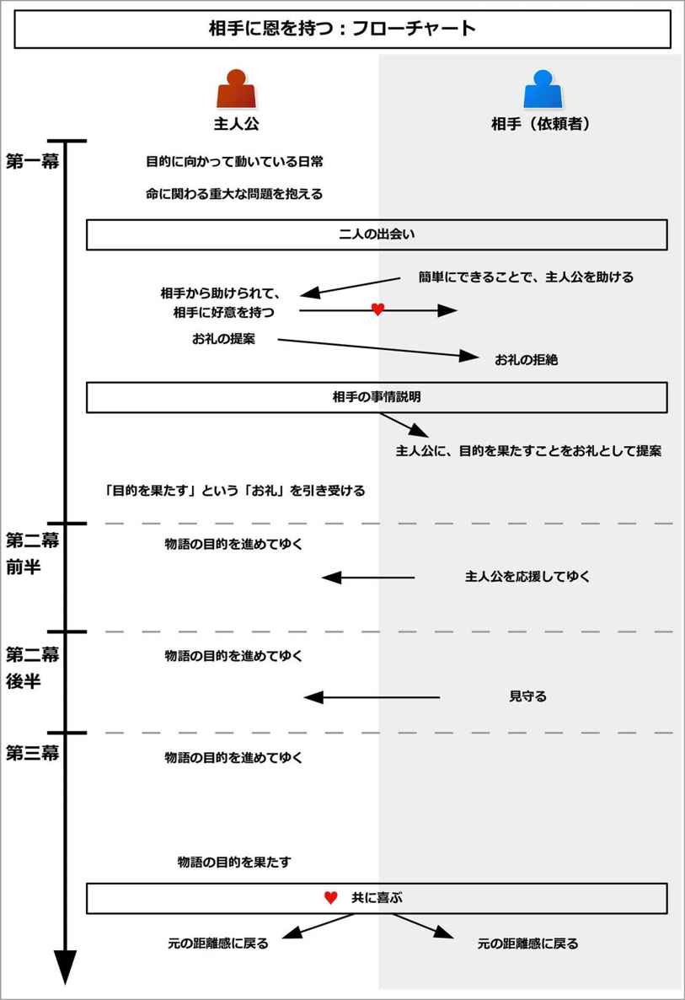
このイベントを構成するために、主人公を助ける相手を決めよう。
これは多くの場合、仲間になる。
もちろん、全く関係のない第三者でも構わない。第三者の場合、動機を強化するためだけに用いられることになる。
それでは実際に、このイベントの流れを見てゆこう。
なお、このイベントは、メインプロットである「本来の目的」とは別に、サブプロットとして自由な形で、並列して走らせることができる。
以下では、このイベントの内容と用途を分かりやすくするために、「本来の目的」は含まない形で説明する。
イベント冒頭では、物語の目的を達成しようとしている主人公の姿が描かれる。
これはどのような形でもいい。最初に主人公の目標を、読み手に示すことさえできればよい。
そんなある日、主人公は相手と出会い、ちょっとしたことで相手から助けられることになる。
これは、相手にとっては些細なことや簡単にできることになるが、主人公にとっては「命を救われた」というほどの内容になる。
この内容は、「日常にある大きな脅威」を元に作るとよい。
例えば主人公が、炎天下の夏の日に、誰も通らない場所で道に迷うかもしれない。そして暑さで気分が悪くなり倒れてしまい、そのままだと死ぬ状況になるかもしれない。
だがそんなとき、相手が偶然通りがかって、たまたま持っていた水を与えたり、日陰に運んで助けるだろう。もし相手が女性や子どもで主人公を運ぶのが大変な場合、「通りがかった誰かに運んでもらっただけ」程度にするとよい。
他の例で言うと、主人公が川に落ちて、おぼれるかもしれない。ならば、相手は浮き輪やそれに代わるものを投げ込む程度だろう。
主人公が山道で迷ってしまい、出られなくなるかもしれない。そんなとき、相手が通りがかって、道を案内するだろう。山道を案内するのは、相手がいつも歩いている道で、そのついでになるだろう。
ファンタジー的な世界観であれば、主人公は野犬やオオカミに襲われ、取り囲まれることもあるだろう。それを、通りがかった相手が助けることになる。
野犬やオオカミは、相手が大声や大きな音を出せば追い払える程度だろう。
助けられるのは、主人公でなくてもよい。主人公にとっての大切な人が助けられることで、主人公が感謝を持つこともある。
そうすることで、主人公にとっては「命の恩人」となるのに、一方で相手にとっては「ちょっとした親切」となり、両者の認識にズレが生じることになる。
主人公は、命を助けられて感激するだろう。そして、相手への好意を持つことになる。
すると、主人公は自然と、「何かお礼をしないと！」と思うものだ。
だが、このとき主人公は、何もろくなものを持っておらずに、お礼ができない状態になる。
一方で助けた相手は、さほど助けたことを気にしていないものだ。だから、「別にお礼をされるようなことじゃないよ、気持ちだけ受け取っておくよ」と、軽く流そうとするだろう。
こうして相手は、主人公からのお礼を拒絶することになる。
だが、主人公はお礼をしなければ気が済まないだろう。
ここで状況の整理がされて、主人公と相手の目的が合致することが示される。
主人公は、相手によって命を助けられたことが、再度示される。それによって、「それにふさわしいお礼をしたい」と願っている。
一方で相手にとっては、それはちょっとした親切程度なので、お礼を受けるほどのことではない。
このような認識のズレがある、という問題が示される。
相手もそんな主人公の気持ちを理解して、「何か主人公にとって簡単にできることで、自分にとって大きな喜びとなるお礼はないか」と考えるだろう。
そんなとき、相手は主人公の事情を知ることになる。
相手は何らかの拍子で、主人公がこれから成し遂げようとしていることを知るだろう。
そこで、相手は「なら、お礼としてその目的を達成して。それを実現してくれたら、自分もとっても嬉しい」と言うのだ。
ここで、主人公が目下の目的を達成することで、相手が喜ぶ理由が説明される。
それは、相手が主人公が実現しようとしていることに、少なからず関わっていることになるだろう。
主人公が敵と戦おうとしている場合、相手もまさにその敵によって苦しめられている立場なのかもしれない。
主人公が誰かと結ばれようとしている場合、二人が結ばれることで、相手は大きなメリットを得られるだろう。
このように、「主人公が物語の目的を実現すること」で、「相手が大きく喜ぶこと」という、相手にとってはぴったりのお礼が示される。
しかし、主人公にとってはそれは「相手へのお礼を何もしないこと」と同義になる。
そのため、主人公は「他に、もっといいお礼はないか」とためらい続けるだろう。
そんなとき、何らかのきっかけがあることで、主人公は「自分の目的を果たすことで、相手を喜ばせる」ということに同意することになる。
そのきっかけは、相手がどれだけそれで喜ぶのか、その事情を知ることで引き起こされやすい。
主人公は、何らかのきっかけで、相手の日常に触れるだろう。どこかで相手と偶然出会うかもしれないし、相手の家におじゃまするかもしれない。
そこで、相手がどれだけ主人公が実現しようとしていることを、切に欲しているのかが示される。
家族や身近な人たちが苦しんでいる姿を見るかもしれない。相手がそのために、血のにじむほどの努力をしている姿を、垣間見るかもしれない。
それによって、主人公は喜んで相手の願いを受け入れて、相手のために「この目標を達成しよう」と行動し始めるのだ。
このようにして、主人公の動機を強化させることができる。
このイベントは、主人公の動機を強化して、相手との関連性を作ることが目的なので、第二幕以降はほとんど特別なことはしない。
ここから主人公は、自分の目的を実現してゆくことになる。
その際に、相手から精一杯の応援を受けるだろう。それによって、二人は絆を深めてゆくことになる。
第二幕後半では、物語で相手目線を追加することで、物語により緊張感を出すことができる。
目的を実現しようと奮闘する主人公を、相手はハラハラしながら見守るだろう。
読み手は、主人公の視線だけでなく、ハラハラして見守る側の緊張感を味わうことで、より多層的な楽しみ方ができる。
結果として、主人公が目的を果たしたとき、相手は主人公と一緒になって喜ぶだろう。
すると、相手の喜びが主人公の喜びとなり、達成した喜びをさらに引き立てるのだ。
こうして主人公は、「相手へのお礼」という問題を解決することになる。
ところでこのイベントは、並列して何個も置くことで、主人公が「多くの人たちからの願い」を託される形になることがある。
これは、「全くの非関連な物語を、一つの物語として集約させる」ことを実現する、基礎的な技術になる。
例えばメインとなる物語で、主人公Ａと恋人役Ａが結ばれる「物語Ａ」があったとしよう。
同じ世界で、友人Ｂと恋人役Ｂが織りなす「物語Ｂ」も別にあったとしよう。さらに、友人Ｃと恋人役Ｃの「物語Ｃ」、師であるＤと、その恋人Ｄの「物語Ｄ」もあったとする。
これらは通常、「同じ世界観だが、単発の物語」としてしか構成できないものだ。
しかしこのイベントを用いることで、全ての非関連の物語を一つに集約できることになる。
この概要図を、次図に示す。
ここから実際に、非関連の物語を一つに集約してゆく流れを説明しよう。
まずは、「物語Ａで主人公が目的とする問題」を、物語ＢからＤまでのキャラクター全員に与えておこう。
そして、読み手に見せる順番を、物語Ｂ、Ｃ、Ｄ、最後に物語Ａという流れにする。
例えば物語Ａでは、主人公Ａが恋人役Ａと共に、敵を倒すという目的があったとしよう。
すると、物語Ａでは、「敵から主人公Ａが虐げられている」という問題があるものだ。その問題を、物語Ｂ、Ｃ、Ｄの登場人物にも与えることになる。
すなわち、物語Ｂ、Ｃ、Ｄの主人公たちも、それぞれ「敵から虐げられている」という問題を抱えることになる。
そういう流れで、まずは最初に物語Ｂを読み手に与える。
読み手が物語Ｂを読み終わった後、主人公である友人Ｂは、恋人役Ｂと結ばれて終わるだろう。
だが、「友人Ｂは、敵から虐げられたまま」であるという、「一つだけ解決しきれなかった問題」が残ることになる。そのため、読み手にとっては少しすっきりしない後味になるだろう。
次に物語Ｃを見せると、最初こそ読み手は「同じ世界だけど、全く違う話だな」と受け入れて読み進めることになる。
そのときにも、同じように主人公である友人Ｃも、敵から虐げられているのだ。
また、その物語を読み終わる頃には、「友人Ｃは、敵から虐げられたまま」という、物語Ｂと全く同様の「一つだけ解決しきれなかった問題」が残ることになる。
すると、読み手は物語ＢとＣに、明らかな関連性があることに気づくだろう。
物語Ｄを読み終わる頃には、さらに同じ問題が残るため、「メインの主人公Ａが、それを解決するんだ」と分かるだろう。
最後に物語Ａを登場させて、友人Ｂ、友人Ｃ、師Ｄなどが、主人公Ａに対して、このイベントを通して恩を与えることになる。
すなわち、このイベントで全ての物語を結びつけるのだ。
主人公Ａは今まで登場した全ての主人公たちと出会い、恩を受けて、「君の目的を果たしてくれ」と願いを託されることになる。場合によっては、彼らを仲間にしたり、助力を得るかもしれない。
そして物語Ａの主人公Ａが、全ての人の願いを背に、その「根源となる問題」を解決するだろう。
それによって、物語ＡからＤまでの全ての問題が一気に解決されるという、より大規模な物語を構築することができるようになる。
当然、物語Ａのクライマックスでは、物語ＢからＤまでの全ての願いが主人公Ａにかかることになる。物語ＢからＤまでの登場人物が、ハラハラしながら主人公を見守るために、より複層的で、より高い緊張感を与えることができる。
そうすることで、「非関連の物語が、一つに統合される」という面白さを演出することができる。
なお、この場合、最初に物語Ａの冒頭部分を入れておくこともできる。
そうすることで、読み手に「全ての物語は、物語Ａに集約する」と期待感を持たせることも可能である。
このイベントは、そのような大規模な物語構築において、非関連な物語を一つに結びつける方法として用いると効果的である。
このイベントをコメディで用いる場合、助けられる内容をどうでもいいことにするとよいだろう。
それなのに主人公がとてつもなく感激することで、ギャップを作り出せて、笑いにできるだろう。
このイベントは、メインプロットよりも、メインプロットを補強するためのサブプロットとして用いられる。
主人公の動機を強化できるため、主人公の動機が弱い場合によく用いられる。
また、大規模な物語構築において、非関連な物語を一つに集約させる場合に中核となるイベントになる。
さて、今回は「人間ドラマと人間関係」という切り口で、王道プロットを説明してみましたが、いかがでしたでしょうか。
第一巻、第二巻はシンプルな構造でしたが、今回は「関係」という内容を扱うために、少しだけ複雑になっています。
「関係」ということは、最低でも二人は必要ですからね。
今までは主人公が中心となって問題を抱えていましたが、今回では主人公と恋人役や、周囲の人物も同時に問題を抱えることになっています。
そのため、時に主人公に視点が移り、時に恋人役や仲間に視点が移るなどの、多少複雑な動きをします。
だから、それなりに難易度は高いかもしれません。
ですが、関係性は難易度が高いがゆえに、マスターできればとても魅力的な内容となるものです。
理解しやすいように、今までよりも解説の分量を増やして、分かりやすく、そして詳しく解説したつもりです。
特に第一章は、「叶うべきではない夢」や「強がり」などの基礎的な内容を含むため、より詳しく説明してみました。
是非、上手く活用してくださればと思います。
いや～、今回は関係性という複雑な内容を分かりやすくするために、相当苦戦しました。
本編ではあっさりと解説してますが、ここまでシンプルにするのって、難しいんですよ。
例えば三角関係でも、普通は関係図とかを持ち出して理解しようとするじゃないですか。
でもそれよりもさらにシンプルにできるわけです。それが、「たった一人に『叶うべきではない夢』を持たせればいい」、という原理ですね。
これさえ分かれば、三角関係は作れるんですよ。
しかも、その「夢」は、人物でなくて、出来事でもいいと。
それによって、様々な関係性を描くことができるようになります。
これが、コツなんですよ。
そしてこの原理を導き出して、ここまでシンプルに構成するのは、結構難しいことなんですよ。
もう本当に苦しんだので、ここで言わないと気が済まないという（笑）。
でも、その分、シンプルで応用しやすくて、その上、威力もある技術になっているかと思います。
上手くこの技術を利用してくだされば、嬉しいです。
ちなみに、関係性を扱う内容は、女性向けになりやすいんですよね。
一般的な物語でも、男性向けよりも、女性向けの方が、より複雑な人間関係を描いているものです。
なので、作成例も、結構女性向けのものを意識して用意しました。
恋愛物語の作成例を、これでもか、というほど入れています（笑）。
もちろん男性向けでも使えますので、上手く物語に組み込むことで、より多才な人間模様を描くことができるでしょう。
本編では、一応中核となる人物を「主人公」と決めて呼びましたが、読むと「誰が主人公でもいいな」という気になった方も多いかもしれません。
これはまさにそうで、本書のイベントは「関係」が中心なんですよね。
だから、誰を主人公扱いしたとしても、全く問題ありません。
これは言い換えると、関係性を扱う場合、それだけ客観的な説明が必要になる、ということです。
「主人公が知らないけれども、読み手は知っている」とか、「このキャラは本当のことを知っているけど、このキャラは知らない」、「主人公と相手が二人とも、互いに誤解している」みたいな状況が多いですからね。
だから、漫画や映像作品などの、客観的な視線が描けるもので、これらのイベントは威力を発揮するでしょう。
一方で、一人称の物語でこれらの人間模様を組み込む場合、それなりに見せ方を工夫することが大切になります。
相手の考え方や、主人公がいない場所での相手の態度、主人公が誤解している内容なども、読み手に伝えておく必要があるからですね。
関係を扱う場合は、それだけ視線や演出に注意が必要になるでしょう。
本編を読んで気づいた方もいるかもしれませんが、人間ドラマを描くには、登場人物ごとに「心理的なズレ」が必要になります。
この心理的な食い違いが、様々な人間模様を描くきっかけになるわけですね。
例えば「三角関係を持つ」では、主人公が「叶うべきではない夢」という思い違いを持っているわけです。周囲がそれに付き合わされることで、ドラマが生まれてゆきます。
「敵になる」では、相手が「強がり」を持ちます。「上下関係を持つ」では、「気がついていない脅威」を持ちます。「立場が入れ替わる」では、「事情を言えない恥ずかしさ」を持ちます。
こういう心理的なズレが組み合うことで、登場人物が予想外の方向に動いてしまい、読み手にとっての面白さを作り出す、ということです。
ある意味、関係性を成功させるのは、そういう心理学、心理メカニズムを知っておくことが重要になる、ということですね。
人間心理を理解した人が、関係性をマスターする、とも言えるでしょう。
いやほんと、私は書きながら、「このまま心理学本にしようか」とか思ったぐらいですから（笑）。
まあ、それは余分なことになるので、心理メカニズムの解説は最小限にしておきました。
ところで今回、第三章として初めて「プロットを補強するイベント」が登場しました。
これは、普通のプロットとは違って、「厚みを加えるためのサブプロット」だと思えばいいでしょう。
メインプロットを用意して、それに追加することで、より重厚な内容にできる、ということですね。
まあ、言葉は悪くなりますが、「重ね着でボリュームを出す」とも言えます。
このイベントは、メインプロットのどこで追加しても構いません。適当な場所からこのサブプロットを開始して、適当な場所で終わらせるので構いません。
メインプロットと歩調を合わせる必要はない、ということですね。
だから、「この物語、なんか内容が薄いな」、「この部分、もう少し量が欲しいな」などと思ったら、この「厚みを加えるサブプロット」を追加するとよいでしょう。
「約束をする」では、途中で離脱する仲間を追加することになります。「願いを託される」では空間的な広がりを追加して、「悲劇に終止符を打つ」では歴史を追加します。
それによって、ボリュームアップをして、見栄えをよくすることも可能です。
ちなみに第三章で示したイベントは、「異なる物語間で、関連性を与える」という、より大きな関連性を実現する技術になります。
「相手に恩を持つ」だけでなく、第三章のイベントを用いることで、全く別の物語を、一つの物語に集約していくことができるわけです。これは世界観が同じであれば、基本的に結びつけられます。
これは特に、連作や、短編集、ゲームのように「一パッケージ内で、いくつもの物語が含まれる」という形式の物語に有効になります。
そういう場合、一つ一つの物語を個別に作り、最後にこれらのイベントでまとめることで、全ての物語に統一性を作ることができるでしょう。
独立した物語を綺麗にまとめ上げたい場合、第三章で紹介したイベントを利用するといいかなと思います。
さて、今回のあとがきもここまでにしておきましょうか。
本書を少しでもお役立てくだされば、嬉しいです。
それではまた次巻か、別の本か、ブログかツイッターでお会いしましょう。
なお、今回はチェックやら何やらで、隣の飼いケルベロスさん、息耐者カールさんにお世話になりました。
この場を借りて、お礼とさせていただきます。
最後まで読んでくださって、ありがとうございました！
二〇一五年九月十四日 中村あやえもん
あやえも研究所，ストーリープロット研究室，2014-2016．http://ayaemo.skr.jp/story/
クリストファー・ボグラー，"夢を語る技術〈5〉神話の法則―ライターズ・ジャーニー"，愛育社，2002．
中村あやえもん，"恋愛物語の作り方"，あやえも研究所，2014．
中村あやえもん，"どんでん返しの作り方"，あやえも研究所，2011．
中村あやえもん，"貴方のシナリオをもっと盛り上げる、五つのプロットテクニック"，あやえも研究所，2011．
中村あやえもん，"お笑いネタの作り方"，あやえも研究所，2011．
中村あやえもん，"「ヒロインにばれてはいけない嘘」の作り方"，あやえも研究所，2014．
中村あやえもん，"ミステリー「トリック」の作り方"，あやえも研究所，2014．
「ストーリー作家のネタ帳 イベント編３―人間ドラマ・人間関係の王道プロット15種」
【作成】二〇一五年十月二日 【最終更新】二〇一六年二月十四日
著者 中村あやえもん
作成 あやえも研究所
〒740-0026 山口県岩国市車町三丁目一〇－二七 中村方
ホームページ:http://ayaemo.skr.jp/
お問い合わせ:http://ayaemo.skr.jp/contact.html
（誤字脱字を発見した場合、右記連絡先までご連絡くださると嬉しいです）
Copyright © 2015-2016 あやえも研究所. All rights reserved.